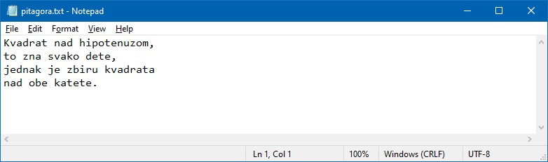

System Message: ERROR/3 (<rst_prolog>, line 3)
Unknown interpreted text role „blank”.
System Message: ERROR/3 (<rst_prolog>, line 3)
Substitution definition contains illegal element <problematic>:
<problematic ids="id2" refid="id1">
:blank:`x`
.. |blank| replace:: :blank:`x`
Рад са текстуалним датотекама¶
У овој лекцији:
уводимо појам текстуалне датотеке;
објашњавамо како се чита из текстуалне датотеке;
објашњавамо како се пише у текстуалну датотеку; и
показујемо како се ради са више датотека.
Текстуалне датотеке¶
Датотека (или фајл) је произвољно дугачак низ података који се налази на спољашњој меморији, најчешће диску. Постоје разне врсте датотека, а ми ћемо се у овој лекцији бавити текстуалним датотекама.
Текстуална датотека је низ симбола као што су слова, бројеви, знаци интерпункције и слично, који се налази на спољашњој меморији. На пример, када у неком едитору као што је Notepad откуцамо неки текст

и када га „снимимо”, оперативни систем ће тај текст сместити у текстуалну датотеку на диску:
{kind=link}
Свака датотека мора да има име, а обичај је да се име датотеке организује тако да последњих неколико симбола у имену означава тип података који је смештен у датотеку. Тај део имена се обично одвоји тачком од остатка имена и зове се екстензија. Текстуалне датотеке обично имају екстензију .txt као у следећем примеру::
Hamlet.txt
Дакле, ова датотека се зове Hamlet.txt, а због екстензије .txt знамо да се ради о текстуалној датотеци коју можемо отворити из програма Notepad, рецимо.
Пре било какве акције са текстуалном датотеком (писање у датотеку или читање из датотеке) она мора да се „отвори”, а након акције мора да се „затвори”. Као са свеском: да бисмо писали у свеску или читали из свеске морамо прво да је отворимо, а када завршимо треба да је затворимо. Зато сваки програм који ради са текстуалним датотекама има овакву структуру:
f = open(...) # otvorimo datoteku
... # radimo nešto
... # radimo nešto
f.close() # zatvorimo datoteku
У зависности од тога на који начин је датотека отворена зависиће да ли у њу може само да се пише или само да се чита. Свака датотека која се отвори из Пајтона мора да добије име у облику неке променљиве и кроз ту променљиву програм комуницира са датотеком на диску.

Податке из неке датотеке можемо или само да читамо, или је могућ само упис у датотеку. Није могуће истовремено и писати у неку датотеку и читати из ње.
Читање из текстуалне датотеке¶
Са овог линка можеш да преузмеш текстуалну датотеку Iliad.txt која садржи енглески превод Хомерове Илијаде. Ако отворимо ову датотеку из неког едитора као што је Notepad видећемо да текстуална датотека изгледа као текст који је организован у редове, рецимо овако:
The Project Gutenberg eBook of The Iliad, by Homer
Translated by Edward, Earl of Derby
BOOK I.
Of Peleus' son, Achilles, sing, O Muse,
The vengeance, deep and deadly; whence to Greece
Unnumbered ills arose; which many a soul
Of mighty warriors to the viewless shades
Untimely sent; they on the battle plain
Unburied lay, a prey to rav'ning dogs,
And carrion birds; but so had Jove decreed,
From that sad day when first in wordy war,
The mighty Agamemnon, King of men,
Confronted stood by Peleus' godlike son.
(итд)
Следећа команда отвара ову датотеку за читање:
f = open("Iliad.txt", "r")
Команда open отвара датотеку "Iliad.txt". Аргумент "r" команде open каже Пајтону да датотеку треба припремити
за читање (ознака r потиче од првог слова енглеске речи read што значи „читај”).
Када смо датотеку припремили за читање, најзгодније је да је прочитамо ред по ред, што се у Пајтону може постићи употребом
for циклуса. Команда
for red in f:
# uradimo nešto sa redom
ће читати податке из датотеке f ред по ред:
програм прочита први ред из датотеке и упише га у променљиву
red;па изврши тело циклуса;
онда прочита други ред из датотеке и упише га у променљиву
red;па изврши тело циклуса;
и тако за сваки ред датотеке.
На крају не смемо заборавити да затворимо датотеку:
f.close()
Пример.¶
Написати Пајтон програм који броји редове у датотеци Iliad.txt.
System Message: ERROR/3 (/home/milena/Desktop/Programiranje_II/_intermediate/Y07/L807.rst, line 125)
Unknown directive type „activecode”.
.. activecode:: primerA-1
:available_files: Iliad.txt
f = open("Iliad.txt", "r")
br_redova = 0
for red in f:
br_redova += 1
f.close()
print("Datoteka Iliad.txt ima", br_redova, "redova")
Пример.¶
Текстуалнa datoteka Iliad.txt садржи енглески превод Хомерове Илијаде. Пошто је Илијада веома дугачак спев Хомер га је поделио у делове које је звао Књиге (у давна времена када је писмених људи било веома мало обичај је био да се свака мало дужа писана форма зове књига, слично као у народној песми: „Па он одмах ситну књигу пише/Те је шаље цару у Стамбола”).
Написати Пајтон програм који утврђује из колико делова/књига се састоји Илијада. Почетак књиге је означен редом који изгледа овако:
BOOK ...
(да се подсетимо, радимо са енглеским преводом Илијаде, па се књиге зову „book”).
System Message: ERROR/3 (/home/milena/Desktop/Programiranje_II/_intermediate/Y07/L807.rst, line 152)
Unknown directive type „activecode”.
.. activecode:: primerA-2
:available_files: Iliad.txt
f = open("Iliad.txt", "r")
br_knjiga = 0
for red in f:
if red[:4] == "BOOK":
br_knjiga += 1
f.close()
print("Homerova Ilijada ima", br_knjiga, "knjiga(e)")
Пример.¶
Написати Пајтон програм који утврђује колико се пута у Хомеровој Илијади помиње Ахил, а колико пута Хектор. Пошто радимо са енглеским преводом Илијаде у тексту тражимо речи „Achilles” и „Hector”.
Решење 1. За решење нам је потребна функција s.count(p) која утврђује колико се пута стринг
p јавља као подстринг стринга s. Онда прођемо датотеку ред по ред и пребројимо колико се пута у том реду
јављају имена ова два јунака.
System Message: ERROR/3 (/home/milena/Desktop/Programiranje_II/_intermediate/Y07/L807.rst, line 174)
Unknown directive type „activecode”.
.. activecode:: primerA-3
:available_files: Iliad.txt
f = open("Iliad.txt", "r")
br_ahil = 0
br_hektor = 0
for red in f:
br_ahil += red.count("Achilles")
br_hektor += red.count("Hector")
f.close()
print("Ahil se pominje", br_ahil, "puta")
print("Hektor se pominje", br_hektor, "puta")
Решење 2. Ако су датотеке са којима радимо релативно мале (а то зависи од количине меморије коју имамо)
могуће је функцијом read() учитати целу датотеку у меморију као један велики стринг.
Тада је довољно у том великом стрингу пребројати колико се пута јављају имена легендарних јунака.
System Message: ERROR/3 (/home/milena/Desktop/Programiranje_II/_intermediate/Y07/L807.rst, line 191)
Unknown directive type „activecode”.
.. activecode:: primerA-4
:available_files: Iliad.txt
f = open("Iliad.txt", "r")
ceo_tekst = f.read()
f.close()
print("Ahil se pominje", ceo_tekst.count("Achilles"), "puta")
print("Hektor se pominje", ceo_tekst.count("Hector"), "puta")
Читање сложенијих података представљених текстуалним датотекама¶
Као што смо већ видели, постоје разни формати за табеларно представљање података, а најједноставнији од њих се зове CSV, (од енгл. comma separated values што значи „вредности раздвојене зарезима”). Интересантно је да је CSV датотека је текстуална датотека у којој редови одговарају редовима табеле, а подаци унутар истог реда су раздвојени зарезима. На пример, на овом линку се налази датотека Top25YouTubers.csv која изгледа овако:
RANK,GRADE,NAME,VIDEOS,SUBSCRIBERS,VIEWES
1,A++,T-Series,13629,105783888,76945588449
2,A,PewDiePie,3898,97853589,22298927681
3,A+,5-Minute Crafts,3341,58629572,14860695079
4,A++,Cocomelon - Nursery Rhymes,441,53163816,33519273951
...
25,A,TheEllenShow,10542,33362512,16519572219
Ова табела садржи податке о 25 најпопуларнијих Јутјубера према броју претплатника на дан 1.7.2019. Први ред табеле представља заглавље табеле које нам каже да табела има шест колона (RANK, GRADE, NAME, VIDEOS, SUBSCRIBERS, VIEWES). Врста
4,A++,Cocomelon - Nursery Rhymes,441,53163816,33519273951
значи да је на дан 1.7.2019. четврти по реду био Јутјуб канал са Јутјуб рангом А++ који се зове „Cocomelon - Nursery Rhymes” који је објавио укупно 441 видео на Јутјубу, који има 53.163.816 претплатника и 33.519.273.951 прегледа.
Када прочитамо један ред ове датотеке (осим првог реда, наравно!) добићемо један стринг у коме су подаци раздвојени зарезима.
Да бисмо могли да анализирамо податке који су уписани у ред треба нам начин да „разбијемо” ред на појединачне податке.
Томе служи функција split() чије име потиче од енглеске речи split што значи „раздвој”.
На пример, нека је
red = "4,A++,Cocomelon - Nursery Rhymes,441,53163816,33519273951"
Када напишемо:
s = red.split(",")
функција split ће разбити стринг red на делове који су у стрингу раздвојени зарезима,
и променљива s ће тада бити низ стрингова:
System Message: ERROR/3 (/home/milena/Desktop/Programiranje_II/_intermediate/Y07/L807.rst, line 252)
Unknown directive type „activecode”.
.. activecode:: primerA-5
red = "4,A++,Cocomelon - Nursery Rhymes,441,53163816,33519273951"
s = red.split(",")
print(s)
Сада можемо лако приступити сваком елементу овог низа.
Све време, међутим, треба водити рачуна о томе да функција split враћа низ стрингова,
па ако неки од њих представља број, да бисмо од стринга направили одговарајући број треба користити уграђене функције
int или float.
Пример.¶
датотека Top25YouTubers.csv садржи податке о 25 најпопуларнијих Јутјубера према броју претплатника на дан 1.7.2019. Први ред табеле представља заглавље табеле које нам каже да табела има шест колона (RANK, GRADE, NAME, VIDEOS, SUBSCRIBERS, VIEWES).
Написати Пајтон програм који чита податке из ове датотеке и одређује који од ових 25 канала је објавио највише видеа.
Решење.
Први ред у датотеци представља заглавље табеле и њега треба да прескочимо. Зато одмах након отварања датотеке
прочитамо и одбацимо први ред. Сваки наредни ред
прво разбијемо на појединачне податке позивом функције split(","),
а онда из добијеног низа стрингова читамо елементе који нас занимају.
Конкретно, s[2] садржи име канала, док s[3] представља стринг репрезентацију броја објављених видеа.
Да бисмо овај податак добили у облику броја која можемо поредити са другим бројевима користимо функцију
int овако: int(s[3]).
System Message: ERROR/3 (/home/milena/Desktop/Programiranje_II/_intermediate/Y07/L807.rst, line 283)
Unknown directive type „activecode”.
.. activecode:: primerA-6
:available_files: Top25YouTubers.csv
f = open("Top25YouTubers.csv", "r")
br_vid = 0
naj_kanal = ""
prvi_red = True
for red in f:
if prvi_red:
prvi_red = False
else:
s = red.split(",")
if int(s[3]) > br_vid:
br_vid = int(s[3])
naj_kanal = s[2]
f.close()
print("Najvise videa je objavio kanal", naj_kanal)
Писање у текстуалну датотеку¶
Када желимо нешто да упишемо у текстуалну датотеку морамо је прво припремити за уписивање тако што је отворимо овако:
f = open("pesmica.txt", "w")
или овако:
f = open("pesmica.txt", "а")
Ако датотеку отворимо на први предложени начин, аргумент "w" команде open каже Пајтону да датотеку треба
припремити за писање (ознака w потиче од првог слова енглеске речи write што значи „пиши”).
Пајтон ће припремити датотеку за упис података, а ако је можда у систему постојала датотека са истим именом
њен садржај ће бити избрисан! Дакле, open("pesmica.txt", "w") ће отворити нову, празну датотеку и спремити је
за упис података.
Ако датотеку отворимо на други начин, аргумент "a" команде open каже Пајтону да датотеку треба припремити
за додавање новог садржаја на крај постојеће датотеке (ознака a потиче од првог слова енглеске речи append што
значи „доддај”). Пајтон ће припремити датотеку за упис података тако што ће је отворити и нови садржај ће бити дописан
иза постојећег садржаја. Дакле, open("pesmica.txt", "a") ће отворити датотеку и спремити је за додавање података
иза онога што већ пише у датотеци. Ако датотека са наведеним именом не постоји у систему, Пајтон ће отворити нову празну
датотеку и припремити је за упис.
У текстуалну датотеку уписујемо податке командом write, на пример овако:
f.write("Tekst koji se upisuje u datoteku")
Командом write у датотеку можемо да уписујемо само стрингове. Ако желимо да у датотеку упишемо неку другу врсту податка
он прво мора бити конвертована у стринг позивом уграђене функције str.
Када завршимо уписивање, датотеку затварамо као и раније позивом команде close, на пример овако:
f.close()
Пример.¶
У датотеку „pitagora.txt” уписати чувену интерпретацију Питагорине теореме Душка Радовића:
Kvadrat nad hipotenuzom,
to zna svako dete,
jednak je zbiru kvadrata
nad obe katete.
Решење 1.
f = open("pitagora.txt", "w")
f.write("Kvadrat nad hipotenuzom,")
f.write("to zna svako dete,")
f.write("jednak je zbiru kvadrata")
f.write("nad obe katete.")
f.close()
Ако сада погледамо шта је уписано у датотеку, рецимо користећи програм Notepad, видећемо да ствари нису баш онакве како смо из замислили:

Све је уписано у исти ред!
Наредба write уписује податке у датотеку, али све смешта у исти ред. Да бисмо прешли у нови ред
морамо то експлицитно да нагласимо тако што ћемо на крај сваког реда додати специјални симбол \n.
Овај симбол спада у посебну класу контролних симбола који се не виде када погледамо текстуалну датотеку из
програма као што је Notepad, али им говоре да на том месту треба прећи у нови ред. Слово „n” је одабрано
за име овог контролног симбола зато што је то прво слово енглеске речи newline што значи „нови ред”.
Специјални симбол испред слова „n” (обрнута коса црта) значи да се ради не о латиничном слову „n”
већ о контролном сиболу чије име је „n”. Ево сада исправног решења.
Решење 2.
f = open("pitagora.txt", "w")
f.write("Kvadrat nad hipotenuzom,\n")
f.write("to zna svako dete,\n")
f.write("jednak je zbiru kvadrata\n")
f.write("nad obe katete.\n")
f.close()
Ако сада погледамо шта је уписано у датотеку добићемо:
{kind=link}
као што смо и желели. Приметимо да је други позив наредбе open("pitagora.txt", "w") прво обрисао стару датотеку!
Пример.¶
Написати програм који у текстуалну датотеку pesmica.txt уписује чувену дечију песмицу „Ten Little Monkeys”:
10 little monkeys were jumping on a bed
one fell off and bumped its head.
Mommy called the doctor and the doctor said:
'No more monkeys jumping on the bed!'
9 little monkeys were jumping on a bed
one fell off and bumped its head.
Mommy called the doctor and the doctor said:
'No more monkeys jumping on the bed!'
(итд)
2 little monkeys were jumping on a bed
one fell off and bumped its head.
Mommy called the doctor and the doctor said:
'No more monkeys jumping on the bed!'
1 little monkey was jumping on a bed
it fell off and bumped its head.
Mommy called the doctor and the doctor said:
'Put those monkeys back to bed!'
Решење.
Приметимо да првих девет строфа има исту структуру и да је једина разлика међу њима број којим строфа почиње. Десета строфа, с друге стране, има потпуно другачију структуру. Зато ћемо првих девет строфа генерисати у цинклусу, док ћемо десету строфу исписати посебно.
f = open("pesmica.txt", "w")
for i in range(9):
f.write(str(10 - i) + " little monkeys were jumping on a bed\n")
f.write("one fell off and bumped its head.\n")
f.write("Mommy called the doctor and the doctor said:\n")
f.write("'No more monkeys jumping on the bed!'\n")
f.write("\n")
# poslednja strofa
f.write("1 little monkey was jumping on a bed\n")
f.write("it fell off and bumped its head.\n")
f.write("Mommy called the doctor and the doctor said:\n")
f.write("'Put those monkeys back to bed!'\n")
f.close()
Рад са више датотека истовремено¶
Пајтон програм може да ради са више датотека истовремено. Важно је да свакој датотеци буде додељена њена променљива и онда систем лако зна шта у коју датотеку треба да се упише. Такав програм има овакву структуру:
f = open(...) # otvorimo prvu datoteku
g = open(...) # otvorimo drugu datoteku
... # radimo nešto
... # radimo nešto
f.close() # zatvorimo prvu datoteku
g.close() # zatvorimo drugu datoteku
Пример.¶
Са овог линка преузми текстуалну датотеку Iliad.txt која садржи енглески превод Хомерове Илијаде, па напиши Пајтон програм који у датотеку duzine.txt уписује дужине редова из датотеке Iliad.txt.
Решење. Подсетимо се да командом write у датотеку можемо да уписујемо само стрингове.
Ако је потребно да у датотеку упишемо неку другу врсту података, он прво мора бити конвертована у стринг
позивом уграђене функције str. Специјални симбол \n означава крај реда, тако да ће бројеви бити
уписани сваки у посебан ред.
f = open("Iliad.txt", "r")
g = open("duzine.txt", "w")
for red in f:
n = len(red)
g.write(str(n) + "\n")
f.close()
g.close()
Пример.¶
Датотеке BOOK01.txt, BOOK02.txt, …, BOOK12.txt садрже првих дванаест књига енглеског превода Хомерове Илијаде. Зип фајл који садржи ове датотеке можеш да преузмеш овде. Напиши Пајтон програм који их спаја у једну датотеку под именом iliad_vol1.txt. Прва два реда у датотеци треба да гласе:
The Project Gutenberg eBook of The Iliad, by Homer
Translated by Edward, Earl of Derby
Поред тога, између сваке две књиге треба оставити два празна реда. На крај треба додати ред
END OF VOLUME I.
Решење. Пошто треба да надовежемо низ датотека, основну датотеку ћемо отворити за писање употребом параметра "a"
(што је скраћено од „append” – додај на крај).
vol1 = open("iliad_vol1.txt", "a")
vol1.write("The Project Gutenberg eBook of The Iliad, by Homer\n")
vol1.write("Translated by Edward, Earl of Derby\n")
vol1.write("\n")
vol1.write("\n")
datoteke = ["BOOK01.txt", "BOOK02.txt", "BOOK03.txt", "BOOK04.txt",
"BOOK05.txt", "BOOK06.txt", "BOOK07.txt", "BOOK08.txt",
"BOOK09.txt", "BOOK10.txt", "BOOK11.txt", "BOOK12.txt"]
for dat in datoteke:
f = open(dat, "r");
s = f.read()
vol1.write(s)
vol1.write("\n")
vol1.write("\n")
f.close()
vol1.write("END OF VOLUME I.\n")
vol1.close()
Задаци.¶
Задатак 1. Написати Пајтон програм који одређује колико у датотеци Iliad.txt има слова која нису празнине, ни специјални симболи.
System Message: ERROR/3 (/home/milena/Desktop/Programiranje_II/_intermediate/Y07/L807.rst, line 546)
Unknown directive type „activecode”.
.. activecode:: primerA-7
:available_files: Iliad.txt
???
Задатак 2. Написати Пајтон програм који одређује колико у датотеци Iliad.txt има речи.
System Message: ERROR/3 (/home/milena/Desktop/Programiranje_II/_intermediate/Y07/L807.rst, line 553)
Unknown directive type „activecode”.
.. activecode:: primerA-8
:available_files: Iliad.txt
???
Задатак 3. Написати Пајтон програм који датотеку Iliad.txt преписује у нову која се зове iliad-num.txt у којој сваки непразан ред има свој број, рецимо овако:
1. The Project Gutenberg eBook of The Iliad, by Homer
2. Translated by Edward, Earl of Derby
3. BOOK I.
4. Of Peleus' son, Achilles, sing, O Muse,
5. The vengeance, deep and deadly; whence to Greece
6. Unnumbered ills arose; which many a soul
7. Of mighty warriors to the viewless shades
8. Untimely sent; they on the battle plain
9. Unburid lay, a prey to rav'ning dogs,
10. And carrion birds; but so had Jove decreed,
11. From that sad day when first in wordy war,
12. The mighty Agamemnon, King of men,
13. Confronted stood by Peleus' godlike son.
14. ...
Задатак 4. у тексуталној датотеци brojevi.txt налази се више редова текста, а сваки ред се састоји из низа бројева раздвојених зарезима. Написати Пајтон програм који чита ову датотеку и у текстулану датотеку brojevi-izlaz.txt уписује, ред по ред, збирове бројева из сваког реда. Дакле, први ред датотеке brojevi-izlaz.txt садржи само један број који је збир бројева из првог реда датотеке brojevi.txt и тако редом.
Задатак 5. У једној од ранијих вежби си већ преузео датотеке BOOK01.txt, BOOK02.txt, …, BOOK12.txt
садрже првих дванаест књига енглеског превода Хомерове Илијаде.
(а) Напиши Пајтон програм који утврђује која од ових дванаест књига има највише речи, као и о ком броју речи се ради.
(б) Напиши Пајтон програм који за сваку од првих дванаест књига у датотеку iliad-books.txt уписује колико речи има у тој књизи. Подаци о свакој књизи се уписују у посебан ред.
System Message: ERROR/3 (/home/milena/Desktop/Programiranje_II/_intermediate/Y07/L807.rst, line 596)
Unknown directive type „datafile”.
.. datafile:: Top25YouTubers.csv
:hide:
RANK,GRADE,NAME,VIDEOS,SUBSCRIBERS,VIEWES
1,A++,T-Series,13629,105783888,76945588449
2,A,PewDiePie,3898,97853589,22298927681
3,A+,5-Minute Crafts,3341,58629572,14860695079
4,A++,Cocomelon - Nursery Rhymes,441,53163816,33519273951
5,A++,SET India,31923,51784081,36464793233
6,A+,Canal KondZilla,1100,50560964,25446405744
7,A+,WWE,42404,46098586,34085586984
8,B+,Justin Bieber,134,45873439,625649566
9,A,Dude Perfect,209,43796634,8354321862
10,A+,Badabun,4406,41131131,13175713909
11,A+,Ed Sheeran,151,40883164,17420235764
12,A+,Zee Music Company,4305,40675210,18597258212
13,B+,HolaSoyGerman.,137,39549835,3963774207
14,B,EminemMusic,117,38321579,723182792
15,A,Marshmello,323,36937062,6495653129
16,B+,Ariana Grande,128,36748165,852378143
17,B+,whinderssonnunes,363,36059417,2965932071
18,A,JuegaGerman,1635,35648722,9524890177
19,A-,elrubiusOMG,809,35324033,7772447040
20,B,Taylor Swift,166,34920060,255089844
21,B-,Katy Perry,97,34416819,361332307
22,A,Felipe Neto,1872,33549096,7458531306
23,A,JustinBieberVEVO,122,33514535,18873475304
24,A,Fernanfloo,534,33378699,7201866552
25,A,TheEllenShow,10542,33362512,16519572219
System Message: ERROR/3 (/home/milena/Desktop/Programiranje_II/_intermediate/Y07/L807.rst, line 626)
Unknown directive type „datafile”.
.. datafile:: Iliad.txt
:hide:
The Project Gutenberg eBook of The Iliad, by Homer
Translated by Edward, Earl of Derby
BOOK I.
Of Peleus' son, Achilles, sing, O Muse,
The vengeance, deep and deadly; whence to Greece
Unnumbered ills arose; which many a soul
Of mighty warriors to the viewless shades
Untimely sent; they on the battle plain
Unburied lay, a prey to rav'ning dogs,
And carrion birds; but so had Jove decreed,
From that sad day when first in wordy war,
The mighty Agamemnon, King of men,
Confronted stood by Peleus' godlike son.
Say then, what God the fatal strife provok'd?
Jove's and Latona's son; he, filled with wrath
Against the King, with deadly pestilence
The camp afflicted,--and the people died,--
For Chryses' sake, his priest, whom Atreus' son
With scorn dismiss'd, when to the Grecian ships
He came, his captive daughter to redeem,
With costly ransom charg'd; and in his hand
The sacred fillet of his God he bore,
And golden staff; to all he sued, but chief
To Atreus' sons, twin captains of the host:
"Ye sons of Atreus, and ye well-greav'd Greeks,
May the great Gods, who on Olympus dwell,
Grant you yon hostile city to destroy,
And home return in safety; but my child
Restore, I pray; her proffer'd ransom take,
And in his priest, the Lord of Light revere."
Then through the ranks assenting murmurs ran,
The priest to rev'rence, and the ransom take:
Not so Atrides; he, with haughty mien,
And bitter speech, the trembling sire address'd:
"Old man, I warn thee, that beside our ships
I find thee not, or ling'ring now, or back
Returning; lest thou prove of small avail
Thy golden staff, and fillet of thy God.
Her I release not, till her youth be fled;
Within my walls, in Argos, far from home,
Her lot is cast, domestic cares to ply,
And share a master's bed. For thee, begone!
Incense me not, lest ill betide thee now."
He said: the old man trembled, and obeyed;
Beside the many-dashing Ocean's shore
Silent he pass'd; and all apart, he pray'd
To great Apollo, fair Latona's son:
"Hear me, God of the silver bow! whose care
Chrysa surrounds, and Cilia's lovely vale;
Whose sov'reign sway o'er Tenedos extends;
O Smintheus, hear! if e'er my offered gifts
Found favour in thy sight; if e'er to thee
I burn'd the fat of bulls and choicest goats,
Grant me this boon--upon the Grecian host
Let thine unerring darts avenge my tears."
Thus as he pray'd, his pray'r Apollo heard:
Along Olympus' heights he pass'd, his heart
Burning with wrath; behind his shoulders hung
His bow, and ample quiver; at his back
Rattled the fateful arrows as he mov'd;
Like the night-cloud he pass'd, and from afar
He bent against the ships, and sped the bolt;
And fierce and deadly twang'd the silver bow.
First on the mules and dogs, on man the last,
Was pour'd the arrowy storm; and through the camp,
Constant and num'rous, blaz'd the fun'ral fires.
Nine days the heav'nly Archer on the troops
Hurl'd his dread shafts; the tenth, th' assembled Greeks
Achilles call'd to council; so inspir'd
By Juno, white-arm'd Goddess, who beheld
With pitying eyes the wasting hosts of Greece.
When all were met, and closely throng'd around,
Rose the swift-footed chief, and thus began:
"Great son of Atreus, to my mind there seems,
If we would 'scape from death, one only course,
Home to retrace our steps: since here at once
By war and pestilence our forces waste.
But seek we first some prophet, or some priest,
Or some wise vision-seer (since visions too
From Jove proceed), who may the cause explain,
Which with such deadly wrath Apollo fires:
If for neglected hecatombs or pray'rs
He blame us; or if fat of lambs and goats
May soothe his anger and the plague assuage."
This said, he sat; and Thestor's son arose,
Calchas, the chief of seers, to whom were known
The present, and the future, and the past;
Who, by his mystic art, Apollo's gift,
Guided to Ilium's shore the Grecian fleet.
Who thus with cautious speech replied, and said;
"Achilles, lov'd of Heav'n, thou bidd'st me say
Why thus incens'd the far-destroying King;
Therefore I speak; but promise thou, and swear,
By word and hand, to bear me harmless through.
For well I know my speech must one offend,
The Argive chief, o'er all the Greeks supreme;
And terrible to men of low estate
The anger of a King; for though awhile
He veil his wrath, yet in his bosom pent
It still is nurs'd, until the time arrive;
Say, then, wilt thou protect me, if I speak?"
Him answer'd thus Achilles, swift of foot:
"Speak boldly out whate'er thine art can tell;
For by Apollo's self I swear, whom thou,
O Calchas, serv'st, and who thy words inspires,
That, while I live, and see the light of Heav'n,
Not one of all the Greeks shall dare on thee,
Beside our ships, injurious hands to lay:
No, not if Agamemnon's self were he,
Who 'mid our warriors boasts the foremost place."
Embolden'd thus, th' unerring prophet spoke:
"Not for neglected hecatombs or pray'rs,
But for his priest, whom Agamemnon scorn'd,
Nor took his ransom, nor his child restor'd;
On his account the Far-destroyer sends
This scourge of pestilence, and yet will send;
Nor shall we cease his heavy hand to feel,
Till to her sire we give the bright-ey'd girl,
Unbought, unransom'd, and to Chrysa's shore
A solemn hecatomb despatch; this done,
The God, appeas'd, his anger may remit."
This said, he sat; and Atreus' godlike son,
The mighty monarch, Agamemnon, rose,
His dark soul fill'd with fury, and his eyes
Flashing like flames of fire; on Calchas first
A with'ring glance he cast, and thus he spoke;
"Prophet of ill! thou never speak'st to me
But words of evil omen; for thy soul
Delights to augur ill, but aught of good
Thou never yet hast promis'd, nor perform'd.
And now among the Greeks thou spread'st abroad
Thy lying prophecies, that all these ills
Come from the Far-destroyer, for that I
Refus'd the ransom of my lovely prize,
And that I rather chose herself to keep,
To me not less than Clytemnestra dear,
My virgin-wedded wife; nor less adorn'd
In gifts of form, of feature, or of mind.
Yet, if it must he so, I give her back;
I wish my people's safety, not their death.
But seek me out forthwith some other spoil,
Lest empty-handed I alone appear
Of all the Greeks; for this would ill beseem;
And how I lose my present share, ye see."
To whom Achilles, swift of foot, replied:
"Haughtiest of men, and greediest of the prey!
How shall our valiant Greeks for thee seek out
Some other spoil? no common fund have we
Of hoarded treasures; what our arms have won
From captur'd towns, has been already shar'd,
Nor can we now resume th' apportion'd spoil.
Restore the maid, obedient to the God!
And if Heav'n will that we the strong-built walls
Of Troy should raze, our warriors will to thee
A threefold, fourfold recompense assign."
To whom the monarch Agamemnon thus:
"Think not, Achilles, valiant though thou art
In fight, and godlike, to defraud me thus;
Thou shalt not so persuade me, nor o'erreach.
Think'st thou to keep thy portion of the spoil,
While I with empty hands sit humbly down?
The bright-ey'd girl thou bidd'st me to restore;
If then the valiant Greeks for me seek out
Some other spoil, some compensation just,
'Tis well: if not, I with my own right hand
Will from some other chief, from thee perchance,
Or Ajax, or Ulysses, wrest his prey;
And woe to him, on whomsoe'er I call!
But this for future counsel we remit:
Haste we then now our dark-ribb'd bark to launch,
Muster a fitting crew, and place on board
The sacred hecatomb; then last embark
The fair Chryseis; and in chief command
Let some one of our councillors be plac'd,
Ajax, Ulysses, or Idomeneus,
Or thou, the most ambitious of them all,
That so our rites may soothe the angry God."
To whom Achilles thus with scornful glance;
"Oh, cloth'd in shamelessness! oh, sordid soul!
How canst thou hope that any Greek for thee
Will brave the toils of travel or of war?
Well dost thou know that 't was no feud of mine
With Troy's brave sons that brought me here in arms;
They never did me wrong; they never drove
My cattle, or my horses; never sought
In Phthia's fertile, life-sustaining fields
To waste the crops; for wide between us lay
The shadowy mountains and the roaring sea.
With thee, O void of shame! with thee we sail'd,
For Menelaus and for thee, ingrate,
Glory and fame on Trojan crests to win.
All this hast thou forgotten, or despis'd;
And threat'nest now to wrest from me the prize
I labour'd hard to win, and Greeks bestow'd.
Nor does my portion ever equal thine,
When on some populous town our troops have made
Successful war; in the contentious fight
The larger portion of the toil is mine;
But when the day of distribution comes,
Thine is the richest spoil; while I, forsooth,
Must be too well content to bear on board
Some paltry prize for all my warlike toil.
To Phthia now I go; so better far,
To steer my homeward course, and leave thee here
But little like, I deem, dishonouring me,
To fill thy coffers with the spoils of war."
Whom answer'd Agamemnon, King of men:
"Fly then, if such thy mind! I ask thee not
On mine account to stay; others there are
Will guard my honour and avenge my cause:
And chief of all, the Lord of counsel, Jove!
Of all the Heav'n-born Kings, thou art the man
I hate the most; for thou delight'st in nought
But war and strife: thy prowess I allow;
Yet this, remember, is the gift of Heav'n.
Return then, with thy vessels, if thou wilt,
And with thy followers, home; and lord it there
Over thy Myrmidons! I heed thee not!
I care not for thy fury! Hear my threat:
Since Phoebus wrests Chryseis from my arms,
In mine own ship, and with mine own good crew,
Her I send forth; and, in her stead, I mean,
Ev'n from thy tent, myself, to bear thy prize,
The fair Briseis; that henceforth thou know
How far I am thy master; and that, taught
By thine example, others too may fear
To rival me, and brave me to my face."
Thus while he spake, Achilles chaf'd with rage;
And in his manly breast his heart was torn
With thoughts conflicting--whether from his side
To draw his mighty sword, and thrusting by
Th' assembled throng, to kill th' insulting King;
Or school his soul, and keep his anger down.
But while in mind and spirit thus he mus'd,
And half unsheath'd his sword, from Heav'n came down
Minerva, sent by Juno, white-arm'd Queen,
Whose love and care both chiefs alike enjoy'd.
She stood behind, and by the yellow hair
She held the son of Peleus, visible
To him alone, by all the rest unseen.
Achilles, wond'ring, turn'd, and straight he knew
The blue-eyed Pallas; awful was her glance;
Whom thus the chief with winged words address'd:
"Why com'st thou, child of aegis-bearing Jove?
To see the arrogance of Atreus' son?
But this I say, and will make good my words,
This insolence may cost him soon his life."
To whom the blue-ey'd Goddess thus replied:
"From Heav'n I came, to curb, if thou wilt hear,
Thy fury; sent by Juno, white-arm'd Queen,
Whose love and care ye both alike enjoy.
Cease, then, these broils, and draw not thus thy sword;
In words, indeed, assail him as thou wilt.
But this I promise, and will make it good,
The time shall come, when for this insolence
A threefold compensation shall be thine;
Only be sway'd by me, and curb thy wrath."
Whom answer'd thus Achilles, swift of foot:
"Goddess, I needs must yield to your commands,
Indignant though I be--for so 'tis best;
Who hears the Gods, of them his pray'rs are heard."
He said: and on the silver hilt he stay'd
His pow'rful hand, and flung his mighty sword
Back to its scabbard, to Minerva's word
Obedient: she her heav'nward course pursued
To join th' Immortals in th' abode of Jove.
But Peleus' son, with undiminish'd wrath,
Atrides thus with bitter words address'd:
"Thou sot, with eye of dog, and heart of deer!
Who never dar'st to lead in armed fight
Th' assembled host, nor with a chosen few
To man the secret ambush--for thou fear'st
To look on death--no doubt 'tis easier far,
Girt with thy troops, to plunder of his right
Whoe'er may venture to oppose thy will!
A tyrant King, because thou rul'st o'er slaves!
Were it not so, this insult were thy last.
But this I say, and with an oath confirm,
By this my royal staff, which never more
Shall put forth leaf nor spray, since first it left
Upon the mountain-side its parent stem,
Nor blossom more; since all around the axe
Hath lopp'd both leaf and bark, and now 'tis borne
Emblem of justice, by the sons of Greece,
Who guard the sacred ministry of law
Before the face of Jove! a mighty oath!
The time shall come, when all the sons of Greece
Shall mourn Achilles' loss; and thou the while,
Heart-rent, shalt be all-impotent to aid,
When by the warrior-slayer Hector's hand
Many shall fall; and then thy soul shall mourn
The slight on Grecia's bravest warrior cast."
Thus spoke Pelides; and upon the ground
He cast his staff, with golden studs emboss'd,
And took his seat; on th' other side, in wrath,
Atrides burn'd; but Nestor interpos'd;
Nestor, the leader of the Pylian host,
The smooth-tongued chief, from whose persuasive lips
Sweeter than honey flowed the stream of speech.
Two generations of the sons of men
For him were past and gone, who with himself
Were born and bred on Pylos' lovely shore,
And o'er the third he now held royal sway.
He thus with prudent words the chiefs address'd:
"Alas, alas! what grief is this for Greece!
What joy for Priam, and for Priam's sons!
What exultation for the men of Troy,
To hear of feuds 'tween you, of all the Greeks
The first in council, and the first in fight!
Yet, hear my words, I pray; in years, at least,
Ye both must yield to me; and in times past
I liv'd with men, and they despis'd me not,
Abler in counsel, greater than yourselves.
Such men I never saw, and ne'er shall see,
As Pirithous and Dryas, wise and brave,
Coeneus, Exadius, godlike Polypheme,
And Theseus, AEgeus' more than mortal son.
The mightiest they among the sons of men;
The mightiest they, and of the forest beasts
Strove with the mightiest, and their rage subdued.
With them from distant lands, from Pylos' shore
I join'd my forces, and their call obey'd;
With them I play'd my part; with them, not one
Would dare to fight of mortals now on earth.
Yet they my counsels heard, my voice obey'd;
And hear ye also, for my words are wise.
Nor thou, though great thou be, attempt to rob
Achilles of his prize, but let him keep
The spoil assign'd him by the sons of Greece;
Nor thou, Pelides, with the monarch strive
In rivalry; for ne'er to sceptred King
Hath Jove such pow'rs, as to Atrides, giv'n;
And valiant though thou art, and Goddess-born,
Yet mightier he, for wider is his sway.
Atrides, curb thy wrath! while I beseech
Achilles to forbear; in whom the Greeks
From adverse war their great defender see."
To whom the monarch, Agamemnon, thus:
"O father, full of wisdom are thy words;
But this proud chief o'er all would domineer;
O'er all he seeks to rule, o'er all to reign,
To all to dictate; which I will not bear.
Grant that the Gods have giv'n him warlike might,
Gave they unbridled license to his tongue?"
To whom Achilles, interrupting, thus:
"Coward and slave indeed I might be deem'd.
Could I submit to make thy word my law;
To others thy commands; seek not to me
To dictate, for I follow thee no more.
But hear me speak, and ponder what I say:
For the fair girl I fight not (since you choose
To take away the prize yourselves bestow'd)
With thee or any one; but of the rest
My dark swift ship contains, against my will
On nought shalt thou, unpunish'd, lay thy hand.
Make trial if thou wilt, that these may know;
Thy life-blood soon should reek upon my spear."
After this conflict keen of angry speech,
The chiefs arose, the assembly was dispers'd.
With his own followers, and Menoetius' son,
Achilles to his tents and ships withdrew.
But Atreus' son launch'd a swift-sailing bark,
With twenty rowers mann'd, and plac'd on board
The sacred hecatomb; then last embark'd
The fair Chryseis, and in chief command
Laertes' son, the sage Ulysses, plac'd.
They swiftly sped along the wat'ry way.
Next, proclamation through the camp was made
To purify the host; and in the sea,
Obedient to the word, they purified;
Then to Apollo solemn rites perform'd
With faultless hecatombs of bulls and goats,
Upon the margin of the wat'ry waste;
And, wreath'd in smoke, the savour rose to Heav'n.
The camp thus occupied, the King pursued
His threaten'd plan of vengeance; to his side
Calling Talthybius and Eurybates,
Heralds, and faithful followers, thus he spoke:
"Haste to Achilles' tent, and in your hand
Back with you thence the fair Briseis bring:
If he refuse to send her, I myself
With a sufficient force will bear her thence,
Which he may find, perchance, the worse for him."
So spake the monarch, and with stern command
Dismiss'd them; with reluctant steps they pass'd
Along the margin of the wat'ry waste,
Till to the tents and ships they came, where lay
The warlike Myrmidons. Their chief they found
Sitting beside his tent and dark-ribb'd ship.
Achilles mark'd their coming, not well pleas'd:
With troubled mien, and awe-struck by the King,
They stood, nor dar'd accost him; but himself
Divin'd their errand, and address'd them thus:
"Welcome, ye messengers of Gods and men,
Heralds! approach in safety; not with you,
But with Atrides, is my just offence,
Who for the fair Briseis sends you here.
Go, then, Patroclus, bring the maiden forth,
And give her to their hands; but witness ye,
Before the blessed Gods and mortal men,
And to the face of that injurious King,
When he shall need my arm, from shameful rout
To save his followers; blinded by his rage,
He neither heeds experience of the past
Nor scans the future, provident how best
To guard his fleet and army from the foe."
He spoke: obedient to his friend and chief,
Patroclus led the fair Briseis forth,
And gave her to their hands; they to the ships
Retrac'd their steps, and with them the fair girl
Reluctant went: meanwhile Achilles, plung'd
In bitter grief, from all the band apart,
Upon the margin of the hoary sea
Sat idly gazing on the dark-blue waves;
And to his Goddess-mother long he pray'd,
With outstretch'd hands, "Oh, mother! since thy son
To early death by destiny is doom'd,
I might have hop'd the Thunderer on high,
Olympian Jove, with honour would have crown'd
My little space; but now disgrace is mine;
Since Agamemnon, the wide-ruling King,
Hath wrested from me, and still holds, my prize."
Weeping, he spoke; his Goddess-mother heard,
Beside her aged father where she sat
In the deep ocean-caves: ascending quick
Through the dark waves, like to a misty cloud,
Beside her son she stood; and as he wept,
She gently touch'd him with her hand, and said,
"Why weeps my son? and whence his cause of grief?
Speak out, that I may hear, and share thy pain."
To whom Achilles, swift of foot, replied,
Groaning, "Thou know'st; what boots to tell thee all?
On Thebes we march'd, Eetion's sacred town,
And storm'd the walls, and hither bore the spoil.
The spoils were fairly by the sons of Greece
Apportion'd out; and to Atrides' share
The beauteous daughter of old Chryses fell.
Chryses, Apollo's priest, to free his child,
Came to th' encampment of the brass-clad Greeks,
With costly ransom charg'd; and in his hand
The sacred fillet of his God he bore,
And golden staff; to all he sued, but chief
To Atreus' sons, twin captains of the host.
Then through the ranks assenting murmurs ran,
The priest to rev'rence, and the ransom take:
Not so Atrides; he, with haughty mien
And bitter words, the trembling sire dismiss'd.
The old man turn'd in sorrow; but his pray'r
Phoebus Apollo heard, who lov'd him well.
Against the Greeks he bent his fatal bow,
And fast the people fell; on ev'ry side
Throughout the camp the heav'nly arrows flew;
A skilful seer at length the cause reveal'd
Why thus incens'd the Archer-God; I then,
The first, gave counsel to appease his wrath.
Whereat Atrides, full of fury, rose,
And utter'd threats, which he hath now fulfill'd.
For Chryses' daughter to her native land
In a swift-sailing ship the keen-ey'd Greeks
Have sent, with costly off'rings to the God:
But her, assign'd me by the sons of Greece,
Brises' fair daughter, from my tent e'en now
The heralds bear away. Then, Goddess, thou,
If thou hast pow'r, protect thine injur'd son.
Fly to Olympus, to the feet of Jove,
And make thy pray'r to him, if on his heart
Thou hast in truth, by word or deed, a claim.
For I remember, in my father's house,
I oft have heard thee boast, how thou, alone
Of all th' Immortals, Saturn's cloud-girt son
Didst shield from foul disgrace, when all the rest,
Juno, and Neptune, and Minerva join'd,
With chains to bind him; then, O Goddess, thou
Didst set him free, invoking to his aid
Him of the hundred arms, whom Briareus
Th' immortal Gods, and men AEgeon call.
He, mightier than his father, took his seat
By Saturn's side, in pride of conscious strength:
Fear seiz'd on all the Gods, nor did they dare
To bind their King: of this remind him now,
And clasp his knees, and supplicate his aid
For Troy's brave warriors, that the routed Greeks
Back to their ships with slaughter may be driv'n;
That all may taste the folly of their King,
And Agamemnon's haughty self may mourn
The slight on Grecia's bravest warrior cast."
Thus he; and Thetis, weeping, thus replied:
"Alas, my child, that e'er I gave thee birth!
Would that beside thy ships thou could'st remain
From grief exempt, and insult! since by fate
Few years are thine, and not a lengthened term;
At once to early death and sorrows doom'd
Beyond the lot of man! in evil hour
I gave thee birth! But to the snow-clad heights
Of great Olympus, to the throne of Jove,
Who wields the thunder, thy complaints I bear.
Thou by thy ships, meanwhile, against the Greeks
Thine anger nurse, and from the fight abstain.
For Jove is to a solemn banquet gone
Beyond the sea, on AEthiopia's shore,
Since yesternight; and with him all the Gods.
On the twelfth day he purpos'd to return
To high Olympus; thither then will I,
And to his feet my supplication make;
And he, I think, will not deny my suit."
This said, she disappear'd; and left him there
Musing in anger on the lovely form
Tom from his arms by violence away.
Meantime, Ulysses, with his sacred freight,
Arriv'd at Chrysa's strand; and when his bark
Had reach'd the shelter of the deep sea bay,
Their sails they furl'd, and lower'd to the hold;
Slack'd the retaining shrouds, and quickly struck
And stow'd away the mast; then with their sweeps
Pull'd for the beach, and cast their anchors out,
And made her fast with cables to the shore.
Then on the shingly breakwater themselves
They landed, and the sacred hecatomb
To great Apollo; and Chryseis last.
Her to the altar straight Ulysses led,
The wise in counsel; in her father's hand
He plac'd the maiden, and address'd him thus:
"Chryses, from Agamemnon, King of men,
To thee I come, thy daughter to restore;
And to thy God, upon the Greeks' behalf,
To offer sacrifice, if haply so
We may appease his wrath, who now incens'd
With grievous suff'ring visits all our host."
Then to her sire he gave her; he with joy
Receiv'd his child; the sacred hecatomb
Around the well-built altar for the God
In order due they plac'd; their hands then washed,
And the salt cake prepar'd, before them all
With hands uplifted Chryses pray'd aloud:
"Hear me, God of the silver bow! whose care
Chrysa surrounds, and Cilla's lovely vale,
Whose sov'reign sway o'er Tenedos extends!
Once hast thou heard my pray'r, aveng'd my cause,
And pour'd thy fury on the Grecian host.
Hear yet again, and grant what now I ask;
Withdraw thy chast'ning hand, and stay the plague."
Thus, as he pray'd, his pray'r Apollo heard.
Their pray'rs concluded, and the salt cake strew'd
Upon the victims' heads, they drew them back,
And slew, and flay'd; then cutting from the thighs
The choicest pieces, and in double layers
O'erspreading them with fat, above them plac'd
The due meat-off'rings; then the aged priest
The cleft wood kindled, and libations pour'd
Of ruddy wine; arm'd with the five-fork'd prongs
Th' attendant ministers beside him stood.
The thighs consum'd with fire, the inward parts
They tasted first; the rest upon the spits
Roasted with care, and from the fire withdrew.
Their labours ended, and the feast prepar'd,
They shared the social meal, nor lacked there aught.
The rage of thirst and hunger satisfied,
Th' attendant youths the flowing goblets crown'd,
And in fit order serv'd the cups to all.
All day they sought the favour of the God,
The glorious paeans chanting, and the praise
Of Phoebus: he, well pleas'd, the strain receiv'd
But when the sun was set, and shades of night
O'erspread the sky, upon the sandy beach
Close to their ship they laid them down to rest.
And when the rosy-finger'd morn appear'd,
Back to the camp they took their homeward way
A fav'ring breeze the Far-destroyer sent:
They stepp'd the mast, and spread the snowy sail:
Full in the midst the bellying sail receiv'd
The gallant breeze; and round the vessel's prow
The dark waves loudly roar'd, as on she rush'd
Skimming the seas, and cut her wat'ry way.
Arriv'd where lay the wide-spread host of Greece,
Their dark-ribb'd vessel on the beach they drew
High on the sand, and strongly shor'd her up;
Then through the camp they took their sev'ral ways.
Meantime, beside the ships Achilles sat,
The Heav'n-born son of Peleus, swift of foot,
Chafing with rage repress'd; no more he sought
The honour'd council, nor the battle-field;
But wore his soul away, and inly pin'd
For the fierce joy and tumult of the fight.
But when the twelfth revolving day was come,
Back to Olympus' heights th' immortal Gods,
Jove at their head, together all return'd.
Then Thetis, mindful of her son's request,
Rose from the ocean wave, and sped in haste
To high Olympus, and the courts of Heav'n.
Th' all-seeing son of Saturn there she found
Sitting apart upon the topmost crest
Of many-ridg'd Olympus; at his feet
She sat, and while her left hand clasp'd his knees,
Her right approached his beard, and suppliant thus
She made her pray'r to Saturn's royal son:
"Father, if e'er amid th' immortal Gods
By word or deed I did thee service true,
Hear now my pray'r! Avenge my hapless son,
Of mortals shortest-liv'd, insulted now
By mighty Agamemnon, King of men,
And plunder'd of his lawful spoils of war.
But Jove, Olympian, Lord of counsel, Thou
Avenge his cause; and give to Trojan arms
Such strength and pow'r, that Greeks may learn how much
They need my son, and give him honour due."
She said: the Cloud-compeller answer'd not,
But silent sat; then Thetis clasp'd his knees,
And hung about him, and her suit renew'd:
"Give me thy promise sure, thy gracious nod,
Or else refuse (for thou hast none to fear),
That I may learn, of all th' immortal Gods,
How far I stand the lowest in thine eyes."
Then, much disturb'd, the Cloud-compeller spoke:
"Sad work thou mak'st, in bidding me oppose
My will to Juno's, when her bitter words
Assail me; for full oft amid the Gods
She taunts me, that I aid the Trojan cause.
But thou return, that Juno see thee not,
And leave to me the furth'rance of thy suit.
Lo, to confirm thy faith, I nod my head;
And well among th' immortal Gods is known
The solemn import of that pledge from me:
For ne'er my promise shall deceive, or fail,
Or be recall'd, if with a nod confirm'd."
He said, and nodded with his shadowy brows;
Wav'd on th' immortal head th' ambrosial locks,
And all Olympus trembled at his nod.
They parted thus: from bright Olympus' heights
The Goddess hasted to her ocean-caves,
Jove to his palace; at his entrance all
Rose from their seats at once; not one presum'd
To wait his coming, but advanc'd to meet.
Then on his throne he sat; but not unmark'd
Of Juno's eye had been the council held
In secret with the silver-footed Queen,
The daughter of the aged Ocean-God;
And with sharp words she thus addressed her Lord:
"Tell me, deceiver, who was she with whom
Thou late held'st council? ever 'tis thy way
Apart from me to weave thy secret schemes,
Nor dost thou freely share with me thy mind."
To whom the Sire of Gods and men replied:
"Expect not, Juno, all my mind to know;
My wife thou art, yet would such knowledge be
Too much for thee; whate'er I deem it fit
That thou shouldst know, nor God nor man shall hear
Before thee; but what I in secret plan,
Seek not to know, nor curiously inquire."
Whom answer'd thus the stag-ey'd Queen of Heav'n:
"What words, dread son of Saturn, dost thou speak?
Ne'er have I sought, or now, or heretofore,
Thy secret thoughts to know; what thou think'st fit
To tell, I wait thy gracious will to hear.
Yet fear I in my soul thou art beguil'd
By wiles of Thetis, silver-footed Queen,
The daughter of the aged Ocean-God;
For she was with thee early, and embrac'd
Thy knees, and has, I think, thy promise sure,
Thou wilt avenge Achilles' cause, and bring
Destructive slaughter on the Grecian host."
To whom the Cloud-compeller thus replied:
"Presumptuous, to thy busy thoughts thou giv'st
Too free a range, and watchest all I do;
Yet shalt thou not prevail, but rather thus
Be alien'd from my heart--the worse for thee!
If this be so, it is my sov'reign will.
But now, keep silence, and my words obey,
Lest all th' Immortals fail, if I be wroth,
To rescue thee from my resistless hand."
He said, and terror seiz'd the stag-ey'd Queen:
Silent she sat, curbing her spirit down,
And all the Gods in pitying sorrow mourn'd.
Vulcan, the skill'd artificer, then first
Broke silence, and with soothing words address'd
His mother, Juno, white-arm'd Queen of Heav'n:
"Sad were't, indeed, and grievous to be borne,
If for the sake of mortal men you two
Should suffer angry passions to arise,
And kindle broils in Heav'n; so should our feast
By evil influence all its sweetness lack.
Let me advise my mother (and I know
That her own reason will my words approve)
To speak my father fair; lest he again
Reply in anger, and our banquet mar.
For Jove, the lightning's Lord, if such his will,
Might hurl us from our seats (so great his pow'r),
But thou address him still with gentle words;
So shall his favour soon again be ours."
This said, he rose, and in his mother's hand
A double goblet plac'd, as thus he spoke:
"Have patience, mother mine! though much enforc'd,
Restrain thy spirit, lest perchance these eyes,
Dear as thou art, behold thee brought to shame;
And I, though griev'd in heart, be impotent
To save thee; for 'tis hard to strive with Jove.
When to thy succour once before I came,
He seiz'd me by the foot, and hurl'd me down
From Heav'n's high threshold; all the day I fell,
And with the setting sun, on Lemnos' isle
Lighted, scarce half alive; there was I found,
And by the Sintian people kindly nurs'd."
Thus as he spoke, the white-armed Goddess smil'd,
And, smiling, from, his hand receiv'd the cup,
Then to th' Immortals all, in order due,
He minister'd, and from the flagon pour'd
The luscious nectar; while among the Gods
Rose laughter irrepressible, at sight
Of Vulcan hobbling round the spacious hall.
Thus they till sunset pass'd the festive hours;
Nor lack'd the banquet aught to please the sense,
Nor sound of tuneful lyre, by Phoebus touch'd,
Nor Muses' voice, who in alternate strains
Responsive sang: but when the sun had set,
Each to his home departed, where for each
The crippled Vulcan, matchless architect,
With wondrous skill a noble house had rear'd.
To his own couch, where he was wont of old,
When overcome by gentle sleep, to rest,
Olympian Jove ascended; there he slept,
And, by his side, the golden-throned Queen.
BOOK II.
All night in sleep repos'd the other Gods,
And helmed warriors; but the eyes of Jove
Sweet slumber held not, pondering in his mind
How to avenge Achilles' cause, and pour
Destructive slaughter on the Grecian host.
Thus as he mus'd, the wisest course appear'd
By a deluding vision to mislead
The son of Atreus; and with winged words
Thus to a phantom form he gave command:
"Hie thee, deluding Vision, to the camp
And ships of Greece, to Agamemnon's tent;
There, changing nought, as I command thee, speak.
Bid that he arm in haste the long-hair'd Greeks
To combat; for the wide-built streets of Troy
He now may capture; since th' immortal Gods
Watch over her no longer; all are gain'd
By Juno's pray'rs; and woes impend o'er Troy."
He said: the Vision heard, and straight obey'd:
Swiftly he sped, and reached the Grecian ships,
And sought the son of Atreus; him he found
Within his tent, wrapped in ambrosial sleep;
Above his head he stood, like Neleus' son,
Nestor, whom Agamemnon rev'renc'd most
Of all the Elders; in his likeness cloth'd
Thus spoke the heav'nly Vision; "Sleep'st thou, son
Of Atreus, valiant warrior, horseman bold?
To sleep all night but ill becomes a chief,
Charg'd with the public weal, and cares of state.
Hear now the words I bear; to thee I come
A messenger from Jove, who from on high
Looks down on thee with eyes of pitying love.
He bids thee arm in haste the long-hair'd Greeks
To combat; since the wide-built streets of Troy
Thou now mayst capture; for th' immortal Gods
Watch over her no longer; all are gain'd
By Juno's pray'rs; and woes impend o'er Troy.
Bear this in mind; and when from sleep arous'd
Let not my words from thy remembrance fade."
This said, he vanish'd; and the monarch left,
Inspir'd with thoughts which ne'er should come to pass.
For in that day he vainly hop'd to take
The town of Priam; ignorant what Jove
Design'd in secret, or what woes, what groans,
What lengthen'd labours in the stubborn fight,
Were yet for Trojans and for Greeks in store.
He woke from sleep; but o'er his senses spread
Dwelt still the heavenly voice; he sat upright;
He donn'd his vest of texture fine, new-wrought,
Then o'er it threw his ample robe, and bound
His sandals fair around his well-turn'd feet;
And o'er his shoulders flung his sword, adorn'd
With silver studs; and bearing in his hand
His royal staff, ancestral, to the ships
Where lay the brass-clad warriors, bent his way.
Aurora now was rising up the steep
Of great Olympus, to th' immortal Gods
Pure light diffusing; when Atrides bade
The clear-voic'd heralds to th' Assembly call
The gen'ral host; they gave the word, and straight
From ev'ry quarter throng'd the eager crowd.
But first, of all the Elders, by the side
Of Nestor's ship, the aged Pylian chief,
A secret conclave Agamemnon call'd;
And, prudent, thus the chosen few address'd:
"Hear me, my friends! In the still hours of night
I saw a heav'nly Vision in my sleep:
Most like it seemed in stature, form, and face
To rev'rend Nestor; at my head it stood,
And with these words address'd me--'Sleep'st thou, son
Of Atreus, valiant warrior, horseman bold?
To sleep all night but ill becomes a chief,
Charg'd with the public weal, and cares of state.
Hear now the words I bear: to thee I come
A messenger from Jove, who from on high
Looks down on thee with eyes of pitying love.
He bids thee arm in haste the long-hair'd Greeks
To combat: since the wide-built streets of Troy
Thou now may'st capture; for th' immortal Gods
Watch over her no longer: all are gain'd
By Juno's pray'rs, and woes impend o'er Troy.
Bear thou my words in mind.' Thus as he spoke
He vanish'd; and sweet sleep forsook mine eyes.
Seek we then straight to arm the sons of Greece:
But first, as is our wont, myself will prove
The spirit of the army; and suggest
Their homeward voyage; ye, throughout the camp
Restore their courage, and restrain from flight."
Thus having said, he sat; and next arose
Nestor, the chief of Pylos' sandy shore.
Who thus with prudent speech replied, and said:
"O friends, the chiefs and councillors of Greece,
If any other had this Vision seen,
We should have deem'd it false, and laugh'd to scorn
The idle tale; but now it hath appear'd,
Of all our army, to the foremost man:
Seek we then straight to arm the sons of Greece."
He said, and from the council led the way.
Uprose the sceptred monarchs, and obey'd
Their leader's call, and round them throng'd the crowd.
As swarms of bees, that pour in ceaseless stream
From out the crevice of some hollow rock,
Now clust'ring, and anon 'mid vernal flow'rs,
Some here, some there, in busy numbers fly;
So to th' Assembly from their tents and ships
The countless tribes came thronging; in their midst,
By Jove enkindled, Rumour urged them on.
Great was the din; and as the mighty mass
Sat down, the solid earth beneath them groan'd;
Nine heralds rais'd their voices loud, to quell
The storm of tongues, and bade the noisy crowd
Be still, and listen to the Heav'n-born Kings.
At length they all were seated, and awhile
Their clamours sank to silence; then uprose
The monarch Agamemnon, in his hand
His royal staff, the work of Vulcan's art;
Which Vulcan to the son of Saturn gave;
To Hermes he, the heav'nly messenger;
Hermes to Pelops, matchless charioteer;
Pelops to Atreus; Atreus at his death
Bequeath'd it to Thyestes, wealthy Lord
Of num'rous herds; to Agamemnon last
Thyestes left it; token of his sway
O'er all the Argive coast, and neighbouring isles.
On this the monarch leant, as thus he spoke:
"Friends, Grecian Heroes, Ministers of Mars!
Grievous, and all unlook'd for, is the blow
Which Jove hath dealt me; by his promise led
I hop'd to raze the strong-built walls of Troy,
And home return in safety; but it seems
He falsifies his word, and bids me now
Return to Argos, frustrate of my hope,
Dishonour'd, and with grievous loss of men.
Such now appears th' o'er-ruling sov'reign will
Of Saturn's son; who oft hath sunk the heads
Of many a lofty city in the dust,
And yet will sink; for mighty is his hand.
'Tis shame indeed that future days should hear
How such a force as ours, so great, so brave,
Hath thus been baffled, fighting, as we do,
'Gainst numbers far inferior to our own,
And see no end of all our warlike toil.
For should we choose, on terms of plighted truce,
Trojans and Greeks, to number our array;
Of Trojans, all that dwell within the town,
And we, by tens disposed, to every ten,
To crown our cups, one Trojan should assign,
Full many a ten no cupbearer would find:
So far the sons of Greece outnumber all
That dwell within the town; but to their aid
Bold warriors come from all the cities round,
Who greatly harass me, and render vain
My hope to storm the strong-built walls of Troy.
Already now nine weary years have pass'd;
The timbers of our ships are all decay'd,
The cordage rotted; in our homes the while
Our wives and helpless children sit, in vain
Expecting our return; and still the work,
For which we hither came, remains undone.
Hear then my counsel; let us all agree
Home to direct our course, since here in vain
We strive to take the well-built walls of Troy."
Thus as he spoke, the crowd, that had not heard
The secret council, by his words was mov'd;
So sway'd and heav'd the multitude, as when
O'er the vast billows of th' Icarian sea
Eurus and Notus from the clouds of Heav'n
Pour forth their fury; or as some deep field
Of wavy corn, when sweeping o'er the plain
The ruffling west wind sways the bending ears;
So was th' Assembly stirr'd; and tow'rd the ships
With clam'rous joy they rush'd; beneath, their feet
Rose clouds of dust, while one to other call'd
To seize the ships and drag them to the main.
They clear'd the channels, and with shouts of "home"
That rose to Heav'n, they knock'd the shores away.
Then had the Greeks in shameful flight withdrawn,
Had Juno not to Pallas thus appeal'd:
"Oh Heav'n! brave child of aegis-bearing Jove,
Shall thus the Greeks, in ignominious flight,
O'er the wide sea their homeward course pursue,
And as a trophy to the sons of Troy
The Argive Helen leave, on whose account,
Far from their home, so many valiant Greeks
Have cast their lives away? Go quickly thou
Amid the brass-clad Greeks, and man by man
Address with words persuasive, nor permit
To launch their well-trimm'd vessels on the deep."
She said, nor did Minerva not obey,
But swift descending from Olympus' heights
With rapid flight she reach'd the Grecian ships.
Laertes' son, in council sage as Jove
There found she standing; he no hand had laid
On his dark vessel, for with bitter grief
His heart was filled; the blue-ey'd Maid approach'd,
And thus address'd him: "Great Laertes' son,
Ulysses, sage in council, can it be
That you, the men of Greece, embarking thus
On your swift ships, in ignominious flight,
O'er the wide sea will take your homeward way,
And as a trophy to the sons of Troy
The Argive Helen leave, on whose account
Far from their homes so many valiant Greeks
Have cast their lives away? Go quickly thou
Among the multitude, and man by man
Address with words persuasive, nor permit
To launch their well-trimm'd vessels on the deep."
She said; the heav'nly voice Ulysses knew;
Straight, springing to the course, he cast aside,
And to Eurybates of Ithaca,
His herald and attendant, threw his robe;
Then to Atrides hasten'd, and by him
Arm'd with his royal staff ancestral, pass'd
With rapid step amid the ships of Greece.
Each King or leader whom he found he thus
With cheering words encourag'd and restrain'd:
"O gallant friend, 'tis not for thee to yield,
Like meaner men, to panic; but thyself
Sit quiet, and the common herd restrain.
Thou know'st not yet Atrides' secret mind:
He tries us now, and may reprove us soon.
His words in council reach'd not all our ears:
See that he work us not some ill; for fierce
His anger; and the Lord of counsel, Jove,
From whom proceeds all honour, loves him well."
But of the common herd whome'er he found
Clam'ring, he check'd with staff and threat'ning words:
"Good friend, keep still, and hear what others say,
Thy betters far: for thou art good for nought,
Of small account in council or in fight.
All are not sovereigns here: ill fares the state
Where many masters rule; let one be Lord,
One King supreme; to whom wise Saturn's son
In token of his sov'reign power hath giv'n
The sceptre's sway and ministry of law."
Such were his words, as through the ranks he pass'd:
They from the vessels and the tents again
Throng'd to th' Assembly, with such rush of sound,
As when the many-dashing ocean's wave
Breaks on the shore, and foams the frothing sea.
The others all were settled in their seats:
Only Thersites, with unmeasur'd words,
Of which he had good store, to rate the chiefs,
Not over-seemly, but wherewith he thought
To move the crowd to laughter, brawl'd aloud.
The ugliest man was he who came to Troy:
With squinting eyes, and one distorted foot,
His shoulders round, and buried in his breast
His narrow head, with scanty growth of hair.
Against Achilles and Ulysses most
His hate was turn'd; on them his venom pour'd;
Anon, at Agamemnon's self he launch'd
His loud-tongued ribaldry; 'gainst him he knew
Incensed the public mind; and bawling loud, [1]
With scurril words, he thus address'd the King:
"What more, thou son of Atreus, would'st thou have?
Thy tents are full of brass; and in those tents
Many fair women, whom, from all the spoil,
We Greeks, whene'er some wealthy town we take,
Choose first of all, and set apart for thee.
Or dost thou thirst for gold, which here perchance
Some Trojan brings, the ransom of his son
Captur'd by me, or by some other Greek?
Or some new girl, to gratify thy lust,
Kept for thyself apart? a leader, thou
Shouldst not to evil lead the sons of Greece.
Ye slaves! ye coward souls! Women of Greece!
I will not call you men! why go we not
Home with our ships, and leave this mighty chief
To gloat upon his treasures, and find out
Whether in truth he need our aid, or no;
Who on Achilles, his superior far,
Foul scorn hath cast, and robb'd him of his prize,
Which for himself he keeps? Achilles, sure,
Is not intemperate, but mild of mood;
Else, Atreus' son, this insult were thy last."
On Agamemnon, leader of the host,
With words like these Thersites pour'd his hate;
But straight Ulysses at his side appear'd,
And spoke, with scornful glance, in stern rebuke:
"Thou babbling fool, Thersites, prompt of speech,
Restrain thy tongue, nor singly thus presume
The Kings to slander; thou, the meanest far
Of all that with the Atridae came to Troy.
Ill it beseems, that such an one as thou
Should lift thy voice against the Kings, and rail
With scurril ribaldry, and prate of home.
How these affairs may end, we know not yet;
Nor how, or well or ill, we may return.
Cease then against Atrides, King of men,
To pour thy spite, for that the valiant Greeks
To him, despite thy railing, as of right
An ample portion of the spoils assign.
But this I tell thee, and will make it good,
If e'er I find thee play the fool, as now,
Then may these shoulders cease this head to bear,
And may my son Telemachus no more
Own me his father, if I strip not off
Thy mantle and thy garments, aye, expose
Thy nakedness, and flog thee to the ships
Howling, and scourg'd with ignominious stripes."
Thus as he spoke, upon Thersites' neck
And back came down his heavy staff; the wretch
Shrank from the blow, and scalding tears let fall.
Where struck the golden-studded staff, appear'd
A bloody weal: Thersites quail'd, and down,
Quiv'ring with pain, he sat, and wip'd away.
With horrible grimace, the trickling tears.
The Greeks, despite their anger, laugh'd aloud,
And one to other said, "Good faith, of all
The many works Ulysses well hath done,
Wise in the council, foremost in the fight,
He ne'er hath done a better, than when now
He makes this scurril babbler hold his peace.
Methinks his headstrong spirit will not soon
Lead him again to vilify the Kings."
Thus spoke the gen'ral voice: but, staff in hand,
Ulysses rose; Minerva by his side,
In likeness of a herald, bade the crowd
Keep silence, that the Greeks, from first to last,
Might hear his words, and ponder his advice.
He thus with prudent phrase his speech began:
"Great son of Atreus, on thy name, O King,
Throughout the world will foul reproach be cast,
If Greeks forget their promise, nor make good
The vow they took to thee, when hitherward
We sailed from Argos' grassy plains, to raze,
Ere our return, the well-built walls of Troy.
But now, like helpless widows, or like babes,
They mourn their cruel fate, and pine for home.
'Tis hard indeed defeated to return;
The seaman murmurs, if from wife and home,
Ev'n for one month, his well-found bark be stay'd,
Toss'd by the wint'ry blasts and stormy sea;
But us the ninth revolving year beholds
Still ling'ring here: I cannot therefore blame
Our valiant Greeks, if by the ships I hear
Their murmurs; yet 'twere surely worst of all
Long to remain, and bootless to return.
Bear up, my friends, remain awhile, and see
If Calchas truly prophesy, or no.
For this ye all have seen, and can yourselves
Bear witness, all who yet are spar'd by fate,
Not long ago, when ships of Greece were met
At Aulis, charg'd with evil freight for Troy,
And we, around a fountain, to the Gods
Our altars rear'd, with faultless hecatombs,
Near a fair plane-tree, where bright water flow'd,
Behold a wonder! by Olympian Jove
Sent forth to light, a snake, with burnish'd scales,
Of aspect fearful, issuing from beneath
The altars, glided to the plane-tree straight.
There, on the topmost bough, beneath the leaves
Cow'ring, a sparrow's callow nestlings lay;
Eight fledglings, and the parent bird the ninth.
All the eight nestlings, utt'ring piercing cries,
The snake devour'd; and as the mother flew,
Lamenting o'er her offspring, round and round,
Uncoiling, caught her, shrieking, by the wing.
Then, when the sparrow's nestlings and herself
The snake had swallowed, by the God, who first
Sent him to light, a miracle was wrought:
For Jove, the deep-designing Saturn's son,
Turn'd him to stone; we stood, and wond'ring gaz'd.
But when this prodigy befell our rites,
Calchas, inspir'd of Heaven, took up his speech:
'Ye long-haired sons of Greece, why stand ye thus
In mute amaze? to us Olympian Jove,
To whom be endless praise, vouchsafes this sign,
Late sent, of late fulfilment: as ye saw
The snake devour the sparrow and her young,
Eight nestlings, and the parent bird the ninth:
So, for so many years, are we condemn'd
To wage a fruitless war; but in the tenth
The wide-built city shall at last be ours.'
Thus he foretold, and now the time is come.
Here then, ye well-greav'd Greeks, let all remain,
Till Priam's wealthy city be our own."
He said, and loudly cheer'd the Greeks--and loud
From all the hollow ships came back the cheers--
In admiration of Ulysses' speech.
Gerenian Nestor next took up the word:
"Like children, Grecian warriors, ye debate;
Like babes to whom unknown are feats of arms.
Where then are now our solemn covenants,
Our plighted oaths? Go, cast we to the fire
Our councils held, our warriors' plans matur'd,
Our absolute pledges, and our hand-plight giv'n,
In which our trust was placed; since thus in vain
In words we wrangle, and how long soe'er
We here remain, solution none we find.
Atrides, thou, as is thy wont, maintain
Unchang'd thy counsel; for the stubborn fight
Array the Greeks; and let perdition seize
Those few, those two or three among the host,
Who hold their separate counsel--(not on them
Depends the issue!)--rather than return
To Argos, ere we prove if Jove indeed
Will falsify his promis'd word, or no.
For well I ween, that on the day when first
We Grecians hitherward our course address'd,
To Troy the messengers of blood and death,
Th' o'er-ruling son of Saturn, on our right
His lightning flashing, with auspicious sign
Assur'd us of his favour; let not then
The thoughts of home be breath'd, ere Trojan wives
Given to our warriors, retribution pay
For wrongs by us, in Helen's cause, sustain'd.
But whoso longs, if such an one there be,
To make his homeward voyage, let him take
His well-rigg'd bark, and go; before the rest
To meet the doom of death! But thou, O King!
Be well advis'd thyself, and others lead
By wholesome counsel; for the words I speak
Are not to be despis'd; by tribes and clans,
O Agamemnon! range thy troops, that so
Tribe may to tribe give aid, and clan to clan.
If thus thou do, and Greeks thy words obey,
Then shalt thou see, of chiefs and troops alike,
The good and bad; for on their own behoof
They all shall fight; and if thou fail, shalt know
Whether thy failure be of Heav'n's decree,
Or man's default and ignorance of war."
To whom the monarch Agamemnon thus:
"Father, in council, of the sons of Greece,
None can compare with thee; and would to Jove
To Pallas, and Apollo, at my side
I had but ten such counsellors as thee!
Then soon should royal Priam's city fall,
Tak'n and destroy'd by our victorious hands.
But now on me hath aegis-bearing Jove,
The son of Saturn, fruitless toil impos'd,
And hurtful quarrels; for in wordy war
About a girl, Achilles and myself
Engag'd; and I, alas! the strife began:
Could we be friends again, delay were none,
How short soe'er, of Ilium's final doom.
But now to breakfast, ere we wage the fight.
Each sharpen well his spear, his shield prepare,
Each to his fiery steeds their forage give,
Each look his chariot o'er, that through the day
We may unwearied stem the tide of war;
For respite none, how short soe'er, shall be
Till night shall bid the storm of battle cease.
With sweat shall reek upon each warrior's breast
The leathern belt beneath the cov'ring shield;
And hands shall ache that wield the pond'rous spear:
With sweat shall reek the fiery steeds that draw
Each warrior's car; but whomsoe'er I find
Loit'ring beside the beaked ships, for him
'Twere hard to'scape the vultures and the dogs."
He said; and from th' applauding ranks of Greece
Rose a loud sound, as when the ocean wave,
Driv'n by the south wind on some lofty beach,
Dashes against a prominent crag, expos'd
To blasts from every storm that roars around.
Uprising then, and through the camp dispers'd
They took their sev'ral ways, and by their tents
The fires they lighted, and the meal prepar'd;
And each to some one of the Immortal Gods
His off'ring made, that in the coming fight
He might escape the bitter doom of death.
But to the o'erruling son of Saturn, Jove,
A sturdy ox, well-fatten'd, five years old,
Atrides slew; and to the banquet call'd
The aged chiefs and councillors of Greece;
Nestor the first, the King Idomeneus,
The two Ajaces next, and Tydeus' son,
Ulysses sixth, as Jove in council sage.
But uninvited Menelaus came,
Knowing what cares upon his brother press'd.
Around the ox they stood, and on his head
The salt cake sprinkled; then amid them all
The monarch Agamemnon pray'd aloud:
"Most great, most glorious Jove! who dwell'st on high,
In clouds and darkness veil'd, grant Thou that ere
This sun shall set, and night o'erspread the earth,
I may the haughty walls of Priam's house
Lay prostrate in the dust; and burn with fire
His lofty gates; and strip from Hector's breast
His sword-rent tunic, while around his corpse
Many brave comrades, prostrate, bite the dust."
Thus he; but Saturn's son his pray'r denied;
Receiv'd his off'rings, but his toils increas'd.
Their pray'rs concluded, and the salt cake strewed
Upon the victim's head, they drew him back,
And slew, and flay'd; then cutting from the thighs
The choicest pieces, and in double layers
O'erspreading them with fat, above them plac'd
The due meat-off'rings; these they burnt with logs
Of leafless timber; and the inward parts,
First to be tasted, o'er the fire they held.
The thighs consum'd with fire, the inward parts
They tasted first; the rest upon the spits
Roasted with care, and from the fire withdrew.
Their labours ended, and the feast prepar'd,
They shared the social meal, nor lacked there aught.
The rage of thirst and hunger satisfied,
Gerenian Nestor thus his speech began:
"Most mighty Agamemnon, King of men,
Great Atreus' son, no longer let us pause,
The work delaying which the pow'rs of Heav'n
Have trusted to our hands; do thou forthwith
Bid that the heralds proclamation make,
And summon through the camp the brass-clad Greeks;
While, in a body, through the wide-spread ranks
We pass, and stimulate their warlike zeal."
He said; and Agamemnon, King of men,
Obedient to his counsel, gave command
That to the war the clear-voic'd heralds call
The long-hair'd Greeks: they gave the word, and straight
From ev'ry quarter throng'd the eager crowd.
The Heav'n-born Kings, encircling Atreus' son,
The troops inspected: Pallas, blue-ey'd Maid,
Before the chiefs her glorious aegis bore,
By time untouch'd, immortal: all around
A hundred tassels hung, rare works of art,
All gold, each one a hundred oxen's price.
With this the Goddess pass'd along the ranks,
Exciting all; and fix'd in every breast
The firm resolve to wage unwearied war;
And dearer to their hearts than thoughts of home
Or wish'd return, became the battle-field.
As when a wasting fire, on mountain tops,
Hath seized the blazing woods, afar is seen
The glaring light; so, as they mov'd, to Heav'n
Flash'd the bright glitter of their burnish'd arms.
As when a num'rous flock of birds, or geese,
Or cranes, or long-neck'd swans, on Asian mead,
Beside Cayster's stream, now here, now there,
Disporting, ply their wings; then settle down
With clam'rous noise, that all the mead resounds;
So to Scamander's plain, from tents and ships,
Pour'd forth the countless tribes; the firm earth groan'd
Beneath the tramp of steeds and armed men.
Upon Scamander's flow'ry mead they stood,
Unnumber'd as the vernal leaves and flow'rs.
Or as the multitudinous swarms of flies,
That round the cattle-sheds in spring-tide pour,
While the warm milk is frothing in the pail:
So numberless upon the plain, array'd
For Troy's destruction, stood the long-hair'd Greeks.
And as experienced goat-herds, when their flocks
Are mingled in the pasture, portion out
Their sev'ral charges, so the chiefs array'd
Their squadrons for the fight; while in the midst
The mighty monarch Agamemnon mov'd:
His eye, and lofty brow, the counterpart
Of Jove, the Lord of thunder; in his girth
Another Mars, with Neptune's ample chest.
As 'mid the thronging heifers in a herd
Stands, proudly eminent, the lordly bull;
So, by Jove's will, stood eminent that day,
'Mid many heroes, Atreus' godlike son.
Say now, ye Nine, who on Olympus dwell,
Muses (for ye are Goddesses, and ye
Were present, and know all things: we ourselves
But hear from Rumour's voice, and nothing know),
Who were the chiefs and mighty Lords of Greece.
But should I seek the multitude to name,
Not if ten tongues were mine, ten mouths to speak,
Voice inexhaustible, and heart of brass,
Should I succeed, unless, Olympian maids,
The progeny of aegis-bearing Jove,
Ye should their names record, who came to Troy.
The chiefs, and all the ships, I now rehearse.
Boeotia's troops by Peneleus were led,
And Leitus, and Prothoenor bold,
Arcesilas and Clonius: they who dwelt
In Hyria, and on Aulis' rocky coast,
Scoenus, and Scolus, and the highland range
Of Eteonus; in Thespeia's vale,
Graia, and Mycalessus' wide-spread plains:
And who in Harma and Eilesium dwelt,
And in Erythrae, and in Eleon,
Hyle, and Peteon, and Ocalea,
In Copae, and in Medeon's well-built fort,
Eutresis, Thisbe's dove-frequented woods,
And Coronca, and the grassy meads
Of Haliartus; and Plataea's plain,
In Glissa, and the foot of Lower Thebes,
And in Anchestus, Neptune's sacred grove;
And who in viny-cluster'd Arne dwelt,
And in Mideia, and the lovely site
Of Nissa, and Anthedon's utmost bounds.
With these came fifty vessels; and in each
Were six score youths, Boeotia's noblest flow'r.
Who in Aspledon dwelt, and in Minyas' realm
Orehomenus, two sons of Mars obey'd,
Ascalaphus, and bold Ialmenus;
In Actor's house, the son of Azeus, born
Of fair Astyoche, a maiden pure,
Till in the upper chamber, where she slept,
Stout Mars by stealth her virgin bed assail'd:
Of these came thirty ships in order due.
By Schedius and Epistrophus, the sons
Of great Iphitus, son of Naubolus,
Were led the Phocian forces; these were they
Who dwelt in Cyparissus, and the rock
Of Python, and on Crissa's lovely plain;
And who in Daulis, and in Panope,
Anemorea and IIyampolis,
And by Cephisus' sacred waters dwelt,
Or in Lilaea, by Cephisus' springs.
In their command came forty dark-ribb'd ships.
These were the leaders of the Phocian bands,
And on Boeotia's left their camp was pitch'd.
Ajax, Oileus' son, the Locrians led;
Swift-footed, less than Ajax Telamon,
Of stature low, with linen breastplate arm'd:
But skill'd to throw the spear o'er all who dwell
In Hellas or Achaia: these were they
From Cynos, Opus, and Calliarus,
Bessa, and Scarpha, and Augaea fair,
Tarpha, and Thronium, by Boagrius' stream.
Him from beyond Euboea's sacred isle,
Of Locrians follow'd forty dark-ribb'd ships.
Breathing firm courage high, th' Abantian host,
Who from Euboea and from Chalcis came,
Or who in vine-clad Histiaea dwelt,
Eretria, and Cerinthus maritime,
And who the lofty fort of Dium held,
And in Carystus and in Styra dwelt:
These Elephenor led, true plant of Mars,
Chalcodon's son, the brave Abantian chief.
Him, all conspicuous with their long black hair,
The bold Abantians follow'd: spearmen skill'd,
Who through the foemen's breastplates knew full well,
Held in firm grasp, to drive the ashen spear.
In his command came forty dark-ribb'd ships.
Those who in Athens' well-built city dwelt,
The noble-soul'd Erectheus' heritage;
Child of the fertile soil, by Pallas rear'd,
Daughter of Jove, who him in Athens plac'd
In her own wealthy temple; there with blood
Of bulls and lambs, at each revolving year,
The youths of Athens do him sacrifice;
These by Menestheus, Peteus' son, were led.
With him might none of mortal men compare,
In order due of battle to array
Chariots and buckler'd men; Nestor alone
Perchance might rival him, his elder far.
In his command came fifty dark-ribb'd ships.
Twelve ships from Salamis with Ajax came,
And they beside th' Athenian troops were rang'd.
Those who from Argos, and the well-wall'd town
Of Tyrins came, and from Hermione,
And Asine, deep-bosom'd in the bay;
And from Troezene and Eione,
And vine-clad Epidaurus; and the youths
Who dwelt in Mases, and AEgina's isle;
O'er all of these the valiant Diomed
Held rule; and Sthenelus, th' illustrious son
Of far-fam'd Capaneus; with these, the third,
A godlike warrior came, Euryalus,
Son of Mecistheus, Talaus' royal son.
Supreme o'er all was valiant Diomed.
In their command came eighty dark-ribb'd ships.
Who in Mycenae's well-built fortress dwelt,
And wealthy Corinth, and Cleone fair,
Orneia, and divine Araethure,
And Sicyon, where Adrastus reign'd of old,
And Gonoessa's promontory steep,
And Hyperesia, and Pellene's rock;
In AEgium, and the scatter'd towns that he
Along the beach, and wide-spread Helice;
Of these a hundred ships obey'd the rule
Of mighty Agamemnon, Atreus' son.
The largest and the bravest host was his;
And he himself, in dazzling armour clad,
O'er all the heroes proudly eminent,
Went forth exulting in his high estate,
Lord of the largest host, and chief of chiefs.
Those who in Lacedaemon's lowland plains,
And who in Sparta and in Phare dwelt,
And who on Messa's dove-frequented cliffs,
Bryseia, and AEgaea's lovely vale,
And in Amyclae, and the sea-bathed fort
Of Helos, OEtylus and Laas dwelt;
His valiant brother Menelaus led,
With sixty ships; but ranged apart they lay.
Their chief, himself in martial ardour bold,
Inspiring others, fill'd with fierce desire
The rape of Helen and his wrongs to avenge.
They who in Pylos and Arene dwelt,
And Thyrum, by the ford of Alpheus' stream,
In Cyparissus and Amphigene,
Pteleon, and lofty OEpus' well-built fort,
Helos, and Dorium, where the Muses met,
And put to silence Thracian Thamyris,
As from OEchalia, from the royal house
Of Eurytus he came; he, over-bold,
Boasted himself pre-eminent in song,
Ev'n though the daughters of Olympian Jove,
The Muses, were his rivals: they in wrath
Him of his sight at once and powr'r of song
Amerc'd, and bade his hand forget the lyre.
These by Gerenian Nestor all were led,
In fourscore ships and ten in order due.
They of Arcadia, and the realm that lies
Beneath Cyllene's mountain high, around
The tomb of AEpytus, a warrior race;
The men of Pheneus and Orchomenus
In flocks abounding; who in Ripa dwelt,
In Stratia, and Enispe's breezy height,
Or Tegea held, and sweet Mantinea,
Stymphalus and Parrhasia; these were led
By Agapenor brave, Anchaeus' son,
In sixty ships; in each a num'rous crew
Of stout Arcadian youths, to war inur'd.
The ships, wherewith they crossed the dark-blue sea,
Were giv'n by Agamemnon, King of men,
The son of Atreus; for th' Arcadian youth
Had ne'er to maritime pursuits been train'd.
Who in Buprasium and in Elis dwelt,
Far as Hyrmine, and th' extremest bounds
Of Myrsinus; and all the realm that lies
Between Aleisium and the Olenian rock;
These by four chiefs were led; and ten swift ships,
By bold Epeians mann'd, each chief obey'd.
Amphimachus and Thalpius were the first,
Sons of two brothers, Cteatus the one,
The other Eurytus, to Actor born;
Next Amarynceus' son, Diores bold;
The fourth Polyxenus, the godlike son
Of Augeas' royal heir, Agasthenes.
They of Dulichium, and the sacred isles,
Th' Echinades, which face, from o'er the sea,
The coast of Elis, were by Meges led,
The son of Phyleus, dear to Jove, in arms
Valiant as Mars; who, with his sire at feud,
Had left his home, and to Dulichium come:
In his command were forty dark-ribb'd ships.
Those who from warlike Cephalonia came,
And Ithaca, and leafy Neritus,
And Crocyleium; rugged AEgilips,
And Samos, and Zacynthus, and the coast
Of the mainland with its opposing isles;
These in twelve ships, with scarlet-painted bows,
Ulysses led, in council sage as Jove.
Thoas, Andraemon's son, th' AEtolians led;
From Pleuron, and Pylone, Olenus,
Chalcis-by-sea, and rocky Calydon:
The race of OEneus was no more; himself,
And fair-hair'd Meleager, both were dead:
Whence all AEtolia's rule on him was laid.
In his command came forty dark-ribb'd ships.
The King Idomeneus the Cretans led,
From Cnossus, and Gortyna's well-wall'd town,
Miletus, and Lycastus' white-stone cliffs,
Lyctus, and Phaestus, Rhytium, and the rest
Whom Crete from all her hundred cities sent:
These all Idomeneus, a spearman skill'd,
Their King, commanded; and Meriones,
In battle terrible as blood-stain'd Mars.
In their command came fourscore dark-ribb'd ships.
Valiant and tall, the son of Hercules,
Tlepolemus, nine vessels brought from Rhodes,
By gallant Rhodians mann'd, who tripartite
Were settled, and in Ialyssus dwelt,
In Lindus, and Cameirus' white-stone hills.
These all renown'd Tlepolemus obey'd,
Who to the might of Hercules was born
Of fair Astyoche; his captive she,
When many a goodly town his arms had raz'd,
Was brought from Ephyra, by Selles' stream.
Rear'd in the royal house, Tlepolemus,
In early youth, his father's uncle slew,
A warrior once, but now in life's decline,
Lycimnius; then in haste a fleet he built,
Muster'd a num'rous host; and fled, by sea,
The threaten'd vengeance of the other sons
And grandsons of the might of Hercules.
Long wand'rings past, and toils and perils borne,
To Rhodes he came; his followers, by their tribes,
Three districts form'd; and so divided, dwelt,
Belov'd of Jove, the King of Gods and men,
Who show'r'd upon them boundless store of wealth.
Nireus three well-trimm'd ships from Syme brought;
Nireus, to Charops whom Aglaia bore;
Nireus, the goodliest man of all the Greeks,
Who came to Troy, save Peleus' matchless son:
But scant his fame, and few the troops he led.
Who in Nisyrus dwelt, and Carpathus,
And Cos, the fortress of Eurypylus,
And in the Casian and Calydnian Isles,
Were by Phidippus led, and Antiphus,
Two sons of Thessalus, Alcides' son;
With them came thirty ships in order due.
Next those who in Pelasgian Argos dwelt,
And who in Alos, and in Alope,
Trachys, and Phthia, and in Hellas fam'd
For women fair; of these, by various names,
Achaians, Myrmidons, Hellenes, known,
In fifty ships, Achilles was the chief.
But from the battle-strife these all abstain'd,
Since none there was to marshal their array.
For Peleus' godlike son, the swift of foot,
Lay idly in his tent, the loss resenting
Of Brises' fair-hair'd daughter; whom himself
Had chosen, prize of all his warlike toil,
When he Lyrnessus and the walls of Thebes
O'erthrew, and Mynes and Epistrophus
Struck down, bold warriors both, Evenus' sons,
Selepius' royal heir; for her in wrath,
He held aloof, but soon again to appear.
Those in the flow'ry plain of Pyrrhasus,
To Ceres dear, who dwelt; in Phylace,
In Iton, rich in flocks, and, by the sea,
In Antron, and in Pteleon's grass-clad meads;
These led Protesilaus, famed in arms,
While yet he liv'd; now laid beneath the sod.
In Phylace were left his weeping wife,
And half-built house; him, springing to the shore,
First of the Greeks, a Dardan warrior slew.
Nor were his troops, their leader though they mourn'd,
Left leaderless; the post of high command
Podarces claim'd of right, true plant of Mars,
Iphiclus' son, the rich Phylacides;
The brother of Protesilaus he,
Younger in years, nor equal in renown;
Yet of a chief no want the forces felt,
Though much they mourn'd their valiant leader slain.
In his command came forty dark-ribb'd ships.
Those who from Pherae came, beside the lake
Boebeis, and who dwelt in Glaphyrae,
In Boebe, and Iolcos' well-built fort,
These in eleven ships Eumelus led,
Whom Pelias' daughter, fairest of her race,
Divine Alcestis to Admetus bore.
Who in Methone and Thaumacia dwelt,
In Meliboea and Olizon's rock;
These Philoctetes, skilful archer, led.
Sev'n ships were theirs, and ev'ry ship was mann'd
By fifty rowers, skilful archers all.
But he, their chief, was lying, rack'd with pain,
On Lemnos' sacred isle; there left perforce
In torture from a venomous serpent's wound:
There he in anguish lay: nor long, ere Greeks
Of royal Philoctetes felt their need.
Yet were his troops, their leader though they mourn'd,
Not leaderless: Oileus' bastard son,
Medon, of Rhene born, their ranks array'd.
Who in OEchalia, Eurytus' domain,
In Tricca, and in rough Ithome dwelt,
These Podalirius and Machaon led,
Two skilful leeches, AEsculapius' sons.
Of these came thirty ships in order due.
Who in Ormenium and Asterium dwelt,
By Hypereia's fount, and on the heights
Of Titanum's white peaks, of these was chief
Eurypylus, Euaemon's gallant son;
In his command came forty dark-ribb'd ships.
Who in Argissa and Gyrtona dwelt,
Ortha, Elone, and the white-wall'd town
Of Oloosson, Polypoetes led;
Son of Pirithous, progeny of Jove,
A warrior bold; Hippodamia fair
Him to Pirithous bore, what time he slew
The shaggy Centaurs, and from Pelion's heights
For refuge 'mid the rude AEthices drove.
Nor he alone; with him to Troy there came
A scion true of Mars, Leonteus, heir
Of nobly-born Coronus, Caeneus' son.
In their command came forty dark-ribb'd ships.
With two and twenty vessels Gouneus came
From Cythus; he the Enienes led,
And the Peraebians' warlike tribes, and those
Who dwelt around Dodona's wintry heights,
Or till'd the soil upon the lovely banks
Of Titaresius, who to Peneus pours
The tribute of his clearly-flowing stream;
Yet mingles not with Peneus' silver waves,
But on the surface floats like oil, his source
From Styx deriving, in whose awful name
Both Gods and men by holiest oaths are bound.
Magnesia's troops, who dwelt by Peneus' stream,
Or beneath Pelion's leafy-quiv'ring shades,
Swift-footed Prothous led, Tenthredon's son;
In his command came forty dark-ribb'd ships.
These were the leaders and the chiefs of Greece:
Say, Muse, of these, who with th' Atridae came,
Horses and men, who claim'd the highest praise.
Of steeds, the bravest and the noblest far
Were those Eumelus drove, Admetus' son:
Both swift as birds, in age and colour match'd,
Alike in height, as measur'd o'er the back;
Both mares, by Phoebus of the silver bow
Rear'd in Pieria, thunderbolts of war.
Of men, while yet Achilles held his wrath,
The mightiest far was Ajax Telamon.
For with Achilles, and the steeds that bore
The matchless son of Peleus, none might vie:
But 'mid his beaked ocean-going ships
He lay, with Agamemnon, Atreus' son,
Indignant; while his troops upon the beach
With quoits and jav'lins whil'd away the day,
And feats of archery; their steeds the while
The lotus-grass and marsh-grown parsley cropp'd,
Each standing near their car; the well-wrought cars
Lay all unheeded in the warriors' tents;
They, inly pining for their godlike chief,
Roam'd listless up and down, nor join'd the fray.
Such was the host, which, like devouring fire,
O'erspread the land; the earth beneath them groan'd:
As when the Lord of thunder, in his wrath,
The earth's foundations shakes, in Arimi,
Where, buried deep, 'tis said, Typhoeus lies;
So at their coming, groan'd beneath their feet
The earth, as quickly o'er the plain they spread.
To Troy, sent down by aegis-bearing Jove,
With direful tidings storm-swift Iris came.
At Priam's gate, in solemn conclave met,
Were gather'd all the Trojans, young and old:
Swift Iris stood amidst them, and, the voice
Assuming of Polites, Priam's son,
The Trojan scout, who, trusting to his speed,
Was posted on the summit of the mound
Of ancient AEsuetes, there to watch
Till from their ships the Grecian troops should march;
His voice assuming, thus the Goddess spoke:
"Old man, as erst in peace, so still thou lov'st
The strife of words; but fearful war is nigh.
Full many a host in line of battle rang'd
My eyes have seen; but such a force as this,
So mighty and so vast, I ne'er beheld:
In number as the leaves, or as the sand,
Against the city o'er the plain they come.
Then, Hector, for to thee I chiefly speak,
This do; thou know'st how various our allies,
Of diff'rent nations and discordant tongues:
Let each then those command o'er whom he reigns,
And his own countrymen in arms array."
She said; and Hector knew the voice divine,
And all, dissolv'd the council, flew to arms,
The gates were open'd wide; forth pour'd the crowd,
Both foot and horse; and loud the tumult rose.
Before the city stands a lofty mound,
In the mid plain, by open space enclos'd;
Men call it Batiaea; but the Gods
The tomb of swift Myrinna; muster'd there
The Trojans and Allies their troops array'd.
The mighty Hector of the glancing helm,
The son of Priam, led the Trojan host:
The largest and the bravest band were they,
Bold spearmen all, who follow'd him in arms.
Anchises' valiant son, AEneas, led
The Dardans; him, 'mid Ida's jutting peaks,
Immortal Venus to Anchises bore,
A Goddess yielding to a mortal's love:
With him, well skill'd in war, Archilochus
And Acamas, Antenor's gallant sons.
Who in Zeleia dwelt, at Ida's foot,
Of Trojan race, a wealthy tribe, who drank
Of dark AEsepus' waters, these were led
By Pandarus, Lycaon's noble son,
Taught by Apollo's self to draw the bow.
Who from Adraste, and Apaesus' realm,
From Pityeia, and the lofty hill
Tereian came, with linen corslets girt,
Adrastus and Amphius led; two sons
Of Merops of Percote; deeply vers'd
Was he in prophecy; and from the war
Would fain have kept his sons; but they, by fate,
Doom'd to impending death, his caution scorn'd.
Those who from Practium and Percote came,
And who in Sestos and Abydos dwelt,
And in Arisba fair; those Asius led,
The son of Hyrtacus, of heroes chief;
Asius the son of Hyrtacus, who came
From fair Arisba, borne by fiery steeds
Of matchless size and strength, from Selles' stream.
Hippothous led the bold Pelasgian tribes,
Who dwell in rich Larissa's fertile soil,
Hippothous and Pylaeus, Lethus' sons,
The son of Teutamus, Pelasgian chief.
The Thracians, by fast-flowing Hellespont
Encompass'd, Acamas and Peirous brave;
The spear-skill'd Cicones Euphemus led,
Son of Troezenus, Ceus' highborn son.
From distant Amydon Pyraecmes brought
The Paeon archers from broad Axius' banks;
Axius, the brightest stream on earth that flows.
The hairy strength of great Pylaemenes
The Paphlagonians led from Eneti
(Whence first appear'd the stubborn race of mules),
Who in Cytorus and in Sesamum,
And round Parthenius' waters had their home;
Who dwelt in Cromne, and AEgialus,
And on the lofty Erythinian rock.
By Hodius and Epistrophus were brought
From distant Alybe, the wealthy source
Of silver ore, the Alizonian bands.
Chromis the Mysians led, and Ennomus;
A skilful augur, but his augury
From gloomy death to save him nought avail'd;
Slain by the son of Peleus, in the stream,
Where many another Trojan felt his arm.
From far Ascania's lake, with Phorcys join'd,
The godlike presence of Ascanius brought
The Phrygians, dauntless in the standing fight.
From Lydia came Pylaemenes' two sons,
Born of the lake Gygeian; Antiphus,
And Mesthles; these Maeonia's forces led,
Who dwelt around the foot of Tmolus' hill.
In charge of Nastes came the Carian troops,
Of barbarous speech; who in Miletus dwelt,
And in the dense entangled forest shade
Of Phthira's hill, and on the lofty ridge
Of Mycale, and by Maeander's stream;
These came with Nastes and Amphimacus;
Amphimacus and Nastes, Nomion's sons;
With childish folly to the war he came,
Laden with store of gold; yet nought avail'd
His gold to save him from the doom of death;
Slain by the son of Peleus in the stream;
And all his wealth Achilles bore away.
Sarpedon last, and valiant Glaucus led
The Lycian bands, from distant Lycia's shore,
Beside the banks of Xanthus' eddying stream.
BOOK III.
WHEN by their sev'ral chiefs the troops were rang'd,
With noise and clamour, as a flight of birds,
The men of Troy advanc'd; as when the cranes,
Flying the wintry storms, send forth on high
Their dissonant clamours, while o'er the ocean stream
They steer their course, and on their pinions bear
Battle and death to the Pygmaean race.
On th' other side the Greeks in silence mov'd,
Breathing firm courage, bent on mutual aid.
As when the south wind o'er the mountain tops
Spreads a thick veil of mist, the shepherd's bane,
And friendly to the nightly thief alone,
That a stone's throw the range of vision bounds;
So rose the dust-cloud, as in serried ranks
With rapid step they mov'd across the plain.
But when th' opposing forces near were met,
A panther's skin across his shoulders flung,
Arm'd with his bow and sword, in front of all
Advanc'd the godlike Paris; in his hand
He pois'd two brass-tipp'd jav'lins, and defied
To mortal combat all the chiefs of Greece.
Him when the warlike Menelaus saw
With haughty strides advancing from the crowd;
As when a lion, hunger-pinch'd, espies
Some mighty beast of chase, or antler'd stag,
Or mountain goat, and with exulting spring
Strikes down his prey, and on the carcase feeds,
Unscar'd by baying hounds and eager youths:
So Menelaus saw with fierce delight
The godlike Paris; for he deem'd that now
His vengeance was at hand; and from his car,
Arm'd as he was, he leap'd upon the plain.
But when the godlike Paris saw him spring
Defiant from the ranks, with quailing heart,
Back to his comrades' shelt'ring crowd he sprang,
In fear of death; as when some trav'ller spies,
Coil'd in his path upon the mountain side,
A deadly snake, back he recoils in haste,
His limbs all trembling, and his cheek all pale;
So back recoil'd, in fear of Atreus' son,
The godlike Paris 'mid the Trojan host.
To whom in stern rebuke thus Hector spoke:
"Thou wretched Paris, though in form so fair,
Thou slave of woman, manhood's counterfeit!
Would thou hadst ne'er been born, or died at least
Unwedded; so 'twere better far for all,
Than thus to live a scandal and reproach.
Well may the long-hair'd Greeks triumphant boast,
Who think thee, from thine outward show, a chief
Among our warriors; but thou hast in truth
Nor strength of mind, nor courage in the fight.
How was't that such as thou could e'er induce
A noble band, in ocean-going ships
To cross the main, with men of other lands
Mixing in amity, and bearing thence
A woman, fair of face, by marriage ties
Bound to a race of warriors; to thy sire,
Thy state, thy people, cause of endless grief,
Of triumph to thy foes, contempt to thee!
Durst thou the warlike Menelaus meet,
Thou to thy cost shouldst learn the might of him
Whose bride thou didst not fear to bear away:
Then shouldst thou find of small avail thy lyre,
Or Venus' gifts of beauty and of grace,
Or, trampled in the dust, thy flowing hair.
But too forbearing are the men of Troy;
Else for the ills that thou hast wrought the state,
Ere now thy body had in stone been cas'd."
To whom the godlike Paris thus replied:
"Hector, I needs must own thy censure just,
Nor without cause; thy dauntless courage knows
Nor pause nor weariness; but as an axe,
That in a strong man's hand, who fashions out
Some naval timber, with unbated edge
Cleaves the firm wood, and aids the striker's force;
Ev'n so unwearied is thy warlike soul.
Yet blame not me for golden Venus' gifts:
The gifts of Heav'n are not to be despis'd,
Which Heav'n may give, but man could not command.
But if thou wilt that I should dare the fight,
Bid that the Trojans and the Grecians all
Be seated on the ground; and in the midst
The warlike Menelaus and myself
Stand front to front, for Helen and the spoils
Of war to combat; and whoe'er shall prove
The better man in conflict, let him bear
The woman and the spoils in triumph home;
While ye, the rest, in peace and friendship sworn,
Shall still possess the fertile plains of Troy;
And to their native Argos they return,
For noble steeds and lovely women fam'd."
He said, and Hector joy'd to hear his words:
Forth in the midst he stepp'd, and with his spear
Grasp'd by the middle, stay'd the Trojan ranks.
At him the long-haired Grecians bent their bows,
Prompt to assail with arrows and with stones;
But loud the monarch Agamemnon's voice
Was heard; "Hold, Argives, hold! ye sons of Greece,
Shoot not! for Hector of the glancing helm
Hath, as it seems, some message to impart."
He said; they held their hands, and silent stood
Expectant, till to both thus Hector spoke:
"Hear now, ye Trojans, and ye well-greav'd Greeks,
The words of Paris, cause of all this war.
He asks through me that all the host of Troy
And Grecian warriors shall upon the ground
Lay down their glitt'ring arms; while in the midst
The warlike Menelaus and himself
Stand front to front, for Helen and the spoils
Of war to combat; and whoe'er shall prove
The better man in conflict, let him bear
The woman and the spoils in triumph home,
While we, the rest, firm peace and friendship swear."
Thus Hector spoke; the rest in silence heard;
But Menelaus, bold in fight, replied:
"Hear now my answer; in this quarrel I
May claim the chiefest share; and now I hope
Trojans and Greeks may see the final close
Of all the labours ye so long have borne
T' avenge my wrong, at Paris' hand sustain'd.
And of us two whiche'er is doom'd to death,
So let him die! the rest, depart in peace.
Bring then two lambs, one white, the other black,
For Tellus and for Sol; we on our part
Will bring another, for Saturnian Jove:
And let the majesty of Priam too
Appear, himself to consecrate our oaths,
(For reckless are his sons, and void of faith,)
That none Jove's oath may dare to violate.
For young men's spirits are too quickly stirr'd;
But in the councils check'd by rev'rend age,
Alike are weigh'd the future and the past,
And for all int'rests due provision made."
He said, and Greeks and Trojans gladly heard,
In hopes of respite from the weary war.
They rang'd the cars in ranks; and they themselves
Descending doff'd their arms, and laid them down
Close each by each, with narrow space between.
Two heralds to the city Hector sent
To bring the lambs, and aged Priam call;
While Agamemnon to the hollow ships,
Their lamb to bring, in haste Talthybius sent:
He heard, and straight the monarch's voice obey'd.
Meantime to white-arm'd Helen Iris sped,
The heav'nly messenger: in form she seem'd
Her husband's sister, whom Antenor's son,
The valiant Helicaon had to wife,
Laodice, of Priam's daughters all
Loveliest of face: she in her chamber found
Her whom she sought: a mighty web she wove,
Of double woof and brilliant hues; whereon
Was interwoven many a toilsome strife
Of Trojan warriors and of brass-clad Greeks,
For her encounter'd at the hand of Mars.
Beside her Iris stood, and thus she spoke:
"Come, sister dear, and see the glorious deeds
Of Trojan warriors and of brass-clad Greeks.
They who erewhile, impatient for the fight,
Roll'd o'er the plain the woful tide of war,
Now silent sit, the storm of battle hush'd,
Reclining on their shields, their lances bright
Beside them reared; while Paris in the midst
And warlike Menelaus, stand prepar'd
With the long spear for thee to fight; thyself
The prize of conquest and the victor's wife."
Thus as she spoke, in Helen's breast arose
Fond recollection of her former Lord,
Her home, and parents; o'er her head she threw
A snowy veil; and shedding tender tears
She issu'd forth, not unaccompanied;
For with her went fair AEthra, Pittheus' child,
And stag-ey'd Clymene, her maidens twain.
They quickly at the Scaean gate arriv'd.
Attending there on aged Priam, sat,
The Elders of the city; Panthous,
And Lampus, and Thymaetes; Clytius,
Bold Icetaon, and Ucalegon,
With sage Antenor, wise in council both:
All these were gather'd at the Scaean gate;
By age exempt from war, but in discourse
Abundant, as the cricket, that on high
From topmost boughs of forest tree sends forth
His delicate music; so on Ilium's tow'rs
Sat the sage chiefs and councillors of Troy.
Helen they saw, as to the tow'r she came;
And "'tis no marvel," one to other said,
"The valiant Trojans and the well-greav'd Greeks
For beauty such as this should long endure
The toils of war; for goddess-like she seems;
And yet, despite her beauty, let her go,
Nor bring on us and on our sons a curse."
Thus they; but aged Priam Helen call'd:
"Come here, my child, and sitting by my side,
From whence thou canst discern thy former Lord,
His kindred, and thy friends (not thee I blame,
But to the Gods I owe this woful war),
Tell me the name of yonder mighty chief
Among the Greeks a warrior brave and strong:
Others in height surpass him; but my eyes
A form so noble never yet beheld,
Nor so august; he moves, a King indeed!"
To whom in answer, Helen, heav'nly fair:
"With rev'rence, dearest father, and with shame
I look on thee: oh would that I had died
That day when hither with thy son I came,
And left my husband, friends, and darling child,
And all the lov'd companions of my youth:
That I died not, with grief I pine away.
But to thy question; I will tell thee true;
Yon chief is Agamemnon, Atreus' son,
Wide-reigning, mighty monarch, ruler good,
And valiant warrior; in my husband's name,
Lost as I am, I call'd him brother once."
She spoke: th' old man admiring gaz'd, and cried,
"Oh bless'd Atrides, child of happy fate,
Favour'd of Heav'n! how many noble Greeks
Obey thy rule! In vine-clad Phrygia once
I saw the hosts of Phrygian warriors wheel
Their rapid steeds; and with them, all the bands
Of Otreus, and of Mygdon, godlike King,
Who lay encamp'd beside Sangarius' stream:
I too with them was number'd, in the day
When met them in the field the Amazons,
The woman-warriors; but their forces all
Reach'd not the number of the keen-ey'd Greeks."
Ulysses next the old man saw, and ask'd,
"Tell me again, dear child, who this may be,
In stature less than Atreus' royal son,
But broader-shoulder'd, and of ampler chest.
His arms are laid upon the fertile plain,
But he himself is moving through the ranks,
Inspecting, like a full-fleec'd ram, that moves
Majestic through a flock of snow-white ewes."
To whom Jove's offspring, Helen, thus replied:
"The wise Ulysses that, Laertes' son:
Though bred in rugged Ithaca, yet vers'd
In ev'ry stratagem, and deep device."
"O woman," then the sage Antenor said,
"Of these thy words I can the truth avouch;
For hither when on thine account to treat,
Brave Menelaus and Ulysses came,
I lodg'd them in my house, and lov'd them both,
And studied well the form and mind of each.
As they with Trojans mix'd in social guise,
When both were standing, o'er his comrade high
With broad-set shoulders Menelaus stood;
Seated, Ulysses was the nobler form:
Then, in the great Assembly, when to all
Their public speech and argument they fram'd,
In fluent language Menelaus spoke,
In words though few, yet clear; though young in years,
No wordy babbler, wasteful of his speech:
But when the skill'd Ulysses rose to speak,
With down-cast visage would he stand, his eyes
Bent on the ground; the staff he bore, nor back
He wav'd, nor forward, but like one untaught,
He held it motionless; who only saw
Would say that he was mad, or void of sense;
But when his chest its deep-ton'd voice sent forth,
With words that fell like flakes of wintry snow,
No mortal with Ulysses could compare:
Then little reck'd we of his outward show."
At sight of Ajax next th' old man enquir'd;
"Who is yon other warrior, brave and strong,
Tow'ring o'er all with head and shoulders broad?"
To whom, in answer, Helen, heav'nly fair:
"Gigantic Ajax that, the prop of Greece;
And by his side Idomeneus of Crete
Stands godlike, circled round by Cretan chiefs.
The warlike Menelaus welcom'd him
Oft in our palace, when from Crete he came.
Now all the other keen-ey'd Greeks I see,
Whom once I knew, and now could call by name;
But two I miss, two captains of the host,
My own two brethren, and my mother's sons,
Castor and Pollux; Castor, charioteer
Unrivalled, Pollux, matchless pugilist.
In Lacedaemon have they stay'd behind?
Or can it be, in ocean-going ships
That they have come indeed, but shun to join
The fight of warriors, fearful of the shame,
And deep disgrace that on my name attend?"
Thus she; but they beneath the teeming earth
In Lacedaemon lay, their native land.
Meanwhile the heralds through the city bore
The treaty off'rings to the Gods; the lambs,
And genial wine, the produce of the soil,
In goat-skin flasks: therewith a flagon bright,
And cups of gold, Idaeus brought, and stood
Beside the aged King, as thus he spoke:
"Son of Laomedon, arise! the chiefs
Of Trojan warriors and of brass-clad Greeks
Call for thy presence on the battle-plain
To swear a truce; where Paris in the midst
And warlike Menelaus stand prepar'd
With the long spear for Helen and the spoils
Of war to combat, that whoe'er may prove
The better man in fight, may bear away
The woman and the spoils in triumph home;
While we, the rest, in peace and friendship sworn,
Shall still possess the fertile plains of Troy;
And to their native Argos they return.
For noble steeds and lovely women fam'd."
He said; the old man shuddered at his words:
But to his comrades gave command forthwith.
To yoke his car; and they his word obey'd.
Priam, ascending, gather'd up the reins,
And with Antenor by his side, the twain
Drove through the Scaean gate their flying steeds.
But when between th' opposing ranks they came,
Alighting from the car, they mov'd on foot
Between the Trojan and the Grecian hosts.
Uprose then Agamemnon, King of men,
Uprose the sage Ulysses; to the front
The heralds brought the off'rings to the Gods,
And in the flagon mix'd the wine, and pour'd
The hallowing water on the monarchs' hands.
His dagger then the son of Atreus drew,
Suspended, as was wont, beside the hilt
Of his great sword; and from the victim's head
He cut the sacred lock, which to the chiefs
Of Troy and Greece the heralds portion'd out.
Then with uplifted hands he pray'd aloud:
"O Father Jove! who rul'st from Ida's height,
Most great! most glorious! and thou Sun, who see'st
And hearest all things! Rivers! and thou Earth!
And ye, who after death beneath the earth
Your vengeance wreak on souls of men forsworn,
Be witness ye, and this our cov'nant guard.
If Menelaus fall by Paris' hand,
Let him retain both Helen and the spoil,
While in our ships we take our homeward way;
If Paris be by Menelaus slain,
Troy shall surrender Helen and the spoil,
With compensation due to Greece, that so
A record may to future days remain.
But, Paris slain, if Priam and his sons
The promis'd compensation shall withhold,
Then here, my rights in battle to assert,
Will I remain, till I the end achieve."
Thus as he spoke, across the victims' throats
He drew the pitiless blade, and on the ground
He laid them gasping, as the stream of life
Pour'd forth, their vigour by the blade subdued.
Then, from the flagon drawn, from out the cups
The wine they pour'd; and to th' eternal Gods
They pray'd; and thus from Trojans and from Greeks
Arose the joint petition; "Grant, O Jove!
Most great! most glorious! grant, ye heav'nly pow'rs,
That whosoe'er this solemn truce shall break,
Ev'n as this wine we pour, their hearts' best blood,
Theirs and their children's, on the earth be pour'd,
And strangers in subjection take their wives!"
Thus they; but Jove, unyielding, heard their pray'r.
The rites perform'd, then aged Priam spoke:
"Hear me, ye Trojans, and ye well-greav'd Greeks!
To Ilium's breezy heights I now withdraw,
For that mine eyes will not endure the sight
Of warlike Menelaus and my son
Engag'd in deadly combat; of the two
Which may be doom'd to death, is only known
To Jove, and to th' immortal pow'rs of Heav'n."
Thus spoke the godlike King; and on the car
He plac'd the consecrated lambs; himself
Ascending then, he gather'd up the reins,
And with Antenor by his side, the twain
To Ilium's walls retrac'd their homeward way.
Then Hector, son of Priam, measur'd out,
With sage Ulysses join'd, th' allotted space;
Next, in the brass-bound helmet cast the lots,
Which of the two the first should throw the spear.
The crowd, with hands uplifted, to the Gods,
Trojans and Greeks alike, address'd their pray'r:
"O Father Jove! who rul'st from Ida's height,
Most great! most glorious! grant that whosoe'er
On both our armies hath this turmoil brought
May undergo the doom of death, and we,
The rest, firm peace and lasting friendship swear."
Thus they; great Hector of the glancing helm,
With eyes averted, shook the casque; and forth
Was cast the lot of Paris; on the ground
The rest lay down by ranks, where near to each
Were rang'd his active steeds, and glitt'ring arms.
Then o'er his shoulders fair-hair'd Helen's Lord,
The godlike Paris, donn'd his armour bright:
First on his legs the well-wrought greaves he fix'd,
Fasten'd with silver clasps; his ample chest
A breastplate guarded, by Lycaon lent,
His brother, but which fitted well his form.
Around his shoulders slung, his sword he bore,
Brass-bladed, silver-studded; then his shield
Weighty and strong; and on his firm-set head
A helm he wore, well wrought, with horsehair plume
That nodded, fearful, o'er his brow; his hand
Grasp'd the firm spear, familiar to his hold.
Prepar'd alike the adverse warrior stood.
They, from the crowd apart their armour donn'd,
Came forth: and each, with eyes of mutual hate,
Regarded each: admiring wonder seiz'd
The Trojan warriors and the well-greav'd Greeks,
As in the centre of the measur'd ground
They stood oppos'd, and pois'd their quiv'ring spears.
First Paris threw his weighty spear, and struck
Fair in the midst Atrides' buckler round,
But broke not through; upon the stubborn targe
Was bent the lance's point; then thus to Jove,
His weapon hurling, Menelaus pray'd:
"Great King, on him who wrought me causeless wrong,
On Paris, grant that retribution due
My arm may bring; that men in days to come
May fear their host to injure, and repay
With treach'rous wile his hospitable cares."
He said, and poising, hurl'd his weighty spear:
Full in the midst it struck the buckler round;
Right through the buckler pass'd the sturdy spear,
And through the gorgeous breastplate, and within
Cut through the linen vest; but Paris, back
Inclining, stoop'd, and shunn'd the doom of death.
Atrides then his silver-studded sword
Rearing on high, a mighty blow let fall
On Paris' helm; but shiv'ring in his hand
In countless fragments new the faithless blade.
Then thus to Jove, with eyes uplift to Heav'n,
Atrides made his moan: "O Father Jove!
Of all the Gods, the most unfriendly thou!
On Paris' head I hop'd for all his crimes
To wreak my vengeance due; but in my grasp
My faithless sword is shatter'd, and my spear
Hath bootless left my hand, nor reached my foe."
Then onward rushing, by the horsehair plume
He seiz'd his foeman's helm, and wrenching round
Dragg'd by main force amid the well-greav'd Greeks.
The broider'd strap, that, pass'd beneath his beard,
The helmet held, the warrior's throat compress'd:
Then had Atrides dragg'd him from the field,
And endless fame acquir'd; but Venus, child
Of Jove, her fav'rite's peril quickly saw.
And broke the throttling strap of tough bull's hide.
In the broad hand the empty helm remained.
The trophy, by their champion whirl'd amid
The well-greav'd Greeks, his eager comrades seiz'd;
While he, infuriate, rush'd with murd'rous aim
On Priam's son; but him, the Queen of Love
(As Gods can only) from the field convey'd,
Wrapt in a misty cloud; and on a couch,
Sweet perfumes breathing, gently laid him down;
Then went in search of Helen; her she found,
Circled with Trojan dames, on Ilium's tow'r:
Her by her airy robe the Goddess held,
And in the likeness of an aged dame
Who oft for her, in Sparta when she dwelt,
Many a fair fleece had wrought, and lov'd her well,
Address'd her thus: "Come, Helen, to thy house;
Come, Paris calls thee; in his chamber he
Expects thee, resting on luxurious couch,
In costly garb, with manly beauty grac'd:
Not from the fight of warriors wouldst thou deem
He late had come, but for the dance prepar'd,
Or resting from the dance's pleasing toil."
She said, and Helen's spirit within her mov'd;
And when she saw the Goddess' beauteous neck,
Her lovely bosom, and her glowing eyes,
She gaz'd in wonder, and address'd her thus:
"Oh why, great Goddess, make me thus thy sport?
Seek'st thou to bear me far away from hence
To some fair Phrygian or Maeonian town,
If there some mortal have thy favour gain'd?
Or, for that Menelaus in the field
Hath vanquish'd Paris, and is willing yet
That I, his bane, should to his home return;
Here art thou found, to weave again thy wiles!
Go then thyself! thy godship abdicate!
Renounce Olympus! lavish here on him
Thy pity and thy care! he may perchance
Make thee his wife--at least his paramour!
But thither go not I! foul shame it were
Again to share his bed; the dames of Troy
Will for a byword hold me; and e'en now
My soul with endless sorrow is possess'd."
To whom in anger heav'nly Venus spoke:
"Incense me not, poor fool! lest I in wrath
Desert thee quite, and as I heretofore
Have lov'd, so make thee object of my hate;
And kindle, 'twixt the Trojans and the Greeks,
Such bitter feuds, as both shall wreak on thee."
She said; and trembled Helen, child of Jove;
She rose in silence; in a snow-white veil
All glitt'ring, shrouded; by the Goddess led
She pass'd, unnotic'd by the Trojan dames.
But when to Paris' splendid house they came,
Thronging around her, her attendants gave
Their duteous service; through the lofty hall
With queenly grace the godlike woman pass'd.
A seat the laughter-loving Goddess plac'd
By Paris' side; there Helen sat, the child
Of aegis-bearing Jove, with downcast eyes,
Yet with sharp words she thus address'd her Lord:
"Back from the battle? would thou there hadst died
Beneath a warrior's arm, whom once I call'd
My husband! vainly didst thou boast erewhile
Thine arm, thy dauntless courage, and thy spear
The warlike Menelaus should subdue!
Go now again, and challenge to the fight
The warlike Menelaus. Be thou ware!
I warn thee, pause, ere madly thou presume
With fair-hair'd Menelaus to contend!
Soon shouldst thou fall beneath his conqu'ring spear."
To whom thus Paris: "Wring not thus my soul
With keen reproaches: now, with Pallas' aid,
Hath Menelaus conquer'd; but my day
Will come: I too can boast my guardian Gods.
But turn we now to love, and love's delights;
For never did thy beauty so inflame
My sense; not when from Lacedaemon first
I bore thee in my ocean-going ships,
And revell'd in thy love on Cranae's isle,
As now it fills my soul with fond desire."
He said, and led her to the nuptial couch;
Her Lord she follow'd; and while there reclin'd
Upon the richly-inlaid couch they lay,
Atrides, like a lion baffled, rush'd
Amid the crowd, if haply he might find
The godlike Paris; but not one of all
The Trojans and their brave allies could aid
The warlike Menelaus in his search;
Not that, for love, would any one that knew
Have screen'd him from his anger, for they all
Abhorr'd him as the shade of death: then thus
Outspoke great Agamemnon, King of men:
"Hear me, ye Trojans, Dardans, and Allies!
With warlike Menelaus rests, 'tis plain,
The prize of vict'ry: then surrender ye
The Argive Helen and the spoils of war,
With compensation due to Greece, that so
A record may to future days remain."
Thus he; the Greeks, assenting, cheer'd his words.
BOOK IV.
On golden pavement, round the board of Jove,
The Gods were gather'd; Hebe in the midst
Pour'd the sweet nectar; they, in golden cups,
Each other pledg'd, as down they look'd on Troy.
Then Jove, with cutting words and taunting tone,
Began the wrath of Juno to provoke:
"Two Goddesses for Menelaus fight,
Thou, Juno, Queen of Argos, and with thee
Minerva, shield of warriors; but ye two
Sitting aloof, well-pleased it seems, look on;
While laughter-loving Venus, at the side
Of Paris standing, still averts his fate,
And rescues, when, as now, expecting death.
To warlike Menelaus we decree,
Of right, the vict'ry; but consult we now
What may the issue be; if we shall light
Again the name of war and discord fierce,
Or the two sides in peace and friendship join.
For me, if thus your gen'ral voice incline,
Let Priam's city stand, and Helen back
To warlike Menelaus be restor'd."
So spoke the God; but seated side by side,
Juno and Pallas glances interchang'd
Of ill portent for Troy; Pallas indeed
Sat silent; and, though inly wroth with Jove,
Yet answer'd not a word; but Juno's breast
Could not contain her rage, and thus she spoke:
"What words, dread son of Saturn, dost thou speak?
How wouldst thou render vain, and void of fruit,
My weary labour and my horses' toil,
To stir the people, and on Priam's self,
And Priam's offspring, bring disastrous fate?
Do as thou wilt! yet not with our consent."
To whom, in wrath, the Cloud-compeller thus:
"Revengeful! how have Priam and his sons
So deeply injur'd thee, that thus thou seek'st
With unabated anger to pursue,
Till thou o'erthrow, the strong-built walls of Troy?
Couldst thou but force the gates, and entering in
On Priam's mangled flesh, and Priam's sons,
And Trojans all, a bloody banquet make.
Perchance thy fury might at length be stayed.
But have thy will, lest this in future times
'Twixt me and thee be cause of strife renew'd.
Yet hear my words, and ponder what I say:
If e'er, in times to come, my will should be
Some city to destroy, inhabited
By men beloved of thee, seek not to turn
My wrath aside, but yield, as I do now,
Consenting, but with heart that ill consents;
For of all cities fair, beneath the sun
And starry Heaven, the abode of mortal men,
None to my soul was dear as sacred Troy,
And Priam's self, and Priam's warrior race.
For with drink-off'rings due, and fat of lambs,
My altar still hath at their hands been fed;
Such honour hath to us been ever paid."
To whom the stag-ey'd Juno thus replied:
"Three cities are there, dearest to my heart;
Argos, and Sparta, and the ample streets
Of rich Mycenae; work on them thy will;
Destroy them, if thine anger they incur;
I will not interpose, nor hinder thee;
Mourn them I shall; reluctant see their fall,
But not resist; for sovereign is thy will.
Yet should my labours not be fruitless all;
For I too am a God; my blood is thine;
Worthy of honour, as the eldest born
Of deep-designing Saturn, and thy wife;
Thine, who o'er all th' Immortals reign'st supreme.
But yield we each to other, I to thee,
And thou to me; the other Gods will all
By us be rul'd. On Pallas then enjoin
That to the battle-field of Greece and Troy
She haste, and so contrive that Trojans first
May break the treaty, and the Greeks assail."
She said: the Sire of Gods and men complied,
And thus with winged words to Pallas spoke:
"Go to the battle-field of Greece and Troy
In haste, and so contrive that Trojans first
May break the treaty, and the Greeks assail."
His words fresh impulse gave to Pallas' zeal,
And from Olympus' heights in haste she sped;
Like to a meteor, that, of grave portent
To warring armies or sea-faring men,
The son of deep-designing Saturn sends,
Bright-flashing, scatt'ring fiery sparks around,
The blue-ey'd Goddess darted down to earth,
And lighted in the midst; amazement held
The Trojan warriors and the well-greav'd Greeks;
And one to other look'd and said, "What means
This sign? Must fearful battle rage again,
Or may we hope for gentle peace from Jove,
Who to mankind dispenses peace and war?"
Such was the converse Greeks and Trojans held.
Pallas meanwhile, amid the Trojan host,
Clad in the likeness of Antenor's son,
Laodocus, a spearman stout and brave,
Search'd here and there, if haply she might find
The godlike Pandarus; Lycaon's son
She found, of noble birth and stalwart form,
Standing, encircled by his sturdy band
Of bucklered followers from AEsepus' stream,
She stood beside him, and address'd him thus:
"Wilt thou by me be ruled, Lycaon's son?
For durst thou but at Menelaus shoot
Thy winged arrow, great would be thy fame,
And great thy favour with the men of Troy,
And most of all with Paris; at his hand
Thou shalt receive rich guerdon, when he hears
That warlike Menelaus, by thy shaft
Subdued, is laid upon the fun'ral pyre.
Bend then thy bow at Atreus' glorious son,
Vowing to Phoebus, Lycia's guardian God,
The Archer-King, to pay of firstling lambs
An ample hecatomb, when home return'd
In safety to Zeleia's sacred town."
Thus she; and, fool, he listen'd to her words.
Straight he uncas'd his polish'd bow, his spoil
Won from a mountain ibex, which himself,
In ambush lurking, through the breast had shot,
True to his aim, as from behind a crag
He came in sight; prone on the rock he fell;
With horns of sixteen palms his head was crown'd;
These deftly wrought a skilful workman's hand,
And polish'd smooth, and tipp'd the ends with gold.
He bent, and resting on the ground his bow,
Strung it anew; his faithful comrades held
Their shields before him, lest the sons of Greece
Should make their onset ere his shaft could reach
The warlike Menelaus, Atreus' son.
His quiver then withdrawing from its case,
With care a shaft he chose, ne'er shot before,
Well-feather'd, messenger of pangs and death;
The stinging arrow fitted to the string,
And vow'd to Phoebus, Lycia's guardian God,
The Archer-King, to pay of firstling lambs
An ample hecatomb, when home return'd
In safety to Zeleia's sacred town.
At once the sinew and the notch he drew;
The sinew to his breast, and to the bow
The iron head; then, when the mighty bow
Was to a circle strain'd, sharp rang the horn,
And loud the sinew twang'd, as tow'rd the crowd
With deadly speed the eager arrow sprang.
Nor, Menelaus, was thy safety then
Uncar'd for of the Gods; Jove's daughter first,
Pallas, before thee stood, and turn'd aside
The pointed arrow; turn'd it so aside
As when a mother from her infant's cheek,
Wrapt in sweet slumbers, brushes off a fly;
Its course she so directed that it struck
Just where the golden clasps the belt restrain'd,
And where the breastplate, doubled, check'd its force.
On the close-fitting belt the arrow struck;
Right through the belt of curious workmanship
It drove, and through the breastplate richly wrought,
And through the coat of mail he wore beneath,
His inmost guard and best defence to check
The hostile weapons' force; yet onward still
The arrow drove, and graz'd the hero's flesh.
Forth issued from the wound the crimson blood.
As when some Carian or Maeonian maid,
With crimson dye the ivory stains, designed
To be the cheek-piece of a warrior's steed,
By many a valiant horseman coveted,
As in the house it lies, a monarch's boast,
The horse adorning, and the horseman's pride:
So, Menelaus, then thy graceful thighs,
And knees, and ancles, with thy blood were dy'd.
Great Agamemnon shudder'd as he saw
The crimson drops out-welling from the wound;
Shudder'd the warlike Menelaus' self;
But when not buried in his flesh he saw
The barb and sinew, back his spirit came.
Then deeply groaning, Agamemnon spoke,
As Menelaus by the hand he held,
And with him groan'd his comrades: "Brother dear,
I wrought thy death when late, on compact sworn,
I sent thee forth alone for Greece to fight;
Wounded by Trojans, who their plighted faith
Have trodden under foot; but not in vain
Are solemn cov'nants and the blood of lambs,
The treaty wine outpoured, and hand-plight given,
Wherein men place their trust; if not at once,
Yet soon or late will Jove assert their claim;
And heavy penalties the perjured pay
With their own blood, their children's, and their wives'.
So in my inmost soul full well I know
The day shall come when this imperial Troy,
And Priam's race, and Priam's royal self,
Shall in one common ruin be o'erthrown;
And Saturn's son himself, high-throned Jove,
Who dwells in Heav'n, shall in their faces flash
His aegis dark and dread, this treach'rous deed
Avenging; this shall surely come to pass.
But, Menelaus, deep will be my grief,
If thou shouldst perish, meeting thus thy fate.
To thirsty Argos should I then return
By foul disgrace o'erwhelm'd; for, with thy fall,
The Greeks will mind them of their native land;
And as a trophy to the sons of Troy
The Argive Helen leave; thy bones meanwhile
Shall moulder here beneath a foreign soil.
Thy work undone; and with insulting scorn
Some vaunting Trojan, leaping on the tomb
Of noble Menelaus, thus shall say:
'On all his foes may Agamemnon so
His wrath accomplish, who hath hither led
Of Greeks a mighty army, all in vain;
And bootless home with empty ships hath gone,
And valiant Menelaus left behind;'
Thus when men speak, gape, earth, and hide my shame."
To whom the fair-hair'd Menelaus thus
With, cheering words: "Fear not thyself, nor cause
The troops to fear: the arrow hath not touch'd
A vital part: the sparkling belt hath first
Turn'd it aside, the doublet next beneath,
And coat of mail, the work of arm'rer's hands."
To whom the monarch Agamemnon thus:
"Dear Menelaus, may thy words be true!
The leech shall tend thy wound, and spread it o'er
With healing ointments to assuage the pain."
He said, and to the sacred herald call'd:
"Haste thee, Talthybius! summon with all speed
The son of AEsculapius, peerless leech,
Machaon; bid him hither haste to see
The warlike Menelaus, chief of Greeks,
Who by an arrow from some practis'd hand,
Trojan or Lycian, hath receiv'd a wound;
A cause of boast to them, to us of grief."
He said, nor did the herald not obey,
But through the brass-clad ranks of Greece he pass'd,
In search of brave Machaon; him he found
Standing, by buckler'd warriors bold begirt,
Who follow'd him from Trica's grassy plains.
He stood beside him, and address'd him thus:
"Up, son of AEsculapius! Atreus' son,
The mighty monarch, summons thee to see
The warlike Menelaus, chief of Greeks,
Who by an arrow from some practis'd hand,
Trojan or Lycian, hath receiv'd a wound;
A cause of boast to them, to us of grief."
Thus he; and not unmov'd Machaon heard:
They thro' the crowd, and thro' the wide-spread host,
Together took their way; but when they came
Where fair-hair'd Menelaus, wounded, stood,
Around him in a ring the best of Greece,
And in the midst the godlike chief himself,
From the close-fitting belt the shaft he drew,
Breaking the pointed barbs; the sparkling belt
He loosen'd, and the doublet underneath,
And coat of mail, the work of arm'rer's hand.
But when the wound appear'd in sight, where struck
The stinging arrow, from the clotted blood
He cleans'd it, and applied with skilful hand
The herbs of healing power, which Chiron erst
In friendly guise upon his sire bestowed.
While round the valiant Menelaus they
Were thus engag'd, advanc'd the Trojan hosts:
They donn'd their arms, and for the fight prepar'd.
In Agamemnon then no trace was seen
Of laggard sloth, no shrinking from the fight,
But full of ardour to the field he rush'd.
He left his horses and brass-mounted car
(The champing horses by Eurymedon,
The son of Ptolemy, Peiraeus' son,
Were held aloof), but with repeated charge
Still to be near at hand, when faint with toil
His limbs should fail him marshalling his host.
Himself on foot the warrior ranks array'd;
With cheering words addressing whom he found
With zeal preparing for the battle-field:
"Relax not, valiant friends, your warlike toil;
For Jove to falsehood ne'er will give his aid;
And they who first, regardless of their oaths,
Have broken truce, shall with their flesh themselves
The vultures feed, while we, their city raz'd,
Their wives and helpless children bear away."
But whom remiss and shrinking from the war
He found, with keen rebuke lie thus assail'd;
"Ye wretched Greeks, your country's foul reproach,
Have ye no sense of shame? Why stand ye thus
Like timid fawns, that in the chase run down,
Stand all bewildered, spiritless and tame?
So stand ye now, nor dare to face the fight.
What! will ye wait the Trojans' near approach,
Where on the beach, beside the hoary deep,
Our goodly ships are drawn, and see if Jove
Will o'er you his protecting hand extend?"
As thus the King the serried ranks review'd,
He came where thronging round their skilful chief
Idomeneus, the warlike bands of Crete
Were arming for the fight; Idomeneus,
Of courage stubborn as the forest boar,
The foremost ranks array'd; Meriones
The rearmost squadrons had in charge; with joy
The monarch Agamemnon saw, and thus
With accents bland Idomeneus address'd:
"Idomeneus, above all other Greeks,
In battle and elsewhere, I honour thee;
And in the banquet, where the noblest mix
The ruddy wine for chiefs alone reserved,
Though others drink their share, yet by thy side
Thy cup, like mine, still new replenished stands
To drink at pleasure. Up then to the fight,
And show thyself the warrior that thou art."
To whom the Cretan King, Idomeneus:
"In me, Atrides, thou shalt ever find,
As at the first I promis'd, comrade true;
But go, and stir the other long-haired Greeks
To speedy battle; since the Trojans now
The truce have broken; and defeat and death
Must wait on those who have their oaths forsworn."
He said, and Agamemnon went his way
Rejoicing; through the crowd he pass'd, and came
Where stood th' Ajaces; them, in act to arm,
Amid a cloud of infantry he found;
And as a goat-herd from his watch-tow'r crag
Beholds a cloud advancing o'er the sea,
By Zephyr's breath impell'd; as from afar
He gazes, black as pitch, it sweeps along
O'er the dark ocean's face, and with it brings
A hurricane of rain; he, shudd'ring, sees,
And drives his flock beneath the shelt'ring cave:
So thick and dark, about th' Ajaces stirr'd,
Impatient for the war, the stalwart youths,
Black masses, bristling close with spear and shield.
Well pleas'd, the monarch Agamemnon saw,
And thus address'd them: "Valiant chiefs, to you,
The leaders of the brass-clad Greeks, I give
('Twere needless and unseemly) no commands;
For well ye understand your troops to rouse
To deeds of dauntless courage; would to Jove,
To Pallas and Apollo, that such mind
As is in you, in all the camp were found;
Then soon should Priam's lofty city fall,
Tak'n and destroy'd by our victorious hands."
Thus saying, them he left, and onward mov'd.
Nestor, the smooth-tongu'd Pylian chief, he found
The troops arraying, and to valiant deeds
His friends encouraging; stout Pelagon,
Alastor, Chromius, Haemon, warlike Prince,
And Bias bold, his people's sure defence.
In the front rank, with chariot and with horse,
He plac'd the car-borne warriors; in the rear,
Num'rous and brave, a cloud of infantry,
Compactly mass'd, to stem the tide of war,
Between the two he plac'd th' inferior troops,
That e'en against their will they needs must fight.
The horsemen first he charg'd, and bade them keep
Their horses well in hand, nor wildly rush
Amid the tumult: "See," he said, "that none,
In skill or valour over-confident,
Advance before his comrades, nor alone
Retire; for so your lines were easier forc'd;
But ranging each beside a hostile car,
Thrust with your spears; for such the better way;
By men so disciplin'd, in elder days
Were lofty walls and fenced towns destroy'd."
Thus he, experienc'd in the wars of old;
Well pleas'd, the monarch Agamemnon saw,
And thus address'd him; "Would to Heav'n, old man,
That, as thy spirit, such too were thy strength
And vigour of thy limbs; but now old age,
The common lot of mortals, weighs thee down;
Would I could see some others in thy place,
And thou couldst still be numbered with the young!"
To whom Gerenian Nestor thus replied:
"Atrides, I too fain would see restor'd
The strength I once possess'd, what time I slew
The godlike Ereuthalion; but the Gods
On man bestow not all their gifts at once;
I then was young, and now am bow'd with age,
Yet with the chariots can I still go forth,
And aid with sage advice: for such the right
And privilege of age; to hurl the spear
Belongs to younger men, who after me
Were born, who boast their vigour unimpair'd."
He said; and Agamemnon went his way,
Rejoicing: to Menestheus next he came,
The son of Peteus, charioteer renown'd;
Him found he, circled by th' Athenian bands,
The raisers of the war-cry; close beside
The sage Ulysses stood, around him rang'd,
Not unrenown'd, the Cephalonian troops:
The sound of battle had not reach'd their ears;
For but of late the Greek and Trojan hosts
Were set in motion; they expecting stood,
Till other Grecian columns should advance,
Assail the Trojans, and renew the war.
Atrides saw, and thus, reproachful, spoke:
"O son of Peteus, Heav'n-descended King!
And thou too, master of all tricky arts,
Why, ling'ring, stand ye thus aloof, and wait
For others coming? ye should be the first
The hot assault of battle to confront;
For ye are first my summons to receive,
Whene'er the honour'd banquet we prepare:
And well ye like to eat the sav'ry meat,
And, at your will, the luscious wine-cups drain:
Now stand ye here, and unconcern'd would see
Ten columns pass before you to the fight."
To whom, with stern regard, Ulysses thus:
"What words have pass'd the barrier of thy lips,
Atrides? how with want of warlike zeal
Canst thou reproach us? when the Greeks again
The furious war shall waken, thou shalt see
(If that thou care to see) amid the ranks
Of Troy, the father of Telemachus
In the fore-front: thy words are empty wind."
Atrides saw him chafed, and smiling, thus
Recalled his former words: "Ulysses sage,
Laertes' high-born son, not over-much
I give thee blame, or orders; for I know
Thy mind to gentle counsels is inclin'd;
Thy thoughts are one with mine; then come, henceforth
Shall all be well; and if a hasty word
Have pass'd, may Heaven regard it as unsaid."
Thus saying, them he left, and onward mov'd.
The son of Tydeus, valiant Diomed,
Standing he found amid his warlike steeds
And well-built cars; beside him, Sthenelus,
The son of Capaneus; Atrides saw,
And thus address'd him with reproachful words:
"Alas! thou son of Tydeus, wise and bold,
Why crouch with fear? why thus appall'd survey
The pass of war? not so had Tydeus crouch'd;
His hand was ever ready from their foes
To guard his comrades; so, at least, they say
Whose eyes beheld his labours; I myself
Nor met him e'er, nor saw; but, by report,
Thy father was the foremost man of men.
A stranger to Mycenae once he came,
With godlike Polynices; not at war,
But seeking succour for the troops that lay
Encamp'd before the sacred walls of Thebes;
For reinforcements earnestly they sued;
The boon they ask'd was granted them, but Jove
With unpropitious omens turn'd them back.
Advancing on their journey, when they reach'd
Asopus' grassy banks and rushes deep,
The Greeks upon a mission Tydeus sent:
He went; and many Thebans there he found
Feasting in Eteocles' royal hall:
Amid them all, a stranger and alone,
He stood unterrified, and challeng'd all
To wrestle with him, and with ease o'erthrew:
So mighty was the aid that Pallas gave.
Whereat indignant, they, on his return,
An ambush set, of fifty chosen youths;
Two were their leaders; Haemon's godlike son,
Maeon, and Lycophontes, warrior brave,
Son of Autophonus; and these too far'd
But ill at Tydeus' hand; he slew them all:
Maeon alone, obedient to the Gods,
He spar'd, and bade him bear the tidings home.
Such Tydeus was: though greater in debate,
His son will never rival him in arms."
He said: brave Diomed in silence heard,
Submissive to the monarch's stern rebuke;
Then answer'd thus the son of Capaneus:
"Atrides, speak not falsely: well thou know'st
The truth, that we our fathers far surpass.
The seven-gated city, Thebes, we took,
With smaller force beneath the wall of Mars,
Trusting to heav'nly signs, and fav'ring Jove,
Where they by blind, presumptuous folly fail'd;
Then equal not our fathers' deeds with ours."
To whom thus Diomed, with stern regard:
"Father, be silent; hearken to my words:
I blame not Agamemnon, King of men,
Who thus to battle stirs the well-greav'd Greeks:
His will the glory be if we o'ercome
The valiant Trojans, and their city take;
Great too his loss if they o'er us prevail:
Then come, let us too for the fight prepare."
He said; and from the car leap'd down in arms:
Fierce rang the armour on the warrior's breast,
That ev'n the stoutest heart might quail with fear.
As by the west wind driv'n, the ocean waves
Dash forward on the far-resounding shore,
Wave upon wave; first curls the ruffled sea
With whit'ning crests; anon with thund'ring roar
It breaks upon the beach, and from the crags
Recoiling flings in giant curves its head
Aloft, and tosses high the wild sea-spray:
Column on column, so the hosts of Greece
Pour'd, ceaseless, to the war; to each the chiefs
Their orders gave; the rest in silence mov'd:
Nor would ye deem that mighty mass endued
With power of speech, so silently they moved
In awe of their great captains: far around
Flashed the bright armour they were girt withal.
On th' other hand, the Trojans, as the flocks
That in the court-yard of some wealthy Lord
In countless numbers stand, at milking-time,
Incessant bleating, as their lambs they hear;
So rose their mingled clamours through the camp;
For not one language nor one speech was there,
But many nations call'd from distant lands:
These Mars inspir'd, and those the blue-ey'd Maid;
And Fear, and Flight, and Discord unappeas'd,
Of blood-stain'd Mars the sister and the friend:
"With humble crest at first, anon her head,
"While yet she treads the earth, affronts the skies.
The gage of battle in the midst she threw,
Strode through the crowd, and woe to mortals wrought.
When to the midst they came, together rush'd
Bucklers and lances, and the furious might
Of mail-clad warriors; bossy shield on shield
Clatter'd in conflict; loud the clamour rose.
Then rose too mingled shouts and groans of men
Slaying and slain; the earth ran red with blood.
As when, descending from the mountain's brow,
Two wintry torrents, from their copious source
Pour downward to the narrow pass, where meet
Their mingled waters in some deep ravine,
Their weight of flood; on the far mountain's side
The shepherd hears the roar; so loud arose
The shouts and yells of those commingling hosts.
First 'mid the foremost ranks Antilochus
A Trojan warrior, Echepolus, slew,
A crested chief, Thalesius' noble son.
Beneath his horsehair-plumed helmet's peak
The sharp spear struck; deep in his forehead fix'd
It pierc'd the bone; then darkness veil'd his eyes,
And, like a tow'r, amid the press he fell.
Him Elephenor, brave Abantian chief,
Son of Chalcodon, seizing by the feet,
Dragg'd from beneath the darts, in haste to strip
His armour off; but short-liv'd was th' attempt;
For bold Agenor mark'd him as he drew
The corpse aside, and with his brass-tipp'd spear
Thrust through his flank, unguarded, as he stoop'd,
Beside his shield; and slack'd his limbs in death.
The spirit was fled; but hotly o'er him rag'd
The war of Greeks and Trojans; fierce as wolves
They fought, man struggling hand to hand with man.
Then Ajax Telamon a stalwart youth,
Son of Anthemion, Simoisius, slew;
Whose mother gave him birth on Simois' banks,
When with her parents down from Ida's heights
She drove her flock; thence Simoisius nam'd:
Not destined he his parents to repay
Their early care; for short his term of life,
By godlike Ajax' mighty spear subdued.
Him, to the front advancing, in the breast,
By the right nipple, Ajax struck; right through,
From front to back, the brass-tipp'd spear was driv'n,
Out through the shoulder; prone in dust he fell;
As some tall poplar, grown in marshy mead,
Smooth-stemm'd, with branches tapering tow'rd the head;
Which with the biting axe the wheelwright fells,
To bend the felloes of his well-built car;
Sapless, beside the river, lies the tree;
So lay the youthful Simoisius, felled
By godlike Ajax' hand. At him, in turn,
The son of Priam, Antiphus, encas'd
In radiant armour, from amid the crowd
His jav'lin threw; his mark, indeed, he miss'd;
But through the groin Ulysses' faithful friend,
Leucus, he struck, in act to bear away
The youthful dead; down on the corpse he fell,
And, dying, of the dead relax'd his grasp.
Fierce anger, at his comrade's slaughter, filled
Ulysses' breast; in burnished armour clad
Forward he rush'd; and standing near, around
He look'd, and pois'd on high his glitt'ring lance:
Beneath his aim the Trojans back recoil'd;
Nor vainly flew the spear; Democoon,
A bastard son of Priam, met the blow:
He from Abydos came, his high-bred mares
There left to pasture; him Ulysses, fill'd
With fury at his lov'd companion's death,
Smote on the head; through either temple pass'd
The pointed spear, and darkness veil'd his eyes.
Thund'ring he fell, and loud his armour rang.
At this the Trojan chiefs, and Hector's self,
'Gan to give ground: the Greeks with joyful shouts
Seiz'd on the dead, and forward urg'd their course.
From Ilium's heights Apollo, filled with wrath,
Look'd down, and to the Trojans shouted loud:
"Uprouse ye, valiant Trojans! give not way
Before the Greeks; their bodies are not stone,
Nor iron, to defy your trenchant swords;
And great Achilles, fair-hair'd Thetis' son,
Fights not, but o'er his anger broods apart."
So from the city call'd the heav'nly voice;
The Greeks, meanwhile, all-glorious Pallas fir'd,
Mov'd 'mid the tumult, and the laggards rous'd.
Then fell Diores, Amarynceus' son:
A rugged fragment of a rock had crush'd
His ancle and right leg; from AEnon came
The Thracian chief who hurl'd it, Peirous, son
Of Imbrasus; the tendons both, and bones,
The huge mass shatter'd; backward in the dust
He fell, both hands extending to his friends,
Gasping his life away; then quick up-ran
He who the blow had dealt, and with his spear
Thrust through him, by the navel; from the wound
His bowels gush'd, and darkness veil'd his eyes.
But he, advancing, through the breast was struck
Above the nipple, by th' AEtolian chief.
Thoas; and through his lungs the spear was driv'n.
Thoas approach'd, and from his breast withdrew
The sturdy spear, and with his sharp-edg'd sword
Across his waistband gave the mortal stroke:
Yet could not touch his arms; for all around
The Thracian warriors, with, their tufted crowns,
Their long spears held before them, him, though stout,
And strong, and valiant, kept at bay; perforce
He yielded; and thus side by side were laid
The two, the Thracian and th' Epeian chief;
And round them many a valiant soldier lay.
Well might the deeds achieved that day deserve
His praise, who through that bloody field might pass
By sword or spear unwounded, by the hand
Of Pallas guarded from the weapon's flight;
For many a Trojan, many a Greek, that day
Prone in the dust, and side by side, were laid.
BOOK V.
Such strength, and courage then to Diomed,
The son of Tydeus, Pallas gave, as rais'd,
'Mid all the Greeks, the glory of his name.
Forth from his helm arid shield a fiery light
There flash'd, like autumn's star, that brightest shines
When newly risen from his ocean bath.
So from the warrior's head and shoulders flash'd
That fiery light, as to the midst he urg'd
His furious course, where densest masses fought.
There was one Dares 'mid the Trojan host,
The priest of Vulcan, rich, of blameless life;
Two gallant sons he had, Idaeus nam'd,
And Phegeus, skill'd in all the points of war.
These, parted from the throng, the warrior met;
They on their car, while he on foot advanc'd.
When near they came, first Phegeus threw his spear;
O'er the left shoulder of Tydides pass'd
The erring weapon's point, and miss'd its mark.
His pond'rous spear in turn Tydides threw,
And not in vain; on Phegeus' breast it struck,
Full in the midst, and hurl'd him from the car.
Idaeus from the well-wrought chariot sprang,
And fled, nor durst his brother's corpse defend.
Nor had he so escap'd the doom of death,
But Vulcan bore him safely from the field,
In darkness shrouded, that his aged sire
Might not be wholly of his sons bereav'd.
The car Tydides to his comrades gave,
And bade them to the ships the horses drive.
Now when the Trojans Dares' sons beheld,
The one in flight, the other stretch'd in death,
Their spirits within them quail'd; but Pallas took
The hand of Mars, and thus address'd the God:
"Mars, Mars, thou bane of mortals, blood-stain'd Lord,
Razer of cities, wherefore leave we not
The Greeks and Trojans to contend, and see
To which the sire of all will vict'ry give;
While we retire, and shun the wrath of Jove?"
Thus saying, from the battle Mars she led,
And plac'd him on Scamander's steepy banks.
The Greeks drove back the Trojan host; the chiefs
Slew each his victim; Agamemnon first,
The mighty monarch, from his chariot hurl'd
Hodius, the sturdy Halizonian chief,
Him, as he turn'd, between the shoulder-blades
The jav'lin struck, and through his chest was driv'n;
Thund'ring he fell, and loud his armour rang.
On Phaestus, Borus' son, Maeonian chief,
Who from the fertile plains of Tarna came,
Then sprang Idomeneus; and as he sought
To mount upon his car, the Cretan King
Through his right shoulder drove the pointed spear;
He fell; the shades of death his eyes o'erspread,
And of his arms the followers stripp'd his corpse.
The son of Atreus, Menelaus, slew
Scamandrius, son of Strophius, sportsman keen,
In woodcraft skilful; for his practis'd hand
Had by Diana's self been taught to slay
Each beast of chase the mountain forest holds.
But nought avail'd him then the Archer-Queen
Diana's counsels, nor his boasted art
Of distant aim; for as he fled, the lance
Of Menelaus, Atreus' warlike son,
Behind his neck, between the shoulder-blades,
His flight arresting, through his chest was driv'n.
Headlong he fell, and loud his armour rang.
Phereclus by Meriones was slain,
Son of Harmonides, whose practis'd hand
Knew well to fashion many a work of art;
By Pallas highly favour'd; he the ships
For Paris built, first origin of ill,
Freighted with evil to the men of Troy,
And to himself, who knew not Heav'n's decrees.
Him, in his headlong flight, in hot pursuit
Meriones o'ertook, and thrust his lance
Through his right flank; beneath the bone was driv'n
The spear, and pierc'd him through: prone on his knees,
Groaning, he fell, and death his eyelids clos'd.
Meges Pedaeus slew, Antenor's son,
A bastard born, but by Theano rear'd
With tender care, and nurtur'd as her son,
With her own children, for her husband's sake.
Him, Phyleus' warrior son, approaching near,
Thrust through the junction of the head and neck;
Crash'd through his teeth the spear beneath the tongue;
Prone in the dust he gnash'd the brazen point.
Eurypylus, Euaemon's noble son,
Hypsenor slew, the worthy progeny
Of Dolopion brave; Scamander's priest,
And by the people as a God rever'd:
Him, as he fled before him, from behind
Eurypylus, Euaemon's noble son,
Smote with the sword; and from the shoulder-point
The brawny arm he sever'd; to the ground
Down fell the gory hand; the darkling shades
Of death, and rig'rous doom, his eyelids clos'd.
Thus labour'd they amid the stubborn fight;
But of Tydides none might say to whom
His arm belong'd, or whether with the hosts
Of Troy or Greece he mingled in the fight:
Hither and thither o'er the plain he rush'd,
Like to a wintry stream, that brimming o'er
Breaks down its barriers in its rapid course;
Nor well-built bridge can stem the flood, nor fence
guards the fertile fields, as down it pours
Its sudden torrent, swoll'n with rain from Heav'n,
And many a goodly work of man destroys:
So back were borne before Tydides' might
The serried ranks of Troy, nor dar'd await,
Despite their numbers, his impetuous charge.
Him when Lycaon's noble son beheld
Careering o'er the plain, the serried ranks
Driving before him, quick at Tydeus' son
He bent his bow; and onward as he rush'd,
On the right shoulder, near the breastplate's joint,
The stinging arrow struck; right through it pass'd,
And held its way, that blood the breastplate stain'd.
Then shouted loud Lycaon's noble son:
"Arouse ye, valiant Trojans, ye who goad
Your flying steeds; the bravest of the Greeks
Is wounded, nor, I deem, can long withstand
My weapon, if indeed from Lycia's shore
By Phoebus' counsel sent I join'd the war."
Thus he, vain-glorious; but not so was quell'd
The godlike chief; back he withdrew, and stood
Beside his car, and thus to Sthenelus,
The son of Capaneus, his speech address'd:
"Up, gentle son of Capaneus, descend
From off the car, and from my shoulder draw
This stinging arrow forth." He said, and down
Leap'd from the chariot Sthenelus, and stood
Beside him; and as forth he drew the shaft,
Gush'd out the blood, and dyed the twisted mail.
Then thus the valiant son of Tydeus pray'd:
"Hear me, thou child of aegis-bearing Jove,
Unconquer'd! if amid the deadly fight
Thy friendly aid my father e'er sustain'd,
Let me in turn thy favour find; and grant
Within my reach and compass of my spear
That man may find himself, who unawares
Hath wounded me, and vainly boasting deems
I shall not long behold the light of day."
Thus pray'd the chief, and Pallas heard his pray'r;
To all his limbs, to feet and hands alike,
She gave fresh vigour; and with winged words,
Beside him as she stood, address'd him thus:
"Go fearless onward, Diomed, to meet
The Trojan hosts; for I within thy breast
Thy father's dauntless courage have infus'd,
Such as of old in Tydeus' bosom dwelt,
Bold horseman, buckler-clad; and from thine eyes
The film that dimm'd them I have purg'd away,
That thou mayst well 'twixt Gods and men discern.
If then some God make trial of thy force,
With other of th' Immortals fight thou not;
But should Jove's daughter Venus dare the fray
Thou needst not shun at her to cast thy spear."
This said, the blue-ey'd Goddess disappear'd.
Forthwith again amid the foremost ranks
Tydides mingled; keenly as before
His spirit against the Trojans burn'd to fight,
With threefold fury now he sought the fray.
As when a hungry lion has o'erleap'd
The sheepfold; him the guardian of the flock
Has wounded, not disabled; by his wound
To rage excited, but not forc'd to fly,
The fold he enters, scares the trembling sheep,
That, closely huddled, each on other press,
Then pounces on his prey, and leaps the fence:
So pounc'd Tydides on the Trojan host.
Astynous and Hypeiron then he slew,
His people's guardian; through the breast of one
He drove his spear, and with his mighty sword
He smote the other on the collar-bone,
The shoulder sev'ring from the neck and back.
Them left he there to lie; of Abas then
And Polyeidus went in hot pursuit,
Sons of Eurydamas, an aged seer,
Whose visions stay'd them not; but both were doom'd
A prey to valiant Diomed to fall.
Xanthus and Thoon then the hero slew,
The sons of Phaenops, children of his age:
He, worn with years, no other sons begot,
Heirs of his wealth; they two together fell,
And to their father left a load of grief,
That from the battle they return'd not home,
And distant kindred all his substance shar'd.
On Chromius and Echemon next he fell,
Two sons of Priam on one chariot borne;
And as a lion springs upon a herd,
And breaks the neck of heifer or of steer,
Feeding in woodland glade; with such a spring
These two, in vain resisting, from their car
Tydides hurl'd; then stripp'd their arms, and bade
His followers lead their horses to the ships.
Him when AEneas saw amid the ranks
Dealing destruction, through the fight and throng
Of spears he plung'd, if haply he might find
The godlike Pandarus; Lycaon's son
He found, of noble birth and stalwart form,
And stood before him, and address'd him thus:
"Where, Pandarus, are now thy winged shafts,
Thy bow, and well-known skill, wherein with thee
Can no man here contend? nor Lycia boasts,
Through all her wide-spread plains, a truer aim;
Then raise to Jove thy hands, and with thy shaft
Strike down this chief, whoe'er he be, that thus
Is making fearful havoc in our host,
Relaxing many a warrior's limbs in death:
If he be not indeed a God, incens'd
Against the Trojans for neglected rites;
For fearful is the vengeance of a God."
Whom answer'd thus Lycaon's noble son:
"AEneas, chief and councillor of Troy,
Most like in all respects to Tydeus' son
He seems; his shield I know, and visor'd helm,
And horses; whether he himself be God,
I cannot tell; but if he be indeed
The man I think him, Tydeus' valiant son,
He fights not thus without the aid of Heav'n;
But by his side, his shoulders veiled in cloud,
Some God attends his steps, and turns away
The shaft that just hath reach'd him; for ev'n now
A shaft I shot, which by the breastplate's joint
Pierc'd his right shoulder through: full sure I deem'd
That shaft had sent him to the shades, and yet
It slew him not; 'tis sure some angry God.
Nor horse have I, nor car on which to mount;
But in my sire Lycaon's wealthy house
Elev'n fair chariots stand, all newly built,
Each with its cover; by the side of each
Two steeds on rye and barley white are fed;
And in his well-built house, when here I came,
Lycaon, aged warrior, urg'd me oft
With horses and with chariots high upborne,
To lead the Trojans in the stubborn fight;
I hearken'd not--'twere better if I had--
Yet fear'd I lest my horses, wont to feed
In plenty unstinted, by the soldiers' wants
Might of their custom'd forage be depriv'd;
I left them there, and hither came on foot,
And trusting to my bow: vain trust, it seems;
Two chiefs already have I struck, the sons
Of Tydeus and of Atreus; with true aim
Drawn blood from both, yet but increas'd their rage.
Sad was the hour when down from where it hung
I took my bow, and hasting to the aid
Of godlike Hector, hither led my troops;
But should I e'er return, and see again
My native land, my wife, my lofty hall,
Then may a stranger's sword cut off my head,
If with these hands I shatter not, and burn,
The bow that thus hath fail'd me at my need."
Him answer'd thus AEneas, chief of Troy:
"Speak thou not thus; our fortunes shall not change
Till thou and I, with chariot and with horse,
This chief encounter, and his prowess prove;
Then mount my car, and see how swift my steeds.
Hither and thither, in pursuit or flight,
From those of Tros descended, scour the plain.
So if the victory to Diomed,
The son of Tydeus, should by Jove be giv'n,
We yet may safely reach the walls of Troy.
Take thou the whip and reins, while I descend
To fight on foot; or thou the chief engage,
And leave to me the conduct of the car."
Whom answer'd thus Lycaon's noble son:
"AEneas, of thy horses and thy car
Take thou the charge; beneath th' accustomed hand,
With more assurance would they draw the car,
If we from Tydeus' son be forced to fly;
Nor, struck with panic, and thy voice unheard,
Refuse to bear us from the battle-field;
So should ourselves be slain, and Tydeus' son
In triumph drive thy horses to the ships.
But thou thy horses and thy chariot guide,
While I his onset with my lance receive."
Thus saying, on the car they mounted both,
And tow'rd Tydides urg'd their eager steeds.
Them Sthenelus beheld, the noble son
Of Capaneus, and to Tydides cried:
"Oh son of Tydeus, dearest to my soul,
Two men I see, of might invincible,
Impatient to engage thee; Pandarus,
Well skill'd in archery, Lycaon's son;
With him. AEneas, great Anchises' son,
Who from immortal Venus boasts his birth.
Then let us timely to the car retreat,
Lest, moving thus amid the foremost ranks,
Thy daring pay the forfeit of thy life."
To whom brave Diomed with stern regard:
"Talk not to me of flight! I heed thee not!
It is not in my nature so to fight
With skulking artifice and faint retreat;
My strength is yet unbroken; I should shame
To mount the car; but forward will I go
To meet these chiefs' encounter; for my soul
Pallas forbids the touch of fear to know.
Nor shall their horses' speed procure for both
A safe return, though one escape my arm.
This too I say, and bear my words in mind;
By Pallas' counsel if my hap should be
To slay them both, leave thou my horses here,
The reins attaching to the chariot-rail,
And seize, and from the Trojans to the ships
Drive off the horses in AEneas' car;
From those descended, which all-seeing Jove
On Tros, for Ganymede his son, bestow'd:
With these may none beneath the sun compare.
Anchises, King of men, the breed obtain'd
By cunning, to the horses sending mares
Without the knowledge of Laomedon.
Six colts were thus engender'd: four of these
In his own stalls he rear'd; the other two
Gave to AEneas, fear-inspiring chief:
These could we win, our praise were great indeed."
Such converse while they held, the twain approach'd,
Their horses urg'd to speed; then thus began,
To Diomed, Lycaon's noble son:
"Great son of Tydeus, warrior brave and skill'd,
My shaft, it seems, has fail'd to reach thy life;
Try we then now what hap attends my spear."
He said; and, poising, hurl'd his pond'rous spear,
And struck Tydides' shield; right through the shield
Drove the keen weapon, and the breastplate reach'd.
Then shouted loud Lycaon's noble son:
"Thou hast it through the flank, nor canst thou long
Survive the blow; great glory now is mine."
To whom, unmov'd, the valiant Diomed:
"Thine aim hath failed, I am not touch'd; and now
I deem we part not hence till one of ye
Glut with his blood th' insatiate Lord of War."
He said: the spear, by Pallas guided, struck
Beside the nostril, underneath the eye;
Crash'd thro' the teeth, and cutting thro' the tongue
Beneath the angle of the jaw came forth:
Down from the car he fell; and loudly rang
His glitt'ring arms: aside the startled steeds
Sprang devious: from his limbs the spirit fled.
Down leap'd AEneas, spear and shield in hand,
Against the Greeks to guard the valiant dead;
And like a lion, fearless in his strength,
Around the corpse he stalk'd, this way and that,
His spear and buckler round before him held,
To all who dar'd approach him threat'ning death,
With fearful shouts; a rocky fragment then
Tydides lifted up, a mighty mass,
Which scarce two men could raise, as men are now:
But he, unaided, lifted it with ease.
With this he smote AEneas near the groin,
Where the thigh-bone, inserted in the hip,
Turns in the socket-joint; the rugged mass
The socket crush'd, and both the tendons broke,
And tore away the flesh: down on his knees,
Yet resting on his hand, the hero fell;
And o'er his eyes the shades of darkness spread.
Then had AEneas, King of men, been slain,
Had not his mother, Venus, child of Jove,
Who to Anchises, where he fed his flocks,
The hero bore, his peril quickly seen:
Around her son she threw her snowy arms,
And with a veil, thick-folded, wrapt him round,
From hostile spears to guard him, lest some Greek
Should pierce his breast, and rob him of his life.
She from the battle thus her son removed;
Nor did the son of Capaneus neglect
The strict injunction by Tydides giv'n;
His reins attaching to the chariot-rail,
Far from the battle-din he check'd, and left,
His own fleet steeds; then rushing forward, seiz'd,
And from the Trojans tow'rd the camp drove off,
The sleek-skinn'd horses of AEneas' car.
These to Deipylus, his chosen friend,
He gave, of all his comrades best esteem'd,
Of soundest judgment, tow'rd the ships to drive.
Then, his own car remounting, seiz'd the reins,
And urg'd with eager haste his fiery steeds,
Seeking Tydides; he, meanwhile, press'd on
In keen pursuit of Venus; her he knew
A weak, unwarlike Goddess, not of those
That like Bellona fierce, or Pallas, range
Exulting through the blood-stain'd fields of war.
Her, searching thro' the crowd, at length he found,
And springing forward, with his pointed spear
A wound inflicted on her tender hand.
Piercing th' ambrosial veil, the Graces' work,
The sharp spear graz'd her palm below the wrist.
Forth from the wound th' immortal current flow'd,
Pure ichor, life-stream of the blessed Gods;
They eat no bread, they drink no ruddy wine,
And bloodless thence and deathless they become.
The Goddess shriek'd aloud, and dropp'd her son;
But in his arms Apollo bore him off
In a thick cloud envelop'd, lest some Greek
Might pierce his breast, and rob him of his life.
Loud shouted brave Tydides, as she fled:
"Daughter of Jove, from battle-fields retire;
Enough for thee weak woman to delude;
If war thou seek'st, the lesson thou shalt learn
Shall cause thee shudder but to hear it nam'd."
Thus he; but ill at ease, and sorely pain'd,
The Goddess fled: her, Iris, swift as wind,
Caught up, and from the tumult bore away,
Weeping with pain, her fair skin soil'd with blood.
Mars on the left hand of the battle-field
She found, his spear reclining by his side,
And, veil'd in cloud, his car and flying steeds.
Kneeling, her brother she besought to lend
The flying steeds, with golden frontlets crown'd:
"Dear brother, aid me hence, and lend thy car
To bear me to Olympus, seat of Gods;
Great is the pain I suffer from a wound
Receiv'd from Diomed, a mortal man,
Who now would dare with Jove himself to fight."
He lent the steeds, with golden frontlets crown'd;
In deep distress she mounted on the car:
Beside her Iris stood, and took the reins,
And urg'd the coursers; nothing loth they flew,
And soon to high Olympus, seat of Gods,
They came: swift Iris there the coursers stay'd,
Loos'd from the chariot, and before them plac'd
Ambrosial forage: on her mother's lap,
Dione, Venus fell; she in her arms
Embrac'd, and sooth'd her with her hand, and said:
"Which of the heav'nly pow'rs hath wrong'd thee thus,
My child, as guilty of some open shame?"
Whom answer'd thus the laughter-loving Queen;
"The haughty son of Tydeus, Diomed,
Hath wounded me, because my dearest son,
AEneas, from the field I bore away.
No more 'twixt Greeks and Trojans is the fight,
But with the Gods themselves the Greeks contend."
To whom Dione, heav'nly Goddess, thus:
"Have patience, dearest child; though much enforc'd,
Restrain thine anger: we, in Heav'n who dwell,
Have much to bear from mortals; and ourselves
Too oft upon each other suff'rings lay.
Mars had his suff'rings; by Aloeus' sons,
Otus and Ephialtes, strongly bound,
He thirteen months in brazen fetters lay:
And there had pin'd away the God of War,
Insatiate Mars, had not their step-mother,
The beauteous Eriboea, sought the aid
Of Hermes; he by stealth releas'd the God,
Sore worn and wasted by his galling chains.
Juno too suffer'd, when Amphitryon's son
Through her right breast a three-barb'd arrow sent:
Dire, and unheard of, were the pangs she bore.
Great Pluto's self the stinging arrow felt,
When that same son of aegis-bearing Jove
Assail'd him in the very gates of hell,
And wrought him keenest anguish; pierc'd with pain
To high Olympus, to the courts of Jove,
Groaning, he came; the bitter shaft remain'd
Deep in his shoulder fix'd, and griev'd his soul.
But soon with soothing ointments Paeon's hand
(For death on him was powerless) heal'd the wound.
Accurs'd was he, of daring over-bold,
Reckless of evil deeds, who with his bow
Assail'd the Gods, who on Olympus dwell.
The blue-ey'd Pallas, well I know, has urg'd
Tydides to assail thee; fool and blind!
Unknowing he how short his term of life
Who fights against the Gods! for him no child
Upon his knees shall lisp a father's name,
Safe from the war and battle-field return'd.
Brave as he is, let Diomed beware
He meet not some more dangerous foe than thee.
Then fair AEgiale, Adrastus' child,
The noble wife of valiant Diomed,
Shall long, with lamentations loud, disturb
The slumbers of her house, and vainly mourn
Her youthful Lord, the bravest of the Greeks."
She said; and wip'd the ichor from, the wound;
he hand was heal'd, the grievous pains allay'd.
But Juno and Minerva, looking on,
With words of bitter mock'ry Saturn's son
Provok'd: and thus the blue-ey'd Goddess spoke:
"O Father! may I speak without offence?
Venus, it seems, has sought to lead astray
Some Grecian woman, and persuade to join
Those Trojans, whom she holds in high esteem;
And, as her hand the gentle dame caress'd,
A golden clasp has scratched her slender arm."
Thus she: and smil'd the Sire of Gods and men;
He call'd the golden Venus to his side,
And, "Not to thee, my child," he said, "belong
The deeds of war; do thou bestow thy care
On deeds of love, and tender marriage ties;
But leave to Mars and Pallas feats of arms."
Such converse while they held, brave Diomed
Again assail'd AEneas; well he knew
Apollo's guardian hand around him thrown;
Yet by the God undaunted, on he press'd
To slay AEneas, and his arms obtain.
Thrice was his onset made, with murd'rous aim;
And thrice Apollo struck his glitt'ring shield;
But when, with godlike force, he sought to make
His fourth attempt, the Far-destroyer spoke
In terms of awful menace: "Be advis'd,
Tydides, and retire; nor as a God
Esteem thyself; since not alike the race
Of Gods immortal and of earth-born men."
He said; and Diomed a little space
Before the Far-destroyer's wrath retir'd:
Apollo then AEneas bore away
Far from the tumult; and in Pergamus,
Where stood his sacred shrine, bestow'd him safe.
Latona there, and Dian, Archer-Queen,
In the great temple's innermost recess,
Gave to his wounds their care, and sooth'd his pride.
Meanwhile Apollo of the silver bow
A phantom form prepar'd, the counterpart
Of great AEneas, and alike in arms:
Around the form, of Trojans and of Greeks,
Loud was the din of battle; fierce the strokes
That fell on rounded shield of tough bull's-hide,
And lighter targe, before each warrior's breast.
Then thus Apollo to the God of War:
"Mars! Mars! thou bane of mortals, blood-stain'd Lord,
Razer of cities, wer't not well thyself
To interpose, and from the battle-field
Withdraw this chief, Tydides? such his pride,
He now would dare with Jove himself to fight.
Venus, of late, he wounded in the wrist;
And, like a God, but now confronted me."
He said, and sat on Ilium's topmost height:
While Mars, in likeness of the Thracian chief,
Swift Acamas, amid the Trojan ranks
Mov'd to and fro, and urg'd them to the fight.
To Priam's Heav'n-descended sons he call'd;
"Ye sons of Priam, Heav'n-descended King,
How long will ye behold your people slain?
Till to your very doors the war be brought?
AEneas, noble-soul'd Anchises' son,
In like esteem with Hector held, is down;
On to his aid! our gallant comrade save!"
He said; his words fresh courage gave to all:
Then thus Sarpedon, in reproachful tone,
Address'd the godlike Hector; "Where is now,
Hector, the spirit that heretofore was thine?
'Twas once thy boast that ev'n without allies
Thyself, thy brethren, and thy house, alone
The city could defend: for all of these
I look in vain, and see not one; they all,
As curs around a lion, cow'r and crouch:
We, strangers and allies, maintain the fight.
I to your aid, from lands afar remote,
From Lycia came, by Xanthus' eddying stream;
There left a cherish'd wife, and infant son,
And rich possessions, which might envy move;
Yet I my troops encourage; and myself
Have play'd my part, though nought have I to lose,
Nought that the Greeks could drive or bear away;
But thou stand'st idly by; nor bidd'st the rest
Maintain their ground, and guard their wives and homes.
Beware lest ye, as in the meshes caught
Of some wide-sweeping net, become the prey
And booty of your foes, who soon shall lay
Your prosp'rous city level with the dust.
By day and night should this thy thoughts engage,
With constant pray'r to all thy brave allies,
Firmly to stand, and wipe this shame away."
He said; and Hector felt the biting speech;
Down from his car he leap'd; and through the ranks,
Two jav'lins brandishing, he pass'd, to arms
Exciting all, and rais'd his battle-cry.
The tide was turn'd; again they fac'd the Greeks:
In serried ranks the Greeks, undaunted, stood.
As when the wind from off a threshing-floor,
Where men are winnowing, blows the chaff away;
When yellow Ceres with the breeze divides
The corn and chaff, which lies in whit'ning heaps;
So thick the Greeks were whiten'd o'er with dust,
Which to the brazen vault of Heav'n arose
Beneath the horses' feet, that with the crowd
Were mingled, by their drivers turn'd to flight.
Unwearied still, they bore the brunt; but Mars
The Trojans succouring, the battle-field
Veil'd in thick clouds, from ev'ry quarter brought.
Thus he of Phoebus of the golden sword
Obey'd th' injunction, bidding him arouse
The courage of the Trojans, when he saw
Pallas approaching to support the Greeks.
Then from the wealthy shrine Apollo's self
AEneas brought, and vigour fresh infus'd:
Amid his comrades once again he stood;
They joy'd to see him yet alive, and sound,
And full of vigour; yet no question ask'd:
No time for question then, amid the toils
Impos'd by Phoebus of the silver bow,
And blood-stain'd Mars, and Discord unappeas'd.
Meanwhile Ulysses, and th' Ajaces both,
And Diomed, with courage for the fight
The Grecian force inspir'd; they undismay'd
Shrank not before the Trojans' rush and charge;
In masses firm they stood, as when the clouds
Are gather'd round the misty mountain top
By Saturn's son, in breathless calm, while sleep
The force of Boreas and the stormy winds,
That with their breath the shadowy clouds disperse;
So stood the Greeks, nor shunn'd the Trojans' charge.
Through all the army Agamemnon pass'd,
And cried, "Brave comrades, quit ye now like men;
Bear a stout heart; and in the stubborn fight,
Let each to other mutual succour give;
By mutual succour more are sav'd than fall;
In timid flight nor fame nor safety lies."
Thus he: and straight his jav'lin threw, and struck
A man of mark, AEneas' faithful friend,
Deicoon, the son of Pergasus,
By Troy, as ever foremost in the field,
In equal honour held with Priam's sons.
His shield the monarch Agamemnon struck;
The shield's defence was vain; the spear pass'd through
Beneath the belt, and in his groin was lodg'd;
Thund'ring he fell, and loud his armour rang.
On th' other side, AEneas slew two chiefs,
The bravest of the Greeks, Orsilochus
And Crethon, sons of Diocles, who dwelt
In thriving Phera; rich in substance he,
And from the mighty River Alpheus trac'd
His high descent, who through the Pylian land
His copious waters pours; to him was born
Orsilochus, of num'rous tribes the chief;
To him succeeded valiant Diocles;
To whom were born twin sons, Orsilochus
And Crethon, skill'd in ev'ry point of war.
They, in the vigour of their youth, to Troy
Had sail'd amid the dark-ribb'd ships of Greece,
Of Atreus' sons the quarrel to uphold;
But o'er them both the shades of death were spread.
As two young lions, by their tawny dam
Nurs'd in the mountain forest's deep recess,
On flocks and herds their youthful fury pour,
With havoc to the sheepfolds, till themselves
Succumb, o'ermaster'd by the hand of man:
So fell these two beneath AEneas' hand,
And like two lofty pines in death they lay.
The warlike Menelaus saw their fall
With pitying eye; and through the foremost ranks
With brandish'd spear advanc'd, by Mars impell'd,
Who hop'd his death by great AEneas' hand.
Him Nestor's son, Antilochus, beheld,
And hasten'd to his aid; for much he fear'd
Lest ill befall the monarch, and his death
Deprive them of their warlike labours' fruit.
They two, with force combined of hand and spear,
Press'd onward to the fight; Antilochus
His station keeping close beside the King.
Before the two combined, AEneas fear'd,
Bold warrior as he was, to hold his ground.
The slain they drew within the Grecian lines,
Placed in their comrades' hands, and turning back
Amid the foremost mingled in the fray.
Then, brave as Mars, Pylaemenes they slew,
The buckler'd Paphlagonians' warlike chief;
Him Menelaus, hand to hand engag'd,
Pierc'd with a spear-thrust through the collar-bone;
While, with a pond'rous stone, Antilochus
Full on the elbow smote Atymnius' son,
Mydon, his charioteer, in act to turn
His fiery steeds to flight; down from his hands
Fell to the ground the iv'ry-mounted reins.
On rush'd Antilochus, and with his sword
Across the temples smote him; gasping, he
Upon his neck and shoulders from the car
Pitch'd headlong; and (for there the sand was deep)
Awhile stood balanc'd, till the horses' feet
Dash'd him upon the ground; Antilochus,
The horses seizing, drove them to the ships.
Hector beheld athwart the ranks, and rush'd,
Loud shouting, to th' encounter; at his back
Follow'd the thronging bands of Troy, by Mars
And fierce Bellona led; she by the hand
Wild Uproar held; while Mars a giant spear
Brandish'd aloft: and stalking now before,
Now following after Hector, urg'd them on.
Quail'd at the sight the valiant Diomed:
As when a man, long journeying o'er the plain,
All unprepar'd, stands sudden on the brink
Of a swift stream, down rushing to the sea,
Boiling with foam, and back recoils; so then
Recoil'd Tydides, and address'd the crowd:
"O friends, we marvel at the might display'd
By Hector, spearman skill'd and warrior bold;
But still some guardian God his steps attends,
And shields from danger; now beside him stands,
In likeness of a mortal, Mars himself.
Then turning still your faces to your foes,
Retire, nor venture with the Gods to fight."
He said; the Trojans now were close at hand,
And, mounted both upon a single car,
Two chiefs, Menesthes and Anchialus,
Well skill'd in war, by Hector's hand were slain.
With pitying eyes great Ajax Telamon
Beheld their fall; advancing close, he threw
His glitt'ring spear; the son of Selagus
It struck, Amphius, who in Paesus dwelt,
In land and substance rich; by evil fate
Impell'd, to Priam's house he brought his aid.
Below the belt the spear of Ajax struck,
And in his groin the point was buried deep;
Thund'ring he fell; then forward Ajax sprang
To seize the spoils of war; but fast and fierce
The Trojans show'r'd their weapons bright and keen,
And many a lance the mighty shield receiv'd.
Ajax, his foot firm planted on the slain,
Withdrew the brazen spear; yet could not strip
His armour off, so galling flew the shafts;
And much he fear'd his foes might hem him in,
Who closely press'd upon him, many and brave;
And, valiant as he was, and tall, and strong,
Still drove him backward; he perforce retired.
Thus labour'd they amid the stubborn fight.
Then evil fate induc'd Tlepolemus,
Valiant and strong, the son of Hercules,
Heav'n-born Sarpedon to confront in fight.
When near they came, of cloud-compelling Jove
Grandson and son, Tlepolemus began:
"Sarpedon, Lycian chief, what brings thee here,
Trembling and crouching, all unskill'd in war?
Falsely they speak who fable thee the son
Of aegis-bearing Jove; so far art thou
Beneath their mark who claim'd in elder days
That royal lineage: such my father was,
Of courage resolute, of lion heart.
With but six ships, and with a scanty band,
The horses by Laomedon withheld
Avenging, he o'erthrew this city, Troy,
And made her streets a desert; but thy soul
Is poor, thy troops are wasting fast away;
Nor deem I that the Trojans will in thee
(Ev'n were thy valour more) and Lycia's aid
Their safeguard find; but vanquish'd by my hand,
This day the gates of Hades thou shalt pass."
To whom the Lycian chief, Sarpedon, thus:
"Tlepolemus, the sacred walls of Troy
Thy sire o'erthrew, by folly of one man,
Laomedon, who with injurious words
His noble service recompens'd; nor gave
The promis'd steeds, for which he came from far.
For thee, I deem thou now shalt meet thy doom
Here, at my hand; on thee my spear shall win
Renown for me, thy soul to Hades send."
Thus as Sarpedon spoke, Tlepolemus
Uprais'd his ashen spear; from both their hands
The pond'rous weapons simultaneous flew.
Full in the throat Tlepolemus receiv'd
Sarpedon's spear; right through the neck it pass'd,
And o'er his eyes the shades of death were spread.
On th' other side his spear Sarpedon struck
On the left thigh; the eager weapon pass'd
Right through the flesh, and in the bone was fix'd;
The stroke of death his father turn'd aside.
Sarpedon from the field his comrades bore,
Weigh'd down and tortured by the trailing spear,
For, in their haste to bear him to his car,
Not one bethought him from his thigh to draw
The weapon forth; so sorely were they press'd.
The Greeks too from the battle-field convey'd
The slain Tlepolemus; Ulysses saw,
Patient of spirit, but deeply mov'd at heart;
And with conflicting thoughts his breast was torn,
If first he should pursue the Thund'rer's son,
Or deal destruction on the Lycian host.
But fate had not decreed the valiant son
Of Jove to fall beneath Ulysses' hand;
So on the Lycians Pallas turn'd his wrath.
Alastor then, and Coeranus he slew,
Chromius, Alcander, Halius, Prytanis,
Noemon; nor had ended then the list
Of Lycian warriors by Ulysses slain;
But Hector of the glancing helm beheld;
Through the front ranks he rush'd, with burnish'd crest
Resplendent, flashing terror on the Greeks;
With joy Sarpedon saw his near approach,
And with imploring tones address'd him thus:
"Hector, thou son of Priam, leave me not
A victim to the Greeks, but lend thine aid:
Then in your city let me end my days.
For not to me is giv'n again to see
My native land; or, safe returning home,
To glad my sorrowing wife and infant child."
Thus he; but Hector, answ'ring not a word,
Pass'd on in silence, hasting to pursue
The Greeks, and pour destruction on their host.
Beneath the oak of aegis-bearing Jove
His faithful comrades laid Sarpedon down,
And from his thigh the valiant Pelagon,
His lov'd companion, drew the ashen spear.
He swoon'd, and giddy mists o'erspread his eyes:
But soon reviv'd, as on his forehead blew,
While yet he gasp'd for breath, the cooling breeze.
By Mars and Hector of the brazen helm
The Greeks hard-press'd, yet fled not to their ships,
Nor yet sustain'd the fight; but back retir'd
Soon as they learned the presence of the God.
Say then who first, who last, the prowess felt
Of Hector, Priam's son, and mail-clad Mars?
The godlike Teuthras first, Orestes next,
Bold charioteer; th' AEtolian spearman skill'd,
Trechus, OEnomaus, and Helenus,
The son of OEnops; and Oresbius, girt
With sparkling girdle; he in Hyla dwelt,
The careful Lord of boundless wealth, beside
Cephisus' marshy banks; Boeotia's chiefs
Around him dwelt, on fat and fertile soil.
Juno, the white-arm'd Queen, who saw these two
The Greeks destroying in the stubborn fight,
To Pallas thus her winged words address'd:
"O Heav'n! brave child of aegis-bearing Jove,
Vain was our word to Menelaus giv'n.
That he the well-built walls of Troy should raze,
And safe return, if unrestrain'd we leave
Ferocious Mars to urge his mad career.
Come then; let us too mingle in the fray."
She said: and Pallas, blue-ey'd Maid, complied.
Offspring of Saturn, Juno, heav'nly Queen,
Herself th' immortal steeds caparison'd,
Adorn'd with golden frontlets: to the car
Hebe the circling wheels of brass attach'd,
Eight-spok'd, that on an iron axle turn'd;
The felloes were of gold, and fitted round
With brazen tires, a marvel to behold;
The naves were silver, rounded every way:
The chariot-board on gold and silver bands
Was hung, and round it ran a double rail:
The pole was all of silver; at the end
A golden yoke, with golden yoke-bands fair:
And Juno, all on fire to join the fray,
Beneath the yoke the flying coursers led.
Pallas, the child of aegis-bearing Jove,
Within her father's threshold dropp'd her veil,
Of airy texture, work of her own hands;
The cuirass donn'd of cloud-compelling Jove,
And stood accoutred for the bloody fray.
Her tassell'd aegis round her shoulders next
She threw, with Terror circled all around;
And on its face were figur'd deeds of arms,
And Strife, and Courage high, and panic Rout;
There too a Gorgon's head, of monstrous size,
Frown'd terrible, portent of angry Jove:
And on her head a golden helm she plac'd,
Four-crested, double-peak'd, whose ample verge
A hundred cities' champions might suffice:
Her fiery car she mounted: in her hand
A spear she bore, long, weighty, tough; wherewith
The mighty daughter of a mighty sire
Sweeps down the ranks of those her hate pursues.
Then Juno sharply touch'd the flying steeds:
Forthwith spontaneous opening, grated harsh
The heavenly portals, guarded by the Hours,
Who Heav'n and high Olympus have in charge
To roll aside, or draw the veil of cloud.
Through these th' excited horses held their way.
They found the son of Saturn, from the Gods
Sitting apart, upon the highest crest
Of many-ridg'd Olympus; there arriv'd,
The white-arm'd Goddess Juno stay'd her steeds,
And thus address'd the Sov'reign Lord of Heav'n:
"O Father Jove! canst thou behold unmov'd
The violence of Mars? how many Greeks,
Reckless and uncontroll'd, he hath destroy'd;
To me a source of bitter grief; meanwhile
Venus and Phoebus of the silver bow
Look on, well pleas'd, who sent this madman forth,
To whom both law and justice are unknown.
Say, Father Jove, shall I thine anger move,
If with disgrace I drive him from the field?"
To whom the Cloud-compeller thus replied:
"Go, send against him Pallas; she, I know,
Hath oft inflicted on him grievous pain.".
He said: the white-arm'd Queen with joy obey'd;
She urg'd her horses; nothing loth, they flew
Midway between the earth, and starry Heav'n:
Far as his sight extends, who from on high
Looks from his watch-tow'r o'er the dark-blue sea,
So far at once the neighing horses bound.
But when to Troy they came, beside the streams
Where Simois' and Scamander's waters meet,
The white-arm'd Goddess stay'd her flying steeds,
Loos'd from the car, and veil'd in densest cloud.
For them, at bidding of the river-God,
Ambrosial forage grew: the Goddesses,
Swift as the wild wood-pigeon's rapid flight,
Sped to the battle-field to aid the Greeks.
But when they reach'd the thickest of the fray,
Where throng'd around the might of Diomed
The bravest and the best, as lions fierce,
Or forest-boars, the mightiest of their kind,
There stood the white-arm'd Queen, and call'd aloud,
In form of Stentor, of the brazen voice,
Whose shout was as the shout of fifty men:
"Shame on ye, Greeks, base cowards! brave alone
In outward semblance; while Achilles yet
Went forth to battle, from the Dardan gates
The Trojans never ventur'd to advance,
So dreaded they his pond'rous spear; but now
Far from the walls, beside your ships, they fight."
She said: her words their drooping courage rous'd.
Meanwhile the blue-ey'd Pallas went in haste
In search of Tydeus' son; beside his car
She found the King, in act to cool the wound
Inflicted by the shaft of Pandarus:
Beneath his shield's broad belt the clogging sweat
Oppress'd him, and his arm was faint with toil;
The belt was lifted up, and from the wound
He wip'd the clotted blood: beside the car
The Goddess stood, and touch'd the yoke, and said:
"Little like Tydeus' self is Tydeus' son:
Low was his stature, but his spirit was high:
And ev'n when I from combat rashly wag'd
Would fain have kept him back, what time in Thebes
He found himself, an envoy and alone,
Without support, among the Thebans all,
I counsell'd him in peace to share the feast:
But by his own impetuous courage led,
He challenged all the Thebans to contend
With him in wrestling, and o'erthrew them all
With ease; so mighty was the aid I gave.
Thee now I stand beside, and guard from harm,
And bid thee boldly with the Trojans fight.
But, if the labours of the battle-field
O'ertask thy limbs, or heartless fear restrain,
No issue thou of valiant Tydeus' loins."
Whom answer'd thus the valiant Diomed:
"I know thee, Goddess, who thou art; the child
Of aegis-bearing Jove: to thee my mind
I freely speak, nor aught will I conceal.
Nor heartless fear, nor hesitating doubt,
Restrain me; but I bear thy words in mind,
With other of th' Immortals not to fight:
But should Jove's daughter, Venus, dare the fray,
At her I need not shun to throw my spear.
Therefore I thus withdrew, and others too
Exhorted to retire, since Mars himself
I saw careering o'er the battle-field."
To whom the blue-ey'd Goddess, Pallas, thus:
"Thou son of Tydeus, dearest to my soul,
Fear now no more with Mars himself to fight,
Nor other God; such aid will I bestow.
Come then; at him the first direct thy car;
Encounter with him hand to hand; nor fear
To strike this madman, this incarnate curse,
This shameless renegade; who late agreed
With Juno and with me to combat Troy,
And aid the Grecian cause; who now appears,
The Greeks deserting, in the Trojan ranks."
Thus Pallas spoke, and stretching forth her hand
Backward his comrade Sthenelus she drew
From off the chariot; down in haste he sprang.
His place beside the valiant Diomed
The eager Goddess took; beneath the weight
Loud groan'd the oaken axle; for the car
A mighty Goddess and a Hero bore.
Then Pallas took the whip and reins, and urg'd
Direct at Mars the fiery coursers' speed.
The bravest of th' AEtolians, Periphas,
Ochesius' stalwart son, he just had slain,
And stood in act to strip him of his arms.
The helmet then of Darkness Pallas donn'd,
To hide her presence from the sight of Mars:
But when the blood-stain'd God of War beheld
Advancing tow'rd him godlike Diomed,
The corpse of stalwart Periphas he left,
There where he fell, to lie; while he himself
Of valiant Diomed th' encounter met.
When near they came, first Mars his pond'rous spear
Advane'd beyond the yoke and horses' reins,
With murd'rous aim; but Pallas from the car
Turn'd it aside, and foil'd the vain attempt.
Then Diomed thrust forward in his turn
His pond'rous spear; low on the flank of Mars,
Guided by Pallas, with successful aim,
Just where the belt was girt, the weapon struck:
It pierc'd the flesh, and straight was back withdrawn:
Then Mars cried out aloud, with such a shout
As if nine thousand or ten thousand men
Should simultaneous raise their battle-cry:
Trojans and Greeks alike in terror heard,
Trembling; so fearful was the cry of Mars.
As black with clouds appears the darken'd air,
When after heat the blust'ring winds arise,
So Mars to valiant Diomed appear'd,
As in thick clouds lie took his heav'nward flight.
With speed he came to great Olympus' heights,
Th' abode of Gods; and sitting by the throne
Of Saturn's son, with anguish torn, he show'd
Th' immortal stream that trickled from the wound,
And thus to Jove his piteous words address'd:
"O Father Jove, canst thou behold unmov'd
These acts of violence? the greatest ills
We Gods endure, we each to other owe
Who still in human quarrels interpose.
Of thee we all complain; thy senseless child
Is ever on some evil deed intent.
The other Gods, who on Olympus dwell,
Are all to thee obedient and submiss;
But thy pernicious daughter, nor by word
Nor deed dost thou restrain; who now excites
Th' o'erbearing son of Tydeus, Diomed,
Upon th' immortal Gods to vent his rage.
Venus of late he wounded in the wrist,
And, as a God, but now encounter'd me:
Barely I 'scap'd by swiftness of my feet;
Else, 'mid a ghastly heap of corpses slain,
In anguish had I lain; and, if alive,
Yet liv'd disabl'd by his weapon's stroke."
Whom answer'd thus the Cloud-compeller, Jove,
With look indignant: "Come no more to me,
Thou wav'ring turncoat, with thy whining pray'rs:
Of all the Gods who on Olympus dwell
I hate thee most; for thou delight'st in nought
But strife and war; thou hast inherited
Thy mother, Juno's, proud, unbending mood,
Whom I can scarce control; and thou, methinks,
To her suggestions ow'st thy present plight.
Yet since thou art my offspring, and to me
Thy mother bore thee, I must not permit
That thou should'st long be doom'd to suffer pain;
But had thy birth been other than it is,
For thy misdoings thou hadst long ere now
Been banish'd from the Gods' companionship."
He said: and straight to Paeon gave command
To heal the wound; with soothing anodynes
He heal'd it quickly; soon as liquid milk
Is curdled by the fig-tree's juice, and turns
In whirling flakes, so soon was heal'd the wound.
By Hebe bath'd, and rob'd afresh, he sat
In health and strength restor'd, by Saturn's son.
Mars thus arrested in his murd'rous course,
Together to th' abode of Jove return'd
The Queen of Argos and the blue-ey'd Maid.
BOOK VI.
The Gods had left the field, and o'er the plain
Hither and thither surg'd the tide of war,
As couch'd th' opposing chiefs their brass-tipp'd spears,
Midway 'twixt Simois' and Scamander's streams.
First through the Trojan phalanx broke his way
The son of Telamon, the prop of Greece,
The mighty Ajax; on his friends the light
Of triumph shedding, as Eusorus' son
He smote, the noblest of the Thracian bands,
Valiant and strong, the gallant Acamas.
Full in the front, beneath the plumed helm,
The sharp spear struck, and crashing thro' the bone,
The warrior's eyes were clos'd in endless night.
Next valiant Diomed Axylus slew,
The son of Teuthranes, who had his home
In fair Arisba; rich in substance he,
And lov'd of all; for, dwelling near the road,
He op'd to all his hospitable gate;
But none of all he entertain'd was there
To ward aside the bitter doom of death:
There fell they both, he and his charioteer,
Calesius, who athwart the battle-field
His chariot drove; one fate o'ertook them both.
Then Dresus and Opheltius of their arms
Euryalus despoil'd; his hot pursuit
AEsepus next, and Pedasus assail'd,
Brothers, whom Abarbarea, Naiad nymph,
To bold Bucolion bore; Bucolion, son
Of great Laomedon, his eldest born,
Though bastard: he upon the mountain side,
On which his flocks he tended, met the nymph,
And of their secret loves twin sons were born;
Whom now at once Euryalus of strength
And life depriv'd, and of their armour stripp'd.
By Polypoetes' hand, in battle strong,
Was slain Astyalus; Pidutes fell,
Chief of Percote, by Ulysses' spear;
And Teucer godlike Aretaon slew.
Antilochus, the son of Nestor, smote
With gleaming lance Ablerus; Elatus
By Agamemnon, King of men, was slain,
Who dwelt by Satnois' widely-flowing stream,
Upon the lofty heights of Pedasus.
By Leitus was Phylacus in flight
O'erta'en; Eurypylus Melanthius slew.
Then Menelaus, good in battle, took
Adrastus captive; for his horses, scar'd
And rushing wildly o'er the plain, amid
The tangled tamarisk scrub his chariot broke,
Snapping the pole; they with the flying crowd
Held city-ward their course; he from the car
Hurl'd headlong, prostrate lay beside the wheel,
Prone on his face in dust; and at his side,
Poising his mighty spear, Atrides stood.
Adrastus clasp'd his knees, and suppliant cried,
"Spare me, great son of Atreus! for my life
Accept a price; my wealthy father's house
A goodly store contains of brass, and gold,
And well-wrought iron; and of these he fain
Would pay a noble ransom, could he hear
That in the Grecian ships I yet surviv'd."
His words to pity mov'd the victor's breast;
Then had he bade his followers to the ships
The captive bear; but running up in haste.
Fierce Agamemnon cried in stern rebuke;
"Soft-hearted Menelaus, why of life
So tender? Hath thy house receiv'd indeed
Nothing but benefits at Trojan hands?
Of that abhorred race, let not a man
Escape the deadly vengeance of our arms;
No, not the infant in its mother's womb;
No, nor the fugitive; but be they all,
They and their city, utterly destroy'd,
Uncar'd for, and from mem'ry blotted out."
Thus as he spoke, his counsel, fraught with death,
His brother's purpose chang'd; he with his hand
Adrastus thrust aside, whom with his lance
Fierce Agamemnon through the loins transfix'd;
And, as he roll'd in death, upon his breast
Planting his foot, the ashen spear withdrew.
Then loudly Nestor shouted to the Greeks:
"Friends, Grecian heroes, ministers of Mars!
Loiter not now behind, to throw yourselves
Upon the prey, and bear it to the ships;
Let all your aim be now to kill; anon
Ye may at leisure spoil your slaughter'd foes."
With words like these he fir'd the blood of all.
Now had the Trojans by the warlike Greeks
In coward flight within their walls been driv'n;
But to AEneas and to Hector thus
The son of Priam, Helenus, the best
Of all the Trojan seers, address'd his speech:
"AEneas, and thou Hector, since on you,
Of all the Trojans and the Lycian hosts,
Is laid the heaviest burthen, for that ye
Excel alike in council and in fight,
Stand here awhile, and moving to and fro
On ev'ry side, around the gates exhort
The troops to rally, lest they fall disgrac'd,
Flying for safety to their women's arms,
And foes, exulting, triumph in their shame.
Their courage thus restor'd, worn as we are,
We with the Greeks will still maintain the fight,
For so, perforce, we must; but, Hector, thou
Haste to the city; there our mother find,
Both thine and mine; on Ilium's topmost height
By all the aged dames accompanied,
Bid her the shrine of blue-ey'd Pallas seek;
Unlock the sacred gates; and on the knees
Of fair-hair'd Pallas place the fairest robe
In all the house, the amplest, best esteem'd;
And at her altar vow to sacrifice
Twelve yearling kine that never felt the goad,
So she have pity on the Trojan state,
Our wives, and helpless babes, and turn away
The fiery son of Tydeus, spearman fierce,
The Minister of Terror; bravest he,
In my esteem, of all the Grecian chiefs:
For not Achilles' self, the prince of men,
Though Goddess-born, such dread inspir'd; so fierce
His rage; and with his prowess none may vie."
He said, nor uncomplying, Hector heard
His brother's counsel; from his car he leap'd
In arms upon the plain; and brandish'd high
His jav'lins keen, and moving to and fro
The troops encourag'd, and restor'd the fight.
Rallying they turn'd, and fac'd again the Greeks:
These ceas'd from slaughter, and in turn gave way,
Deeming that from the starry Heav'n some God
Had to the rescue come; so fierce they turn'd.
Then to the Trojans Hector call'd aloud:
"Ye valiant Trojans, and renown'd Allies,
Quit you like men; remember now, brave friends,
Your wonted valour; I to Ilium go
To bid our wives and rev'rend Elders raise
To Heav'n their pray'rs, with vows of hecatombs."
Thus saying, Hector of the glancing helm
Turn'd to depart; and as he mov'd along,
The black bull's-hide his neck and ancles smote,
The outer circle of his bossy shield.
Then Tydeus' son, and Glaucus, in the midst,
Son of Hippolochus, stood forth to fight;
But when they near were met, to Glaucus first
The valiant Diomed his speech address'd:
"Who art thou, boldest man of mortal birth?
For in the glorious conflict heretofore
I ne'er have seen thee; but in daring now
Thou far surpassest all, who hast not fear'd
To face my spear; of most unhappy sires
The children they, who my encounter meet.
But if from Heav'n thou com'st, and art indeed
A God, I fight not with the heav'nly powers.
Not long did Dryas' son, Lycurgus brave,
Survive, who dar'd th' Immortals to defy:
He, 'mid their frantic orgies, in the groves
Of lovely Nyssa, put to shameful rout
The youthful Bacchus' nurses; they, in fear,
Dropp'd each her thyrsus, scatter'd by the hand
Of fierce Lycurgus, with an ox-goad arm'd.
Bacchus himself beneath the ocean wave
In terror plung'd, and, trembling, refuge found
In Thetis' bosom from a mortal's threats:
The Gods indignant saw, and Saturn's son
Smote him with blindness; nor surviv'd he long,
Hated alike by all th' immortal Gods.
I dare not then the blessed Gods oppose;
But be thou mortal, and the fruits of earth
Thy food, approach, and quickly meet thy doom."
To whom the noble Glaucus thus replied:
"Great son of Tydeus, why my race enquire?
The race of man is as the race of leaves:
Of leaves, one generation by the wind
Is scattered on the earth; another soon
In spring's luxuriant verdure bursts to light.
So with our race; these flourish, those decay.
But if thou wouldst in truth enquire and learn
The race I spring from, not unknown of men;
There is a city, in the deep recess
Of pastoral Argos, Ephyre by name:
There Sisyphus of old his dwelling had,
Of mortal men the craftiest; Sisyphus,
The son of AEolus; to him was born
Glaucus; and Glaucus in his turn begot
Bellerophon, on whom the Gods bestow'd
The gifts of beauty and of manly grace.
But Proetus sought his death; and, mightier far,
From all the coasts of Argos drove him forth,
To Proetus subjected by Jove's decree.
For him the monarch's wife, Antaea, nurs'd
A madd'ning passion, and to guilty love
Would fain have tempted him; but fail'd to move
The upright soul of chaste Bellerophon.
With lying words she then address'd the King:
'Die, Proetus, thou, or slay Bellerophon,
Who basely sought my honour to assail.'
The King with anger listen'd to her words;
Slay him he would not; that his soul abhorr'd;
But to the father of his wife, the King
Of Lycia, sent him forth, with tokens charg'd
Of dire import, on folded tablets trac'd,
Pois'ning the monarch's mind, to work his death.
To Lycia, guarded by the Gods, he went;
But when he came to Lycia, and the streams
Of Xanthus, there with hospitable rites
The King of wide-spread Lycia welcom'd him.
Nine days he feasted him, nine oxen slew;
But with the tenth return of rosy morn
He question'd him, and for the tokens ask'd
He from his son-in-law, from Proetus, bore.
The tokens' fatal import understood,
He bade him first the dread Chimaera slay;
A monster, sent from Heav'n, not human born,
With head of lion, and a serpent's tail,
And body of a goat; and from her mouth
There issued flames of fiercely-burning fire:
Yet her, confiding in the Gods, he slew.
Next, with the valiant Solymi he fought,
The fiercest fight that e'er he undertook.
Thirdly, the women-warriors he o'erthrew,
The Amazons; from whom returning home,
The King another stratagem devis'd;
For, choosing out the best of Lycia's sons,
He set an ambush; they return'd not home,
For all by brave Bellerophon were slain.
But, by his valour when the King perceiv'd
His heav'nly birth, he entertain'd him well;
Gave him his daughter; and with her the half
Of all his royal honours he bestow'd:
A portion too the Lycians meted out,
Fertile in corn and wine, of all the state
The choicest land, to be his heritage.
Three children there to brave Bellerophon
Were born; Isander, and Hippolochus,
Laodamia last, belov'd of Jove,
The Lord of counsel; and to him she bore
Godlike Sarpedon of the brazen helm.
Bellerophon at length the wrath incurr'd
Of all the Gods; and to th' Aleian plain
Alone he wander'd; there he wore away
His soul, and shunn'd the busy haunts of men.
Insatiate Mars his son Isander slew
In battle with the valiant Solymi:
His daughter perish'd by Diana's wrath.
I from Hippolochus my birth derive:
To Troy he sent me, and enjoin'd me oft
To aim at highest honours, and surpass
My comrades all; nor on my father's name
Discredit bring, who held the foremost place
In Ephyre, and Lycia's wide domain.
Such is my race, and such the blood I boast."
He said; and Diomed rejoicing heard:
His spear he planted in the fruitful ground,
And thus with friendly words the chief address'd:
"By ancient ties of friendship are we bound;
For godlike OEneus in his house receiv'd
For twenty days the brave Bellerophon;
They many a gift of friendship interchang'd;
A belt, with crimson glowing, OEneus gave;
Bellerophon a double cup of gold,
Which in my house I left when here I came.
Of Tydeus no remembrance I retain;
For yet a child he left me, when he fell
With his Achaians at the gate of Thebes.
So I in Argos am thy friendly host;
Thou mine in Lycia, when I thither come:
Then shun we, e'en amid the thickest fight,
Each other's lance; enough there are for me
Of Trojans and their brave allies to kill,
As Heav'n may aid me, and my speed of foot;
And Greeks enough there are for thee to slay,
If so indeed thou canst; but let us now
Our armour interchange, that these may know
What friendly bonds of old our houses join."
Thus as they spoke, they quitted each his car;
Clasp'd hand in hand, and plighted mutual faith.
Then Glaucus of his judgment Jove depriv'd,
His armour interchanging, gold for brass,
A hundred oxen's worth for that of nine.
Meanwhile, when Hector reach'd the oak beside
The Scaean gate, around him throng'd the wives
Of Troy, and daughters, anxious to enquire
The fate of children, brothers, husbands, friends;
He to the Gods exhorted all to pray,
For deep the sorrows that o'er many hung.
But when to Priam's splendid house he came,
With polish'd corridors adorn'd--within
Were fifty chambers, all of polish'd stone,
Plac'd each by other; there the fifty sons
Of Priam with their wedded wives repos'd;
On th' other side, within the court were built
Twelve chambers, near the roof, of polish'd stone,
Plac'd each by other; there the sons-in-law
Of Priam with their spouses chaste repos'd;
To meet him there his tender mother came,
And with her led the young Laodice,
Fairest of all her daughters; clasping then
His hands, she thus address'd him: "Why, my son,
Why com'st thou here, and leav'st the battle-field?
Are Trojans by those hateful sons of Greece,
Fighting around the city, sorely press'd?
And com'st thou, by thy spirit mov'd, to raise,
On Ilium's heights, thy hands in pray'r to Jove?
But tarry till I bring the luscious wine,
That first to Jove, and to th' Immortals all,
Thou mayst thine off'ring pour; then with the draught
Thyself thou mayst refresh; for great the strength
Which gen'rous wine imparts to men who toil,
As thou hast toil'd, thy comrades to protect."
To whom great Hector of the glancing helm:
"No, not for me, mine honour'd mother, pour
The luscious wine, lest thou unnerve my limbs,
And make me all my wonted prowess lose.
The ruddy wine I dare not pour to Jove
With hands unwash'd; nor to the cloud-girt son
Of Saturn may the voice of pray'r ascend
From one with blood bespatter'd and defil'd.
Thou, with the elder women, seek the shrine
Of Pallas; bring your gifts; and on the knees
Of fair-hair'd Pallas place the fairest robe
In all the house, the amplest, best esteem'd;
And at her altar vow to sacrifice
Twelve yearling kine, that never felt the goad;
So she have pity on the Trojan state,
Our wives, and helpless babes; and turn away
The fiery son of Tydeus, spearman fierce,
The Minister of Terror; to the shrine
Of Pallas thou; to Paris I, to call
If haply he will hear; would that the earth
Would gape and swallow him! for great the curse
That Jove thro' him hath brought on men of Troy,
On noble Priam, and on Priam's sons.
Could I but know that he were in his grave,
Methinks my sorrows I could half forget."
He said: she, to the house returning, sent
Th' attendants through the city, to collect
The train of aged suppliants; she meanwhile
Her fragrant chamber sought, wherein were stor'd
Rich garments by Sidonian women work'd,
Whom godlike Paris had from Sidon brought,
Sailing the broad sea o'er, the selfsame path
By which the high-born Helen he convey'd.
Of these, the richest in embroidery,
The amplest, and the brightest, as a star
Refulgent, plac'd with care beneath the rest,
The Queen her off'ring bore to Pallas' shrine:
She went, and with her many an ancient dame.
But when the shrine they reach'd on Ilium's height,
Theano, fair of face, the gates unlock'd,
Daughter of Cisseus, sage Antenor's wife,
By Trojans nam'd at Pallas' shrine to serve.
They with deep moans to Pallas rais'd their hands;
But fair Theano took the robe, and plac'd
On Pallas' knees, and to the heav'nly Maid,
Daughter of Jove, she thus address'd her pray'r:
"Guardian of cities, Pallas, awful Queen,
Goddess of Goddesses, break thou the spear
Of Tydeus' son; and grant that he himself
Prostrate before the Scaean gates may fall;
So at thine altar will we sacrifice
Twelve yearling kine, that never felt the goad,
If thou have pity on the state of Troy,
The wives of Trojans, and their helpless babes."
Thus she; but Pallas answer'd not her pray'r.
While thus they call'd upon the heav'nly Maid,
Hector to Paris' mansion bent his way;
A noble structure, which himself had built
Aided by all the best artificers
Who in the fertile realm of Troy were known;
With chambers, hall, and court, on Ilium's height,
Near to where Priam's self and Hector dwelt.
There enter'd Hector, well belov'd of Jove;
And in his hand his pond'rous spear he bore,
Twelve cubits long; bright flash'd the weapon's point
Of polish'd brass, with circling hoop of gold.
There in his chamber found he whom he sought,
About his armour busied, polishing
His shield, his breastplate, and his bended bow.
While Argive Helen, 'mid her maidens plac'd,
The skilful labours of their hands o'erlook'd.
To him thus Hector with reproachful words;
"Thou dost not well thine anger to indulge;
In battle round the city's lofty wall
The people fast are falling; thou the cause
That fiercely thus around the city burns
The flame of war and battle; and thyself
Wouldst others blame, who from the fight should shrink.
Up, ere the town be wrapp'd in hostile fires."
To whom in answer godlike Paris thus:
"Hector, I own not causeless thy rebuke;
Yet will I speak; hear thou and understand;
'Twas less from anger with the Trojan host,
And fierce resentment, that I here remain'd,
Than that I sought my sorrow to indulge;
Yet hath my wife, e'en now, with soothing words
Urg'd me to join the battle; so, I own,
'Twere best; and Vict'ry changes oft her side.
Then stay, while I my armour don; or thou
Go first: I, following, will o'ertake thee soon."
He said: but Hector of the glancing helm
Made answer none; then thus with gentle tones
Helen accosted him: "Dear brother mine,
(Of me, degraded, sorrow-bringing, vile!)
Oh that the day my mother gave me birth
Some storm had on the mountains cast me forth!
Or that the many-dashing ocean's waves
Had swept me off, ere all this woe were wrought!
Yet if these evils were of Heav'n ordain'd,
Would that a better man had call'd me wife;
A sounder judge of honour and disgrace:
For he, thou know'st, no firmness hath of mind,
Nor ever will; a want he well may rue.
But come thou in, and rest thee here awhile,
Dear brother, on this couch; for travail sore
Encompasseth thy soul, by me impos'd,
Degraded as I am, and Paris' guilt;
On whom this burthen Heav'n hath laid, that shame
On both our names through years to come shall rest."
To whom great Hector of the glancing helm:
"Though kind thy wish, yet, Helen, ask me not
To sit or rest; I cannot yield to thee:
For to the succour of our friends I haste,
Who feel my loss, and sorely need my aid.
But thou thy husband rouse, and let him speed,
That he may find me still within the walls.
For I too homeward go; to see once more
My household, and my wife, and infant child:
For whether I may e'er again return,
I know not, or if Heav'n have so decreed,
That I this day by Grecian hands should fall."
Thus saying, Hector of the glancing helm
Turn'd to depart; with rapid step he reach'd
His own well-furnished house, but found not there
His white-arm'd spouse, the fair Andromache.
She with her infant child and maid the while
Was standing, bath'd in tears, in bitter grief,
On Ilium's topmost tower: but when her Lord
Found not within the house his peerless wife,
Upon the threshold pausing, thus he spoke:
"Tell me, my maidens, tell me true, which way
Your mistress went, the fair Andromache;
Or to my sisters, or my brothers' wives?
Or to the temple where the fair-hair'd dames
Of Troy invoke Minerva's awful name?"
To whom the matron of his house replied:
"Hector, if truly we must answer thee,
Not to thy sisters, nor thy brothers' wives,
Nor to the temple where the fair-hair'd dames
Of Troy invoke Minerva's awful name,
But to the height of Ilium's topmost tow'r
Andromache is gone; since tidings came
The Trojan force was overmatch'd, and great
The Grecian strength; whereat, like one distract,
She hurried to the walls, and with her took,
Borne in the nurse's arms, her infant child."
So spoke the ancient dame; and Hector straight
Through the wide streets his rapid steps retrac'd.
But when at last the mighty city's length
Was travers'd, and the Scaean gates were reach'd,
Whence was the outlet to the plain, in haste
Running to meet him came his priceless wife,
Eetion's daughter, fair Andromache;
Eetion, who from Thebes Cilicia sway'd,
Thebes, at the foot of Placos' wooded heights.
His child to Hector of the brazen helm
Was giv'n in marriage: she it was who now
Met him, and by her side the nurse, who bore,
Clasp'd to her breast, his all unconscious child,
Hector's lov'd infant, fair as morning star;
Whom Hector call'd Scamandrius, but the rest
Astyanax, in honour of his sire,
The matchless chief, the only prop of Troy.
Silent he smil'd as on his boy he gaz'd:
But at his side Andromache, in tears,
Hung on his arm, and thus the chief address'd:
"Dear Lord, thy dauntless spirit will work thy doom:
Nor hast thou pity on this thy helpless child,
Or me forlorn, to be thy widow soon:
For thee will all the Greeks with force combin'd
Assail and slay: for me, 'twere better far,
Of thee bereft, to lie beneath the sod;
Nor comfort shall be mine, if thou be lost,
But endless grief; to me nor sire is left,
Nor honour'd mother; fell Achilles' hand
My sire Eetion slew, what time his arms
The populous city of Cilicia raz'd,
The lofty-gated Thebes; he slew indeed,
But stripp'd him not; he reverenc'd the dead;
And o'er his body, with his armour burnt,
A mound erected; and the mountain nymphs,
The progeny of aegis-bearing Jove,
Planted around his tomb a grove of elms.
There were sev'n brethren in my father's house;
All in one day they fell, amid their herds
And fleecy flocks, by fierce Achilles' hand.
My mother, Queen of Placos' wooded height,
Brought with the captives here, he soon releas'd
For costly ransom; but by Dian's shafts
She, in her father's house, was stricken down.
But, Hector, thou to me art all in one,
Sire, mother, brethren! thou, my wedded love!
Then pitying us, within the tow'r remain,
Nor make thy child an orphan, and thy wife
A hapless widow; by the fig-tree here
Array thy troops; for here the city wall,
Easiest of access, most invites assault.
Thrice have their boldest chiefs this point assail'd,
The two Ajaces, brave Idomeneus,
Th' Atridae both, and Tydeus' warlike son,
Or by the prompting of some Heav'n-taught seer,
Or by their own advent'rous courage led."
To whom great Hector of the glancing helm;
"Think not, dear wife, that by such thoughts as these
My heart has ne'er been wrung; but I should blush
To face the men and long-rob'd dames of Troy,
If, like a coward, I could shun the fight.
Nor could my soul the lessons of my youth
So far forget, whose boast it still has been
In the fore-front of battle to be found,
Charg'd with my father's glory and mine own.
Yet in my inmost soul too well I know,
The day must come when this our sacred Troy,
And Priam's race, and Priam's royal self
Shall in one common ruin be o'erthrown.
But not the thoughts of Troy's impending fate,
Nor Hecuba's nor royal Priam's woes,
Nor loss of brethren, numerous and brave,
By hostile hands laid prostrate in the dust,
So deeply wring my heart as thoughts of thee,
Thy days of freedom lost, and led away
A weeping captive by some brass-clad Greek;
Haply in Argos, at a mistress' beck,
Condemn'd to ply the loom, or water draw
From Hypereia's or Messeis' fount,
Heart-wrung, by stern necessity constrain'd.
Then they who see thy tears perchance may say,
'Lo! this was Hector's wife, who, when they fought
On plains of Troy, was Ilium's bravest chief.'
Thus may they speak; and thus thy grief renew
For loss of him, who might have been thy shield
To rescue thee from slav'ry's bitter hour.
Oh may I sleep in dust, ere be condemn'd
To hear thy cries, and see thee dragg'd away!"
Thus as he spoke, great Hector stretch'd his arms
To take his child; but back the infant shrank,
Crying, and sought his nurse's shelt'ring breast,
Scar'd by the brazen helm and horse-hair plume,
That nodded, fearful, on the warrior's crest.
Laugh'd the fond parents both, and from his brow
Hector the casque remov'd, and set it down,
All glitt'ring, on the ground; then kiss'd his child,
And danc'd him in his arms; then thus to Jove
And to th' Immortals all address'd his pray'r:
"Grant, Jove, and all ye Gods, that this my son
May be, as I, the foremost man of Troy,
For valour fam'd, his country's guardian King;
That men may say, 'This youth surpasses far
His father,' when they see him from the fight,
From slaughter'd foes, with bloody spoils of war
Returning, to rejoice his mother's heart!"
Thus saying, in his mother's arms he plac'd
His child; she to her fragrant bosom clasp'd,
Smiling through tears; with eyes of pitying love
Hector beheld, and press'd her hand, and thus
Address'd her--"Dearest, wring not thus my heart!
For till my day of destiny is come,
No man may take my life; and when it comes,
Nor brave nor coward can escape that day.
But go thou home, and ply thy household cares,
The loom, and distaff, and appoint thy maids
Their sev'ral tasks; and leave to men of Troy
And, chief of all to me, the toils of war."
Great Hector said, and rais'd his plumed helm;
And homeward, slow, with oft-reverted eyes,
Shedding hot tears, his sorrowing wife return'd.
Arriv'd at valiant Hector's well-built house,
Her maidens press'd around her; and in all
Arose at once the sympathetic grief.
For Hector, yet alive, his household mourn'd,
Deeming he never would again return,
Safe from the fight, by Grecian hands unharm'd.
Nor linger'd Paris in his lofty halls;
But donn'd his armour, glitt'ring o'er with brass,
And through the city pass'd with bounding steps.
As some proud steed, at well-fill'd manger fed,
His halter broken, neighing, scours the plain,
And revels in the widely-flowing stream
To bathe his sides; then tossing high his head,
While o'er his shoulders streams his ample mane.
Light borne on active limbs, in conscious pride.
To the wide pastures of the mares he flies;
So Paris, Priam's son, from Ilium's height,
His bright arms flashing like the gorgeous sun,
Hasten'd, with boastful mien, and rapid step.
Hector he found, as from the spot he turn'd
Where with his wife he late had converse held;
Whom thus the godlike Paris first address'd:
"Too long, good brother, art then here detain'd,
Impatient for the fight, by my delay;
Nor have I timely, as thou bad'st me, come."
To whom thus Hector of the glancing helm:
"My gallant brother, none who thinks aright
Can cavil at thy prowess in the field;
For thou art very valiant; but thy will
Is weak and sluggish; and it grieves my heart,
When from the Trojans, who in thy behalf
Such labours undergo, I hear thy name
Coupled with foul reproach! But go we now!
Henceforth shall all be well, if Jove permit
That from our shores we drive th' invading Greeks,
And to the ever-living Gods of Heav'n
In peaceful homes our free libations pour."
BOOK VII.
Thus as he spoke, from out the city gates
The noble Hector pass'd, and by his side
His brother Paris; in the breast of both
Burnt the fierce ardour of the battle-field.
As when some God a fav'ring breeze bestows
On seamen tugging at the well-worn oar,
Faint with excess of toil, ev'n so appear'd
Those brethren twain to Troy's o'erlabour'd host.
Then to their prowess fell, by Paris' hand
Menesthius, royal Areithous' son,
Whom to the King, in Arna, where he dwelt,
The stag-ey'd dame Phylomedusa bore;
While Hector smote, with well-directed spear,
Beneath the brass-bound headpiece, through the throat,
Eioneus, and slack'd his limbs in death;
And Glaucus, leader of the Lycian bands,
Son of Hippolochus, amid the fray
Iphinous, son of Dexias, borne on high
By two fleet mares upon a lofty car,
Pierc'd through the shoulder; from the car he fell
Prone to the earth, his limbs relax'd in death.
But them when Pallas saw, amid the fray
Dealing destruction on the hosts of Greece,
From high Olympus to the walls of Troy
She came in haste; Apollo there she found,
As down he look'd from Ilium's topmost tow'r,
Devising vict'ry to the arms of Troy.
Beside the oak they met; Apollo first,
The son of Jove, the colloquy began:
"Daughter of Jove, from great Olympus' heights,
Why com'st thou here, by angry passion led?
Wouldst thou the vict'ry, swaying here and there,
Give to the Greeks? since pitiless thou see'st
The Trojans slaughter'd? Be advis'd by me,
For so 'twere better; cause we for today
The rage of battle and of war to cease;
To-morrow morn shall see the fight renew'd,
Until the close of Ilium's destiny;
For so ye Goddesses have wrought your will,
That this fair city should in ruin fall."
To whom the blue-ey'd Goddess thus replied:
"So be it, Archer-King; with like intent
I from Olympus came; but say, what means
Wilt thou devise to bid the conflict cease?"
To whom Apollo, royal son of Jove:
"The might of valiant Hector let us move
To challenge to the combat, man to man,
Some Grecian warrior; while the brass-clad Greeks
Their champion urge the challenge to accept,
And godlike Hector meet in single fight."
He said; nor did Minerva not assent;
But Helenus, the son of Priam, knew
The secret counsel by the Gods devis'd;
And drawing near to Hector, thus he spoke:
"Hector, thou son of Priam, sage as Jove
In council, hearken to a brother's words.
Bid that the Greeks and Trojans all sit down,
And thou defy the boldest of the Greeks
With thee in single combat to contend;
By revelation from th' eternal Gods,
I know that here thou shalt not meet thy fate."
He said, and Hector joy'd to hear his words;
Forth in the midst he stepp'd, and with his spear
Grasp'd in the middle, stay'd the Trojan ranks.
With one accord they sat; on th' other side
Atrides bade the well-greav'd Greeks sit down;
While, in the likeness of two vultures, sat
On the tall oak of aegis-bearing Jove,
Pallas, and Phoebus of the silver bow,
With heroes' deeds delighted; dense around
Bristled the ranks, with shield, and helm, and spear.
As when the west wind freshly blows, and brings
A dark'ning ripple o'er the ocean waves,
E'en so appear'd upon the plain the ranks
Of Greeks and Trojans; standing in the midst,
Thus to both armies noble Hector spoke:
"Hear, all ye Trojans, and ye well-greav'd Greeks,
The words I speak, the promptings of my soul.
It hath not pleas'd high-thron'd Saturnian Jove
To ratify our truce, who both afflicts
With labours hard, till either ye shall take
Our well-fenc'd city, or yourselves to us
Succumb beside your ocean-going ships.
Here have ye all the chiefest men of Greece;
Of all, let him who dares with me to fight,
Stand forth, and godlike Hector's might confront.
And this I say, and call to witness Jove,
If with the sharp-edg'd spear he vanquish me,
He shall strip off, and to the hollow ships
In triumph bear my armour; but my corpse
Restore, that so the men and wives of Troy
May deck with honours due my funeral pyre.
But, by Apollo's grace should I prevail,
I will his arms strip off and bear to Troy,
And in Apollo's temple hang on high;
But to the ships his corpse I will restore,
That so the long-hair'd Greeks with solemn rites
May bury him, and to his mem'ry raise
By the broad Hellespont a lofty tomb;
And men in days to come shall say, who urge
Their full-oar'd bark across the dark-blue sea,
'Lo there a warrior's tomb of days gone by,
A mighty chief, whom glorious Hector slew:'
Thus shall they say, and thus my fame shall live."
Thus Hector spoke; they all in silence heard,
Sham'd to refuse, but fearful to accept.
At length in anger Menelaus rose,
Groaning in spirit, and with bitter words
Reproach'd them: "Shame, ye braggart cowards, shame!
Women of Greece! I cannot call you men!
'Twere foul disgrace indeed, and scorn on scorn,
If Hector's challenge none of all the Greeks
Should dare accept; to dust and water turn
All ye who here inglorious, heartless sit!
I will myself confront him; for success,
Th' immortal Gods above the issues hold."
Thus as he spoke, he donn'd his dazzling arms.
Then, Menelaus, had thine end approach'd
By Hector's hands, so much the stronger he,
Had not the Kings withheld thee and restrain'd.
Great Agamemnon's self, wide-ruling King,
Seizing his hand, address'd him thus by name:
"What! Heav'n-born Menelaus, art thou mad?
Beseems thee not such folly; curb thy wrath,
Though vex'd; nor think with Hector to contend,
Thy better far, inspiring dread in all.
From his encounter in the glorious fight,
Superior far to thee, Achilles shrinks;
But thou amid thy comrades' ranks retire;
Some other champion will the Greeks provide;
And, fearless as he is, and of the fight
Insatiate, yet will Hector, should he 'scape
Unwounded from the deadly battle-strife,
Be fain, methinks, to rest his weary limbs."
He said, and with judicious counsel sway'd
His brother's mind; he yielded to his words,
And gladly his attendants doff'd his arms.
Then Nestor rose, and thus address'd the Greeks:
"Alas, alas! what shame is this for Greece!
What grief would fill the aged Peleus' soul,
Sage chief in council, of the Myrmidons
Leader approv'd, who often in his house
Would question me, and lov'd from me to hear
Of all the Greeks the race and pedigree,
Could he but learn how Hector cow'd them all!
He to the Gods with hands uprais'd would pray
His soul might from his body be divorc'd,
And sink beneath the earth! Oh would to Jove,
To Pallas and Apollo, such were now
My vig'rous youth, as when beside the banks
Of swiftly-flowing Celadon, the men
Of Pylos with th' Arcadian spearmen fought,
By Pheia's walls, around Iardan's streams.
Then from the ranks, in likeness as a God,
Advanc'd their champion, Ereuthalion bold.
The arms of Areithous he wore:
Of godlike Areithous, whom men
And richly-girdled women had surnam'd
The Macebearer; for not with sword or bow
He went to fight, but with an iron mace
Broke through the squadrons: him Lycurgus slew,
By stealth, not brav'ry, in a narrow way,
Where nought avail'd his iron mace from death
To save him; for Lycurgus, with his spear,
Preventing, thrust him through the midst; he fell
Prostrate; and from his breast the victor stripp'd
His armour off, the gift of brass-clad Mars;
And in the tug of war he wore it oft;
But when Lycurgus felt th' approach of age,
He to his faithful follower and friend,
To Ereuthalion gave it; therewith, arm'd,
He now to combat challeng'd all the chiefs.
None dar'd accept, for fear had fallen on all;
Then I with dauntless spirit his might oppos'd,
The youngest of them all; with him I fought,
And Pallas gave the vict'ry to my arm.
Him there I slew, the tallest, strongest man;
For many another there beside him lay.
Would that my youth and strength were now the same;
Then soon should Hector of the glancing helm
A willing champion find; but ye, of Greece
The foremost men, with Hector fear to fight."
The old man spoke reproachful; at his words
Up rose nine warriors: far before the rest,
The monarch Agamemnon, King of men;
Next Tydeus' son, the valiant Diomed;
The two Ajaces, cloth'd with courage high;
Idomeneus, and of Idomeneus
The faithful follower, brave Meriones,
Equal in fight to blood-stain'd Mars; with these
Eurypylus, Euaemon's noble son;
Thoas, Andraemon's son; Ulysses last:
These all with Hector offer'd to contend.
Then thus again Gerenian Nestor spoke:
"Shake then the lots; on whomsoe'er it fall,
Great profit shall he bring to Grecian arms,
Great glory to himself, if he escape
Unwounded from the deadly battle strife."
He said: each mark'd his sev'ral lot, and all
Together threw in Agamemnon's helm.
The crowd, with hands uplifted, pray'd the Gods,
And looking heav'nward, said, "Grant, Father Jove,
The lot on Ajax, or on Tydeus' son,
Or on Mycenae's wealthy King may fall."
Thus they: then aged Nestor shook the helm,
And forth, according to their wish, was thrown
The lot of Ajax; then from left to right
A herald show'd to all the chiefs of Greece,
In turn, the token; they who knew it not,
Disclaim'd it all; but when to him he came
Who mark'd, and threw it in Atrides' helm,
The noble Ajax, and, approaching, placed
The token in his outstretch'd hand, forthwith
He knew it, and rejoic'd; before his feet
He threw it down upon the ground, and said,
"O friends, the lot is mine; great is my joy,
And hope o'er godlike Hector to prevail.
But now, while I my warlike armour don,
Pray ye to Saturn's royal son, apart,
In silence, that the Trojans hear ye not;
Or ev'n aloud, for nought have we to fear.
No man against my will can make me fly,
By greater force or skill; nor will, I hope,
My inexperience in the field disgrace
The teaching of my native Salamis."
Thus he; and they to Saturn's royal son
Address'd their pray'rs, and looking heav'nward, said:
"O Father Jove, who rul'st on Ida's height!
Most great! most glorious! grant that Ajax now
May gain the vict'ry, and immortal praise:
Or if thy love and pity Hector claim,
Give equal pow'r and equal praise to both."
Ajax meanwhile in dazzling brass was clad;
And when his armour all was duly donn'd,
Forward he mov'd, as when gigantic Mars
Leads nations forth to war, whom Saturn's son
In life-destroying conflict hath involv'd;
So mov'd the giant Ajax, prop of Greece,
With sternly smiling mien; with haughty stride
He trod the plain, and pois'd his pond'rous spear.
The Greeks, rejoicing, on their champion gaz'd,
The Trojans' limbs beneath them shook with fear;
Ev'n Hector's heart beat quicker in his breast;
Yet quail he must not now, nor back retreat
Amid his comrades--he, the challenger!
Ajax approach'd; before him, as a tow'r
His mighty shield he bore, sev'n-fold, brass-bound,
The work of Tychius, best artificer
That wrought in leather; he in Hyla dwelt.
Of sev'n-fold hides the pond'rous shield was wrought
Of lusty bulls; the eighth was glitt'ring brass.
This by the son of Telamon was borne
Before his breast; to Hector close he came,
And thus with words of haughty menace spoke:
"Hector, I now shall teach thee, man to man,
The mettle of the chiefs we yet possess,
Although Achilles of the lion heart,
Mighty in battle, be not with us still;
He by his ocean-going ships indeed
Against Atrides nurses still his wrath;
Yet are there those who dare encounter thee,
And not a few; then now begin the fight."
To whom great Hector of the glancing helm:
"Ajax, brave leader, son of Telamon,
Deal not with me as with a feeble child,
Or woman, ign'rant of the ways of war;
Of war and carnage every point I know;
And well I know to wield, now right, now left,
The tough bull's-hide that forms my stubborn targe:
Well know I too my fiery steeds to urge,
And raise the war-cry in the standing fight.
But not in secret ambush would I watch,
To strike, by stealth, a noble foe like thee;
But slay thee, if I may, in open fight."
He said; and, poising, hurl'd his pond'rous spear;
The brazen cov'ring of the shield it struck,
The outward fold, the eighth, above the sev'n
Of tough bull's-hide; through six it drove its way
With stubborn force; but in the seventh was stay'd,
Then Ajax hurl'd in turn his pond'rous spear,
And struck the circle true of Hector's shield;
Right thro' the glitt'ring shield the stout spear pass'd,
And thro' the well-wrought breastplate drove its way;
And, underneath, the linen vest it tore;
But Hector, stooping, shunn'd the stroke of death.
Withdrawing then their weapons, each on each
They fell, like lions fierce, or tusked boars,
In strength the mightiest of the forest beasts.
Then Hector fairly on the centre struck
The stubborn shield; yet drove not through the spear;
For the stout brass the blunted point repell'd.
But Ajax, with a forward bound, the shield
Of Hector pierc'd; right through the weapon pass'd;
Arrested with rude shock the warrior's course,
And graz'd his neck, that spouted forth the blood.
Yet did not Hector of the glancing helm
Flinch from the contest: stooping to the ground,
With his broad hand a pond'rous stone he seiz'd,
That lay upon the plain, dark, jagg'd, and huge,
And hurl'd against the sev'n-fold shield, and struck
Full on the central boss; loud rang the brass:
Then Ajax rais'd a weightier mass of rock
And sent it whirling, giving to his arm
Unmeasur'd impulse; with a millstone's weight
It crush'd the buckler; Hector's knees gave way;
Backward he stagger'd, yet upon his shield
Sustain'd, till Phoebus rais'd him to his feet.
Now had they hand to hand with swords engag'd,
Had not the messengers of Gods and men,
The heralds, interpos'd; the one for Troy,
The other umpire for the brass-clad Greeks,
Talthybius and Idaeus, well approv'd.
Between the chiefs they held their wands, and thus
Idaeus both with prudent speech address'd:
"No more, brave youths! no longer wage the fight:
To cloud-compelling Jove ye both are dear,
Both valiant spearmen; that, we all have seen.
Night is at hand; behoves us yield to night."
Whom answer'd thus the son of Telamon:
"Idaeus, bid that Hector speak those words:
He challeng'd all our chiefs; let him begin:
If he be willing, I shall not refuse."
To whom great Hector of the glancing helm:
"Ajax, since God hath giv'n thee size, and strength,
And skill; and with the spear, of all the Greeks
None is thine equal; cease we for to-day
The fight; hereafter we may meet, and Heav'n
Decide our cause, and one with vict'ry crown.
Night is at hand; behoves us yield to night.
So by the ships shalt thou rejoice the Greeks,
And most of all, thy comrades and thy friends;
And so shall I, in Priam's royal town,
Rejoice the men of Troy, and long-rob'd dames,
Who shall with grateful pray'rs the temples throng.
But make we now an interchange of gifts,
That both the Trojans and the Greeks may say,
'On mortal quarrel did those warriors meet,
Yet parted thence in friendly bonds conjoin'd.'"
This said, a silver-studded sword he gave,
With scabbard and with well-cut belt complete;
Ajax a girdle, rich with crimson dye.
They parted; Ajax to the Grecian camp,
And Hector to the ranks of Troy return'd:
Great was the joy when him they saw approach,
Alive and safe; escap'd from Ajax' might
And arm invincible; and tow'rd the town
They led him back, beyond their hope preserv'd;
While to Atrides' tent the well-greav'd Greeks
Led Ajax, glorying in his triumph gain'd.
But when to Agamemnon's tents they came,
The King of men to Saturn's royal son
A bullock slew, a male of five years old;
The carcase then they flay'd; and cutting up,
Sever'd the joints; then fixing on the spits,
Roasted with care, and from the fire withdrew.
Their labours ended, and the feast prepar'd,
They shar'd the social meal, nor lack'd there aught.
To Ajax then the chine's continuous length,
As honour's meed, the mighty monarch gave.
The rage of thirst and hunger satisfied,
The aged Nestor first his mind disclos'd;
He who, before, the sagest counsel gave,
Now thus with prudent speech began, and said:
"Atrides, and ye other chiefs of Greece,
Since many a long-hair'd Greek hath fall'n in fight,
Whose blood, beside Scamander's flowing stream,
Fierce Mars has shed, while to the viewless shades
Their spirits are gone, behoves thee with the morn
The warfare of the Greeks to intermit:
Then we, with oxen and with mules, the dead
From all the plain will draw; and, from the ships
A little space remov'd, will burn with fire:
That we, returning to our native land,
May to their children bear our comrades' bones.
Then will we go, and on the plain erect
Around the pyre one common mound for all;
Then quickly build before it lofty tow'rs
To screen both ships and men; and in the tow'rs
Make ample portals, with well-fitting gates,
That through the midst a carriage-way may pass:
And a deep trench around it dig, to guard
Both men and chariots, lest on our defence
The haughty Trojans should too hardly press."
He said; and all the Kings his words approv'd.
Meanwhile, on Ilium's height, at Priam's gate
The Trojan chiefs a troubled council held;
Which op'ning, thus the sage Antenor spoke:
"Hear now, ye Trojans, Dardans, and Allies,
The words I speak, the promptings of my soul.
Back to the sons of Atreus let us give
The Argive Helen, and the goods she brought;
For now in breach of plighted faith we fight:
Nor can I hope, unless to my advice
Ye listen, that success will crown our arms."
Thus having said, he sat; and next arose
The godlike Paris, fair-hair'd Helen's Lord;
Who thus with winged words the chiefs address'd:
"Hostile to me, Antenor, is thy speech;
Thy better judgment better counsel knows;
But if in earnest such is thine advice,
Thee of thy senses have the Gods bereft.
Now, Trojans, hear my answer; I reject
The counsel, nor the woman will restore;
But for the goods, whate'er I hither brought
To Troy from Argos, I am well content
To give them all, and others add beside."
This said, he sat; and aged Priam next,
A God in council, Dardan's son, arose,
Who thus with prudent speech began, and said:
"Hear now, ye Trojans, Dardans, and Allies,
The words I speak, the promptings of my soul:
Now through the city take your wonted meal;
Look to your watch, let each man keep his guard:
To-morrow shall Idaeus to the ships
Of Greece, to both the sons of Atreus, bear
The words of Paris, cause of all this war;
And ask besides, if from the deadly strife
Such truce they will accord us as may serve
To burn the dead; hereafter we may fight
Till Heav'n decide, and one with vict'ry crown."
He said; and they, obedient to his word,
Throughout the ranks prepar'd the wonted meal:
But with the morning to the ships of Greece
Idaeus took his way: in council there
By Agamemnon's leading ship he found
The Grecian chiefs, the ministers of Mars:
And 'mid them all the clear-voic'd herald spoke:
"Ye sons of Atreus, and ye chiefs of Greece,
From Priam, and the gallant sons of Troy,
I come, to bear, if ye be pleas'd to hear,
The words of Paris, cause of all this war:
The goods which hither in his hollow ships
(Would he had perish'd rather!) Paris brought,
He will restore, and others add beside;
But further says, the virgin-wedded wife
Of Menelaus, though the gen'ral voice
Of Troy should bid him. he will not restore:
Then bids me ask, if from the deadly strife
Such truce ye will accord us as may serve
To burn the dead: hereafter we may fight
Till Heav'n decide, and one with vict'ry crown."
Thus he: they all in silence heard; at length
Uprose the valiant Diomed, and said;
"Let none from Paris now propose to accept
Or goods, or Helen's self; a child may see
That now the doom of Troy is close at hand."
He said; the sons of Greece, with loud applause,
The speech of valiant Diomed confirm'd.
Then to Idaeus Agamemnon thus:
"Idaeus, thou hast heard what answer give
The chiefs of Greece--their answer I approve.
But for the truce, for burial of the dead,
I nought demur; no shame it is to grace
With fun'ral rites the corpse of slaughter'd foes.
Be witness, Jove! and guard the plighted truce."
He said: and heav'nward rais'd his staff; and back
To Ilium's walls Idaeus took his way.
Trojans and Dardans there in council met
Expecting sat, till from the Grecian camp
Idaeus should return; he came, and stood
In mid assembly, and his message gave:
Then all in haste their sev'ral ways dispers'd,
For fuel some, and some to bring the dead.
The Greeks too from their well-mann'd ships went forth,
For fuel some, and some to bring the dead.
The sun was newly glancing on the earth.
From out the ocean's smoothly-flowing depths
Climbing the Heav'ns, when on the plain they met.
Hard was it then to recognize the dead;
But when the gory dust was wash'd away,
Shedding hot tears, they plac'd them on the wains.
Nor loud lament, by Priam's high command,
Was heard; in silence they, with grief suppress'd,
Heap'd up their dead upon the fun'ral pyre;
Then burnt with fire, and back return'd to Troy.
The well-greav'd Greeks, they too, with grief suppress'd,
Heap'd up their dead upon the fun'ral pyre;
Then burnt with fire, and to the ships return'd.
But ere 'twas morn, while daylight strove with night,
About the pyre a chosen band of Greeks
Had kept their vigil, and around it rais'd
Upon the plain one common mound for all;
And built in front a wall, with lofty tow'rs
To screen both ships and men; and in the tow'rs
Made ample portals with well-fitting gates,
That through the midst a carriage-way might pass:
Then dug a trench around it, deep and wide,
And in the trench a palisade they fix'd.
Thus labour'd thro' the night the long-hair'd Greeks:
The Gods, assembled in the courts of Jove,
With wonder view'd the mighty work; and thus
Neptune, Earth-shaking King, his speech began:
"O Father Jove, in all the wide-spread earth
Shall men be found, in counsel and design
To rival us Immortals? see'st thou not
How round their ships the long-hair'd Greeks have built
A lofty wall, and dug a trench around,
Nor to the Gods have paid their off'rings due!
Wide as the light extends shall be the fame
Of this great work, and men shall lightly deem
Of that which I and Phoebus jointly rais'd,
With toil and pain, for great Laomedon."
To whom in wrath the Cloud-compeller thus:
"Neptune, Earth-shaking King, what words are these?
This bold design to others of the Gods,
Of feebler hands, and pow'r less great than thine,
Might cause alarm; but, far as light extends,
Of this great work to thee shall be the fame:
When with their ships the long-hair'd Greeks shall take
Their homeward voyage to their native land,
This wall shall by the waves be broken through,
And sink, a shapeless ruin, in the sea:
O'er the wide shore again thy sands shall spread,
And all the boasted work of Greece o'erwhelm."
Amid themselves such converse held the Gods.
The sun was set; the Grecian work was done;
They slew, and shar'd, by tents, the ev'ning meal.
From Lemnos' isle a num'rous fleet had come
Freighted with wine; and by Euneus sent,
Whom fair Hypsipyle to Jason bore.
For Atreus' sons, apart from all the rest,
Of wine, the son of Jason had despatch'd
A thousand measures; all the other Greeks
Hasten'd to purchase, some with brass, and some
With gleaming iron; other some with hides,
Cattle, or slaves; and joyous wax'd the feast.
All night the long-hair'd Greeks their revels held,
And so in Troy, the Trojans and Allies:
But through the night his anger Jove express'd
With awful thunderings; pale they turn'd with fear:
To earth the wine was from the goblets shed,
Nor dar'd they drink, until libations due
Had first been pour'd to Saturn's mighty son.
Then lay they down, and sought the boon of sleep.
BOOK VIII.
Now morn, in saffron robe, the earth o'erspread;
And Jove, the lightning's Lord, of all the Gods
A council held upon the highest peak
Of many-ridg'd Olympus; he himself
Address'd them; they his speech attentive heard.
"Hear, all ye Gods, and all ye Goddesses,
The words I speak, the promptings of my soul.
Let none among you, male or female, dare
To thwart my counsels: rather all concur,
That so these matters I may soon conclude.
If, from the rest apart, one God I find
Presuming or to Trojans or to Greeks
To give his aid, with ignominious stripes
Back to Olympus shall that God be driv'n;
Or to the gloom of Tartarus profound,
Far off, the lowest abyss beneath the earth,
With, gates of iron, and with floor of brass,
Beneath the shades as far as earth from Heav'n,
There will I hurl him, and ye all shall know
In strength how greatly I surpass you all.
Make trial if ye will, that all may know.
A golden cord let down from Heav'n, and all,
Both Gods and Goddesses, your strength, apply:
Yet would ye fail to drag from Heav'n to earth,
Strive as ye may, your mighty master, Jove;
But if I choose to make my pow'r be known,
The earth itself, and ocean, I could raise,
And binding round Olympus' ridge the cord,
Leave them suspended so in middle air:
So far supreme my pow'r o'er Gods and men."
He said, and they, confounded by his words,
In silence sat; so sternly did he speak.
At length the blue-ey'd Goddess, Pallas, said:
"O Father, Son of Saturn, King of Kings,
Well do we know thy pow'r invincible;
Yet deeply grieve we for the warlike Greeks,
Condemn'd to hopeless ruin; from the fight,
Since such is thy command, we stand aloof;
But yet some saving counsel may we give,
Lest in thine anger thou destroy them quite."
To whom the Cloud-compeller, smiling, thus:
"Be of good cheer, my child; unwillingly
I speak, yet will not thwart thee of thy wish."
He said, and straight the brazen-footed steeds,
Of swiftest flight, with manes of flowing gold,
He harness'd to his chariot; all in gold
Himself array'd, the golden lash he grasp'd,
Of curious work; and mounting on his car,
Urg'd the fleet coursers; nothing loth, they flew
Midway betwixt the earth and starry heav'n.
To Ida's spring-abounding hill he came,
And to the crest of Gargarus, wild nurse
Of mountain beasts; a sacred plot was there,
Whereon his incense-honour'd altar stood:
There stay'd his steeds the Sire of Gods and men
Loos'd from the car, and veil'd with clouds around.
Then on the topmost ridge he sat, in pride
Of conscious strength; and looking down, survey'd
The Trojan city, and the ships of Greece.
Meantime, the Greeks throughout their tents in haste
Despatch'd their meal, and arm'd them for the fight;
On th' other side the Trojans donn'd their arms,
In numbers fewer, but with stern resolve,
By hard necessity constrain'd, to strive,
For wives and children, in the stubborn fight.
The gates all open'd wide, forth pour'd the crowd
Of horse and foot; and loud the clamour rose.
When in the midst they met, together rush'd
Bucklers and lances, and the furious might
Of mail-clad warriors; bossy shield on shield
Clatter'd in conflict; loud the clamour rose:
Then rose too mingled shouts and groans of men
Slaying and slain; the earth ran red with blood.
While yet 'twas morn, and wax'd the youthful day,
Thick flew the shafts, and fast the people fell
On either side; but when the sun had reach'd
The middle Heav'n, th' Eternal Father hung
His golden scales aloft, and plac'd in each
The fatal death-lot: for the sons of Troy
The one, the other for the brass-clad Greeks;
Then held them by the midst; down sank the lot
Of Greece, down to the ground, while high aloft
Mounted the Trojan scale, and rose to Heav'n. [2]
Then loud he bade the volleying thunder peal
From Ida's heights; and 'mid the Grecian ranks
He hurl'd his flashing lightning; at the sight
Amaz'd they stood, and pale with terror shook.
Then not Idomeneus, nor Atreus' son,
The mighty Agamemnon, kept their ground,
Nor either Ajax, ministers of Mars;
Gerenian Nestor, aged prop of Greece,
Alone remain'd, and he against his will,
His horse sore wounded by an arrow shot
By godlike Paris, fair-hair'd Helen's Lord:
Just on the crown, where close behind the head
First springs the mane, the deadliest spot of all,
The arrow struck him; madden'd with the pain
He rear'd, then plunging forward, with the shaft
Fix'd in his brain, and rolling in the dust,
The other steeds in dire confusion threw;
And while old Nestor with his sword essay'd
To cut the reins, and free the struggling horse,
Amid the rout down came the flying steeds
Of Hector, guided by no timid hand,
By Hector's self; then had the old man paid
The forfeit of his life, but, good at need,
The valiant Diomed his peril saw,
And loudly shouting, on Ulysses call'd:
"Ulysses sage, Laertes' godlike son,
Why fliest thou, coward-like, amid the throng,
And in thy flight to the aim of hostile spears
Thy back presenting? stay, and here with me
From this fierce warrior guard the good old man."
He said; but stout Ulysses heard him not,
And to the ships pursued his hurried way.
But in the front, Tydides, though alone,
Remain'd undaunted; by old Nester's car
He stood, and thus the aged chief address'd:
"Old man, these youthful warriors press thee sore,
Thy vigour spent, and with the weight of years
Oppress'd; and helpless too thy charioteer,
And slow thy horses; mount my car, and prove
How swift my steeds, or in pursuit or flight,
From those of Tros descended, scour the plain;
My noble prize from great AEneas won.
Leave to th' attendants these; while mine we launch
Against the Trojan host, that Hector's self
May know how strong my hand can hurl the spear."
He said; and Nestor his advice obey'd:
The two attendants, valiant Sthenelus,
And good Eurymedon, his horses took,
While on Tydides' car they mounted both.
The aged Nestor took the glitt'ring reins,
And urg'd the horses; Hector soon they met:
As on he came, his spear Tydides threw,
Yet struck not Hector; but his charioteer,
Who held the reins, the brave Thebaeus' son,
Eniopeus, through the breast transfix'd,
Beside the nipple; from the car he fell,
The startled horses swerving at the sound;
And from his limbs the vital spirit fled.
Deep, for his comrade slain, was Hector's grief;
Yet him, though griev'd, perforce he left to seek
A charioteer; nor wanted long his steeds
A guiding hand; for Archeptolemus,
Brave son of Iphitus, he quickly found,
And bade him mount his swiftly-flying car,
And to his hands the glitt'ring reins transferr'd.
Then fearful ruin had been wrought, and deeds
Untold achiev'd, and like a flock of lambs,
The adverse hosts been coop'd beneath the walls,
Had not the Sire of Gods and men beheld,
And with an awful peal of thunder hurl'd
His vivid lightning down; the fiery bolt
Before Tydides' chariot plough'd the ground.
Fierce flash'd the sulph'rous flame, and whirling round
Beneath the yoke th' affrighted horses quailed.
From Nestor's hand escap'd the glitt'ring reins,
And, trembling, thus to Diomed he spoke:
"Turn we to flight, Tydides; see'st thou not,
That Jove from us his aiding hand withholds?
This day to Hector Saturn's son decrees
The meed of vict'ry; on some future day,
If so he will, the triumph may be ours;
For man, how brave soe'er, cannot o'errule
The will of Jove, so much the mightier he."
Whom answer'd thus the valiant Diomed:
"Truly, old man, and wisely dost thou speak;
But this the bitter grief that wrings my soul:
Some day, amid the councillors of Troy
Hector may say, 'Before my presence scar'd
Tydides sought the shelter of the ships.'
Thus when he boasts, gape earth, and hide my shame!"
To whom Gerenian Nestor thus replied:
"Great son of Tydeus, oh what words are these!
Should Hector brand thee with a coward's name,
No credence would he gain from Trojan men,
Or Dardan, or from Trojan warriors' wives,
Whose husbands in the dust thy hand hath laid."
He said, and 'mid the general rout, to flight
He turn'd his horses; on the flying crowd,
With shouts of triumph, Hector at their head,
The men of Troy their murd'rous weapons show'r'd.
Loud shouted Hector of the glancing helm:
"Tydides, heretofore the warrior Greeks
Have held thee in much honour; plac'd on high
At banquets, and with lib'ral portions grac'd,
And flowing cups: but thou, from this day forth,
Shalt be their scorn! a woman's soul is thine!
Out on thee, frighten'd girl! thou ne'er shalt scale
Our Trojan tow'rs, and see me basely fly;
Nor in thy ships our women bear away:
Ere such thy boast, my hand shall work thy doom."
Thus he; and greatly was Tydides mov'd
To turn his horses, and confront his foe:
Thrice thus he doubted; thrice, at Jove's command,
From Ida's height the thunder peal'd, in sign
Of vict'ry swaying to the Trojan side.
Then to the Trojans Hector call'd aloud:
"Trojans, and Lycians, and ye Dardans, fam'd
In close encounter, quit ye now like men;
Put forth your wonted valour; for I know
That in his secret counsels Jove designs
Glory to me, disaster to the Greeks.
Fools, in those wretched walls that put their trust,
Scarce worthy notice, hopeless to withstand
My onset; and the trench that they have dug,
Our horses easily can overleap;
And when I reach the ships, be mindful ye,
To have at hand the fire, wherewith the ships
We may destroy, while they themselves shall fall
An easy prey, bewilder'd by the smoke."
He said, and thus with cheering words address'd
His horses: "Xanthus, and, Podargus, thou,
AEthon and Lampus, now repay the care
On you bestow'd by fair Andromache,
Eetion's royal daughter; bear in mind
How she with ample store of provender
Your mangers still supplied, before e'en I,
Her husband, from her hands the wine-cup took.
Put forth your speed, that we may make our prize
Of Nestor's shield, whose praise extends to Heav'n,
Its handles, and itself, of solid gold;
And from the shoulders of Tydides strip
His gorgeous breastplate, work of Vulcan's hand:
These could we take, methinks this very night
Would see the Greeks embarking on their ships."
Such was his pray'r; but Juno on her throne
Trembled with rage, till great Olympus quak'd,
And thus to Neptune, mighty God, she spoke:
"O thou of boundless might, Earth-shaking God,
See'st thou unmov'd the ruin of the Greeks?
Yet they in AEgae and in Helice,
With grateful off'rings rich thine altars crown;
Then give we them the vict'ry; if we all
Who favour Greece, together should combine
To put to flight the Trojans, and restrain
All-seeing Jove, he might be left alone,
On Ida's summit to digest his wrath."
To whom, in anger, Neptune thus replied:
"O Juno, rash of speech, what words are these!
I dare not counsel that we all should join
'Gainst Saturn's son; so much the stronger he."
Such converse held they; all the space meanwhile
Within the trench, between the tow'r and ships,
Was closely throng'd with steeds and buckler'd men;
By noble Hector, brave as Mars, and led
By Jove to vict'ry, coop'd in narrow space;
Who now had burnt with fire the Grecian ships,
But Juno bade Atrides haste to rouse
Their fainting courage; through the camp he pass'd;
On his broad hand a purple robe he bore,
And stood upon Ulysses' lofty ship,
The midmost, whence to shout to either side,
Or to the tents of Ajax Telamon,
Or of Achilles, who at each extreme,
Confiding in their strength, had moor'd their ships.
Thence to the Greeks he shouted, loud and clear:
"Shame on ye, Greeks, base cowards, brave alone
In outward semblance! where are now the vaunts
Which once (so highly of ourselves we deem'd)
Ye made, vain-glorious braggarts as ye were,
In Lemnos' isle, when, feasting on the flesh
Of straight-horn'd oxen, and your flowing cups
Crowning with ruddy wine, not one of you,
But for a hundred Trojans in the field,
Or for two hundred, deem'd himself a match:
Now quail ye all before a single man,
Hector, who soon will wrap our ships in fire.
O Father Jove! what sov'reign e'er hast thou
So far deluded, of such glory robb'd?
Yet ne'er, on this disastrous voyage bent,
Have I unheeded pass'd thine altar by;
The choicest off'rings burning still on each,
In hopes to raze the well-built walls of Troy.
Yet to this pray'r at least thine ear incline;
Grant that this coast in safety we may leave,
Nor be by Trojans utterly subdued."
He said; and Jove, with pity, saw his tears;
And, with a sign, his people's safety vouch'd.
He sent an eagle, noblest bird that flies,
Who in his talons bore a wild deer's fawn:
The fawn he dropp'd beside the holy shrine,
Where to the Lord of divination, Jove,
The Greeks were wont their solemn rites to pay.
The sign from Heav'n they knew; with courage fresh
Assail'd the Trojans, and the fight renew'd.
Then none of all the many Greeks might boast
That he, before Tydides, drove his car
Across the ditch, and mingled in the fight.
His was the hand that first a crested chief,
The son of Phradmon, Agelaus, struck.
He turn'd his car for flight; but as he turn'd,
The lance of Diomed, behind his neck,
Between the shoulders, through his chest was driv'n;
Headlong he fell, and loud his armour rang.
Next to Tydides, Agamemnon came,
And Menelaus, Atreus' godlike sons;
Th' Ajaces both, in dauntless courage cloth'd;
Idomeneus, with whom Meriones,
His faithful comrade, terrible as Mars;
Eurypylus, Euaemon's noble son;
The ninth was Teucer, who, with bended bow,
Behind the shield of Ajax Telamon
Took shelter; Ajax o'er him held his shield;
Thence look'd he round, and aim'd amid the crowd;
And as he saw each Trojan, wounded, fall,
Struck by his shafts, to Ajax close he press'd,
As to its mother's shelt'ring arms a child,
Conceal'd and safe beneath the ample targe.
Say then, who first of all the Trojans fell
By Teucer's arrows slain? Orsilochus,
And Ophelestes, Daetor, Ormenus,
And godlike Lycophontes, Chromius,
And Amopaon, Polyaemon's son,
And valiant Melanippus: all of these,
Each after other, Teucer laid in dust.
Him Agamemnon, with his well-strung bow
Thinning the Trojan ranks, with joy beheld,
And, standing at his side, address'd him thus:
"Teucer, good comrade, son of Telamon,
Shoot ever thus, if thou wouldst be the light
And glory of the Greeks, and of thy sire,
Who nursed thine infancy, and in his house
Maintain'd, though bastard; him, though distant far,
To highest fame let thine achievements raise.
This too I say, and will make good my word:
If by the grace of aegis-bearing Jove,
And Pallas, Ilium's well-built walls we raze,
A gift of honour, second but to mine,
I in thy hands will place; a tripod bright,
Or, with their car and harness, two brave steeds,
Or a fair woman who thy bed may share."
To whom in answer valiant Teucer thus:
"Most mighty son of Atreus, why excite
Who lacks not zeal? To th' utmost of my pow'r
Since first we drove the Trojans back, I watch,
Unceasing, every chance to ply my shafts.
Eight barbed arrows have I shot e'en now,
And in a warrior each has found its mark;
That savage hound alone defeats my aim."
At Hector, as he spoke, another shaft
He shot, ambitious of so great a prize:
He miss'd his aim; but Priam's noble son
Gorgythion, through the breast his arrow struck,
Whom from AEsyme brought, a wedded bride
Of heavenly beauty, Castianeira bore.
Down sank his head, as in a garden sinks
A ripen'd poppy charg'd with vernal rains;
So sank his head beneath his helmet's weight.
At Hector yet another arrow shot
Teucer, ambitious of so great a prize;
Yet this too miss'd, by Phoebus turn'd aside;
But Archeptolemus, the charioteer
Of Hector, onward hurrying, through the breast
It struck, beside the nipple; from the car
He fell; aside the startled horses swerv'd;
And as he fell the vital spirit fled.
Deep, for his comrade slain, was Hector's grief;
Yet him, though griev'd at heart, perforce he left,
And to Cebriones, his brother, call'd,
Then near at hand, the horses' reins to take;
He heard, and straight obey'd; then Hector leap'd
Down from his glitt'ring chariot to the ground,
His fearful war-cry shouting; in his hand
A pond'rous stone he carried; and, intent
To strike him down, at Teucer straight he rush'd.
He from his quiver chose a shaft in haste,
And fitted to the cord; but as he drew
The sinew, Hector of the glancing helm
Hurl'd the huge mass of rock, which Teucer struck
Near to the shoulder, where the collar-bone
Joins neck and breast, the spot most opportune,
And broke the tendon; paralys'd, his arm
Dropp'd helpless by his side; upon his knees
He fell, and from his hands let fall the bow.
Not careless Ajax saw his brother's fall,
But o'er him spread in haste his cov'ring shield.
Two faithful friends, Mecisteus, Echius' son,
And brave Alastor, from the press withdrew,
And bore him, deeply groaning, to the ships.
Then Jove again the Trojan courage fir'd,
And backward to the ditch they forc'd the Greeks.
Proud of his prowess, Hector led them on;
And as a hound that, fleet of foot, o'ertakes
Or boar or lion, object of his chase,
Springs from behind, and fastens on his flank,
Yet careful watches, lest he turn to bay:
So Hector press'd upon the long-hair'd Greeks,
Slaying the hindmost; they in terror fled.
But, pass'd at length the ditch and palisade,
With loss of many by the Trojans slain,
Before the ships they rallied from their flight,
And one to other call'd: and one and all
With hands uplifted, pray'd to all the Gods;
While Hector, here and there, on ev'ry side
His flying coursers wheel'd, with eyes that flash'd
Awful as Gorgon's, or as blood-stain'd Mars.
Juno, the white-arm'd Queen, with pity mov'd,
To Pallas thus her winged words address'd:
"O Heav'n, brave child of aegis-bearing Jove,
Can we, ev'n now, in this their sorest need,
Refuse the Greeks our aid, by one subdued,
One single man, of pride unbearable,
Hector, the son of Priam, who e'en now,
Hath caus'd them endless grief?" To whom again
The blue-ey'd Goddess, Pallas, thus replied:
"I too would fain behold him robb'd of life,
In his own country slain by Grecian hands;
But that my sire, by ill advice misled,
Rages in wrath, still thwarting all my plans;
Forgetting now how oft his son I sav'd,
Sore wearied with the toils Eurystheus gave.
Oft would his tears ascend to Heav'n, and oft
From Heav'n would Jove despatch me to his aid;
But if I then had known what now I know,
When to the narrow gates of Pluto's realm
He sent him forth to bring from Erebus
Its guardian dog, he never had return'd
In safety from the marge of Styx profound.
He holds me now in hatred, and his ear
To Thetis lends, who kiss'd his knees, and touch'd
His beard, and pray'd him to avenge her son
Achilles; yet the time shall come when I
Shall be once more his own dear blue-ey'd Maid.
But haste thee now, prepare for us thy car,
While to the house of aegis-bearing Jove
I go, and don my armour for the fight,
To prove if Hector of the glancing helm,
The son of Priam, will unmov'd behold
Us two advancing o'er the pass of war;
Or if the flesh of Trojans, slain by Greeks,
Shall sate the maw of rav'ning dogs and birds."
She said: the white-arm'd Queen her word obey'd.
Juno, great Goddess, royal Saturn's child,
The horses brought, with golden frontlets crown'd;
While Pallas, child of aegis-bearing Jove,
Within her father's threshold dropp'd her veil
Of airy texture, work of her own hands;
The cuirass donn'd of cloud-compelling Jove,
And stood accoutred for the bloody fray.
The fiery car she mounted; in her hand
A spear she bore, long, weighty, tough; wherewith
The mighty daughter of a mighty sire
Sweeps down the ranks of those her wrath pursues.
Then Juno sharply touch'd the flying steeds;
Forthwith spontaneous opening, grated harsh
The heavenly portals, guarded by the Hours,
Who Heav'n and high Olympus have in charge,
To roll aside or close the veil of cloud;
Through these th' excited horses held their way.
From Ida's heights the son of Saturn saw,
And, fill'd with wrath, the heav'nly messenger,
The golden-winged Iris, thus bespoke:
"Haste thee, swift Iris; turn them back, and warn
That farther they advance not: 'tis not meet
That they and I in war should be oppos'd.
This too I say, and will make good my words:
Their flying horses I will lame; themselves
Dash from their car, and break their chariot-wheels;
And ten revolving years heal not the wound
Where strikes my lightning; so shall Pallas learn
What 'tis against her father to contend.
Juno less moves my wonder and my wrath;
Whate'er I plan, 'tis still her wont to thwart."
Thus he: from Ida to Olympus' height
The storm-swift Iris on her errand sped.
At many-ridg'd Olympus' outer gate
She met the Goddesses, and stay'd their course,
And thus convey'd the sov'reign will of Jove:
"Whither away? what madness fills your breasts?
To give the Greeks your succour, Jove forbids;
And thus he threatens, and will make it good:
Your flying horses he will lame; yourselves
Dash from the car, and break your chariot-wheels;
And ten revolving years heal not the wounds
His lightning makes: so, Pallas, shalt thou learn
What 'tis against thy father to contend.
Juno less moves his wonder and his wrath;
Whate'er he plans, 'tis still her wont to thwart;
But over-bold and void of shame art thou,
If against Jove thou dare to lift thy spear."
Thus as she spoke, swift Iris disappear'd.
Then Juno thus to Pallas spoke: "No more,
Daughter of aegis-bearing Jove, can we
For mortal men his sov'reign will resist;
Live they or die, as each man's fate may be;
While he, 'twixt Greeks and Trojans, as 'tis meet,
His own designs accomplishing, decides."
She said, and backward turn'd her horses' heads.
The horses from the car the Hours unyok'd,
And safely tether'd in the heav'nly stalls;
The car they rear'd against the inner wall,
That brightly polish'd shone; the Goddesses
Themselves meanwhile, amid th' Immortals all,
With, sorrowing hearts on golden seats reclin'd.
Ere long, on swiftly-rolling chariot borne,
Jove to Olympus, to th' abode of Gods,
From Ida's height return'd: th' earth-shaking God,
Neptune, unyok'd his steeds; and on the stand
Secur'd the car, and spread the cov'ring o'er.
Then on his golden throne all-seeing Jove
Sat down; beneath his feet Olympus shook.
Juno and Pallas only sat aloof;
No word they utter'd, no enquiry made.
Jove knew their thoughts, and thus address'd them both:
"Pallas and Juno, wherefore sit ye thus
In angry silence? In the glorious fight
No lengthen'd toil have ye sustain'd, to slay
The Trojans, whom your deadly hate pursues.
Not all the Gods that on Olympus dwell
Could turn me from my purpose, such my might,
And such the pow'r of my resistless hand;
But ye were struck with terror ere ye saw
The battle-field, and fearful deeds of war.
But this I say, and bear it in your minds,
Had I my lightning launch'd, and from your car
Had hurl'd ye down, ye ne'er had reach'd again
Olympus' height, th' immortal Gods' abode."
So spoke the God; but, seated side by side,
Juno and Pallas glances interchang'd
Of ill portent for Troy; Pallas indeed
Sat silent, and, though inly wroth with Jove,
Yet answer'd not a word; but Juno's breast
Could not contain her rage, and thus she spoke:
"What words, dread son of Saturn, dost thou speak?
Well do we know thy pow'r invincible,
Yet deeply grieve we for the warlike Greeks,
Condemn'd to hopeless ruin: from the fight,
Since such is thy command, we stand aloof;
But yet some saving counsel may we give,
Lest in thine anger thou destroy them quite."
To whom the Cloud-compeller thus replied:
"Yet greater slaughter, stag-ey'd Queen of Heav'n,
To-morrow shalt thou see, if so thou list,
Wrought on the warrior Greeks by Saturn's son;
For Hector's proud career shall not be check'd
Until the wrath of Peleus' godlike son
Beside the ships be kindled, in the day
When round Patroclus' corpse, in narrow space,
E'en by the vessels' sterns, the war shall rage.
Such is the voice of destiny: for thee,
I reck not of thy wrath; nor should I care
Though thou wert thrust beneath the lowest deep
Of earth and ocean, where Iapetus
And Saturn lie, uncheer'd by ray of sun
Or breath of air, in Tartarus profound.
Though there thou wert to banishment consign'd,
I should not heed, but thy reproaches hear
Unmov'd; for viler thing is none than thou."
He said, but white-arm'd Juno answer'd not.
The sun, now sunk beneath the ocean wave,
Drew o'er the teeming earth the veil of night.
The Trojans saw, reluctant, day's decline;
But on the Greeks thrice welcome, thrice invoked
With earnest prayers, the shades of darkness fell.
The noble Hector then to council call'd
The Trojan leaders; from the ships apart
He led them, by the eddying river's side,
To a clear space of ground, from corpses free.
They from their cars dismounting, to the words
Of godlike Hector listen'd: in his hand
His massive spear he held, twelve cubits long,
Whose glitt'ring point flash'd bright, with hoop of gold
Encircled round; on this he leant, and said,
"Hear me, ye Trojans, Dardans, and Allies;
I hop'd that to the breezy heights of Troy
We might ere now in triumph have return'd,
The Grecian ships and all the Greeks destroy'd:
But night hath come too soon, and sav'd awhile
The Grecian army and their stranded ships.
Then yield we to the night; prepare the meal;
Unyoke your horses, and before them place
Their needful forage; from the city bring
Oxen and sheep; the luscious wine provide;
Bring bread from out our houses; and collect
Good store of fuel, that the livelong night,
E'en till the dawn of day, may broadly blaze
Our num'rous watchfires, and illume the Heav'ns;
Lest, e'en by night, the long-hair'd Greeks should seek
O'er the broad bosom of the sea to fly,
That so not unassail'd they may embark,
Nor undisturb'd; but haply some may bear,
E'en to their homes, the mem'ry of a wound
Receiv'd from spear or arrow, as on board
They leap'd in haste; and others too may fear
To tempt with hostile arms the pow'r of Troy.
Then let the sacred heralds' voice proclaim
Throughout the city, that the stripling youths
And hoary-headed sires allot themselves
In sev'ral watches to the Heav'n-built tow'rs.
Charge too the women, in their houses each,
To kindle blazing fires; let careful watch
Be set, lest, in the absence of the men,
The town by secret ambush be surpris'd.
Such, valiant Trojans, is th' advice I give;
And what to-night your wisdom shall approve
Will I, at morn, before the Trojans speak.
Hopeful, to Jove I pray, and all the Gods,
To chase from hence these fate-inflicted hounds,
By fate sent hither on their dark-ribb'd ships.
Now keep we through the night our watchful guard;
And with the early dawn, equipp'd in arms,
Upon their fleet our angry battle pour.
Then shall I know if Tydeus' valiant son
Back from the ships shall drive me to the walls,
Or I, triumphant, bear his bloody spoils:
To-morrow morn his courage will decide,
If he indeed my onset will await.
But ere to-morrow's sun be high in Heav'n,
He, 'mid the foremost, if I augur right,
Wounded and bleeding in the dust shall lie,
And many a comrade round him. Would to Heav'n
I were as sure to be from age and death
Exempt, and held in honour as a God,
Phoebus, or Pallas, as I am assur'd
The coming day is fraught with ill to Greece."
Thus Hector spoke; the Trojans shouted loud:
Then from the yoke the sweating steeds they loos'd,
And tether'd each beside their sev'ral cars:
Next from the city speedily they brought
Oxen and sheep; the luscious wine procur'd;
Brought bread from out their houses, and good store
Of fuel gather'd; wafted from the plain,
The winds to Heav'n the sav'ry odours bore.
Full of proud hopes, upon the pass of war,
All night they camp'd; and frequent blaz'd their fires.
As when in Heav'n, around the glitt'ring moon
The stars shine bright amid the breathless air;
And ev'ry crag, and ev'ry jutting peak
Stands boldly forth, and ev'ry forest glade;
Ev'n to the gates of Heav'n is open'd wide
The boundless sky; shines each particular star
Distinct; joy fills the gazing shepherd's heart.
So bright, so thickly scatter'd o'er the plain,
Before the walls of Troy, between the ships
And Xanthus' stream, the Trojan watchfires blaz'd.
A thousand fires burnt brightly; and round each
Sat fifty warriors in the ruddy glare;
Champing the provender before them laid,
Barley and rye, the tether'd horses stood
Beside the cars, and waited for the morn.
BOOK IX.
Thus kept their watch, the Trojans; but the Greeks
Dire Panic held, companion of chill Fear,
Their bravest struck with grief unbearable.
As when two stormy winds ruffle the sea,
Boreas and Zephyr, from the hills of Thrace
With sudden gust descending; the dark waves
Rear high their angry crests, and toss on shore
Masses of tangled weed; such stormy grief
The breast of ev'ry Grecian warrior rent.
Atrides, heart-struck, wander'd to and fro,
And to the clear-voic'd heralds gave command
To call, but not with proclamation loud,
Each sev'ral man to council; he himself
Spar'd not his labour, mixing with the chiefs.
Sadly they sat in council; Atreus' son,
Weeping, arose; as some dark-water'd fount
Pours o'er a craggy steep its gloomy stream;
Then with deep groans th' assembled Greeks address'd:
"O friends! the chiefs and councillors of Greece,
Grievous, and all unlook'd for, is the blow
Which Jove hath dealt me; by his promise led
I hop'd to raze the strong-built walls of Troy,
And home return in safety; but it seems
He falsifies his word, and bids me now
Return to Argos, frustrate of my hope,
Dishonour'd, and with grievous loss of men.
Such now appears th' o'er-ruling sov'reign will
Of Saturn's son, who oft hath sunk the heads
Of many a lofty city in the dust,
And yet will sink; for mighty is his hand.
Hear then my counsel; let us all agree
Home to direct our course: since here in vain
We strive to take the well-built walls of Troy."
The monarch spoke; they all in silence heard:
In speechless sorrow long they sat: at length
Rose valiant Diomed, and thus he spoke:
"Atrides, I thy folly must confront,
As is my right, in council: thou, O King!
Be not offended: once, among the Greeks
Thou heldest light my prowess, with the name
Of coward branding me; how justly so
Is known to all the Greeks, both young and old.
On thee the deep-designing Saturn's son
In diff'ring measure hath his gifts bestow'd:
A throne he gives thee, higher far than all;
But valour, noblest boon of Heav'n, denies.
How canst thou hope the sons of Greece shall prove
Such heartless dastards as thy words suppose?
If homeward to return thy mind be fix'd,
Depart; the way is open, and the ships,
Which from Mycenae follow'd thee in crowds,
Are close at hand, and ready to be launch'd.
Yet will the other long-hair'd Greeks remain
Till Priam's city fall: nay, though the rest
Betake them to their ships, and sail for home,
Yet I and Sthenelus, we two, will fight
Till Troy be ours; for Heav'n is on our side."
Thus he; the sons of Greece, with loud applause,
The speech of valiant Diomed confirm'd.
Then aged Nestor rose, and thus began:
"Tydides, eminent thou art in war;
And In the council thy compeers in age
Must yield to thee; thy present words, no Greek
Can censure, or gainsay; and yet the end
Thou hast not reach'd, and object of debate.
But thou art young, and for thine age mightst be
My latest born; yet dost thou to the Kings
Sage counsel give, and well in season speak.
But now will I, that am thine elder far,
Go fully through the whole; and none my words
May disregard, not ev'n Atrides' self.
Outcast from kindred, law, and hearth is he
Whose soul delights in fierce internal strife.
But yield we now to th' influence of night:
Prepare the meal; and let the sev'ral guards
Be posted by the ditch, without the wall.
This duty on the younger men I lay:
Then, Agamemnon, thou thy part perform;
For thou art King supreme; the Elders all,
As meet and seemly, to the feast invite:
Thy tents are full of wine, which Grecian ships
O'er the wide sea bring day by day from Thrace;
Nor lack'st thou aught thy guests to entertain,
And many own thy sway; when all are met,
His counsel take, who gives the best advice;
Great need we have of counsel wise and good,
When close beside our ships the hostile fires
Are burning: who can this unmov'd behold?
This night our ruin or our safety sees."
He said; and they, assenting, heard his speech.
Forth with their followers went th' appointed guards,
The princely Thrasymedes, Nestor's son,
Ascalaphus, and bold Ialmenus,
Two valiant sons of Mars; Meriones,
And Aphareus, and brave Deipyrus,
And godlike Lycomedes, Creon's son.
Sev'n were the leaders; and with each went forth
A hundred gallant youths, with lances arm'd.
Between the ditch and wall they took their post;
There lit their fires, and there the meal prepar'd.
Then for th' assembled Elders in his tent
An ample banquet Agamemnon spread;
They on the viands, set before them, fell:
The rage of thirst and hunger satisfied,
The aged Nestor first his mind disclos'd
He who, before, the sagest counsel gave,
Now thus with prudent words began, and said:
"Most mighty Agamemnon, King of men,
With thee, Atrides, my discourse shall end,
With thee begin: o'er many nations thou
Hold'st sov'reign sway; since Jove to thee hath giv'n
The sceptre, and the high prerogative,
To be thy people's judge and counsellor,
'Tis thine to speak the word, 'tis thine to hear
And to determine, when some other chief
Suggestions offers in the gen'ral cause:
What counsel shall prevail, depends on thee:
Yet will I say what seems to me the best.
Sounder opinion none can hold than this,
Which I maintain, and ever have maintain'd,
Ev'n from the day when thou, great King, didst bear
The fair Briseis from Achilles' tent
Despite his anger--not by my advice:
I fain would have dissuaded thee, but thou,
Following the dictates of thy wrathful pride,
Didst to our bravest wrong, dishon'ring him
Whom ev'n th' Immortals honour'd; for his prize
Thou took'st and still retain'st; but let us now
Consider, if ev'n yet, with costly gifts
And soothing words, we may his wrath appease."
To whom the monarch Agamemnon thus:
"Father, too truly thou recall'st my fault:
I err'd, nor will deny it; as a host
Is he whom Jove in honour holds, as now
Achilles hon'ring, he confounds the Greeks,
But if I err'd, by evil impulse led,
Fain would I now conciliate him, and pay
An ample penalty; before you all
I pledge myself rich presents to bestow.
Sev'n tripods will I give, untouch'd by fire;
Of gold, ten talents, twenty caldrons bright,
Twelve pow'rful horses, on the course renown'd,
Who by their speed have many prizes won.
Not empty-handed could that man be deem'd,
Nor poor in gold, who but so much possess'd
As by those horses has for me been won.
Sev'n women too, well skill'd in household cares,
Lesbians, whom I selected for myself,
That day he captur'd Lesbos' goodly isle,
In beauty far surpassing all their sex:
These will I give; and with them will I send
The fair Briseis, her whom from his tent
I bore away; and add a solemn oath,
I ne'er approach'd her bed, nor held with her
Such intercourse as man with woman holds.
All these shall now be his: but if the Gods
Shall grant us Priam's city to destroy,
Of gold and brass, when we divide the spoil,
With countless heaps he shall a vessel freight,
And twenty captives he himself shall choose,
All only less than Argive Helen fair.
And if it be our fate to see again
The teeming soil of Argos, he shall be
My son by marriage; and in honour held
As is Orestes, who, my only son,
Is rear'd at home in luxury and ease.
Three daughters fair I have, Chrysothemis,
Iphianassa, and Laodice;
Of these, whiche'er he will, to Peleus' house,
No portion ask'd for, he shall take to wife;
And with her will I add such wedding gifts,
As never man before to daughter gave.
Sev'n prosp'rous towns besides; Cardamyle,
And Enope, and Ira's grassy plains;
And Pherae, and Antheia's pastures deep,
AEpeia fair, and vine-clad Pedasus;
All by the sea, by sandy Pylos' bounds.
The dwellers there in flocks and herds are rich,
And, as a God, shall honour him with gifts,
And to his sceptre ample tribute pay.
This will I do, so he his wrath remit:
Then let him yield (Pluto alone remains
Unbending and inexorable; and thence
Of all the Gods is most abhorr'd of men),
To me submitting, as in royal pow'r
Superior far, and more advanc'd in age."
To whom Gerenian Nestor thus replied:
"Most mighty Agamemnon, King of men,
Atrides, not unworthy are the gifts,
Which to Achilles thou design'st to send:
Then to the tent of Peleus' son in haste
Let us our chosen messengers despatch:
Whom I shall choose, let them consent to go.
Then first of all let Phoenix lead the way,
Beloved of Jove; the mighty Ajax next:
With them, Ulysses sage; and let them take,
Of heralds, Hodius and Eurybates.
Bring now the hallowing water for our hands;
And bid be silent, while to Saturn's son,
That he have mercy, we address our pray'r."
He said, and well his counsel pleas'd them all;
The heralds pour'd the water on their hands;
The youths, attending, crown'd the bowls with wine,
And in due order serv'd the cups to all.
Then, their libations made, when each with wine
Had satisfied his soul, from out the tent
Of Agamemnon, Atreus' son, they pass'd;
And many a caution aged Nestor gave,
With rapid glance to each, Ulysses chief,
How best to soften Peleus' matchless son.
Beside the many-dashing ocean's shore
They mov'd along; and many a pray'r address'd
To Neptune, Ocean's Earth-surrounding God,
That he to gentle counsels would incline
The haughty soul of great AEacides.
When to the ships and tents they came, where lay
The warlike Myrmidons, their chief they found
His spirit soothing with a sweet-ton'd lyre,
Of curious work, with silver band adorn'd;
Part of the spoil he took, when he destroy'd
Eetion's wealthy town; on this he play'd,
Soothing his soul, and sang of warriors' deeds.
Before the chief, in silence and alone
Patroclus sat, upon Achilles fix'd
His eyes, awaiting till the song should cease.
The envoys forward stepp'd, Ulysses first,
And stood before him; from his couch, amaz'd,
And holding still his lyre, Achilles sprang,
Leaving the seat whereon they found him plac'd;
And at their entrance rose Patroclus too:
Waving his hand, Achilles, swift of foot,
Addressed them: "Welcome, friends! as friends ye come:
Some great occasion surely to my tent
Hath brought the men who are, of all the Greeks,
Despite my anger, dearest to my heart."
Thus as he spoke, he led them in, and plac'd
On couches spread with, purple carpets o'er,
Then thus address'd Patroclus at his side:
"Son of Menoetius, set upon the board
A larger bowl, and stronger mix the wine,
And serve a cup to each: beneath my roof
This night my dearest friends I entertain."
He said; Patroclus his commands obey'd;
And in the fire-light plac'd an ample tray,
And on it laid of goat's flesh and of sheep's
A saddle each; and with them, rich in fat,
A chine of well-fed hog; Automedon
Held fast, while great Achilles carv'd the joints.
The meat, prepar'd, he fix'd upon the spits:
Patroclus kindled then a blazing fire;
And when the fire burnt hotly, and the flame
Subsided, spread the glowing embers out,
And hung the spits above; then sprinkled o'er
The meat with salt, and lifted from the stand.
The viands cook'd and plac'd upon the board,
From baskets fair Patroclus portion'd out
The bread to each; the meat Achilles shar'd.
Facing the sage Ulysses, sat the host
On th' other side the tent; and bade his friend,
Patroclus, give the Gods their honours due:
He in the fire the wonted off'rings burnt:
They on the viands set before them fell.
The rage of thirst and hunger satisfied,
Ajax to Phoenix sign'd: Ulysses saw
The sign, and rising, fill'd a cup with wine,
And pledg'd Achilles thus: "To thee I drink,
Achilles! nobly is thy table spread,
As heretofore in Agamemnon's tent,
So now in thine; abundant is the feast:
But not the pleasures of the banquet now
We have in hand: impending o'er our arms
Grave cause of fear, illustrious chief, we see;
Grave doubts, to save, or see destroy'd our ships,
If thou, great warrior, put not forth thy might.
For close beside the ships and wall are camp'd
The haughty Trojans and renown'd allies:
Their watch-fires frequent burn throughout the camp;
And loud their boast that nought shall stay their hands,
Until our dark-ribb'd ships be made their prey.
Jove too for them, with fav'ring augury
Sends forth his lightning; boastful of his strength,
And firmly trusting in the aid of Jove,
Hector, resistless, rages; nought he fears
Or God or man, with martial fury fir'd.
He prays, impatient, for th' approach of morn;
Then, breaking through the lofty sterns, resolv'd
To the devouring flames to give the ships,
And slay the crews, bewilder'd in the smoke.
And much my mind misgives me, lest the Gods
His threats fulfil, and we be fated here
To perish, far from Argos' grassy plains.
Up then! if in their last extremity
Thy spirit inclines, though late, to save the Greeks
Sore press'd by Trojan arms: lest thou thyself
Hereafter feel remorse; the evil done
Is past all cure; then thou reflect betimes
How from the Greeks to ward the day of doom.
Dear friend, remember now thy father's words,
The aged Peleus, when to Atreus' son
He sent thee forth from Phthia, how he said,
'My son, the boon of strength, if so they will,
Juno or Pallas have the pow'r to give;
But thou thyself thy haughty spirit must curb.
For better far is gentle courtesy:
And cease from angry strife, that so the Greeks
The more may honour thee, both young and old.'
Such were the words thine aged father spoke,
Which thou hast now forgotten; yet, e'en now,
Pause for awhile, and let thine anger cool;
And noble gifts, so thou thy wrath remit,
From Agamemnon shalt thou bear away.
Listen to me, while I recount the gifts
Which in his tent he pledg'd him to bestow.
Sev'n tripods promis'd he, untouch'd by fire,
Of gold, ten talents, twenty caldrons bright,
Twelve pow'rful horses, in the course renown'd.
Who by their speed have many prizes won.
Not empty-handed could that man be deem'd,
Nor poor in gold, who but so much possess'd
As by those horses has for him been won.
Sev'n women too, well skill'd in household cares,
Lesbians, whom he selected for himself,
That day thou captur'dst Lesbos' goodly isle,
In beauty far surpassing all their sex.
These will he give; and with them will he send
The fair Briseis, her whom from thy tent
He bore away; and add a solemn oath,
He ne'er approach'd her bed, nor held with her
Such intercourse as man with woman holds.
All these shall now be thine: but if the Gods
Shall grant us Priam's city to destroy,
Of gold and brass, when we divide the spoil,
With countless heaps a vessel shalt thou freight,
And twenty captives thou thyself shalt choose,
All only less than Argive Helen fair.
And if it be our fate to see again
The teeming soil of Argos, thou mayst be
His son by marriage, and in honour held
As is Orestes, who, his only son,
Is rear'd at home in luxury, and ease.
Three daughters fair are his, Chrysothemis,
Iphianassa, and Laodice;
Of these whiche'er thou wilt, to Peleus' house,
No portion ask'd for, thou shalt take to wife;
And with her will he add such wedding gifts,
As never man before to daughter gave.
Sev'n prosp'rous towns besides; Cardamyle,
And Enope, and Ira's grassy plains,
And Pherae, and Antheia's pastures deep,
AEpeia fair, and vine-clad Pedasus;
All by the sea, by sandy Pylos' bounds.
The dwellers there in flocks and herds are rich,
And, as a God, will honour thee with gifts,
And to thy sceptre ample tribute pay.
All these he gives, so thou thy wrath remit.
But if thou hold Atrides in such hate,
Him and his gifts, yet let thy pity rest
On all the other Greeks, thus sore bested;
By whom thou shalt be honour'd as a God:
For great the triumph that thou now mayst gain;
E'en Hector's self is now within thy reach;
For he is near at hand; and in his pride
And martial fury deems that none, of all
Our ships contain, can rival him in arms."
Whom answer'd thus Achilles, swift of foot:
"Heav'n-born Ulysses, sage in council, son
Of great Laertes, I must frankly speak
My mind at once, my fix'd resolve declare:
That from henceforth I may not by the Greeks,
By this man and by that, be importun'd.
Him as the gates of hell my soul abhors,
Whose outward words his secret thoughts belie,
Hear then what seems to me the wisest course.
On me nor Agamemnon, Atreus' son,
Nor others shall prevail, since nought is gain'd
By toil unceasing in the battle field.
Who nobly fight, but share with those who skulk;
Like honours gain the coward and the brave;
Alike the idlers and the active die:
And nought it profits me, though day by day
In constant toil I set my life at stake;
But as a bird, though ill she fare herself,
Brings to her callow brood the food she takes,
So I through many a sleepless night have lain,
And many a bloody day have labour'd through,
Engag'd in battle on your wives' behalf.
Twelve cities have I taken with my ships;
Eleven more by land, on Trojan soil:
From all of these abundant stores of wealth
I took, and all to Agamemnon gave;
He, safe beside his ships, my spoils receiv'd,
A few divided, but the most retain'd.
To other chiefs and Kings he meted out
Their sev'ral portions, and they hold them still;
From me, from me alone of all the Greeks,
He bore away, and keeps my cherish'd wife;
Well! let him keep her, solace of his bed!
But say then, why do Greeks with Trojans fight?
Why hath Atrides brought this mighty host
To Troy, if not in fair-hair'd Helen's cause?
Of mortals are there none that love their wives,
Save Atreus' sons alone? or do not all,
Who boast the praise of sense and virtue, love
And cherish each his own? as her I lov'd
E'en from my soul, though captive of my spear.
Now, since he once hath robb'd me, and deceiv'd,
Let him not seek my aid; I know him now,
And am not to be won; let him devise,
With thee, Ulysses, and the other Kings,
How best from hostile fires to save his ships.
He hath completed many mighty works
Without my aid; hath built a lofty wall,
And dug a trench around it, wide and deep,
And in the trench hath fix'd a palisade;
Nor so the warrior-slayer Hector's might
Can keep in check; while I was in the field,
Not far without the walls would Hector range
His line of battle, nor beyond the Oak
And Scaean gates would venture; there indeed
He once presum'd to meet me, hand to hand,
And from my onset narrowly escap'd.
But as with Hector now no more I fight,
To-morrow morn, my off'rings made to Jove,
And all the Gods, and freighted well my ships,
And launch'd upon the main, thyself shall see,
If that thou care to see, my vessels spread
O'er the broad bosom of the Hellespont,
My lusty crews plying the vig'rous oar;
And if th' Earth-shaker send a fav'ring breeze,
Three days will bear us home to Phthia's shore.
There did I leave abundant store of wealth,
When hitherward I took my luckless way;
Thither from hence I bear, of ruddy gold,
And brass, and women fair, and iron hoar
The share assign'd me; but my chiefest prize
The monarch Agamemnon, Atreus' son,
Himself who gave, with insult takes away.
To him then speak aloud the words I send,
That all may know his crimes, if yet he hope
Some other Greek by treach'rous wiles to cheat,
Cloth'd as he is in shamelessness! my glance,
All brazen as he is, he dare not meet.
I share no more his counsels, nor his acts;
He hath deceiv'd me once, and wrong'd; again
He shall not cozen me! Of him, enough!
I pass him by, whom Jove hath robb'd of sense.
His gifts I loathe, and spurn; himself I hold
At a hair's worth; and would he proffer me
Tenfold or twentyfold of all he has,
Or ever may be his; or all the gold
Sent to Orchomenos or royal Thebes,
Egyptian, treasurehouse of countless wealth,
Who boasts her hundred gates, through each of which
With horse and car two hundred warriors march:
Nay, were his gifts in number as the sand,
Or dust upon the plain, yet ne'er will I
By Agamemnon be prevail'd upon,
Till I have paid him back my heart's offence.
Nor e'er of Agamemnon, Atreus' son,
Will I a daughter wed; not were she fair
As golden Venus, and in works renown'd
As Pallas, blue-ey'd Maid, yet her e'en so
I wed not; let him choose some other Greek,
Some fitting match, of nobler blood than mine.
But should the Gods in safety bring me home,
At Peleus' hands I may receive a wife;
And Greece can boast of many a lovely maid,
In Hellas or in Phthia, daughters fair
Of chiefs who hold their native fortresses:
Of these, at will, a wife I may select:
And ofttimes hath my warlike soul inclin'd
To take a wedded wife, a fitting bride,
And aged Peleus' wealth in peace enjoy.
For not the stores which Troy, they say, contain'd
In peaceful times, ere came the sons of Greece,
Nor all the treasures which Apollo's shrine,
The Archer-God, in rock-built Pythos holds,
May weigh with life; of oxen and of sheep
Successful forays may good store provide;
And tripods may be gain'd, and noble steeds:
But when the breath of man hath pass'd his lips,
Nor strength nor foray can the loss repair.
I by my Goddess-mother have been warn'd,
The silver-footed Thetis, that o'er me
A double chance of destiny impends:
If here remaining, round the walls of Troy
I wage the war, I ne'er shall see my home,
But then undying glory shall be mine:
If I return, and see my native land,
My glory all is gone; but length of life
Shall then be mine, and death be long deferr'd.
If others ask'd my counsel, I should say,
'Homeward direct your course; of lofty Troy
Ye see not yet the end; all-seeing Jove
O'er her extends his hand; on him relying
Her people all with confidence are fill'd.'
Go then; my answer to the chiefs of Greece
Speak boldly--such the privilege of age--
Bid that some better counsel they devise
To save their ships and men; their present scheme,
My anger unappeas'd, avails them nought.
But Phoenix here shall stay, and sleep to-night;
And with the morrow he with me shall sail
And seek our native land, if so he will:
For not by force will I remove him hence."
He said; they all, confounded by his words,
In silence heard; so sternly did he speak.
At length, in tears, the aged Phoenix spoke,
For greatly fear'd he for the ships of Greece:
"If, great Achilles, on returning home
Thy mind is set, nor canst thou be induc'd
To save the ships from fire, so fierce thy wrath;
How then, dear boy, can I remain behind,
Alone? whom with thee aged Peleus sent,
That day when he in Agamemnon's cause
From Phthia sent thee, inexperienc'd yet
In all the duties of confed'rate war,
And sage debate, on which attends renown.
Me then he sent, instructor of thy youth,
To prompt thy language, and thine acts to guide.
So not from thee, dear boy, can I consent
To part, though Heav'n should undertake my age
To prompt thy language, and thine acts to guide.
So not from thee, dear boy, can I consent
To part, though Heav'n should undertake my age
To wipe away, and vig'rous youth restore,
Such as I boasted, when from Greece I fled
Before my angry sire, Amyntor, son
Of Ormenus; a fair-hair'd concubine
Cause of the quarrel; her my father lov'd,
And by her love estrang'd, despis'd his wife,
My mother; oft she pray'd me to seduce,
To vex th' old man, my father's concubine;
I yielded; he, suspecting, on my head
A curse invok'd, and on the Furies call'd
His curse to witness, that upon his knees
No child, by me begotten, e'er should sit:
His curse the Gods have heard, and ratified,
Th' infernal King, and awful Proserpine.
Then would I fain have slain him with the sword,
Had not some God my rising fury quell'd,
And set before my mind the public voice,
The odium I should have to bear 'mid Greeks,
If branded with the name of patricide.
But longer in my angry father's house
To dwell, my spirit brook'd not, though my friends
And kinsmen all besought me to remain;
And many a goodly sheep, and many a steer
They slew, and many swine, with fat o'erlaid,
They sing'd, and roasted o'er the burning coals;
And drank in many a cup the old man's wine.
Nine nights they kept me in continual watch,
By turns relieving guards. The fires meanwhile
Burnt constant: one beneath the porch that fac'd
The well-fenc'd court; one in the vestibule
Before my chamber door. The tenth dark night
My chamber's closely-fitting doors I broke,
And lightly vaulted o'er the court-yard fence,
By guards alike and servant maids unmark'd.
Through all the breadth of Hellas then I fled,
Until at length to Phthia's fruitful soil,
Mother of flocks, to Peleus' realm I came,
Who kindly welcom'd me, and with such love
As to his only son, his well-belov'd,
A father shows, his gen'rous gifts bestow'd.
He gave me wealth, he gave me ample rule;
And on the bounds of Phthia bade me dwell,
And o'er the Dolopes hold sov'reign sway.
Thee too, Achilles, rival of the Gods,
Such, as thou art I made thee; from my soul
I lov'd thee; nor wouldst thou with others go
Or to the meal, or in the house be fed,
Till on my knee thou satt'st, and by my hand
Thy food were cut, the cup were tender'd thee;
And often, in thy childish helplessness.
The bosom of my dress with wine was drench'd;
Such care I had of thee, such pains I took,
Rememb'ring that by Heav'n's decree, no son
Of mine I e'er might see; then thee I made,
Achilles, rival of the Gods, my son,
That thou mightst be the guardian of mine age.
But thou, Achilles, curb thy noble rage;
A heart implacable beseems thee not.
The Gods themselves, in virtue, honour, strength,
Excelling thee, may yet be mollified;
For they, when mortals have transgress'd, or fail'd
To do aright, by sacrifice and pray'r,
Libations and burnt-off'rings, may be sooth'd.
Pray'rs are the daughters of immortal Jove;
But halt, and wrinkled, and of feeble sight,
They plod in Ate's track; while Ate, strong
And swift of foot, outstrips their laggard pace,
And, dealing woe to man, o'er all the earth
Before them flies: they, following, heal her wounds.
Him who with honour welcomes their approach,
They greatly aid, and hear him when he prays;
But who rejects, and sternly casts them off,
To Saturn's son they go, and make their pray'r
That Ate follow him and claim her dues.
Then to the daughters of immortal Jove,
Do thou, Achilles, show the like respect,
That many another brave man's heart hath sway'd.
If to thy tent no gifts Atrides brought,
With promises of more, but still retain'd
His vehement enmity, I could not ask
That thou thy cherish'd anger shouldst discard,
And aid the Greeks, how great so-e'er their need.
But now large off'rings hath he giv'n, and more
Hath promis'd; and, of all the Greeks, hath sent
To pray thine aid, the men thou lov'st the best.
Discredit not their mission, nor their words.
Till now, I grant thee, none could blame thy wrath.
In praise of men in ancient days renown'd,
This have we heard, that how-so-e'er might rage
Their hostile feuds, their anger might be still
By gifts averted, and by words appeas'd.
One case I bear in mind, in times long past,
And not in later days; and here, 'mid friends,
How all occurr'd, will I at length recite.
Time was, that with AEtolia's warlike bands
Round Calydon the Acarnanians fought
With mutual slaughter; these to save the town,
The Acarnanians burning to destroy.
This curse of war the golden-throned Queen
Diana sent, in anger that from her
OEneus the first-fruits of his field withheld.
The other Gods their hecatombs receiv'd;
Diana's shrine alone no off'rings deck'd,
Neglected, or o'erlook'd; the sin was great;
And in her wrath the arrow-darting Queen
A savage wild-boar sent, with gleaming tusks,
Which OEneus' vineyard haunting, wrought him harm.
There laid he prostrate many a stately tree,
With root and branch, with blossom and with fruit.
Him Meleager, son of OEneus, slew,
With youths and dogs from all the neighbouring towns
Collected; smaller force had not avail'd,
So huge he was, so fierce; and many a youth
Had by his tusks been laid upon the bier.
A fierce contention then the Goddess rais'd,
For the boar's head and bristly hide, between
The Acarnanian and th' AEtolian bands.
While warlike Meleager kept the field,
So long the Acarnanians far'd but ill;
Nor dar'd, despite the numbers of their host,
Maintain their ground before the city walls.
When he to anger yielded, which sometimes
Swells in the bosom e'en of wisest men,
Incens'd against his mother, he withdrew
To Cleopatra fair, his wedded wife;
(Marpessa her, Evenus' daughter, bore
To Idas, strongest man of all who then
Were living, who against Apollo's self
For the neat-footed maiden bent his bow.
Her parents call'd the child Alcyone,
In mem'ry of the tears her mother shed,
Rival of Alcyon's melancholy fate,
When by far-darting Phoebus forc'd away).
With her, retiring from the field, he nurs'd
His wrath; resenting thus his mother's curse,
Althaea; she her brother's death bore hard,
And pray'd to Heav'n above, and with her hands
Beating the solid earth, the nether pow'rs,
Pluto and awful Proserpine, implor'd,
Down on her knees, her bosom wet with tears,
Death on her son invoking; from the depths
Of Erebus Erinnys heard her pray'r,
Gloom-haunting Goddess, dark and stern of heart.
Soon round the gates the din of battle rose,
The tow'rs by storm assaulted; then his aid
Th' AEtonian Elders and the sacred priests
With promises of great reward implor'd.
A fruitful plot they bade him set apart,
The richest land in lovely Calydon,
Of fifty acres: half for vineyard meet,
And half of fertile plain, for tillage clear'd.
Upon the threshold of his lofty rooms
Old OEneus stood, and at the portals clos'd
He knock'd in vain, a suppliant to his son.
His sisters and his brother join'd their pray'rs,
But sterner his rejection of their suit;
The friends he valued most, and lov'd the best,
Yet they too fail'd his fix'd resolve to shake;
Till to his very doors the war had reach'd,
The foe upon the tow'rs, the town in flames:
Then Meleager's beauteous wife, at length,
In tears, beseeching him, the thousand ills
Recall'd, which on a captur'd town attend;
The slaughter'd men, the city burnt with fire,
The helpless children and deep-bosom'd dames
A prey to strangers. List'ning to the tale,
His spirit was rous'd within him; and again
He took the field, and donn'd his glitt'ring arms.
Thus did his act from doom th' AEtolians save
Spontaneous; yet he gain'd not, though he sav'd,
The rich reward they once were pledg'd to give.
But be not thou like him, nor let thy God
Turn thitherward thy thoughts; our ships on fire,
Thine aid will less be priz'd; come, take the gifts,
And as a God be honour'd by the Greeks.
If thou hereafter, unsolicited,
The battle join, the Greeks thou mayst protect,
But not an equal share of honour gain."
Whom answer'd thus Achilles, swift of foot:
"Phoenix, my second father, rev'rend sire,
Such honours move me not; my honour comes
From Jove, whose will it is that I should here
Remain beside the ships, while I retain
Breath in my lungs and vigour in my limbs.
This too I say, and bear it in thy mind:
Disturb me not with weeping and complaints,
To do Atrides grace; if him thou love,
My love for thee perchance may turn to hate:
My friend should honour him who honours me.
But come with me, and of my kingdom half,
And equal honours shalt thou share with me.
These shall our message bear; stay thou the while,
And on soft couch repose; to-morrow morn
Will we determine or to sail or stay."
He said, and with his eyebrows gave a sign
In silence to Patroclus, to prepare
A bed for Phoenix, that without delay
The rest might leave the tent; then thus began
Ajax, the godlike son of Telamon:
"Ulysses sage, Laertes' high-born son,
Depart we now; for this way our discourse
Can lead to no result; behoves us bear
Our tidings, all unwelcome as they are,
Back to the chiefs awaiting our return.
Achilles hath allow'd his noble heart
To cherish rancour and malignant hate;
Nor reeks he of his old companions' love,
Wherewith we honour'd him above the rest.
Relentless he! a son's or brother's death,
By payment of a fine, may be aton'd;
The slayer may remain in peace at home,
The debt discharg'd; the other will forego,
The forfeiture receiv'd, his just revenge;
But thou maintain'st a stern, obdurate mood.
And for a single girl! we offer sev'n,
Surpassing fair, and other gifts to boot.
We now bespeak thy courtesy; respect
Thy hearth; remember that beneath thy roof
We stand, deputed by the gen'ral voice
Of all the host; and fain would claim to be,
Of all the Greeks, thy best and dearest friends."
Whom answer'd thus Achilles, swift of foot:
"Illustrious Ajax, son of Telamon,
Without offence hast thou thy message giv'n;
But fury fills my soul, whene'er I think
How Agamemnon, 'mid th' assembled Greeks,
Insulting, held me forth to public scorn,
As some dishonour'd, houseless vagabond.
But go ye now, and bear my answer back:
No more in bloody war will I engage,
Till noble Hector, Priam's godlike son,
O'er slaughter'd Greeks, your ships enwrapp'd in fire,
Shall reach the quarters of the Myrmidons.
Ere he assail my ship and tents, I think
That Hector, valiant as he is, will pause."
Thus he: they each the double goblet rais'd,
And, to the Gods their due libations pour'd,
Ulysses leading, to the ships return'd.
Meanwhile Patroclus bade th' attendant maids
Prepare a bed for Phoenix; they obey'd,
And quickly laid the bed with fleeces warm,
And rugs, and linen light and fine o'erspread.
There slept th' old man, and waited for the morn.
Within the tent's recess Achilles slept;
And by his side, from Lesbos captive brought,
Daughter of Phorbas, Diomede fair;
On th' other side Patroclus lay; with him
The graceful Iphis, whom, when Scyros' isle
He captur'd, and Enyes' rock-built fort,
Achilles to his lov'd companion gave.
When to Atrides' tent the envoys came,
The chiefs, uprising, pledg'd them one by one
In golden goblets; then their tidings ask'd.
First Agamemnon, King of men, enquir'd:
"Tell me, renown'd Ulysses, pride of Greece,
What says he: will he save our ships from fire,
Or still, in wrathful mood, withhold his aid?"
To whom again Ulysses, stout of heart:
"Most mighty Agamemnon, King of men,
His anger is not quench'd, but fiercer still
It glows; thy gifts and thee alike he spurns;
He bids thee with the other chiefs concert
The means thy people and thy ships to save;
And menaces himself at early dawn
To launch his well-trimm'd vessels on the main.
Nay more, he counsels others, so he says,
Homeward to turn, since here of lofty Troy
We see not yet the end; all-seeing Jove
O'er her extends his hand; on him relying,
Her people all with confidence are fill'd.
Such was his language; here before you stand
Ajax and both the heralds, sage, grave men,
Who with me went, and will confirm my words.
Old Phoenix left we there, so will'd the chief,
That with the morrow he with him may sail,
And seek their native land, if so he will;
For not by force will he remove him hence."
Ulysses thus; they all in silence heard,
Amaz'd, so stern the message that he bore.
Long time in silence sat the chiefs of Greece.
Outspoke at length the valiant Diomed:
"Most mighty Agamemnon, King of men,
Would that thou ne'er hadst stoop'd with costly gifts
To sue for aid from Peleus' matchless son;
For he before was over-proud, and now
Thine offers will have tenfold swoll'n his pride.
But leave we him, according to his will,
To go or stay: he then will join the fight,
When his own spirit shall prompt, or Heav'n inspire.
But hear ye all, and do as I advise:
Refresh'd with food and wine (for therein lie
Both strength and courage), turn we to our rest;
And when the rosy-finger'd morn appears,
Thyself among the foremost, with bold hearts,
Before our ships both horse and foot array."
He said; and all the chiefs with loud applause
His speech confirm'd; then, due libations pour'd,
Each to his sev'ral tent they all withdrew;
Then laid them down, and sought the boon of sleep.
BOOK X.
In night-long slumbers lay the other chiefs
Of all the Greeks, by gentle sleep subdued;
But not on Agamemnon, Atreus' son,
By various cares oppress'd, sweet slumber fell.
As when from Jove, the fair-hair'd Juno's Lord,
Flashes the lightning, bringing in its train
Tempestuous storm of mingled rain and hail
Or snow, by winter sprinkled o'er the fields;
Or op'ning wide the rav'nous jaws of war;
So Agamemnon from his inmost heart
Pour'd forth in groans his multitudinous grief,
His spirit within him sinking. On the plain
He look'd, and there, alarm'd, the watchfires saw,
Which, far advanc'd before the walls of Troy,
Blaz'd numberless; and thence of pipes and flutes
He heard the sound, and busy hum of men.
Upon the ships he look'd, and men of Greece,
And by the roots his hair in handfuls tore
To Jove on high; deep groan'd his mighty heart.
Thus as he mus'd, the wisest course appear'd,
With Nestor, son of Neleus, to confer,
If they some scheme in council might devise
To ward destruction from the Grecian host.
He rose, and o'er his body drew his vest,
And underneath his well-turn'd feet he bound
His sandals fair; then o'er his shoulders threw,
Down reaching to his feet, a lion's skin,
Tawny and vast; then grasp'd his pond'rous spear.
On Menelaus weigh'd an equal dread;
Nor on his eyes that night had slumber sat,
Lest ill befall the Greeks; who, in his cause,
Crossing the wat'ry waste, had come to Troy,
And bold defiance to the Trojans giv'n.
Round his broad chest a panther's skin he threw;
Then on his head his brazen helmet plac'd,
And in his brawny hand a lance he bore.
To meet his brother went he forth, of Greece
The mighty monarch, as a God rever'd.
Him by the ship he found, in act to arm;
And welcome was his presence to the King.
Then valiant Menelaus first began:
"Why thus in arms, good brother? seek'st thou one
The Trojan camp to spy? I greatly fear
That none will undertake the task, alone
To spy the movements of the hostile camp
In the dark night: stout-hearted he must be."
To whom the monarch Agamemnon thus:
"Great need, my noble brother, have we both
Of sagest counsels, if we hope the Greeks
And Grecian ships from ruin to preserve,
Since turn'd against us is the mind of Jove.
To Hector's off'rings most his soul inclines;
For never have I seen, or heard men tell,
How in one day one man has wrought such loss
As Hector, dear to Jove, yet not the son
Of God or Goddess, on the Greeks has wrought.
Such deeds hath he achiev'd, such havoc made,
As we shall long in bitter mem'ry keep.
Haste thou amid the ships, and hither bring
Idomeneus and Ajax; I the while
Will Nestor rouse, and urge that he with us
The outposts visit, and instruct the guard.
To him they best will listen; for his son
Commands the watch; with him Meriones,
The follower of the King Idomeneus:
To them by pref'rence hath this charge been giv'n."
He said: and Menelaus answer'd thus:
"What wouldst thou have me do then? here remain
With them, and wait thy coming, or to them
Thy message give, and follow in thy steps?"
Him answer'd Agamemnon, King of men:
"Remain thou here, lest haply we might fail
To meet; for in the camp are many paths.
But thou, where'er thou go'st, each sev'ral man
Address, and ask to rise; to each his name
And patronymic giving; pay to each
All due respect; nor bear thee haughtily;
We like the rest must share the load of toil.
Which Jove assigns to all of mortal birth."
His brother thus with counsels wise dismiss'd,
The King to aged Nestor took his way:
Him by his tent and dark-ribb'd ship he found
On a soft couch; beside him lay his arms,
His shield, two lances, and a glitt'ring helm:
There lay the rich-wrought belt the old man wore,
When to the battle, arm'd, he led his troops;
For nought to age's weakness would he yield.
Raising his head, and on his elbow propp'd,
He question'd thus Atrides: "Who art thou,
That wand'rest through th' encampment thus alone,
In the dark night, when other mortals sleep?
Seek'st thou some mule broke loose, or comrade lost?
Speak, nor in silence come; what wouldst thou here?"
To whom thus Agamemnon, King of men:
"O Nestor! son of Neleus, pride of Greece,
Know me for Agamemnon, Atreus' son,
On whom hath Jove, beyond the lot of men,
Laid grief that ne'er shall end, while I retain
Breath in my lungs, and vigour in my limbs.
I wander thus, because these eyes of mine
Sweet slumber visits not, by cares of war
Oppress'd, and harass'd by the woes of Greece.
Much for the Greeks I fear; nor keeps my mind
Its wonted firmess; I am ill at ease;
And leaps my troubled heart as tho' 'twould burst
My bosom's bounds; my limbs beneath me shake.
But if thou wilt, since thou too know'st not sleep,
Together to the outposts let us go,
And see if there, by toil and sleep o'erpow'r'd,
The guard repose, neglectful of their watch.
The foe is close at hand; nor are we sure
He may not hazard e'en a night attack."
To whom Gerenian Nestor thus replied;
"Most mighty Agamemnon, King of men,
Not all the hopes that Hector entertains
Shall by the Lord of counsel be fulfill'd;
For him are toil and danger yet in store,
If but Achilles of his wrath repent.
Gladly will I attend thee; others too,
Tydides, spearman bold, Ulysses sage,
Ajax the swift, and Phyleus' noble son,
Should all be summon'd; and 'twere well that one
Across the camp should run, to call in haste
The godlike Ajax, and Idomeneus;
Theirs are the farthest ships, nor near at hand.
But, dear to me as Menelaus is,
And highly honour'd, I must blame, that thus
(Though thou shouldst take offence, I needs must say)
He sleeps, and leaves the toil to thee alone.
With all the chiefs he should be busied now,
Imploring aid, in this our utmost need."
To whom thus Agamemnon, King of men:
"For other times, old man, reserve thy blame;
Sometimes, I own, he lags behind, nor takes
His share of labour; not from indolence,
Or want of sense; but still regarding me;
Waiting from me an impulse to receive.
But now, before me he was up, and came
To visit me; and I have sent him on
To call those very men whom thou hast nam'd.
Come then; for we, beside the gates, and guard
Shall find them; there my orders were to meet."
To whom Gerenian Nestor thus replied;
"Then none can blame him; nor can any Greek
Justly refuse his summons to obey."
He said, and round his body wrapped his vest;
Then on his feet his sandals fair he bound,
And o'er his shoulders clasp'd a purple cloak,
Doubled, with ample folds, and downy pile;
Then took his spear, with point of sharpen'd brass,
And through the camp prepar'd to take his way.
Gerenian Nestor from his slumbers first
Ulysses, sage as Jove in council, rous'd,
Loud shouting; soon the voice his senses reach'd;
Forth from his tent he came, and thus he spoke:
"What cause so urgent leads you, through the camp,
In the dark night to wander thus alone?"
To whom Gerenian Nestor thus replied:
"Ulysses sage, Laertes' godlike son,
Be not offended; such the stress that now
Weighs down our army; come thou then with us,
And others let us call; with whom 'tis meet
That we should counsel take, to fight or fly."
He said; Ulysses to the tent return'd;
Then, his broad shield across his shoulders thrown,
Came forth again, and with them took his way.
To Diomed, the son of Tydeus, next
They went; and him they found beside his arms,
Without his tent; his comrades slept around,
Their heads upon their bucklers laid; their spears
Stood upright, on the butts; the burnish'd brass
Like Heav'n's own lightning, flashing far around.
Stretch'd on a wild bull's hide the chief repos'd,
A gay-wrought carpet roll'd beneath his head.
Gerenian Nestor close behind him stood,
And touched him with his foot, and thus in tone
Reproachful spoke: "Arouse thee, Tydeus' son!
Why sleep'st thou thus all night? or know'st thou not
That on the very margin of the plain,
And close beside the ships the Trojans lie,
And little space between the camps is left?"
Quick rous'd from sleep, thus answer'd Diomed:
"Beshrew thy heart, old man! no labour seems
For thee too hard; are there not younger men
To run about the camp, and summon all
The sev'ral chiefs? thou dost too much, old man."
To whom Gerenian Nestor thus replied:
"True, friend, and full of wisdom are thy words;
Good sons indeed I have, and followers brave
And many, who might well my message bear;
But great is now the stress that lies on Greece;
For on a razor's edge is balanc'd now,
To all the Greeks, the chance of life or death.
Do thou then go (for thou my younger art),
And if thou pity me, thyself arouse
Ajax the swift, and Phyleus' noble son."
He said; the warrior round his shoulders threw,
Down reaching to his feet, a lion's hide,
Tawny and dark; and took his pond'rous spear.
He went, arous'd, and with him brought the chiefs.
When to the guard they came, not sunk in sleep
Found they the leaders; but on wakeful watch
Intent, and all alert beside their arms.
As round a sheepfold keep their anxious watch
The dogs, who in the neighbouring thicket hear
Some beast, that, bold in search of prey, has come
Down from the mountain; loud the clamours rise
Of men and dogs; all sleep is banish'd thence;
So from their eyes was banish'd sleep, who watch'd
Through that disastrous night; still plainward turning
At ev'ry movement in the Trojan camp.
The old man saw, well-pleas'd; and thus address'd
With cheering words the captains of the guard:
"Watch ever thus, good youths; nor be surpris'd
By slumber, lest the foe a triumph gain."
This said, he cross'd the ditch, and with him went
The Grecian leaders, to the council call'd:
With them, admitted to the conf'rence, went
Meriones, and Nestor's noble son.
The deep-dug ditch they cross'd, and sat them down
Upon an open space, from corpses clear;
Where Hector from the slaughter of the Greeks
Turn'd back, when Ev'ning spread her veil around:
There sat they down, and there the conf'rence held.
Gerenian Nestor first took up the word:
"O friends! is any here with heart so bold
Who dares, self-confident, the Trojan camp
To enter? there some straggler he might take,
Or in the camp itself some tidings gain,
What are their secret counsels; if they mean
Here by the ships to hold their ground, or back,
Sated with vict'ry, to the town retire.
This could he learn, and hither scatheless bring
His tidings, high as Heav'n in all men's mouths
Would be his praise, and ample his reward.
For ev'ry captain of a ship should give
A coal-black ewe, and at her foot a lamb,
A prize beyond compare; and high should be
His place at banquets and at solemn feasts."
He said; but all the chiefs in silence heard;
Then rose the valiant Diomed, and said:
"Nestor, that heart is mine; I dare alone
Enter the hostile camp, so close at hand;
Yet were one comrade giv'n me, I should go
With more of comfort, more of confidence.
Where two combine, one before other sees
The better course; and ev'n though one alone
The readiest way discover, yet would be
His judgment slower, his decision less."
He said, and many chiefs to Diomed
Proffer'd companionship; stood forth at once,
With him to penetrate the Trojan camp,
The two Ajaces, ministers of Mars;
Stood forth Meriones, and eagerly
Stood forth the son of Nestor; Atreus' son,
The royal Menelaus, spearman bold,
And stout Ulysses, whose enduring heart
For ev'ry deed of valour was prepar'd.
Rose Agamemnon, King of men, and said:
"Tydides, comrade dearest to my soul,
Choose thou thine own companion, whom thou wilt;
Of all the many here that proffer aid
Him whom thou deem'st the best; nor from respect
To persons leave the better man behind,
And take the worse; nor def'rence show to rank,
Not though the purest royal blood were his."
In fear for Menelaus thus he spoke:
Then answer'd valiant Diomed, and said;
"If my companion I may freely choose,
How can I pass the sage Ulysses by?
Of ready wit, and dauntless courage, prov'd
In ev'ry danger; and to Pallas dear.
I should not fear, by him accompanied,
To pass through fire, and safely both return;
So far in prudence he surpasses all."
Whom answer'd thus Ulysses, stout of heart:
"Tydides, nor exaggerated praise
Bestow on me, nor censure; for thou speak'st
To those who know me all for what I am.
But go we; night wanes fast, the morn is near:
The stars are high in Heav'n; and of the night
Two thirds are spent, one third alone remains."
He said; and both prepar'd to don their arms.
The youthful warrior Thrasymedes gave
To Diomed a two-edg'd sword (his own
Had in the ship been left) and ample shield;
Then on his brows a leathern headpiece plac'd,
Without or peak or plume; a simple casque,
Such as is worn by youths to guard their head.
A bow, and well-fill'd quiver, and a sword,
Meriones to sage Ulysses gave;
And on his brows a leathern headpiece plac'd,
Well wrought within, with num'rous straps secur'd,
And on th' outside, with wild boars' gleaming tusks
Profusely garnish'd, scatter'd here and there
By skilful hand; the midst with felt was lin'd;
This from Amyntor, son of Ormenus,
Autolycus from Eleon bore away,
Spoil of his pillag'd house; Autolycus
Gave to Amphidamas, Cytheran chief,
Who in Scandea dwelt; Amphidamas
To Molus, pledge of friendship; he again
Gave to his son, Meriones, from whom
It now encircled sage Ulysses' brow.
Thus with accoutrements and arms supplied,
They left their brother chiefs, and took their way.
Then close beside their path, by Pallas sent,
Rose, on the right, a heron; through the gloom
They saw it not indeed, but heard the cry.
The fav'ring sign with joy Ulysses hail'd,
And thus to Pallas pray'd: "Hear me, thou child
Of aegis-bearing Jove, who still hast stood
In ev'ry peril at my side, whose eye
My ev'ry movement sees; now, Goddess, now
Befriend me; grant that safe, with triumph crown'd,
We may return, some great exploit achiev'd,
Such as the Trojans long may bear in mind."
Him following, thus the brave Tydides pray'd:
"My voice too, child of Jove, undaunted, hear;
And be with me, as with my father erst,
The godlike Tydeus, when to Thebes he went,
An envoy, in advance; and left behind,
Upon Asopus' banks the mail-clad Greeks.
Smooth was the message which to Thebes he bore;
But great, his mission ended, were the deeds
That with thine aid he wrought; for, Goddess, thou
Wast with him, and thine arm was his defence:
So be thou now with me, and me defend.
Then on thine altar will I sacrifice
A yearling heifer, broad of brow, untam'd,
Whereon no yoke hath mortal ever laid:
Her will I give, and tip her horns with gold."
Thus as they pray'd, their pray'r the Goddess heard;
Then, their devotions ended, on they far'd
Through the deep dead of night, like lions twain,
'Mid slaughter, corpses, arms, and blacken'd gore.
Nor, in the Trojan camp, did Hector leave
The chiefs to rest; but all to conf'rence call'd,
The leaders and the councillors of Troy;
To whom his prudent speech he thus address'd:
"Who is there here, that for a rich reward
A noble work will undertake? A car
And two strong-collar'd horses, best of all
That can be found within the Grecian lines,
Shall he receive, who, to his endless praise,
Shall dare approach the ships; and learn if still
They keep their wonted watch, or, by our arms
Subdued and vanquished, meditate retreat,
And, worn with toil, the nightly watch neglect."
Thus Hector spoke; but all in silence heard.
There was one Dolon in the Trojan camp,
The herald's son, Eumedes; rich in gold
And brass; not fair of face, but swift of foot;
Amid five sisters he the only son;
Who thus to Hector and the Trojans spoke:
"Hector, with dauntless courage I will dare
Approach the ships, and bring thee tidings sure;
But hold thou forth thy royal staff, and swear
That I the horses and the brass-bound car
Shall have, the boast of Peleus' matchless son:
Not vain shall be my errand, nor deceive
Thy hopes; right through the camp I mean to pass
To Agamemnon's tent, where all the chiefs
Debate in council, or to fight or fly."
He said; and Hector took his royal staff,
And swore to him: "Be witness Jove himself,
The Lord of thunder, that no Trojan man,
Thyself except, shall e'er those horses drive;
For thee they are reserv'd, a glorious prize."
Thus Hector swore; though unfulfill'd the oath.
The hope to Dolon fresh assurance gave.
Forthwith, his bow across his shoulders slung,
A grisly wolf-skin o'er it, on his head
A cap of marten's fur, and in his hand
A jav'lin, from the camp he took his way,
Straight to the Grecian ships; but never thence
Destin'd to bring th' expected tidings back.
The crowd of men and horses left behind,
Briskly he mov'd along; Ulysses first
Mark'd his approach, and to Tydides said:
"See, from the camp where some one this way comes,
With what intent I know not; if to play
The spy about the ships, or rob the dead.
Turn we aside, and let him pass us by
A little way; we then with sudden rush
May seize him; or if he outstrip us both
By speed of foot, may urge him tow'rd the ships,
Driving him still before us with our spears,
And from, the city cutting off his flight."
Thus saying, 'mid the dead, beside the road
They crouch'd; he, all unconscious, hasten'd by.
But when such space was interpos'd as leave
Between the sluggish oxen and themselves [3]
A team of mules (so much the faster they
Through the stiff fallow drag the jointed plough),
They rush'd upon him; at the sound he stopp'd,
Deeming that from the Trojan camp they came,
By Hector sent, to order his return.
Within a spear's length when they came, or less,
For foes he knew them, and to night address'd
His active limbs; they rush'd in hot pursuit.
And as two hounds, well practis'd in the chase,
With glist'ning fangs, unflagging, strain to catch,
In woodland glade, some pricket deer, or hare,
That flies before them, screaming; so those two,
Tydides and Ulysses, stout of heart,
With fiery zeal, unflagging, strain'd to catch
The flying Dolon, from the camp cut off;
But when the fugitive approach'd the ships,
Close by the guard, fresh vigour Pallas gave
To Diomed, lest haply from the walls
Some other might anticipate his blow,
And he himself but second honours gain.
Tydides then with threat'ning gesture cried,
"Stop, or I hurl my spear; and small thy chance,
If I assail thee, of escape from death."
He said, and threw his spear; but by design
It struck him not; above his shoulder flew
The polish'd lance, and quiver'd in the ground.
Sudden he stopp'd, with panic paralys'd:
His teeth all chatt'ring, pale with fear he stood,
With falt'ring accents; panting, they came up
And seiz'd him in their grasp; he thus, in tears:
"Spare but my life; my life I can redeem;
For ample stores I have of gold, and brass,
And well-wrought iron; and of these my sire
Would pay a gen'rous ransom, could he learn
That in the Grecian ships I yet surviv'd."
To whom Ulysses, deep-designing, thus:
"Be of good cheer; nor let the fear of death
Disturb thy mind; but tell me truly this;
How is 't that tow'rd the ships thou com'st alone,
In the still night, when other mortals sleep?
Com'st thou perchance for plunder of the dead?
Or seek'st upon our ships to play the spy,
By Hector sent? or of thine own accord?"
Then Dolon thus--his knees with terror shook--
"With much persuasion, of my better mind
Hector beguil'd me, off'ring as my prize
Achilles' horses and his brass-bound car;
Through the dark night he sent me, and enjoin'd,
Ent'ring your hostile camp, to learn if still
Ye keep your wonted watch, or by our arms
Subdued and vanquish'd, meditate retreat,
And worn with toil, your nightly watch neglect."
To whom Ulysses thus with scornful smile:
"High soar'd thy hopes indeed, that thought to win
The horses of Achilles; hard are they
For mortal man to harness or control,
Save for Achilles' self, the Goddess-born.
But tell me truly this; when here thou cam'st,
Where left'st thou Hector, guardian chief of Troy?
Where are his warlike arms? his horses where?
Where lie the rest? and where are plac'd their guards?
What are their secret counsels? do they mean
Here by the ships to keep their ground, or back,
Sated with vict'ry, to the town return?"
Whom Dolon answer'd thus, Eumedes' son:
"Thy questions all true answers shall receive;
Hector, with those who share his counsels, sits
In conf'rence, far apart, near Ilus' tomb;
But for the guards thou speak'st of, noble chief,
Not one is station'd to protect the camp.
Around the Trojan fires indeed, perforce,
A watch is kept; and they, among themselves,
Due caution exercise: but, for th' Allies,
They sleep, and to the Trojans leave the watch,
Since nor their children nor their wives are near."
To whom in answer sage Ulysses thus:
"Say now, where sleep they? with the Trojans mix'd,
Or separate? explain, that I may know."
Whom answer'd Dolon thus, Eumedes' son:
"To this too will I give ye answer true;
Next to the sea the Carian forces lie;
The Paeon archers and the Leleges,
The Caucons, and the bold Pelasgians next;
On Thymbra's side the Lycians' lot has fall'n,
The Mysians brave, the Phrygian cavalry,
And the Maeonians with their horsehair plumes.
But why of these enquire? if ye intend
An inroad on the camp, apart from all,
New come, the farthest off, the Thracians lie:
Rhesus their King, the son of Eioneus,
Sleeps in the midst; no steeds that e'er I saw
For size and beauty can with his compare:
Whiter than snow, and swifter than the wind.
With gold and silver is his chariot wrought,
His armour golden, of gigantic size,
A marvel to behold! it seems not meet
For mortal man, but for th' immortal Gods.
But take me now in safety to the ships;
Or leave me here in fetters bound, that so,
Ere ye return, ye may approve my words,
And see if I have told you true, or no."
To whom thus Diomed with stern regard:
"Dolon, though good thy tidings, hope not thou,
Once in our hands, to 'scape the doom of death;
For if we now should let thee go, again
In after times thou mightst our ships approach,
As secret spy, or open enemy:
But if beneath my hands thou lose thy life,
No farther trouble shalt thou cause the Greeks."
He said; and as the suppliant sought in vain
To touch his beard, imploring, through his throat,
Both tendons sev'ring, drove his trenchant blade:
Ev'n while he spoke, his head was roll'd in dust.
The cap of marten fur from off his head
They took, the wolf-skin, and the bow unstrung,
And jav'lin; these Ulysses held aloft,
And thus to Pallas pray'd, who gave the spoil:
"Receive, great Goddess, these our gifts; to thee,
Of all th' Immortals on Olympus' height,
Our off'rings first we give; conduct us now,
The Thracian camp and Thracian steeds to gain."
Thus as he spoke, amid the tamarisk scrub
Far off he threw the trophies; then with reeds,
And twigs new broken from the tamarisk boughs,
He set a mark, lest in the gloom of night
Returning, they might haply miss the spot.
Then on they pass'd thro' arms and blacken'd gore,
And reach'd the confines of the Thracian camp.
There found they all by sleep subdued; their arms
Beside them on the ground, in order due,
In triple rows; and by the side of each,
Harness'd and yok'd, his horses ready stood.
Surrounded by his warriors, Rhesus slept;
Beside him stood his coursers fleet, their reins
Suspended to the chariot's topmost rail:
Ulysses mark'd him as he lay, and said,
"This is the man, Tydides, these the steeds,
To us by Dolon, whom we slew, describ'd.
Now then, put forth thy might; beseems it not
To stand thus idly with thine arms in hand:
Loose thou the horses; or do thou the men
Despatch, and to my care the horses leave."
He said: and Pallas vigour new inspir'd,
That right and left he smote; dire were the groans
Of slaughter'd men; the earth was red with blood;
And as a lion on th' untended flock
Of sheep or goats with savage onslaught springs,
Ev'n so Tydides on the Thracians sprang,
Till twelve were slain; and as Tydides' sword
Gave each to death, Ulysses by the feet
Drew each aside; reflecting, that perchance
The horses, startled, might refuse to pass
The corpses; for as yet they knew them not.
But when Tydides saw the sleeping King,
A thirteenth victim to his sword was giv'n,
Painfully breathing; for by Pallas' art,
He saw that night, as in an evil dream,
The son of OEneus standing o'er his head.
Meanwhile Ulysses sage the horses loos'd;
He gather'd up the reins, and with his bow
(For whip was none at hand) he drove them forth;
Then softly whistling to Tydides gave
A signal; he, the while, remain'd behind,
Musing what bolder deed he yet might do;
Whether the seat, whereon the arms were laid,
To draw away, or, lifted high in air,
To bear it off in triumph on the car;
Or on the Thracians farther loss inflict;
But while he mus'd, beside him Pallas stood,
And said, "Bethink thee, Tydeus' son, betimes
Of thy return, lest, if some other God
Should wake the Trojans, thou shouldst need to fly."
She said; the heav'nly voice he recogniz'd,
And mounted straight the car; Ulysses touch'd
The horses with his bow; and, urg'd to speed,
They tow'rd the ships their rapid course pursued.
Nor idle watch Apollo kept, who saw
Tydides o'er the plain by Pallas led;
With anger fill'd, the Trojan camp he sought;
And Rhesus' kinsman, good Hippocoon,
The Thracian councillor, from sleep arous'd;
Awaking, when the vacant space he view'd,
Where late had stood the horses; and his friends
Gasping in death, and welt'ring in their blood,
He groan'd as on his comrade's name he call'd:
Then loud the clamour rose, and wild uproar,
Unspeakable, of Trojans thronging round;
They marvell'd at the deeds; but marvell'd more
How they who wrought them had escap'd unscath'd.
Meantime arriv'd where Hector's scout they slew,
Ulysses, lov'd of Heav'n, a moment check'd
His eager steeds; Tydides from the car
Leap'd to the ground, and in Ulysses' hand
The bloody trophies plac'd; then mounted quick,
And tow'rd the ships, their destin'd goal, urg'd on
The fiery horses; nothing loth, they flew.
Nestor first heard the sound, and cried, "O friends,
The leaders and the councillors of Greece,
Am I deceiv'd, or is it true? methinks
The sound of horses, hurrying, strikes mine ear;
Grant Heav'n, Ulysses and brave Diomed
May bring those horses from the Trojan camp;
Yet much I fear our bravest may have met
With some disaster 'mid the crowd of foes."
He scarce had ended, when themselves appear'd,
And from the car descended: welcom'd back
With cordial grasp of hands, and friendly words.
Gerenian Nestor first, enquiring, said:
"Tell me, renown'd Ulysses, pride of Greece,
Whence come these horses? from the Trojan camp?
Or hath some God, that met you by the way,
Bestow'd them, radiant as the beams of light?
Among the Trojans day by day I move;
'Tis not my wont; old warrior though I be,
To lag behind; but horses such as these
I never saw; some God hath giv'n them, sure;
For Jove, the Cloud-compeller, loves you both,
And Pallas, child of aegis-bearing Jove."
To whom again the sage Ulysses thus:
"O Nestor, son of Neleus, pride of Greece,
Had they so will'd, the Gods, so great their pow'r,
E'en better horses could have giv'n than these;
But these, old man, are Thracians, newly come;
Whose King the valiant Diomed hath slain,
And with him twelve, the best of all his band.
A scout too have we slain, by Hector sent,
And by the Trojan chiefs, to spy our camp."
He said, and o'er the ditch the horses drove,
Exulting in their prize; and with him went
The other chiefs, rejoicing, through the camp.
Arriv'd at Diomed's well-order'd tent,
First with strong halters to the rack, where stood,
High-fed with corn, his own swift-footed steeds,
The horses they secur'd; Ulysses then
The bloody spoils of Dolon stow'd away
In the ship's stern, till fitting sacrifice
To Pallas might be offer'd; to the sea
Descending then, they wash'd away the sweat,
Which on their necks, and thighs, and knees had dried;
The sweat wash'd off, and in the ocean waves
Themselves refresh'd, they sought the polish'd bath;
Then, by the bath restor'd, and all their limbs
Anointed freely with the lissom oil,
Sat down to breakfast; and from flowing bowls
In Pallas' honour pour'd the luscious wine.
BOOK XI.
Now rose Aurora from Tithonus' bed,
To mortals and Immortals bringing light;
When to the ships of Greece came Discord down,
Despatch'd from Jove, with dire portents of war.
Upon Ulysses' lofty ship she stood,
The midmost, thence to shout to either side,
Or to the tents of Ajax Telamon,
Or of Achilles, who at each extreme,
Confiding in their strength, had moor'd their ships.
There stood the Goddess, and in accents loud
And dread she call'd, and fix'd in ev'ry breast
The fierce resolve to wage unwearied war;
And dearer to their hearts than thoughts of home
Or wish'd return, became the battle-field.
Atrides, loudly shouting, call'd the Greeks
To arms: himself his flashing armour donn'd.
First on his legs the well-wrought greaves he fix'd,
Fasten'd with silver clasps; his ample chest
A breastplate guarded, giv'n by Cinyras
In pledge of friendship; for in Cyprus' isle
He heard the rumour of the glorious fleet
About to sail for Troy; and sought with gifts
To win the favour of the mighty King.
Ten bands were there inwrought of dusky bronze,
Twelve of pure gold, twice ten of shining tin:
Of bronze six dragons upwards tow'rds the neck
Their length extended, three on either side:
In colour like the bow, which Saturn's son
Plac'd in the clouds, a sign to mortal men:
Then o'er his shoulder threw his sword; bright flash'd
The golden studs; the silver scabbard shone,
With golden baldrick fitted; next his shield
He took, full-siz'd, well-wrought, well-prov'd in fight;
Around it ran ten circling rims of brass;
With twenty bosses round of burnish'd tin,
And, in the centre, one of dusky bronze.
A Gorgon's head, with aspect terrible,
Was wrought, with Fear and Flight encircled round:
Depending from a silver belt it hung;
And on the belt a dragon, wrought in bronze,
Twin'd his lithe folds, and turn'd on ev'ry side,
Sprung from a single neck, his triple head.
Then on his brow his lofty helm he plac'd,
Four-crested, double-peak'd, with horsehair plumes,
That nodded,-fearful, from the warrior's head.
Then took two weighty lances, tipp'd with brass,
Which fiercely flash'd against the face of Heav'n:
Pallas and Juno thund'ring from on high
In honour of Mycenae's wealthy lord.
Forthwith they order'd, each his charioteer,
To stay his car beside the ditch; themselves,
On foot, in arms accoutred, sallied forth,
And loud, ere early dawn, the clamour rose.
Advanc'd before the cars, they lin'd the ditch;
Follow'd the cars, a little space between:
But Jove with dire confusion fill'd their ranks,
Who sent from Heav'n a show'r of blood-stain'd rain.
In sign of many a warrior's coming doom,
Soon to the viewless shades untimely sent.
Meanwhile upon the slope, beneath the plain,
The Trojan chiefs were gather'd; Hector's self,
Polydamas, AEneas, as a God
In rev'rence held; Antenor's three brave sons,
Agenor's godlike presence, Polybus,
And, heav'nly fair, the youthful Acamas.
In front was seen the broad circumference
Of Hector's shield; and as amid the clouds
Shines forth the fiery dog-star, bright and clear,
Anon beneath the cloudy veil conceal'd;
So now in front was Hector seen, and now
Pass'd to the rear, exhorting; all in brass,
His burnish'd arms like Jove's own lightning flash'd.
As in the corn-land of some wealthy Lord
The rival bands of reapers mow the swathe,
Barley or wheat; and fast the trusses fall;
So Greeks and Trojans mow'd th' opposing ranks;
Nor these admitted thought of faint retreat,
But still made even head; while those, like wolves,
Rush'd to the onset; Discord, Goddess dire,
Beheld, rejoicing; of the heav'nly pow'rs
She only mingled with the combatants;
The others all were absent; they, serene,
Repos'd in gorgeous palaces, for each
Amid Olympus' deep recesses built.
Yet all the cloud-girt son of Saturn blam'd,
Who will'd the vict'ry to the arms of Troy.
He heeded not their anger; but withdrawn
Apart from all, in pride of conscious strength,
Survey'd the walls of Troy, the ships of Greece,
The flash of arms, the slayers and the slain.
While yet 'twas morn, and wax'd the youthful day,
Thick flew the shafts, and fast the people fell
On either side: but when the hour was come
When woodmen, in the forest's deep recess,
Prepare their food, and wearied with the toil
Of felling loftiest trees, with aching arms
Turn with keen relish to their midday meal;
Then Grecian valour broke th' opposing ranks,
As each along the line encourag'd each;
First sprang the monarch Agamemnon forth,
And brave Bienor slew, his people's guard;
And, with the chief, his friend and charioteer,
Oileus; he, down-leaping from the car,
Stood forth defiant; but between his brows
The monarch's spear was thrust; nor aught avail'd
The brass-bound helm, to stay the weapon's point;
Through helm and bone it pass'd, and all the brain
Was shatter'd; forward as he rush'd, he fell.
Them left he there, their bare breasts gleaming white,
Stripp'd of their arms; and hasten'd in pursuit
Of Antiphus and Isus, Priam's sons,
A bastard one, and one legitimate,
Both on one car; the bastard held the reins:
Beside him stood the gallant Antiphus.
Them, as they fed their flocks on Ida's heights,
Achilles once had captive made, and bound
With willow saplings, till for ransom freed.
The mighty monarch, Agamemnon, drove
Through Isus' breast his spear; his weighty sword
Descended on the head of Antiphus
Beside the ear, and hurl'd him from his car;
These of their armour he despoil'd in haste,
Known to him both; for he had seen them oft
Beside the ships, when thither captive brought
From Ida by Achilles, swift of foot.
As when a lion in their lair hath seiz'd
The helpless offspring of a mountain doe,
And breaks their bones with ease, and with strong teeth
Crushes their tender life; nor can their dam,
Though close at hand she be, avail them aught;
For she herself by deadly terror seiz'd,
Through the thick coppice and the forest flies,
Panting, and bath'd in sweat, the monster's rush;
So dar'd no Trojan give those brethren aid,
Themselves in terror of the warlike Greeks.
Peisander next, and bold Hippolochus,
Sons of Antimachus ('twas he who chief,
Seduc'd by Paris' gold and splendid gifts,
Advis'd the restitution to refuse
Of Helen to her Lord), the King assail'd;
Both on one car; but from their hands had dropp'd
The broider'd reins; bewilder'd there they stood;
While, with a lion's bound, upon them sprang
The son of Atreus; suppliant, in the car,
They clasp'd his knees; "Give quarter, Atreus' son,
Redeem our lives; our sire Antimachus
Possesses goodly store of brass and gold,
And well-wrought iron; and of these he fain
Would pay a noble ransom, could he hear
That in the Grecian ships we yet surviv'd."
Thus they, with gentle words, and tears, imploring;
But all ungentle was the voice they heard
In answer; "If indeed ye be the sons
Of that Antimachus, who counsel gave,
When noble Menelaus came to Troy
With sage Ulysses, as ambassadors,
To slay them both, nor suffer their return,
Pay now the forfeit of your father's guilt."
He said, and with a spear-thrust through his breast
Peisander dash'd to earth; backward he fell.
Down leap'd Hippolochus; but Atreus' son
Severing his hands and neck, amid the throng
Sent whirling like a bowl the gory head.
These left he there; and where the thickest throng
Maintain'd the tug of war, thither he flew,
And with him eager hosts of well-greav'd Greeks.
Soon on the Trojans' flight enforc'd they hung,
Destroying; foot on foot, and horse on horse;
While from the plain thick clouds of dust arose
Beneath the armed hoofs of clatt'ring steeds;
And on the monarch Agamemnon press'd,
Still slaying, urging still the Greeks to arms.
As when amid a densely timber'd wood
Light the devouring flames, by eddying winds
Hither and thither borne, fast falls the copse
Prostrate beneath the fire's impetuous course;
So thickly fell the flying Trojans' heads
Beneath the might of Agamemnon's arm;
And here and there, athwart the pass of war,
Was many an empty car at random whirl'd
By strong-neck'd steeds, of guiding hands bereft;
Stretch'd on the plain they lay, more welcome sight
To carrion birds than to their widow'd wives.
But Hector, from the fray and din of war,
And dust, and blood, and carnage, Jove withdrew.
Still on Atrides press'd, the Greek pursuit
With eager shouts exciting; past the tomb
Of Ilus, ancient son of Dardanus,
And tow'rd the fig-tree, midway o'er the plain,
Straining to gain the town, the Trojans fled;
While loudly shouting, his unconquer'd hands
With carnage dyed, Atrides urg'd their flight.
But when the Scaean gates and oak were reach'd,
They made a stand, and fac'd the foe's assault.
Some o'er the open plain were yet dispers'd;
As heifers, by a lion scatter'd wide,
At dead of night; all fly; on one descends
The doom of death; her with his pow'rful teeth
He seizes, and, her neck first broken, rends,
And on her entrails gorging, laps her blood.
So these the monarch Agamemnon chas'd,
Slaying the hindmost; they in terror fled:
Some headlong, backward some, Atrides' hand
Hurl'd from their chariot many a warrior bold;
So forward and so fierce he bore his spear.
But as he near'd the city, and stood beneath
The lofty wall, the Sire of Gods and men
From Heav'n descended; on the topmost height
Of Ida's spring-abounding hill he sat:
And while his hand the lightning grasp'd, he thus
To golden-winged Iris gave command:
"Haste thee, swift Iris, and to Hector bear
From me this message; bid him, that as long
As Agamemnon in the van appears,
Raging, and dealing death among the ranks,
He from the battle keep himself aloof,
But urge the rest undaunted to maintain
The stubborn fight; but should Atrides, struck
By spear or arrow, to his car withdraw,
He shall from me receive such pow'r to slay,
As to the ships shall bear him, ere the sun
Decline, and Darkness spread her hallowing shade."
Thus he; to Troy, obedient to his word,
From Ida's heights swift-footed Iris sped:
Amid the horses and the well-fram'd cars
The godlike Hector, Priam's son, she found,
And stood beside him, and address'd him thus:
"Hector, thou son of Priam, sage as Jove
In council, he the Universal Lord
Sends thee by me this message; that as long
As Agamemnon in the van appears,
Raging, and dealing death amid the ranks,
Thou from the battle keep thyself aloof,
But urge the rest undaunted to maintain
The stubborn fight; but should Atrides, struck
By spear or arrow, to his car withdraw,
Thou shalt from him receive such pow'r to slay
As to the ships shall bear thee, ere the sun
Decline, and Darkness spread her hallowing shade."
Swift-footed Iris said, and disappear'd;
But from his chariot Hector leap'd to earth,
Hither and thither passing through the ranks,
With brandish'd jav'lins urging to the fight.
Loud, at his bidding, rose the battle-cry;
Back roll'd the tide; again they fac'd the Greeks:
On th' other side the Greeks their masses form'd,
In line of battle rang'd; opposed they stood;
And in the front, to none content to cede
The foremost place, was Agamemnon seen.
Say now, ye Nine, who on Olympus dwell,
Of all the Trojans and their fam'd Allies,
Who first oppos'd to Agamemnon stood.
Iphidamas, Antenor's gallant son,
Stalwart and brave; in fertile Thracia bred,
Mother of flocks; him, in his infant years,
His grandsire Cisseus, fair Theano's sire,
In his own palace rear'd; and when he reach'd
The perfect measure of his glorious youth,
Still in his house retain'd him, and to wife
Gave him his daughter; but when tidings came
Of Grecian warfare, from the marriage straight
Embarking, with twelve beaked ships he sailed,
That owned his sway; these on Percote's shore
He left; and came himself on foot to Troy;
Who now confronted Atreus' godlike son.
When near they drew, Atrides miss'd his aim,
His spear diverging; then Iphidamas
Beneath the breastplate, striking on his belt,
Strove with strong hand to drive the weapon home:
Yet could not pierce the belt's close-plaited work;
The point, encounter'd by the silver fold,
Was bent, like lead; then with his pow'rful hand
The monarch Agamemnon seiz'd the spear,
And tow'rd him drew, and with a lion's strength
Wrench'd from his foeman's grasp; then on his neck
Let fall his sword, and slack'd his limbs in death.
There, falling in his country's cause, he slept
The iron sleep of death; unhappy he,
Far from his virgin-bride, yet unpossess'd,
Though bought with costly presents; first he gave
A hundred steers; and promis'd thousands more
Of sheep and goats from out his countless flocks.
Him Agamemnon of his arms despoil'd,
And to the crowd of Greeks the trophies bore.
But when Antenor's eldest-born beheld,
Coon, th' observ'd of all men, bitt'rest grief
His eyes o'ershadow'd, for his brother's fate;
And, unperceiv'd by Atreus' godlike son,
Standing aside, he struck him with his spear,
Through the mid arm, beneath the elbow's bend;
And drove right through the weapon's glitt'ring point.
Writh'd with the pain the mighty King of men;
Yet from the combat flinch'd he not, nor quail'd:
But grasping firm his weather-toughen'd spear
On Coon rush'd, as by the feet he drew
His father's son, Iphidamas, away,
Invoking all the bravest to his aid;
And as he drew the body tow'rd the crowd,
Beneath the bossy shield the monarch thrust
His brass-clad spear, and slack'd his limbs in death;
Then near approaching, ev'n upon the corpse
Of dead Iphidamas, struck off his head:
So by Atrides' hand, Antenor's sons,
Their doom accomplish'd, to the shades were sent.
Then through the crowded ranks, with spear and sword,
And massive stones, he held his furious course,
While the hot blood was welling from his arm;
But when the wound was dry, and stanch'd the blood,
Keen anguish then Atrides' might subdued.
As when a woman in her labour-throes
Sharp pangs encompass, by Lucina sent,
Who rules o'er child-birth travail, ev'n so keen
The pangs that then Atrides' might subdued.
Mounting his car he bade his charioteer
Drive to the ships; for sore his spirit was pain'd;
But loud and clear he shouted to the Greeks:
"O friends, the chiefs and councillors of Greece,
Yours be it now our sea-borne ships to guard:
Since Jove, the Lord of counsel, through the day
Wills not that I the battle should maintain."
He said: and swiftly to the ships were driv'n
His sleek-skinn'd coursers; nothing loth they flew;
With foam their chests were fleck'd, with dust their flanks,
As from the field their wounded Lord they bore:
But Hector, as he saw the King retire,
To Trojans and to Lycians call'd aloud:
"Trojans and Lycians, and ye Dardans fam'd
In close encounter, quit ye now like men;
Put forth your wonted valour; from the field
Their bravest has withdrawn, and Jove on me
Great glory hath shed; now headlong on the Greeks
Urge your swift steeds, and endless honour gain."
His words fresh courage rous'd in ev'ry breast:
And as a hunter cheers his sharp-fang'd hounds
On forest boar or lion; on the Greeks
So cheer'd the valiant Trojans Priam's son,
Illustrious Hector, stern as blood-stain'd Mars.
Bent on high deeds, himself in front advanc'd,
Fell on the masses as a whirlwind falls,
Lashing with furious sweep the dark-blue sea.
Say then, who first, who last, by Hector's hand,
Whom Jove had will'd to crown with honour, died.
Assaeus first, and then Autonous,
Opites, and Opheltius, Dolops, son
Of Clytus, and AEsumnus, Agelas
And Orus, and brave Hipponous;
All these the chiefs of Greece; the nameless crowd
He scatter'd next; as when the west wind drives
The clouds, and battles with the hurricane,
Before the clearing blast of Notus driv'n;
The big waves heave and roll, and high aloft,
The gale, careering, flings the ocean spray;
So thick and furious fell on hostile heads
The might of Hector. Now had fearful deeds
Been done, and Greeks beside their ships had fall'n
In shameful rout, had not Ulysses thus
To Diomed, the son of Tydeus, call'd:
"Why, son of Tydeus, should we thus relax
Our warlike courage? come, stand by me now,
True friend! if Hector of the glancing helm
Our ships should capture, great were our disgrace."
Whom answer'd thus the valiant Diomed:
"Beside thee will I stand, and still endure;
But brief will be the term of our success,
Since Jove, the Cloud-compeller, not to us,
But to the Trojans, wills the victory."
He said, and from his car Thymbraeus hurl'd,
Through the left breast transfix'd: Ulysses' hand
His charioteer, the brave Molion, slew.
These left they there, no more to share the fight;
Then turning, spread confusion 'mid the crowd:
As turn two boars upon the hunter's pack
With desp'rate courage, turning so to bay,
Those two, the Trojans scatt'ring, gave the Greeks,
From Hector flying, time again to breathe.
A car they seiz'd which bore two valiant chiefs,
Sons of Percotian Merops; he, o'er all
In lore prophetic skill'd, would fain at home
Have kept them from the life-destroying war:
But they, by adverse fate impell'd to seek
Their doom of death, his warning voice despis'd.
These two, of strength and life at once bereft,
The son of Tydeus, valiant Diomed,
Stripp'd of their armour; while Ulysses slew
Hippodamus, and bold Hyperochus.
Thus Jove, from Ida's height beholding, held
His even scale, each party slaught'ring each.
Then with his spear Tydides through the loins
Agastrophus, the son of Paeon, smote;
No car had he at hand, whereto to fly:
But, ill-advis'd, had in th' attendants' charge
His horses left far off; while he himself
Rush'd 'mid the throng on foot, and met his doom.
Hector's quick glance athwart the files beheld,
And to the rescue, with a shout, he sprang,
The Trojan columns following; not unmov'd
The valiant Diomed his coming saw,
And thus bespoke Ulysses at his side:
"On us this plague, this mighty Hector, falls:
Yet stand we firm, and boldly meet the shock."
He said, and, poising, hurl'd his pond'rous spear,
And not in vain; on Hector's head it struck
His helmet's crest, but, brass encount'ring brass,
Himself it reach'd not; for the visor'd helm,
Apollo's gift, three-plated, stay'd its force.
Yet backward Hector sprang amid the crowd,
And on his knees he dropp'd, his stalwart hand
Propp'd on the ground; while darkness veil'd his eyes.
But ere Tydides, following up his spear,
Attain'd from far the spot whereon he fell,
Hector reviv'd, and mounting quick his car,
Drove 'mid the crowd, and 'scap'd the doom of death
Then thus, with threat'ning spear, Tydides cried:
"Yet once again, vile hound, hast thou escap'd;
Thy doom was nigh; but thee thy God hath sav'd,
Phoebus, to whom, amid the clash of spears,
Well mayst thou pray! We yet shall meet again;
When I shall end thee, if a guardian God
I too may claim; meanwhile from thee I turn,
And others seek on whom my hap may light."
He said, and turn'd him of his arms to strip
The son of Paeon; but beside the stone
That mark'd where men of old had rais'd a mound
To Ilus, Dardan's son, the ancient chief,
There crouching, Paris, fair-hair'd Helen's Lord,
Against the son of Tydeus bent his bow.
He from the breast of brave Agastrophus
Had stripp'd the corslet; from his shoulders broad
The buckler, and the helmet from his head,
When Paris bent his bow, and not in vain
His arrow launch'd; Tydides' dexter foot
Right through it pierc'd, and pinn'd it to the ground.
Joyous he laugh'd, and from his hiding place
Sprang forth, and thus in tones of triumph cried:
"Thou hast it! not in vain my shaft hath flown!
Would that, deep buried in thy flank, it touch'd
Thy very life! so should our Trojans lose
Their panic fear, who now on thee with dread,
As bleating goats upon a lion, look."
To whom, unmov'd, the valiant Diomed:
"Poor archer, trusting to thy bow alone,
Vile sland'rer and seducer! if indeed
Thou durst in arms oppos'd to me to stand,
Nought would avail thy arrows and thy bow:
And now, because thy shaft hath graz'd my foot,
Thou mak'st thine empty boast: I heed thee not,
More than a woman or a puny child:
A worthless coward's weapon hath no point.
'Tis diff'rent far with me! though light it fall,
My spear is sharp, and whom it strikes, it slays.
His widow's cheeks are mark'd with scars of grief,
His children orphans; rotting on the ground,
Red with his blood, he lies, his fun'ral rites
By carrion birds, and not by women paid."
Thus while he spoke, Ulysses, spearman bold,
Drew near, and stood before him; he, behind,
Sat down protected, and from out his foot
The arrow drew; whereat sharp anguish shot
Through all his flesh; and mounting on his car
He bade his faithful charioteer in haste
Drive to the ships, for pain weigh'd down his soul.
Alone Ulysses stood; of all the Greeks
Not one beside him; all were panic-struck:
Then with his spirit, perturb'd, he commun'd thus:
"Me miserable! which way shall I choose?
'Twere ill indeed that I should turn to flight
By hostile numbers daunted; yet 'twere worse
Here to be caught alone; and Saturn's son
With panic fear the other Greeks hath fill'd.
Yet why, my soul, admit such thoughts as these?
I know that cowards from the battle fly;
But he who boasts a warrior's name, must learn,
Wounded or wounding, firmly still to stand."
While in his mind and spirit thus he mus'd,
Onward the buckler'd ranks of Trojans came,
And, to their harm, encircled him around.
As when a boar, by dogs and stalwart youths
Attack'd, the shelt'ring thicket leaves, and whets
The tusks that gleam between his curved jaws;
They crowd around, though ring his clatt'ring tusks,
And, fearful though it be, await his rush:
So crowded round Ulysses, dear to Jove,
The Trojans; he, with brandish'd spear aloft,
Sprang forth, and through the shoulder, from above,
Deiopites wounded: Thoon next
He slew, and Ennomus; then with his spear
Chersidamas, in act to quit his car,
Thrust through the loins below his bossy shield:
Prone in the dust, he clutch'd the blood-stain'd soil.
From these he turn'd; and wounded with his spear
Charops, the high-born Socus' brother, son
Of Hippasus; then forward sprang, to aid
His brother, godlike Socus; close he stood
Before Ulysses, and address'd him thus:
"Far-fam'd Ulysses, as in arms, in wiles
Unwearied, thou this day o'er both the sons
Of Hippasus, two mighty warriors slain,
And of their armour spoil'd, shalt make thy boast,
Or by my spear thyself shalt lose thy life."
He said, and on the shield's broad circle struck:
Through the bright shield the sturdy weapon drove,
And through the rich-wrought baldrick, from the ribs
Tearing the flesh away; but Pallas seiz'd,
And turn'd it from the vital parts aside.
The wound, Ulysses knew, was not to death,
And back he drew, and thus to Socus cried:
"Ill-fated thou! thy doom hath found thee now;
Me hast thou hinder'd from the war awhile;
But thee to swift destruction and dark death,
This day I doom: great glory, of thee subdued,
Shall I obtain, and Hades take thy soul."
Thus he: and Socus, turning, sought to fly;
But as he turn'd him round, Ulysses' spear
Behind his neck, between the shoulder blades
Was driv'n, and through his chest; thund'ring he fell,
And o'er his fall Ulysses, vaunting, thus:
"Socus, thou son of warlike Hippasus,
Here hast thou found, nor couldst escape, thy doom.
Ill-fated thou! nor sire's nor mother's hand
Shall gather up thy bones, but carrion birds
O'er thee shall flap their baleful wings, and tear
Thy mangled flesh; for me, whene'er I die
The sons of Greece will build my fun'ral pile."
From out his flesh, and from the bossy shield,
The spear of Socus, as he spoke, he drew;
And as he drew it forth, out gush'd his blood,
With anguish keen. The Trojans, when they saw
Ulysses' blood, with clam'rous shouts advanc'd
Promiscuous; he, retiring, shouted loud
To call his comrades; loud as head of man
Could bear, he shouted thrice; and thrice his shout
The warlike Menelaus heard, and thus
To Ajax, standing by his side, he spoke:
"Ajax, thou Heav'n-born son of Telamon,
Great chief of men, methinks I hear the voice
Of stout Ulysses, as though left alone,
And in the stubborn fight cut off from aid,
By Trojans overmaster'd. Haste we then,
For so 'twere best, to give him present aid.
Brave though he be, yet left alone, I fear
Great cause we Greeks may have to mourn his loss."
He spoke, and led the way; the godlike chief
Follow'd his steps: Ulysses, dear to Jove,
Surrounded by the Trojan host they found,
As hungry jackals on the mountain side
Around a stag, that from an archer's hand
Hath taken hurt, yet while his blood was warm
And limbs yet serv'd, has baffled his pursuit;
But when the fatal shaft has drain'd his strength,
Thirsting for blood, beneath the forest shade,
The jackals seize their victim; then if chance
A hungry lion pass, the jackals shrink
In terror back, while he devours the prey;
So round Ulysses, sage in council, press'd
The Trojans, many and brave, yet nobly he
Averted, spear in hand, the fatal hour;
Till, with his tow'r-like shield before him borne,
Appear'd great Ajax, and beside him stood.
Hither and thither then the Trojans fled;
While with supporting arm from out the crowd
The warlike Menelaus led him forth,
Till his attendant with his car drew near.
Then Ajax, on the Trojans springing, slew
Doryclus, royal Priam's bastard son;
Next Pyrasus he smote, and Pandocus,
Lysander, and Pylartes; as a stream,
Swoll'n by the rains of Heav'n, that from the hills
Pours down its wintry torrent on the plain;
And many a blighted oak, and many a pine
It bears, with piles of drift-wood, to the sea
So swept illustrious Ajax o'er the plain,
O'erthrowing men and horses; though unknown
To Hector; he, upon Scamander's banks
Was warring on the field's extremest left,
Where round great Nestor and the warlike King
Idomeneus, while men were falling fast,
Rose, irrepressible, the battle cry.
Hector, 'mid these, was working wondrous deeds,
With spear and car, routing th' opposed youth;
Yet had the Greeks ev'n so their ground maintain'd,
But godlike Paris, fair-hair'd Helen's Lord,
Through the right shoulder, with a three-barb'd shaft,
As in the front he fought, Machaon quell'd:
For him the warrior Greeks were sore afraid
Lest he, as back the line of battle roll'd,
Might to the foe be left; to Nestor then
Idomeneus address'd his speech, and said:
"O Nestor, son of Neleus, pride of Greece,
Haste thee to mount thy car, and with thee take
Machaon; tow'rd the vessels urge with speed
The flying steeds; worth many a life is his,
The skilful leech, who knows, with practis'd hand,
T' extract the shaft, and healing drugs apply."
He said: Gerenian Nestor at the word
Mounted his car, Machaon at his side,
The skilful leech, sage AEsculapius' son:
He touch'd his horses; tow'rd the Grecian ships,
As was his purpose, nothing loth, they flew.
To Hector then Cebriones, who saw
Confus'd the Trojans' right, drew near, and said:
"Hector, we here, on th' outskirts of the field,
O'erpow'r the Greeks; on th' other side, our friends
In strange confusion mingled, horse and man,
Are driv'n; among them Ajax spreads dismay,
The son of Telamon; I know him well,
And the broad shield that o'er his shoulders hangs;
Thither direct we then our car, where most
In mutual slaughter horse and foot engage,
And loudest swells, uncheck'd, the battle cry."
He said, and with the pliant lash he touch'd
The sleek-skinn'd horses; springing at the sound,
Between the Greeks and Trojans, light they bore
The flying car, o'er bodies of the slain
And broken bucklers trampling; all beneath
Was plash'd with blood the axle, and the rails
Around the car, as from the horses' feet,
And from the felloes of the wheels, were thrown
The bloody gouts; yet on he sped, to join
The strife of men, and break th' opposing ranks.
His coming spread confusion 'mid the Greeks,
His spear awhile withheld; then through the rest,
With sword, and spear, and pond'rous stones he rush'd,
But shunn'd the might of Ajax Telamon.
But Jove, high thron'd, the soul of Ajax fill'd
With fear; aghast he stood; his sev'nfold shield
He threw behind his back, and, trembling, gaz'd
Upon the crowd; then, like some beast of prey,
Foot slowly following foot, reluctant turn'd.
As when the rustic youths and dogs have driv'n
A tawny lion from the cattle fold,
Watching all night, and baulk'd him of his prey;
Rav'ning for flesh, he still th' attempt renews,
But still in vain: for many a jav'lin, hurl'd
By vig'rous arms, confronts him to his face,
And blazing faggots, that his courage daunt;
Till, with the dawn, reluctant he retreat:
So from before the Trojans Ajax turn'd,
Reluctant, fearing for the ships of Greece.
As near a field of corn, a stubborn ass,
Upon whose sides had many a club been broke,
O'erpow'rs his boyish guides, and ent'ring in,
On the rich forage grazes; while the boys
Their cudgels ply, but vain their puny strength,
Yet drive him out, when fully fed, with ease:
Ev'n so great Ajax, son of Telamon,
The valiant Trojans and their fam'd Allies,
Still thrusting at his shield, before them drove:
Yet would he sometimes, rallying, hold in check
The Trojan host; then turn again to flight,
Yet barring still the passage to the ships.
Midway between the Trojans and the Greeks
He stood defiant; many jav'lins, hurl'd
By vig'rous arms, were in their flight receiv'd
On his broad shield; and many, ere they reach'd
Their living mark, fell midway on the plain,
Fix'd in the ground, in vain athirst for blood.
Him thus, hard press'd by thick-thrown spears, beheld
Eurypylus, Euaemon's noble son.
He hasten'd up, and aim'd his glitt'ring spear;
And Apisaon, Phausias' noble son,
Below the midriff through the liver struck,
And straight relax'd in sudden death his limbs.
Forth sprang Eurypylus to seize the spoils:
But godlike Paris saw, and as he stoop'd
From Apisaon's corpse to strip his arms,
Against Eurypylus he bent his bow,
And his right thigh transfix'd; the injur'd limb
Disabling, in the wound the arrow broke.
He 'mid his friends, escaping death, withdrew,
And to the Greeks with piercing shout he call'd:
"O friends, the chiefs and councillors of Greece,
Turn yet again, and from the doom of death
Great Ajax save, hard press'd by hostile spears:
Scarce can I hope he may escape with life
The desp'rate fight; yet bravely stand, and aid
The mighty Ajax, son of Telamon."
Thus spoke the wounded hero: round him they
With sloping shields and spears uplifted stood:
Ajax to meet them came; and when he reach'd
The friendly ranks, again he turn'd to bay.
So rag'd, like blazing fire, the furious fight.
Meanwhile the mares of Neleus, drench'd with sweat,
Bore Nestor and Machaon from the field;
Achilles saw, and mark'd them where he stood
Upon his lofty vessel's prow, and watch'd
The grievous toil, the lamentable rout.
Then on his friend Patroclus from the ship
He call'd aloud; he heard his voice, and forth,
As Mars majestic, from the tent he came:
(That day commenc'd his evil destiny)
And thus Menoetius' noble son began:
"Why call'st thou me? what wouldst thou, Peleus' son?"
To whom Achilles, swift of foot, replied:
"Son of Menoetius, dearest to my soul,
Soon, must the suppliant Greeks before me kneel,
So insupportable is now their need.
But haste thee now, Patroclus, dear to Jove:
Enquire of Nestor, from the battle field
Whom brings he wounded: looking from behind
Most like he seem'd to AEsculapius' son,
Machaon; but his face I could not see,
So swiftly past the eager horses flew."
He said: obedient to his friend's command,
Quick to the tents and ships Patroclus ran.
They, when they reach'd the tent of Neleus' son,
Descended to the ground; Eurymedon
The old man's mares unharness'd from the car,
While on the beach they fac'd the cooling breeze,
Which from their garments dried the sweat; then turn'd,
And in the tent on easy seats repos'd.
For them the fair-hair'd Hecamede mix'd
A cordial potion; her from Tenedos,
When by Achilles ta'en, the old man brought;
Daughter of great Arsinous, whom the Greeks
On him, their sagest councillor, bestow'd.
Before them first a table fair she spread,
Well polish'd, and with feet of solid bronze;
On this a brazen canister she plac'd,
And onions, as a relish to the wine,
And pale clear honey, and pure barley meal:
By these a splendid goblet, which from home
Th' old man had brought, with golden studs adorn'd:
Four were its handles, and round each two doves
Appear'd to feed; at either end, a cup.
Scarce might another move it from the board,
When full; but aged Nestor rais'd with ease.
In this, their goddess-like attendant first
A gen'rous measure mix'd of Pramnian wine:
Then with a brazen grater shredded o'er
The goatsmilk cheese, and whitest barley meal,
And of the draught compounded bade them drink.
They drank, and then, reliev'd the parching thirst,
With mutual converse entertain'd the hour.
Before the gate divine Patroclus stood:
The old man saw, and from his seat arose,
And took him by the hand, and led him in,
And bade him sit; but he, refusing, said:
"No seat for me, thou venerable sire!
I must not stay; for he both awe and fear
Commands, who hither sent me to enquire
What wounded man thou hast; I need not ask,
I know Machaon well, his people's guard.
My errand done, I must my message bear
Back to Achilles; and thou know'st thyself,
Thou venerable sire, how stern his mood:
Nay sometimes blames he, where no blame is due."
To whom Gerenian Nestor thus replied:
"Whence comes Achilles' pity for the Greeks
By Trojan weapons wounded? knows he not
What depth of suff'ring through the camp prevails?
How in the ships, by arrow or by spear
Sore wounded, all our best and bravest lie?
The valiant son of Tydeus, Diomed,
Pierc'd by a shaft; Ulysses by a spear,
And Agamemnon's self; Eurypylus
By a sharp arrow through the thigh transfix'd;
And here another, whom but now I bring,
Shot by a bow, from off the battle field:
Achilles, valiant as he is, the while
For Grecian woes nor care nor pity feels.
Waits he, until our ships beside the sea,
In our despite, are burnt by hostile fires,
And we be singly slain? not mine is now
The strength I boasted once of active limbs.
O that such youth and vigour yet were mine,
As when about a cattle-lifting raid
We fought th' Eleans; there Itymoneus
I slew, the son of brave Hyperochus,
Who dwelt in Elis; and my booty drove.
He sought to guard the herd; but from my hand
A jav'lin struck him in the foremost ranks:
He fell, and terror seiz'd the rustic crowd.
Abundant store of plunder from the plain
We drove: of horned cattle fifty herds;
As many flocks of sheep, as many droves
Of swine, as many wide-spread herds of goats,
And thrice so many golden-chesnut mares,
The foals of many running with their dams.
To Pylos, Neleus' city, these we drove
By night; and much it gladden'd Neleus' heart,
That I, though new to war, such prize had won.
When morn appear'd, the clear-voic'd heralds call'd
For all to whom from Elis debts were due;
Collected thus, the Pylians' leading men
Division made: for Elis ow'd us much;
Such wrongs we few in Pylos had sustain'd.
The might of Hercules in former years
Had storm'd our town, and all our bravest slain.
Twelve gallant sons had Neleus; I of these
Alone was left; the others all were gone.
Whence over-proud, th' Epeians treated us
With insult, and high-handed violence.
A herd of oxen now, and num'rous flock
Of sheep, th' old man selected for himself,
Three hundred, with their shepherds; for to him
Large compensation was from Elis due.
Train'd to the course, four horses, with their cars,
He for the Tripod at th' Elean games
Had sent to run; these Augeas, King of men,
Detain'd, and bade the drivers home return,
Bootless, and grieving for their horses' loss.
Th' old man his words resenting, and his acts,
Large spoils retain'd; the rest among the crowd
He shar'd, that none might lose his portion due.
These we dispos'd of soon, and to the Gods
Due off'rings made; but when the third day rose,
Back in all haste, in numbers, horse and foot,
Our foes return'd; with, them the Molion twins,
Yet boys, untutor'd in the arts of war.
Far off, by Alpheus' banks, th' extremest verge
Of sandy Pylos, is a lofty mound,
The city of Thryum; which around, intent
To raze its walls, their army was encamp'd.
The plain already they had overspread;
When Pallas from Olympus' heights came down
In haste, and bade us all prepare for war.
On no unwilling ears her message fell,
But eager all for fight; but me, to arm
Neleus forbade, and e'en my horses hid,
Deeming me yet unripe for deeds of war.
Yet so, albeit on foot, by Pallas' grace
A name I gain'd above our noblest horse.
There is a river, Minyis by name,
Hard by Arene, flowing to the sea,
Where we, the Pylian horse, expecting morn,
Encamp'd, by troops of footmen quickly join'd.
Thence in all haste advancing, all in arms,
We reach'd, by midday, Alpheus' sacred stream.
There, to o'erruling Jove our off'rings made,
To Alpheus and to Neptune each a bull,
To Pallas, blue-ey'd Maid, a heifer fair,
In order'd ranks we took our ev'ning meal,
And each in arms upon the river's brink
Lay down to rest; for close beside us lay
Th' Epeians, on the town's destruction bent.
Then saw they mighty deeds of war display'd;
For we, as sunlight overspread the earth,
To Jove and Pallas praying, battle gave.
But when the Pylians and th' Epeians met,
I first a warrior slew, and seiz'd his car,
Bold spearman, Mulius; Augeas' son-in-law,
His eldest daughter's husband, Agamede,
The yellow-hair'd, who all the virtues knew
Of each medicinal herb the wide world grows.
Him, with my brass-tipp'd spear, as on he came,
I slew; he fell; I, rushing to his car,
Stood 'mid the foremost ranks; th' Epeians brave
Fled diverse, when they saw their champion fall,
Chief of their horsemen, foremost in the fight.
With the dark whirlwind's force, I onward rush'd,
And fifty cars I took; two men in each
Fell to my spear, and bit the bloody dust.
Then Actor's sons, the Molions, had I slain,
Had not th' Earth-shaking God, their mighty sire,
Veil'd in thick cloud, withdrawn them from the field;
Then Jove great glory to the Pylians gave.
For o'er the wide-spread plain we held pursuit,
Slaying, and gath'ring up the scatter'd arms,
Nor till corn-clad Buprasium, and the rock
Olenian, and Alesium, term'd the Mound,
Stay'd we our steeds; there Pallas bade us turn.
There the last man I slew, and left; the Greeks
Back from Buprasium drove their flying cars
To Pylos, magnifying all the name,
'Mid men, of Nestor, as 'mid Gods, of Jove.
Such once was I 'mid men, while yet I was;
Now to himself alone Achilles keeps
His valour; yet hereafter, when the Greeks
Have perish'd all, remorse shall touch his soul.
Dear friend, remember now th' injunctions giv'n
By old Menoetius, when from Phthian land
He sent thee forth to Agamemnon's aid:
I, and Laertes' godlike son, within,
Heard all his counsel; to the well-built house
Of Peleus we on embassy had come,
Throughout Achaia's fertile lands to raise
The means of war; Menoetius there we found,
Achilles, and thyself within the house;
While in the court-yard aged Peleus slew,
And to the Lord of thunder offer'd up
A fatten'd steer; and from a golden bowl
O'er the burnt-off'ring pour'd the ruddy wine.
We two, while ye were busied with the flesh,
Stood at the gate; surpris'd, Achilles rose,
And took us by the hand, and bade us sit,
Dispensing all the hospitable rites.
With food and wine recruited, I began
My speech, and urg'd ye both to join the war:
Nor were ye loth to go; much sage advice
Your elders gave; old Peleus bade his son
To aim at highest honours, and surpass
His comrades all; Menoetius, Actor's son,
To thee this counsel gave: 'My son,' he said,
'Achilles is by birth above thee far;
Thou art in years the elder; he in strength
Surpasses thee; do thou with prudent words
And timely speech address him, and advise
And guide him; he will, to his good, obey.'
"Such were the old man's words; but thou hast let
His counsel slip thy mem'ry; yet ev'n now
Speak to Achilles thus, and stir his soul,
If haply he will hear thee; and who knows
But by the grace of Heav'n thou mayst prevail?
For great is oft a friend's persuasive pow'r.
But if the fear of evil prophesied,
Or message by his Goddess-mother brought
From Jove, restrain him, let him send thee forth
With all his force of warlike Myrmidons,
That thou mayst be the saving light of Greece.
Then let him bid thee to the battle bear
His glitt'ring arms; if so the men of Troy,
Scar'd by his likeness, may forsake the field,
And breathing-time afford the sons of Greece,
Toil-worn; for little pause has yet been theirs.
Fresh and unwearied, ye with ease may drive
To their own city, from our ships and tents,
The Trojans, worn and battle-wearied men."
Thus he; Patroclus' spirit within him burn'd,
And tow'rd Achilles' tent in haste he sped.
But, running, as Ulysses' ship he pass'd,
Where was the Council and the Justice-seat,
And where were built the altars of the Gods,
There met him, halting from the battle-field,
Shot through the thigh, Euaemon's Heav'n-born son,
Eurypylus; his head and shoulders dank
With clammy sweat, while from his grievous wound
Stream'd the dark blood; yet firm was still his soul.
Menoetius' noble son with pity saw,
And deeply sorrowing thus address'd the chief:
"Woe for the chiefs and councillors of Greece!
And must ye, far from friends and native home,
Glut with your flesh the rav'ning dogs of Troy?
Yet tell me this, Heav'n-born Eurypylus;
Still do the Greeks 'gainst Hector's giant force
Make head? or fall they, vanquish'd by his spear?"
To whom with prudent speech, Eurypylus:
"No source, Heav'n-born Patroclus, have the Greeks,
Of aid, but all must perish by their ships:
For in the ships lie all our bravest late,
By spear or arrow struck, by Trojan hands;
And fiercer, hour by hour, their onset grows.
But save me now, and lead me to the ships;
There cut the arrow out, and from the wound
With tepid water cleanse the clotted blood:
Then soothing drugs apply, of healing pow'r,
Which from Achilles, thou, 'tis said, hast learn'd,
From Chiron, justest of the Centaurs, he.
For Podalirius and Machaon both,
Our leeches, one lies wounded in the tents,
Himself requiring sore the leech's aid;
The other on the plain still dares the fight."
To whom again Menoetius' noble son:
"How may this be? say, brave Eurypylus,
What must I do? a messenger am I,
Sent by Gerenian Nestor, prop of Greece,
With tidings to Achilles; yet ev'n so
I will not leave thee in this weary plight."
He said, and passing his supporting hand
Beneath his breast, the wounded warrior led
Within the tent; th' attendant saw, and spread
The ox-hide couch; then as he lay reclin'd,
Patroclus, with his dagger, from the thigh
Cut out the biting shaft; and from the wound
With tepid water cleans'd the clotted blood;
Then, pounded in his hands, a root applied
Astringent, anodyne, which all his pain
Allay'd; the wound was dried, and stanch'd the blood.
BOOK XII.
Thus o'er the wounded chief Eurypylus
Watch'd in his tent Menoetius' noble son;
But hand to hand the Greeks and Trojans fought;
Nor longer might the ditch th' assault repel,
Nor the broad wall above, which Greeks had built,
To guard their ships, and round it dug the ditch;
But to the Gods no hecatombs had paid,
That they the ships and all the stores within
Might safely keep; against the will of Heav'n
The work was done, and thence not long endur'd.
While Hector liv'd, and Peleus' son his wrath
Retain'd, and Priam's city untaken stood;
So long the Grecian wall remain'd entire:
But of the Trojans when the best had fall'n,
Of Greeks, when some were slain, some yet surviv'd;
When the tenth year had seen the fall of Troy,
And Greeks, embark'd, had ta'en their homeward way,
Then Neptune and Apollo counsel took
To sap the wall by aid of all the streams
That seaward from the heights of Ida flow;
Rhesus, Caresus, and Heptaporus,
Granicus, and AEsepus, Rhodius,
Scamander's stream divine, and Simois,
Where helms and shields lay buried in the sand,
And a whole race of warrior demigods:
These all Apollo to one channel turn'd;
Nine days against the wall the torrent beat;
And Jove sent rain continuous, that the wall
Might sooner be submerg'd; while Neptune's self,
His trident in his hand, led on the stream,
Washing away the deep foundations, laid,
Laborious, by the Greeks, with logs and stones,
Now by fast-flowing Hellespont dispers'd.
The wall destroy'd, o'er all the shore he spread
A sandy drift; and bade the streams return
To where of old their silver waters flow'd.
Such were, in future days, to be the works
Of Neptune and Apollo; but meanwhile
Fierce rag'd the battle round the firm-built wall,
And frequent clatter'd on the turrets' beams
The hostile missiles: by the scourge of Jove
Subdued, the Greeks beside their ships were hemm'd,
By Hector scar'd, fell minister of Dread,
Who with the whirlwind's force, as ever, fought.
As when, by dogs and hunters circled round,
A boar, or lion, in his pride of strength,
Turns on his foes, while they in close array
Stand opposite, and frequent shoot their darts;
Nor yet his spirit quails, but firm he stands
With suicidal courage; swift he turns,
Where best to break the circling ranks; where'er
He makes his rush, the circling ranks give way:
So Hector, here and there, amid the crowd,
Urg'd his companions on to cross the ditch:
The fiery steeds shrank back, and, snorting, stood
Upon the topmost brink; for the wide ditch
Withheld them, easy nor to leap nor cross:
For steep arose on either side the banks,
And at the top with sharpen'd stakes were crown'd,
Thick-set and strong, which there the sons of Greece
Had planted, to repel th' invading foes.
Scarce might a horse, with well-wheel'd car attach'd,
Essay the passage; but on foot they burn'd
To make th' attempt; and thus Polydamas,
Approaching near, to valiant Hector spoke:
"Hector, and all ye other chiefs of Troy,
And brave Allies, in vain we seek to drive
Our horses o'er the ditch; 'tis hard to cross;
'Tis crown'd with pointed stakes, and them behind
Is built the Grecian wall; there to descend
And from our cars in narrow space to fight
Were certain ruin. If it be indeed
The will of Jove, high-thund'ring, to confound
The Greeks in utter rout, and us to aid,
I should rejoice that ev'ry Greek forthwith
Far from his home should fill a nameless grave;
But should they turn, and we again be driv'n
Back from the ships, and hurried down the ditch,
Such were our loss, that scarce a messenger
Would live to bear the tidings to the town
Of our destruction by the rallied Greeks.
Hear then my counsel; let us all agree
With our attendants here upon the bank
To leave our horses; and ourselves on foot,
All arm'd, press on where Hector leads; the Greeks,
If that their doom be nigh, will make no stand."
Thus spoke Polydamas; his counsel pleas'd;
And Hector sprang, in arms, from off his car;
Nor long, the noble Hector when they saw,
Delay'd the other chiefs; then gave command
Each to his own attendant, by the ditch
To keep the chariots all in due array;
Then parting, form'd in order of attack,
In five divisions, with their sev'ral chiefs.
Round Hector throng'd, and bold Polydamas,
The best and bravest; they who long'd the most
To storm the wall, and fight beside the ships.
With them Cebriones; for Hector left,
To guard the horses, one of lesser note.
The nest division was by Paris led,
Agenor, and Alcathous; the third
By Helenus, and brave Deiphobus,
Two sons of Priam; Asius was the third,
Asius, the son of Hyrtacus; who brought
His tow'ring fiery steeds from Selles' stream,
Hard by Arisba; stout AEneas led
The fourth, Anchises' son, Archilochus
With him, and Acamas, Antenor's sons;
Both skill'd alike in ev'ry point of war.
Of the far-fam'd Allies, Sarpedon held
The chief command; and for his comrades chose
Asteropaeus, and the warlike might
Of Glaucus; these o'er all the rest he held
Pre-eminent in valour, save himself,
Who o'er them all superior stood confess'd.
These, interlac'd their shields of tough bull's-hide,
With eager step advanc'd, and deem'd the Greeks
Would, unresisting, fall before their ships.
The other Trojans and renown'd Allies
The words of wise Polydamas obey'd:
But Asius, son of Hyrtacus, refus'd
His horses and his charioteer to leave,
With them advancing to assail the ships.
Blind fool, unconscious! from before those ships,
Escap'd from death, with horses and with car
Triumphant, to the breezy heights of Troy
He never shall return; ill-omen'd fate
O'ershadowing, dooms him by the spear to fall
Of brave Idomeneus, Deucalion's son.
He tow'rd the left inclin'd, what way the Greeks
With horse and chariot from the plain return'd.
That way he drove his horses; and the gates
Unguarded found by bolt or massive bar.
Their warders held them open'd wide, to save
Perchance some comrade, flying from the plain.
Thither he bent his course; with clamours loud
Follow'd his troops; nor deem'd they that the Greeks
Would hold their ground, but fall amid their ships.
Little they knew; before the gates they found
Two men, two warriors of the prime, two sons
Illustrious of the spear-skill'd Lapithae:
Stout Polypoetes one, Pirithous' son,
With whom Leonteus, bold as blood-stain'd Mars:
So stood these two before the lofty gates,
As on the mountain side two tow'ring oaks,
Which many a day have borne the wind and storm,
Firm rifted by their strong continuous roots:
So in their arms and vigour confident
Those two great Asius' charge, undaunted, met.
On th' other side, with, shouts and wild uproar,
Their bull's-hide shields uplifted high, advanc'd
Against the well-built wall, Asius the King,
Iamenus, Orestes, Acamas
The son of Asius, and OEnomaus,
And Thoon; those within to save the ships
Calling meanwhile on all the well-greav'd Greeks;
But when they saw the wall by Trojans scal'd,
And heard the cry of Greeks in panic fear,
Sprang forth those two, before the gates to fight.
As when two boars, upon the mountain side,
Await th' approaching din of men and dogs,
Then sideways rushing, snap the wood around,
Ripp'd from the roots; loud clash their clatt'ring tusks,
Till to the huntsman's spear they yield their lives;
So clatter'd on those champions' brass-clad breasts
The hostile weapons; stubbornly they fought,
Relying on their strength, and friends above:
For from the well-built tow'rs huge stones were hurl'd
By those who for themselves, their tents and ships,
Maintain'd defensive warfare; thick they fell,
As wintry snow-flakes, which the boist'rous wind,
Driving the shadowy clouds, spreads fast and close
O'er all the surface of the fertile earth:
So thick, from Grecian and from Trojan hands,
The weapons flew; on helm and bossy shield
With grating sound the pond'rous masses rang.
Then deeply groaning, as he smote his thigh
Thus spoke dismay'd the son of Hyrtacus:
"O Father Jove, how hast thou lov'd our hopes
To falsify, who deem'd not that the Greeks
Would stand our onset, and resistless arms!
But they, as yellow-banded wasps, or bees,
That by some rocky pass have built their nests,
Abandon not their cavern'd home, but wait
Th' attack, and boldly for their offspring fight;
So from the gates these two, though two alone,
Retire not, till they be or ta'en or slain."
He said: but Jove regarded not his words;
So much on Hector's triumph he was bent.
Like battle rag'd round th' other gates; but hard
It were for me, with godlike pow'r, to paint
Each sev'ral combat; for around the wall
A more than human storm of stone was pour'd
On ev'ry side; the Greeks, hard press'd, perforce
Fought for their ships, while all the Gods look'd on
Indignant, who the Grecian cause upheld.
Fiercely the Lapithae sustain'd the war:
Stout Polypoetes first, Pirithous' son,
Smote, through the brass-cheek'd helmet, Damasus;
Nor stay'd the brazen helm the spear, whose point
Went crashing through the bone, that all the brain
Was shatter'd; onward as he rush'd, he fell.
Then Pylon next, and Ormenus he slew:
Meantime Leonteus, scion true of Mars,
Struck with unerring spear Hippomachus,
Son of Antimachus, below the waist;
Then, drawing from the sheath his trenchant sword,
Dash'd through the crowd, and hand to hand he smote
Antiphates; he, backward, fell to earth.
Menon, Iamenus, Orestes next,
In quick succession to the ground he brought.
From these while they their glitt'ring armour stripp'd,
Round Hector throng'd, and bold Polydamas,
The bravest and the best, who long'd the most
To storm the wall, and burn with fire the ships.
Yet on the margin of the ditch they paus'd;
For, as they sought to cross, a sign from Heav'n
Appear'd, to leftward of th' astonish'd crowd;
A soaring eagle in his talons bore
A dragon, huge of size, of blood-red hue,
Alive, and breathing still, nor yet subdued;
For twisting backward through the breast he pierc'd
His bearer, near the neck; he, stung with pain,
Let fall his prey, which dropp'd amid the crowd;
Then screaming, on the blast was borne away.
The Trojans, shudd'ring, in their midst beheld
The spotted serpent, dire portent of Jove:
Then to bold Hector thus Polydamas:
"Hector, in council thou reprov'st me oft
For good advice; it is not meet, thou say'st,
That private men should talk beside the mark,
In council or in war, but study still
Thine honour to exalt; yet must I now
Declare what seems to me the wisest course:
Let us not fight the Greeks beside their ships;
For thus I read the future, if indeed
To us, about to cross, this sign from Heav'n
Was sent, to leftward of th' astonish'd crowd:
A soaring eagle, bearing in his claws
A dragon, huge of size, of blood-red hue,
Alive; yet dropp'd him ere he reach'd his home,
Nor to his nestlings bore th' intended prey:
So we, e'en though our mighty strength should break
The gates and wall, and put the Greeks to rout,
By the same road not scatheless should return,
But many a Trojan on the field should leave,
Slain by the Greeks, while they their ships defend.
So would a seer, well vers'd in augury,
Worthy of public credit, read this sign."
To whom thus Hector of the glancing helm
Replied, with stern regard: "Polydamas,
This speech of thine is alien to my soul:
Thy better judgment better counsel knows.
But if in earnest such is thine advice,
Thee of thy senses have the Gods bereft,
Who fain wouldst have us disregard the word
And promise by the nod of Jove confirm'd,
And put our faith in birds' expanded wings;
Little of these I reck, nor care to look,
If to the right, and tow'rd the morning sun,
Or to the left, and shades of night, they fly.
Put we our trust in Jove's eternal will,
Of mortals and Immortals King supreme.
The best of omens is our country's cause.
Why shouldst thou tremble at the battle strife?
Though ev'ry Trojan else were doom'd to die
Beside the ships, no fear lest thou shouldst fall:
Unwarlike is thy soul, nor firm of mood:
But if thou shrink, or by thy craven words
Turn back another Trojan from the fight,
My spear shall take the forfeit of thy life."
This said, he led the way; with joyous shouts
They follow'd all; then Jove, the lightning's Lord,
From Ida's heights a storm of wind sent down,
Driving the dust against the Grecian ships;
Which quell'd their courage, and to Hector gave,
And to the Trojans, fresh incitement; they,
On their own strength, and heav'nly signs relying,
Their force address'd to storm the Grecian wall.
They raz'd the counterscarp, the battlements
Destroy'd; and the projecting buttresses,
Which, to sustain the tow'rs, the Greeks had fix'd
Deep in the soil, with levers undermin'd.
These once withdrawn, they hop'd to storm the wall;
Nor from the passage yet the Greeks withdrew,
But closely fencing with their bull's-hide shields
The broken battlements, they thence hurl'd down
A storm of weapons on the foe beneath.
Commanding from the tow'r in ev'ry place
Were seen th' Ajaces, urging to the fight,
Imploring these, and those in sterner tones
Rebuking, who their warlike toil relax'd.
"Friends, Grecians all, ye who excel in war,
And ye of mod'rate or inferior strength,
Though all are not with equal pow'rs endued,
Yet here is work for all! bear this in mind,
Nor tow'rd the ships let any turn his face,
By threats dismay'd; but forward press, and each
Encourage each, if so the lightning's Lord,
Olympian Jove, may grant us to repel,
And backward to his city chase the foe."
Thus they, with cheering words, sustain'd the war:
Thick as the snow-flakes on a wintry day,
When Jove, the Lord of counsel, down on men
His snow-storm sends, and manifests his pow'r:
Hush'd are the winds; the flakes continuous fall,
That the high mountain tops, and jutting crags,
And lotus-cover'd meads are buried deep,
And man's productive labours of the field;
On hoary Ocean's beach and bays they lie,
Th' approaching waves their bound; o'er all beside
Is spread by Jove the heavy veil of snow.
So thickly new the stones from either side,
By Greeks on Trojans hurl'd, by these on Greeks;
And clatter'd loud through all its length the wall.
Nor yet the Trojans, though by Hector led,
The gates had broken, and the massive bar,
But Jove against the Greeks sent forth his son
Sarpedon, as a lion on a herd:
His shield's broad orb before his breast he bore,
Well-wrought, of beaten brass, which th' arm'rer's hand
Had beaten out, and lin'd with stout bull's-hide;
With golden rods, continuous, all around;
He thus equipp'd, two jav'lins brandishing,
Strode onward, as a lion, mountain-bred,
Whom, fasting long, his dauntless courage leads
To assail the flock, though in well-guarded fold;
And though the shepherds there he find, prepar'd
With dogs and lances to protect the sheep,
Not unattempted will he leave the fold;
But, springing to the midst, he bears his prey
In triumph thence; or in the onset falls,
Wounded by jav'lins hurl'd by stalwart hands:
So, prompted by his godlike courage, burn'd
Sarpedon to assail the lofty wall,
And storm the ramparts; and to Glaucus thus,
Son of Hippolochus, his speech address'd:
"Whence is it, Glaucus, that in Lycian land
We two at feasts the foremost seats may claim,
The largest portions, and the fullest cups?
Why held as Gods in honour? why endow'd
With ample heritage, by Xanthus' banks,
Of vineyard, and of wheat producing land?
Then by the Lycians should we not be seen
The foremost to affront the raging fight?
So may our well-arm'd Lycians make their boast;
'To no inglorious Kings we Lycians owe
Allegiance; they on richest viands feed;
Of luscious flavour drink the choicest wine;
But still their valour brightest shows; and they,
Where Lycians war, are foremost in the fight!'
O friend! if we, survivors of this war,
Could live, from age and death for ever free,
Thou shouldst not see me foremost in the fight,
Nor would I urge thee to the glorious field:
But since on man ten thousand forms of death
Attend, which none may 'scape, then on, that we
May glory on others gain, or they on us!"
Thus he; nor Glaucus from his bidding shrank;
And forward straight they led the Lycian pow'rs.
Menestheus, son of Peteus, with dismay
Observ'd their movement; for on his command,
Inspiring terror, their attack was made.
He look'd around him to the Grecian tow'rs,
If any chief might there be found, to save
His comrades from destruction; there he saw,
Of war insatiable, th' Ajaces twain;
And Teucer, from the tent but newly come,
Hard by; nor yet could reach them with his voice;
Such was the din, such tumult rose to Heav'n,
From clatt'ring shields, and horsehair-crested helms,
And batter'd gates, now all at once assail'd:
Before them fiercely strove th' assaulting bands
To break their way: he then Thootes sent,
His herald, to th' Ajaces, craving aid.
"Haste thee, Thootes, on th' Ajaces call,
Both, if it may be; so we best may hope
To 'scape the death, which else is near at hand;
So fierce the pressure of the Lycian chiefs,
Undaunted now, as ever, in the fight.
But if they too are hardly press'd, at least
Let Ajax, son of Telamon, be spar'd,
And with him Teucer, skilled to draw the bow."
He said; the herald heard, and straight obey'd;
Along the wall, where stood the brass-clad Greeks,
He ran, and standing near th' Ajaces, said:
"Ajaces, leaders of the brass-clad Greeks,
The son of Heav'n-born Peteus craves your aid.
To share awhile the labours of his guard;
Both, if it may be; so he best may hope
To 'scape the death, which else is near at hand:
So fierce the pressure of the Lycian chiefs,
Undaunted now, as ever, in the fight.
But if ye too are hardly press'd, at least
Let Ajax, son of Telamon, be spar'd,
And with him Teucer, skill'd to draw the bow."
He said: the mighty son of Telamon
Consenting, thus addresss'd Oileus' son:
"Ajax, do thou and valiant Lyeomede
Exhort the Greeks the struggle to maintain;
While I go yonder, to affront the war,
To aid their need, and back return in haste."
Thus saying, Ajax Telamon set forth,
And with him Teucer went, his father's son,
While by Pandion Teucer's bow was borne.
At brave Menestheus' tow'r, within the wall,
Arriv'd, sore press'd they found the garrison;
For like a whirlwind on the ramparts pour'd
The Lycians' valiant councillors and chiefs.
They quickly join'd the fray, and loud arose
The battle-cry; first Ajax Telamon
Sarpedon's comrade, brave Epicles, slew,
Struck by a rugged stone, within the wall
Which lay, the topmost of the parapet,
Of size prodigious; which with both his hands
A man in youth's full vigour scarce could raise,
As men are now; he lifted it on high,
And downward hurl'd; the four-peak'd helm it broke,
Crushing the bone, and shatt'ring all the skull;
He, like a diver, from the lofty tow'r
Fell headlong down, and life forsook his bones,
Teucer, meanwhile, from off the lofty wall
The valiant Glaucus, pressing to the fight,
Struck with an arrow, where he saw his arm
Unguarded; he no longer brook'd the fray;
Back from the wall he sprang, in hopes to hide
From Grecian eyes his wound, that none might see,
And triumph o'er him with insulting words.
With grief Sarpedon saw his friend withdraw,
Yet not relax'd his efforts; Thestor's son,
Alcmaon, with his spear he stabb'd, and back
The weapon drew; he, following, prostrate fell,
And loudly rang his arms of polish'd brass.
Then at the parapet, with stalwart hand,
Sarpedon tugg'd; and yielding to his force
Down fell the block entire; the wall laid bare,
To many at once the breach gave open way.
Ajax and Teucer him at once assail'd;
This with an arrow struck the glitt'ring belt
Around his breast, whence hung his pond'rous shield;
But Jove, who will'd not that his son should fall
Before the ships, the weapon turn'd aside.
Then forward Ajax sprang, and with his spear
Thrust at the shield; the weapon pass'd not through,
Yet check'd his bold advance; a little space
Back he recoil'd, but not the more withdrew,
His soul on glory intent; and rallying quick,
Thus to the warlike Lycians shouted loud:
"Why, Lycians, thus your wonted might relax?
'Tis hard for one alone, how brave soe'er,
E'en though he break the rampart down, to force
A passage to the ships; but on with me!
For work is here for many hands to do."
He said; and by the King's rebuke abash'd,
With fiercer zeal the Lycians press'd around
Their King and councillor; on th' other side
Within the wall the Greeks their squadrons mass'd;
Then were great deeds achiev'd; nor thro' the breach
Could the brave troops of Lycia to the ships
Their passage force; nor could the warrior Greeks
Repel the Lycians from the ground, where they,
Before the wall, had made their footing good.
As when two neighbours, in a common field,
Each line in hand, within a narrow space,
About the limits of their land contend;
Between them thus the rampart drew the line;
O'er which the full-orb'd shields of tough bull's-hide,
And lighter bucklers on the warriors' breasts
On either side they clove; and many a wound
The pitiless weapons dealt, on some who, turn'd,
Their neck and back laid bare; on many more,
Who full in front, and through their shields were struck.
On ev'ry side the parapet and tow'rs
With Greek and Trojan blood were spatter'd o'er.
Nor yet, e'en so, the Greeks to flight were driv'n;
But as a woman that for wages spins,
Honest and true, with wool and weights in hand,
In even balance holds the scales, to mete
Her humble hire, her children's maintenance;
So even hung the balance of the war,
Till Jove with highest honour Hector crown'd,
The son of Priam; he, the foremost, scal'd
The wall, and loudly on the Trojans call'd:
"On, valiant Trojans, on! the Grecian wall
Break down, and wrap their ships in blazing fires."
Thus he, exhorting, spoke; they heard him all,
And to the wall rush'd numberless, and swarm'd
Upon the ramparts, bristling thick with spears.
Then Hector, stooping, seiz'd a pond'rous stone
That lay before the gates; 'twas broad below,
But sharp above; and scarce two lab'ring men,
The strongest, from the ground could raise it up,
And load upon a wain; as men are now;
But he unaided lifted it with ease,
So light it seem'd, by grace of Saturn's son.
As in one hand a shepherd bears with ease
A full-siz'd fleece, and scarcely feels the weight;
So Hector tow'rd the portals bore the stone,
Which clos'd the lofty double-folding gates,
Within defended by two massive bars
Laid crosswise, and with one cross bolt secur'd.
Close to the gate he stood; and planting firm
His foot, to give his arm its utmost pow'r,
Full on the middle dash'd the mighty mass.
The hinges both gave way; the pond'rous stone
Fell inwards; widely gap'd the op'ning gates;
Nor might the bars within the blow sustain:
This way and that the sever'd portals flew
Before the crashing missile; dark as night
His low'ring brow, great Hector sprang within;
Bright flash'd the brazen armour on his breast,
As through the gates, two jav'lins in his hand,
He sprang; the Gods except, no pow'r might meet
That onset; blaz'd his eyes with lurid fire.
Then to the Trojans, turning to the throng,
He call'd aloud to scale the lofty wall;
They heard, and straight obey'd; some scal'd the wall:
Some through the strong-built gates continuous pour'd;
While in confusion irretrievable
Fled to their ships the panic-stricken Greeks.
END OF VOLUME I.
VOLUME II.
BOOK XIII.
When Jove had Hector and the Trojans brought
Close to the ships, he left them there to toil
And strife continuous; turning his keen glance
To view far off th' equestrian tribes of Thrace,
The warlike Mysians, and the men who feed
On milk of mares, thence Hippemolgi term'd;
A peaceful race, the justest of mankind.
On Troy he turn'd not once his piercing glance;
Nor deem'd he any God would dare to give
To Trojans or to Greeks his active aid.
No careless watch the monarch Neptune kept:
Wond'ring, he view'd the battle, where he sat
Aloft on wooded Samos' topmost peak,
Samos of Thrace; whence Ida's heights he saw,
And Priam's city, and the ships of Greece.
Thither ascended from the sea, he sat;
And thence the Greeks, by Trojans overborne,
Pitying he saw, and deeply wroth with Jove.
Then down the mountain's craggy side he pass'd
With rapid step; and as he mov'd along,
Beneath th' immortal feet of Ocean's Lord
Quak'd the huge mountain and the shadowy wood.
Three strides he took; the fourth, he reach'd his goal,
AEgae; where on the margin of the bay
His temple stood, all glitt'ring, all of gold,
Imperishable; there arriv'd, he yok'd
Beneath his car the brazen-footed steeds,
Of swiftest flight, with manes of flowing gold.
All clad in gold, the golden lash he grasp'd
Of curious work, and mounting on his car,
Skimm'd o'er the waves; from all the depths below
Gamboll'd around the monsters of the deep,
Acknowledging their King; the joyous sea
Parted her waves; swift flew the bounding steeds,
Nor was the brazen axle wet with spray,
When to the ships of Greece their Lord they bore.
Down in the deep recesses of the sea
A spacious cave there is, which lies midway
'Twixt Tenedos and Imbros' rocky isle:
Th' Earth-shaking Neptune there his coursers stay'd,
Loos'd from the chariot, and before them plac'd
Ambrosial provender; and round their feet
Shackles of gold, which none might break nor loose,
That there they might await their Lord's return;
Then to the Grecian army took his way.
Meantime, by Hector, son of Priam, led,
Like fire, or whirlwind, press'd the Trojans on,
With furious zeal, and shouts and clamour hoarse;
In hopes to take the ships, and all the chiefs
To slay beside them; but from Ocean's depths
Uprose th' Earth-shaker, Circler of the Earth,
To Calchas' likeness and deep voice conform'd,
And rous'd the fainting Greeks; th' Ajaces first,
Themselves with ardour fill'd, he thus address'd:
"'Tis yours, Ajaces, fill'd with courage high,
Discarding chilly fear, to save the Greeks:
Elsewhere I dread not much the Trojan force,
Though they in crowds have scal'd the lofty wall;
The well-greav'd Greeks their onset may defy.
Yet greatly fear I lest we suffer loss,
Where that fierce, fiery madman, Hector, leads.
Who boasts himself the son of Jove most high.
But may some God your hearts inspire, yourselves
Firmly to stand, and cheer your comrades on;
So from your swiftly-sailing ships ye yet
May drive the foe, how bold soe'er he be,
Though by Olympian Jove himself upheld."
So spake th' Earth-shaker, Circler of the Earth,
And with his sceptre touching both the chiefs,
Fill'd them with strength and courage, and their limbs,
Their feet and hands, with active vigour strung;
Then like a swift-wing'd falcon sprang to flight,
Which down the sheer face of some lofty rock
Swoops on the plain to seize his feather'd prey:
So swiftly Neptune left the chiefs; him first
Departing, knew Oileus' active son,
And thus the son of Telamon address'd:
"Ajax, since some one of th' Olympian Gods,
In likeness of a seer, hath hither come
To urge us to the war (no Calchas he,
Our augur Heav'n-inspir'd; for well I mark'd
His movements, as he went; and of a God
'Tis easy to discern the outward signs),
I feel fresh spirit kindled in my breast,
And new-born vigour in my feet and hands."
Whom answer'd thus the son of Telamon:
"My hands too grasp with firmer hold the spear,
My spirit like thine is stirr'd; I feel my feet
Instinct with fiery life; nor should I fear
With Hector, son of Priam, in his might
Alone to meet, and grapple to the death."
Such was their mutual converse, as they joy'd
In the fierce transport by the God inspir'd.
Neptune, meanwhile, the other Greeks arous'd,
Who, to the ships withdrawn, their wasted strength
Recruited; for their limbs were faint with toil,
And grief was in their hearts, as they beheld
The Trojan hosts that scal'd the lofty wall;
They saw, and from their eyes the teardrops fell,
Of safety desp'rate; but th' Earth-shaking God
Amid their ranks appearing, soon restor'd
Their firm array; to Teucer first he came,
To Leitus, and valiant Peneleus,
Thoas, Deipyrus, Meriones,
And young Antilochus, brave warriors all,
And to the chiefs his winged words address'd:
"Shame on ye, Grecian youths! to you I look'd
As to our ships' defenders; but if ye
Shrink from the perilous battle, then indeed
Our day is come, to be by Troy subdu'd.
O Heav'n! a sad and wondrous sight is this,
A sight I never deem'd my eyes should see,
Our ships assail'd by Trojan troops; by those
Who heretofore have been as tim'rous hinds
Amid the forest depths, the helpless prey
Of jackals, pards, and wolves; they here and there,
Uncertain, heartless, unresisting, fly:
Such were the Trojans once; nor dar'd abide,
No, not an hour, the strength and arms of Greece;
And these are they, who now beside our ships,
Far from their city walls, maintain the fight,
Embolden'd by our great commander's fault,
And slackness of the people, who, with him
Offended, scarce are brought to guard our ships.
And, feebly fighting, are beside them slain.
E'en though the mighty monarch, Atreus' son,
Wide-ruling Agamemnon, be in truth
Wholly to blame in this, that he hath wrong'd
The son of Peleus, yet 'tis not for us
Our courage to relax. Arouse ye then!
A brave man's spirit its vigour soon regains.
That ye, the best and bravest of the host,
Should stand aloof thus idly, 'tis not well;
If meaner men should from the battle shrink,
I might not blame them; but that such as ye
Should falter, indignation fills my soul.
Dear friends, from this remissness must accrue
Yet greater evils; but with gen'rous shame
And keen remorse let each man's breast be fill'd;
Fierce is the struggle; in his pride of strength
Hector has forc'd the gates and massive bars,
And raging, 'mid the ships maintains the war."
Thus Neptune on the Greeks, reproving, call'd:
Then round th' Ajaces twain were cluster'd thick
The serried files, whose firm array nor Mars,
Nor spirit-stirring Pallas might reprove:
For there, the bravest all, in order due,
Waited the Trojan charge by Hector led:
Spear close by spear, and shield by shield o'erlaid,
Buckler to buckler press'd, and helm to helm,
And man to man; the horsehair plumes above,
That nodded on the warriors' glitt'ring crests,
Each other touch'd; so closely massed they stood.
Backward, by many a stalwart hand, were drawn
The spears, in act to hurl; their eyes and minds
Turn'd to the front, and eager for the fray.
On pour'd the Trojan masses; in the van
Hector straight forward urg'd his furious course.
As some huge boulder, from its rocky bed
Detach'd, and by the wintry torrent's force
Hurl'd down the cliff's steep face, when constant rains
The massive rock's firm hold have undermin'd;
With giant bounds it flies; the crashing wood
Resounds beneath it; still it hurries on,
Until, arriving at the level plain,
Its headlong impulse check'd, it rolls no more;
So Hector, threat'ning now through ships and tents,
E'en to the sea, to force his murd'rous way,
Anon, confronted by that phalanx firm,
Halts close before it; while the sons of Greece,
With thrust of sword and double-pointed spears,
Stave off his onset; he a little space
Withdrew, and loudly on the Trojans call'd:
"Trojans, and Lycians, and ye Dardans fam'd
In close encounter, stand ye firm! not long
The Greeks, though densely mass'd, shall bar my way,
But soon, methinks, before my spear shall quail,
If from the chief of Gods my mission be,
From Jove the Thund'rer, royal Juno's Lord."
His words fresh courage rais'd in ev'ry breast;
On loftiest deeds intent, Deiphobus,
The son of Priam, from the foremost ranks,
His shield's broad orb before him borne, advanc'd
With airy step, protected by the shield:
At him Meriones with glitt'ring spear
Took aim, nor miss'd his mark; the shield's broad orb
Of tough bull's-hide it struck; but pass'd not through,
For near the head the sturdy shaft was snapp'd.
Yet from before his breast Deiphobus
Held at arm's length his shield; for much he fear'd
The weapon of Meriones; but he
Back to his comrades' shelt'ring ranks withdrew,
Griev'd at his baffled hopes and broken spear.
Then tow'rd the ships he bent his steps, to seek
Another spear, which in his tent remain'd.
The rest, 'mid wild uproar, maintain'd the fight.
There Teucer first, the son of Telamon,
A warrior slew, the son of Mentor, Lord
Of num'rous horses, Imbrius, spearman skill'd.
In former days, ere came the sons of Greece,
He in Pedaeus dwelt, and had to wife
Medesicaste, Priam's bastard child;
But when the well-trimm'd ships of Greece appear'd,
Return'd to Troy; and there, rever'd by all,
With Priam dwelt, who lov'd him as a son.
Him Teucer with his lance below the ear
Stabb'd, and drew back the weapon; down he fell,
As by the woodman's axe, on some high peak,
Falls a proud ash, conspicuous from afar,
Scatt'ring its tender foliage on the ground;
He fell; and loud his burnish'd armour rang.
Forth Teucer sprang to seize the spoil; at whom,
Advancing, Hector aim'd his glitt'ring spear;
He saw, and, stooping, shunn'd the brazen death
A little space; but through the breast it struck
Amphimachus, the son of Cteatus,
The son of Actor, hastening to the fight:
Thund'ring he fell, and loud his armour rang.
Then forward Hector sprang, in hopes to seize
The brazen helm, that fitted well the brow
Of brave Amphimachus; but Ajax met
Th' advance of Hector with his glitt'ring spear;
Himself he reach'd not, all in dazzling brass
Encas'd; but pressing on his bossy shield
Drove by main force beyond where lay the dead:
Them both the Greeks withdrew; th' Athenian chiefs
Stychius and brave Menestheus, bore away
Amid the ranks of Greece Amphimachus;
While, as two lions high above the ground
Bear through the brushwood in their jaws a goat,
Snatch'd from the sharp-fang'd dogs' protecting care:
So, fill'd with warlike rage, th' Ajaces twain
Lifted on high, and of its armour stripp'd
The corpse of Imbrius; and Oileus' son,
Griev'd at Amphimachus, his comrade's death,
Cut from the tender neck, and like a ball
Sent whirling through the crowd the sever'd head;
And in the dust at Hector's feet it fell.
Then, for his grandson slain, fierce anger fill'd
The breast of Neptune; through the tents of Greece
And ships he pass'd, the Greeks encouraging,
And ills preparing for the sons of Troy.
Him met Idomeneus, the warrior King,
Leaving a comrade, from the battle field,
Wounded behind the knee, but newly brought;
Borne by his comrades, to the leech's care
He left him, eager to rejoin the fray;
Whom by his tent th' Earth-shaking God address'd,
The voice assuming of Andraemon's son,
Who o'er th' AEtolians, as a God rever'd,
In Pleuron reign'd, and lofty Calydon:
"Where now, Idomeneus, sage Cretan chief,
Are all the vaunting threats, so freely pour'd
Against the Trojans by the sons of Greece?"
To whom the Cretan King, Idomeneus:
"Thoas, on none, so far as I may judge,
May blame be cast; we all our duties know;
Nor see I one by heartless fear restrain'd,
Nor hanging back, and flinching from the war:
Yet by th' o'erruling will of Saturn's son
It seems decreed that here the Greeks should fall,
And far from Argos lie in nameless graves.
But, Thoas, as thyself art ever staunch,
Nor slow the laggards to reprove, thy work
Remit not now; but rouse each sev'ral man."
To whom Earth-shaking Neptune thus replied:
"Idomeneus, may he from Troy return
No more, but here remain to glut the dogs,
If such there be, from this day's fight who shrinks.
But haste thee, don thine arms; great need is now
To hasten, if in aught we two may serve:
E'en meaner men, united, courage gain;
But we the bravest need not fear to meet."
He said, and to the strife of men return'd.
Within his well-constructed tent arriv'd,
Straight donn'd Idomeneus his armour bright:
Two spears he took; and, like the lightning's flash,
Which, as a sign to men, the hand of Jove
Hurls downwards from Olympus' glitt'ring heights;
Whose dazzling radiance far around is thrown;
Flash'd, as the warrior ran, his armour bright.
Him met Meriones, his follower brave,
Close to the tent; to seek a spear he came;
To whom Idomeneus: "Meriones,
Swift-footed son of Molus, comrade dear,
Why com'st thou here, and leav'st the battle field?
Hast thou some wound receiv'd, whereof the pain
Subdues thy spirit? or com'st thou, to the field
To summon me? unsummon'd, well thou know'st
I better love the battle than the tent."
Whom answer'd thus the sage Meriones:
"Idomeneus, the brass-clad Cretans' King,
I come to seek a spear, if haply such
Within thy tent be found; for, in the fight,
That which I lately bore, e'en now I broke
Against the shield of brave Deiphobus."
To whom Idomeneus, the Cretan King:
"Of spears, or one, or twenty, if thou list,
Thou there mayst find against the polish'd wall.
The spoil of Trojans slain; for with my foes
'Tis not my wont to wage a distant war.
Thence have I store of spears, and bossy shields,
And crested helms, and breastplates polish'd bright."
Whom answer'd thus the sage Meriones:
"Nor are my tent and dark-ribb'd ship devoid
Of Trojan spoils; but they are far to seek;
Nor deem I that my hand is slack in fight;
For 'mid the foremost in the glorious strife
I stand, whene'er is heard the battle cry.
My deeds by others of the brass-clad Greeks
May not be noted; but thou know'st them well."
To whom Idomeneus, the Cretan King:
"What need of this? thy prowess well I know;
For should we choose our bravest through the fleet
To man the secret ambush, surest test
Of warriors' courage, where is manifest
The diff'rence 'twixt the coward and the brave;
(The coward's colour changes, nor his soul
Within his breast its even balance keeps,
But changing still, from foot to foot he shifts,
And in his bosom loudly beats his heart,
Expecting death; and chatter all his teeth:
The brave man's colour changes not; no fear
He knows, the ambush ent'ring; all his pray'r
Is that the hour of battle soon may come)
E'en there, thy courage none might call in doubt.
Shouldst thou from spear or sword receive a wound,
Not on thy neck behind, nor on thy back
Would fall the blow, but on thy breast, in front,
Still pressing onward 'mid the foremost ranks.
But come, prolong we not this idle talk,
Like babblers vain, who scorn might justly move:
Haste to my tent, and there select thy spear."
He said: and from the tent Meriones,
Valiant as Mars, his spear selected straight,
And, eager for the fray, rejoin'd his chief.
As Mars, the bane of men, goes forth to war,
Attended by his strong, unfearing son,
Terror, who shakes the bravest warrior's soul;
They two, from Thrace, against the Ephyri,
Or haughty Phlegyans arm; nor hear alike
The pray'rs of both the combatants, one side
With vict'ry crowning; so to battle went
Those leaders twain, in dazzling arms array'd:
Then thus Meriones his chief address'd:
"Son of Deucalion, say if on the right,
Or on the centre of the gen'ral host,
Our onset should be made, or on the left;
For there, methinks, most succour need the Greeks."
To whom Idomeneus, the Cretan chief:
"Others there are the centre to defend,
Th' Ajaces both, and Teucer, of the Greeks
Best archer, good too in the standing fight;
These may for Hector full employment find,
Brave as he is, and eager for the fray;
E'en for his courage 'twere a task too hard,
Their might to conquer, and resistless hands,
And burn the ships, if Saturn's son himself
Fire not, and 'mid the shipping throw the torch.
Great Ajax Telamon to none would yield,
Of mortal birth, by earthly food sustain'd,
By spear or pond'rous stone assailable;
In hand to hand encounter, scarce surpass'd
By Peleus' son Achilles; though with him
In speed of foot he might not hope to vie.
Then on the left let us our onset make;
And quickly learn if we on others' heads
Are doom'd to win renown, or they on ours."
He said: and, brave as Mars, Meriones,
Thither where he directed, led the way.
Now when, attended thus, Idomeneus,
Like blazing fire, in dazzling arms appear'd,
Around him throng'd, with rallying cries, the Greeks,
And rag'd beside the ships the balanc'd fight.
As, when the dust lies deepest on the roads,
Before the boist'rous winds the storm drives fast,
And high at once the whirling clouds are toss'd;
So was the fight confus'd; and in the throng
Each man with keen desire of slaughter burn'd.
Bristled the deadly strife with pond'rous spears,
Wielded with dire intent; the brazen gleam
Dazzled the sight, by flashing helmets cast,
And breastplates polish'd bright, and glitt'ring shields
Commingling; stern of heart indeed were he,
Who on that sight with joy, not pain, could gaze.
Dire evil then on mortal warriors brought
The diverse minds of Saturn's mighty sons:
To Hector and the Trojans Jove design'd,
In honour of Achilles, swift of foot,
To give the vict'ry; yet not utterly
He will'd to slay before the walls of Troy
The Grecian host; but glory to confer
On Thetis and her noble-minded son.
Neptune, on th' other side, the Greeks inspir'd,
Clandestine rising from the hoary sea;
For them before the Trojan host o'erborne
He saw with grief, and deeply wroth with Jove.
Equal the rank of both, their birth the same,
But Jove in wisdom, as in years, the first.
Nor ventur'd Neptune openly to aid
The cause of Greece; but cloth'd in mortal form,
In secret still the army's courage rous'd.
This way and that they tugg'd of furious war
And balanc'd strife, where many a warrior fell,
The straining rope, which none might break or loose.
Then, though his hair was grizzl'd o'er with age,
Calling the Greeks to aid, Idomeneus,
Inspiring terror, on the Trojans sprang,
And slew Othryoneus, who but of late
Came from Cabesus on the alarm of war;
And, welcomed as a guest in Priam's house,
The fairest of his daughters sought to wed,
No portion asked, Cassandra; mighty deeds
He promis'd, from before the walls of Troy
In their despite to drive the sons of Greece.
The aged Priam listen'd to his snit;
And he, his promise trusting, fought for Troy.
Him, marching with proud step, Idomeneus
Struck with his glitt'ring spear, nor aught avail'd
His brazen breastplate; through the middle thrust,
Thund'ring he fell: the victor vaunting cried:
"Othryoneus, above all mortal men
I hold thee in respect, if thou indeed
Wilt make thy words to aged Priam good,
Who promis'd thee his daughter in return:
We too would offer thee a like reward;
And give thee here to wed, from Argos brought,
Atrides' fairest daughter, if with us
Thou wilt o'erthrow the well-built walls of Troy.
Come then, on board our ocean-going ships
Discuss the marriage contract; nor shall we
Be found illib'ral of our bridal gifts."
He said, and seizing by the foot the slain,
Dragg'd from the press; but to the rescue came
Asius, himself on foot before his car:
So close his charioteer the horses held,
They breath'd upon his shoulders; eagerly
He sought to reach Idomeneus; but he,
Preventing, through his gullet drove the spear,
Beneath his chin; right through the weapon pass'd;
He fell; as falls an oak, or poplar tall,
Or lofty pine, which on the mountain top,
For some proud ship, the woodman's axe hath hewn:
So he, before the car and horses stretch'd,
His death-cry utt'ring, clutch'd the blood-stain'd soil;
Bewilder'd, helpless, stood his charioteer;
Nor dar'd, escaping from the foemen's hands,
To turn his horses: him, Antilochus
Beneath the waistband struck; nor aught avail'd
His brazen breastplate; through the middle thrust,
He, from the well-wrought chariot, gasping, fell.
Antilochus, the noble Nestor's son,
The horses seiz'd, and from the Trojan ranks
Drove to the Grecian camp. For Asius' death
Deep griev'd, Deiphobus, approaching, hurl'd
Against Idomeneus his glitt'ring spear:
The coming weapon he beheld, and shunn'd:
Beneath the ample circle of his shield,
With hides and brazen plates encircled round,
And by two rods sustain'd, conceal'd he stood:
Beneath he crouch'd, and o'er him flew the spear:
Yet harsh it grated, glancing from the shield;
Nor bootless from that stalwart hand it flew,
But through the midriff, close below the heart,
Hypsenor, son of Hippasus, it struck,
And straight relax'd his limbs; then shouting loud,
In boastful tone, Deiphobus exclaim'd:
"Not unaveng'd lies Asius; he, methinks,
As I have found him fellowship, with joy
Thro' Hades' strongly-guarded gates may pass."
He said; the Greeks, indignant, heard his boast;
Chief, of Antilochus the manly soul
Was stirr'd within him; yet amid his grief
His comrade not forgetting, up he ran,
And o'er him spread the cover of his shield.
Meanwhile, two trusty friends, Mecistheus, son
Of Echius, and Alastor, rais'd the slain,
And deeply groaning bore him to the ships.
Nor did Idomeneus his noble rage
Abate; still burning o'er some Trojan soul
To draw the gloomy veil of night and death;
Or, having sav'd the Greeks, himself to fall.
Then high-born AEsuetes' son he slew,
Alcathous; he, Anchises' son-in-law,
The eldest of his daughters had to wife,
Hippodamia; by her parents both,
O'er all, belov'd; in beauty, skill, and mind,
All her compeers surpassing; wife of one,
The noblest man through all the breadth of Troy.
Him Neptune by Idomeneus subdued;
Seal'd his quick eyes, his active limbs restrain'd,
Without the pow'r to fly, or shun the spear;
Fix'd as a pillar, or a lofty tree,
He stood, while through his breast Idomeneus
His weapon drove; the brazen mail it broke,
Which oft had turn'd aside the stroke of death;
Harshly it grated, sever'd by the spear:
He fell; the spear-point quiv'ring in his heart,
Which with convulsive throbbings shook the shaft.
There Mars its course arrested. Then with shouts
Of triumph, vaunting, thus Idomeneus:
"How now, Deiphobus? are three for one
An equal balance? where are now thy boasts?
Come forth, my friend, thyself to me oppos'd;
And learn, if here, unworthy my descent
From Jove, my great progenitor, I stand.
He Minos, guardian chief of Crete, begot;
Noble Deucalion was to Minos born,
I to Deucalion; far extends my rule
In wide-spread Crete; whom now our ships have brought,
A bane to thee, thy sire, and Trojans all."
He said; and doubtful stood Deiphobus,
Or to retreat, and summon to his aid
The Trojans, or alone the venture try.
Thus as he mus'd, the wiser course appear'd
To seek AEneas; him he found apart,
Behind the crowd; for he was still at feud
With godlike Priam, who, he thought, withheld
The public honour to his valour due.
To whom Deiphobus, approaching, thus:
"AEneas, sagest councillor of Troy,
Behoves thee now, if rev'rence for the dead
Can move thy soul, thy sister's husband aid:
Haste we to save Alcathous; who of old,
When thou wast little, in thy father's house,
Nurs'd thee with tender care; for him, but now,
The spear-renown'd Idomeneus hath slain."
He said; AEneas' spirit was rous'd, and fill'd
With martial rage he sought Idomeneus.
Nor, cowardlike, did he th' encounter shun;
But firmly stood, as stands a mountain-boar
Self-confident, that in some lonely spot
Awaits the clam'rous chase; bristles his back;
His eyes with fire are flashing; and his tusks
He whets, on men and dogs prepar'd to rush:
So stood the spear-renown'd Idomeneus,
The onset of AEneas, swift in fight,
Awaiting; and the friends he saw around
He summon'd to his aid; Ascalaphus,
Deipyrus, and brave Meriones,
Antilochus and Aphareus; to these,
Tried warriors all, he thus addressed his speech:
"Aid me, my friends! alone I stand, and dread
The onset of AEneas, swift of foot.
Mighty to slay in battle; and the bloom
Of youth is his, the crown of human strength;
If, as our spirit, our years were but the same,
Great glory now should he, or I, obtain."
He said; and, one in heart, their bucklers slop'd
Upon their shoulders, all beside him stood.
On th' other side, AEneas to his aid
Summon'd his brother chiefs, Deiphobus,
And Paris, and Agenor; following whom
Came on the gen'ral crowd; as flocks of sheep
From pasture follow to their drinking-place
The lordly ram; well pleas'd the shepherd sees;
So pleas'd, AEneas saw the gath'ring crowd.
Then o'er Alcathous hand to hand was wag'd
The war of spears; dire was the clash of brass
Upon the heroes' breasts, as 'mid the press
Each aim'd at other; proudly eminent
Stood forth two mighty warriors, terrible
As Mars, AEneas and Idomeneus,
Their sharp spears wielding each at other's life.
First at Idomeneus AEneas threw
His spear; he saw, and shunn'd the brazen point;
And vainly from his stalwart hand dismiss'd,
AEneas' spear stood quiv'ring in the ground.
Idomeneus in front, below the waist,
OEnomaus struck; the weighty spear broke through
The hollow breastplate, and th' intestines tore;
Prone in the dust he fell, and clutch'd the ground.
Forthwith Idomeneus from out the corpse
The pond'rous spear withdrew; yet could not strip
His armour off; so thickly flew the spears.
Nor did his feet retain their youthful force,
His weapon to regain, or back to spring.
Skill'd in the standing fight his life to guard,
He lack'd the active pow'r of swift retreat.
At him, retiring slow, Deiphobus,
Still fill'd with anger, threw his glitt'ring spear:
His aim he miss'd; but through the shoulder pierc'd
Ascalaphus, a valiant son of Mars;
Prone in the dust he fell, and clutch'd the ground.
Nor knew the loud-voic'd, mighty God of War
That in the stubborn fight his son had fall'n;
On high Olympus, girt with golden clouds,
He sat, amid th' Immortals all, restrain'd,
By Jove's commands, from mingling in the war.
How hand to hand around Ascalaphus
Rag'd the fierce conflict: first Deiphobus
From off his head the glitt'ring helmet tore;
But, terrible as Mars, Meriones
Sprang forth, and pierc'd his arm; and from his hand
With hollow sound the crested helmet fell.
On, like a vulture, sprang Meriones,
And from his arm the sturdy spear withdrew;
Then backward leap'd amid his comrades' ranks;
While round his brother's waist Polites threw
His arms, and led him from the battle-field
To where, with charioteer and rich-wrought car,
Beyond the fight, his flying coursers stood.
Him, rack'd with pain, and groaning, while the blood
Stream'd down his wounded arm, to Troy they bore.
The rest fought on, and loud the tumult rose.
AEneas through the throat of Aphareus,
Caletor's son, turn'd sideways tow'rds him, drove
His glitt'ring spear; and down on th' other side,
His shield and helmet following, sank his head;
And o'er his eyes were cast the shades of death.
As Thoon turn'd, Antilochus, who watch'd
Th' occasion, forward sprang, and with his spear
Ripp'd all the flesh that lay along the spine
Up to the neck; he backward fell, with hands
Uplifted calling for his comrades' aid:
But forward sprang Antilochus, and tore
His armour from his breast, while round he cast
His watchful glances; for on ev'ry side
On his broad shield the Trojans show'r'd their blows,
But touch'd him not; for Neptune, 'mid the throng
Of weapons, threw his guard o'er Nestor's son.
Yet not aloof he stood, but in their midst,
Commingled; nor held motionless his spear;
But ever threat'ning, turn'd from side to side,
Prepar'd to hurl, or hand to hand engage.
Him Adamas, the son of Asius, marked,
As o'er the crowd he glanc'd; and springing forth,
Struck with his spear the centre of the shield;
But dark-hair'd Neptune grudg'd the hero's life,
And stay'd the brazen point; half in the shield,
Like a fire-harden'd stake, remained infix'd,
The other half lay broken, on the ground.
Back to his comrades' shelt'ring ranks he sprang,
In hope of safety; but Meriones,
Quick-following, plung'd his weapon through his groin,
Where sharpest agony to wretched men
Attends on death; there planted he his spear:
Around the shaft he writh'd, and gasping groan'd,
Like to a mountain bull, which, bound with cords,
The herdsmen drag along, with struggles vain,
Resisting; so the wounded warrior groan'd:
But not for long: for fierce Meriones,
Approaching, from his body tore the spear,
And the dark shades of death his eyes o'erspread.
Then Helenus, a weighty Thracian sword
Wielding aloft, across the temples smote
Deipyrus, and all his helmet crash'd;
Which, as it roll'd beneath their feet, some Greek
Seiz'd 'mid the press; his eyes were clos'd in death.
The valiant Menelaus, Atreus' son,
With grief beheld; and royal Helenus
With threat'ning mien approaching, pois'd on high
His glitt'ring spear, while he the bowstring drew.
Then simultaneous flew from either side
The gleaming spear, and arrow from the string.
The shaft of Priam's son below the breast
The hollow cuirass struck, and bounded off;
As bound the dark-skinn'd beans, or clatt'ring peas,
From the broad fan upon the threshing-floor,
By the brisk breeze impell'd, and winnower's force;
From noble Menelaus' cuirass so
The stinging arrow bounding, glanc'd afar.
But valiant Menelaus, Atreus' son,
Transfix'd the hand that held the polish'd bow:
The brazen point pass'd through, and to the bow
The hand was pinn'd; back to his comrades' ranks
He sprang, in hope of safety, hanging down
The wounded limb, that trail'd the ashen spear.
Agenor from the wound the spear withdrew,
And with a twisted sling of woollen cloth,
By an attendant brought, bound up the hand.
To noble Menelaus stood oppos'd
Peisander, to the confines dark of death
Led by his evil fate, by thee to fall,
Great son of Atreus, in the deadly strife.
When near they drew, Atrides miss'd his aim,
With erring spear divergent; next his shield
Peisander struck, but drove not through the spear;
For the broad shield resisted, and the shaft
Was snapp'd in sunder: Menelaus saw
Rejoicing, and with hope of triumph flush'd;
Unsheathing then his silver-studded sword
Rush'd on Peisander; he beneath his shield
Drew forth a pond'rous brazen battle-axe,
With handle long, of polish'd olive-wood:
And both at once in deadly combat join'd.
Then, just below the plume, Peisander struck
The crested helmet's peak; but Atreus' son
Met him advancing, and across the brow
Smote him, above the nose; loud crash'd the bone,
And in the dust the gory eyeballs dropp'd
Before him; doubled with the pain, he fell:
The victor, planting on his chest his foot,
Stripp'd off his arms, and thus exulting cried:
"Thus shall ye all, insatiate of the fight,
Proud Trojans, from before our ships depart;
Nor lack your share of insult and of wrong,
Such as on me, vile hounds, ye cast erewhile,
Nor fear'd th' avenger of the slighted laws
Of hospitality, high thund'ring Jove,
Who soon your lofty city shall o'erthrow.
Kindly receiv'd, my virgin-wedded wife,
With store of goods, ye basely bore away;
And now ye rage, infuriate, to destroy
With fire our ocean-going ships, and slay
Our Grecian heroes; but the time shall come
When ye too fain would from the war escape.
O Father Jove, 'tis said that thou excell'st,
In wisdom, Gods and men; all human things
From thee proceed; and can it be, that thou
With favour seest these men of violence,
These Trojans, with presumptuous courage fill'd,
Whose rage for the battle knows nor stint nor bound?
Men are with all things sated; sleep and love;
Sweet sounds of music, and the joyous dance.
Of these may some more gladly take their fill;
But Trojans still for war, instiate, thirst."
Thus Menelaus; and the blood-stained arms
Stripp'd from the corpse, and to his comrades gave;
Then join'd again the foremost in the fray.
There to th' encounter forth Harpalion sprang,
Son of the King Pylaemenes, who came,
His father following, to the war of Troy,
But back return'd not to his native land.
He standing near, full in the centre struck
Atrides' shield, but drove not through the spear;
Back to his comrades' shelt'ring ranks he sprang
In hopes of safety, glancing all around,
His body to defend; but as he turn'd,
In his right flank a brazen-pointed shaft,
Shot by Meriones, was buried deep:
Beneath the bone it pass'd, and pierc'd him through.
At once he fell; and gasping out his life,
Amid his comrades, writhing on the ground
Like a crush'd worm he lay; and from the wound
The dark blood pouring, drench'd the thirsty soil.
The valiant troops of Paphlagonia clos'd
Around him; on his car they plac'd the slain.
And deeply sorrowing, to the city bore;
His father, weeping, walk'd beside the car, [4]
Nor vengeance for his slaughter'd son obtain'd.
Paris with grief and anger saw him fall:
For he in former days his guest had been
In Paphlagonia; then, with anger fill'd,
A brass-tipp'd arrow from his bow he sent.
A certain man there was, Euchenor nam'd,
Who dwelt in Corinth; rich, of blameless life,
The son of Polyeidus, skilful seer:
His fate well knowing, he embark'd; for oft
The good old man had told him that his doom
Was, or at home by sharp disease to die,
Or with the Greeks by Trojan hands to fall.
Embarking, he escap'd alike the fine
By Greeks impos'd, and pangs of sharp disease.
Him Paris smote between the ear and jaw;
Swift fled his spirit, and darkness clos'd his eyes.
Thus rag'd, like blazing fire, the furious fight.
But nought as yet had Hector heard, nor knew
How sorely, leftward of the ships, were press'd
The Trojans by the Greeks; and now appear'd
Their triumph, sure; such succour Neptune gave,
Their courage rousing, and imparting strength.
But there he kept, where first the serried ranks
Of Greeks he broke, and storm'd the wall and gates;
There beach'd beside the hoary sea, the ships
Of Ajax and Protesilaus lay;
There had the wall been lowest built; and there
Were gather'd in defence the chiefest all,
Horses and men: the stout Boeotians there,
Join'd to th' Ionians with their flowing robes,
Loerians, and Phthians, and Epeians proud,
Could scarce protect their ships; nor could repel
Th' impetuous fire of godlike Hector's charge.
There too the choicest troops of Athens fought;
Their chief, Menestheus, Peteus' son; with whom
Were Pheidas, Stichius, Bias in command;
Th' Epeians Meges, Phyleus' son, obey'd,
And Dracius and Amphion; Medon next,
With brave Podarces led the Phthian host:
Medon, the great Oileus' bastard son,
Brother of Ajax; he in Phylace,
Far from his native land, was driv'n to dwell,
Since one to Eriopis near akin,
His sire Oileus' wife, his hand had slain.
Podarces from Iphiclus claim'd his birth,
The son of Phylacus; these two in arms
The valiant Phthians leading to the fight,
Join'd the Boeotian troops to guard the ships.
But from the side of Ajax Telamon
Stirr'd not a whit Oileus' active son;
But as on fallow-land with one accord,
Two dark-red oxen drag the well-wrought plough,
Streaming with sweat that gathers round their horns;
They by the polish'd yoke together held,
The stiff soil cleaving, down the furrow strain;
So closely, side by side, those two advanc'd.
But comrades, many and brave, on Telamon
Attended, who, whene'er with toil and sweat
His limbs grew faint, upheld his weighty shield;
While in the fray, Oileus' noble son
No Locrians follow'd; theirs were not the hearts
To brook th' endurance of the standing fight;
Nor had they brass-bound helms, with horsehair plume,
Nor ample shields they bore, nor ashen spear;
But came to Troy, in bows and twisted slings
Of woollen cloth confiding; and from these
Their bolts quick-show'ring, broke the Trojan ranks.
While those, in front, in glitt'ring arms oppos'd
The men of Troy, by noble Hector led:
These, in the rear, unseen, their arrows shot.
Nor stood the Trojans; for amid their ranks
The galling arrows dire confusion spread.
Then had the Trojans from the ships and tents
Back to the breezy heights of Troy been driv'n
In flight disastrous; but Polydamas
Drew near to Hector, and address'd him thus:
"Hector, I know thee, how unapt thou art
To hearken to advice; because the Gods
Have giv'n thee to excel in warlike might,
Thou deemest thyself, in counsel too, supreme;
Yet every gift thou canst not so combine:
To one the Gods have granted warlike might,
To one the dance, to one the lyre and song;
While in another's breast all-seeing Jove
Hath plac'd the spirit of wisdom, and a mind
Discerning, for the common good of all:
By him are states preserv'd; and he himself
Best knows the value of the precious gift.
Then hear what seems to me the wisest course.
On ev'ry side the circling ring of war
Is blazing all around thee; and, thou seest,
Our valiant Trojans, since the wall they scal'd,
Or stand aloof, or scatter'd 'mid the ships
Outnumber'd, with superior forces strive.
Then thou, retiring, hither call the chiefs;
Here take we counsel fully, if to fall
Upon their well-mann'd ships, should Heaven vouchsafe
The needful strength, or, scatheless yet, withdraw;
For much I fear they soon will pay us back
Their debt of yesterday; since in their ranks
One yet remains insatiate of the fight,
And he, methinks, not long will stand aloof."
Thus he: the prudent counsel Hector pleas'd;
Down from his chariot with his arms he leap'd,
And to Polydamas his speech address'd:
"Polydamas, detain thou here the chiefs;
Thither will I, and meet the front of war,
And, giv'n my orders, quickly here return."
He said; and, like a snow-clad mountain high,
Uprose; and loudly shouting, in hot haste
Flew through the Trojan and Confed'rate host.
At sound of Hector's voice, round Panthous' son,
Polydamas, were gather'd all the chiefs.
But 'mid the foremost combatants he sought
If haply he might find Deiphobus,
And royal Helenus, and Adamas,
And gallant Asius, son of Hyrtacus.
These found he not unscath'd by wounds or death;
For some beside the ships of Greece had paid,
By Grecian hands, the forfeit of their lives,
While others wounded lay within the wall.
But, to the leftward of the bloody fray,
The godlike Paris, fair-hair'd Helen's Lord,
Cheering his comrades to the fight, he found,
And with reproachful words address'd him thus:
"Thou wretched Paris, fair in outward form,
Thou slave of woman, manhood's counterfeit,
Where is Deiphobus, and where the might
Of royal Helenus? where Adamas,
The son of Asius? where too Asius, son
Of Hyrtacus? and where Othryoneus?
Now from its summit totters to the fall
Our lofty Ilium; now thy doom is sure."
To whom the godlike Paris thus replied:
"Hector, since blameless I incur thy blame,
Ne'er have I less withdrawn me from the fight,
And me not wholly vile my mother bore;
For since thou gav'st command to attack the ships,
We here against the Greeks unflinching war
Have wag'd; our comrades, whom thou seek'st, are slain:
Only Deiphobus hath left the field,
And Helenus; both wounded by the spear,
Both through the hand; but Jove their life hath spar'd.
But thou, where'er thy courage bids, lead on:
We shall be prompt to follow; to our pow'r
Thou shalt in us no lack of valour find;
Beyond his pow'r the bravest cannot fight."
Wrought on his brother's mind the hero's words:
Together both they bent their steps, where rag'd
The fiercest conflict; there Cebriones,
Phalces, Orthaeus, brave Polydamas,
Palmys, and godlike Polyphetes' might,
And Morys, and Ascanius fought; these two
Hippotion's sons; from rich Ascania's plains
They, as reliefs, but yestermorn had come;
Impell'd by Jove, they sought the battle field.
Onward they dash'd, impetuous as the rush
Of the fierce whirlwind, which with lightning charg'd,
From Father Jove sweeps downward o'er the plain:
As with loud roar it mingles with the sea,
The many-dashing ocean's billows boil,
Upheaving, foam-white-crested, wave on wave;
So, rank on rank, the Trojans, closely mass'd,
In arms all glitt'ring, with their chiefs advanc'd;
Hector, the son of Priam, led them on,
In combat terrible as blood-stain'd Mars:
Before his breast his shield's broad orb he bore,
Of hides close join'd, with brazen plates o'erlaid;
The gleaming helmet nodded o'er his brow.
He, with proud step, protected by his shield,
On ev'ry side the hostile ranks survey'd,
If signs of yielding he might trace; but they
Unshaken stood; and with like haughty mien,
Ajax at Hector thus defiance hurl'd:
"Draw nearer, mighty chief; why seek to scare
Our valiant Greeks? we boast ourselves of war
Not wholly unskill'd, though now the hand of Jove
Lies heavy on us with the scourge of Heav'n.
Thou hop'st, forsooth, our vessels to destroy;
But stalwart arms for their defence we boast.
Long ere that day shall your proud city fall,
Tak'n and destroy'd by our victorious hands.
Not far the hour, when thou thyself in flight
To Jove and all the Gods shalt make thy pray'r,
That swifter than the falcon's wing thy steeds
May bear thee o'er the dusty plain to Troy."
Thus as he spoke, upon his right appear'd
An eagle, soaring high; the crowd of Greeks
The fav'ring omen saw, and shouted loud:
Then noble Hector thus: "What words are these,
Ajax, thou babbling braggart, vain of speech!
For would to Heav'n I were as well assur'd
I were the son of aegis-bearing Jove,
Born of imperial Juno, and myself
In equal honour with Apollo held
Or blue-ey'd Pallas, as I am assur'd
This day is fraught with ill to all the Greeks:
Thou 'mid the rest shalt perish, if thou dare
My spear encounter, which thy dainty skin
Shall rend; and slain beside the ships, thy flesh
Shall glut the dogs and carrion birds of Troy."
He said, and led them on; with eager cheers
They followed; shouted loud the hindmost throng.
On th' other side the Greeks return'd the shout:
Of all the Trojans' bravest they, unmov'd,
The onset bore; their mingled clamours rose
To Heav'n, and reach'd the glorious light of Jove.
BOOK XIV.
Nor did the battle-din not reach the ears
Of Nestor, o'er the wine-cup; and his speech
He thus address'd to AEsculapius' son:
"Say, good Machaon, what these sounds may mean;
For louder swells the tumult round the ships.
But sit thou here, and drink the ruddy wine,
Till fair-hair'd Hecamede shall prepare
The gentle bath, and wash thy gory wounds;
While I go forth, and all around survey."
He said, and from the wall a buckler took,
Well-wrought, with brass resplendent, which his son,
Brave Thrasymedes, in the tent had left,
While with his father's shield himself was girt;
A sturdy spear too, tipp'd with brass, he took:
Without the tent he stood; and there his eyes
A woful sight beheld; the Greeks in flight,
The haughty Trojans pressing on their rout
Confus'd; the Greeks' protecting wall o'erthrown.
As heaves the darkling sea with silent swell,
Expectant of the boist'rous gale's approach;
Nor onward either way is pour'd its flood,
Until it feel th' impelling blast from Heav'n;
So stood th' old man, his mind perplex'd with doubt,
To mingle in the throng, or counsel seek
Of mighty Agamemnon, Atreus' son.
Thus as he mused, the better course appear'd,
To seek Atrides; fiercely fought the rest
With mutual slaughter; loud their armour rang
With thrusts of swords and double-pointed spears.
There Nestor met, advancing from the ships,
The Heav'n-born Kings, Ulysses, Diomed,
And Agamemnon, son of Atreus, all
By wounds disabled; for the ships were beach'd
Upon the shore, beside the hoary sea,
Far from the battle; higher, tow'rd the plain
The foremost had been drawn, and with a wall
Their sterns surrounded; for the spacious beach
Could not contain them, and in narrow bounds
Were pent their multitudes; so high on land
They drew, and rang'd them side by side, and fill'd,
Within the headlands, all the wide-mouth'd bay.
Thus they, their steps supporting on their spears,
Together came, spectators of the fight;
Deep sorrow fill'd their breasts; them Nestor met,
The fear increasing, which their souls possess'd.
To whom the monarch Agamemnon thus:
"O Nestor, son of Neleus, pride of Greece,
Why com'st thou here, and leav'st the battle-field?
Greatly I fear that noble Hector now
His menace will fulfil, who made his boast
Before th' assembled Trojans, that to Troy
He never would return, until our ships
The flames had master'd, and ourselves the sword.
Such was his threat, and now he makes it good.
Heav'n! can it be that I of other Greeks,
As of Achilles, have incurr'd the wrath,
Who thence refuse to battle for the ships?"
To whom Gerenian Nestor thus replied:
"Such are indeed our prospects; Jove on high
Could to our fortunes give no diff'rent turn.
The wall is raz'd, wherein our trust we plac'd
To guard, impregnable, ourselves and ships;
And now around the ships their war they wage,
Unceasing, unabated; none might tell
By closest scrutiny, which way are driv'n
The routed Greeks, so intermix'd they fall
Promiscuous; and the cry ascends to Heav'n.
But come, discuss we what may best be done,
If judgment aught may profit us; ourselves
To mingle in the fray I counsel not;
It were not well for wounded men to fight."
Whom answer'd Agamemnon, King of men:
"Nestor, since to the ships the war is brought,
Nor hath the wall avail'd to stay their course,
Nor yet the deep-dug trench, on which we Greeks
Much toil bestow'd, and which we vainly hop'd
Might guard, impregnable, ourselves and ships;
Seems it the will of Saturn's mighty son
That, far from Argos, from our native land,
We all should here in nameless graves be laid.
I knew when once he lov'd to aid the Greeks;
But now I see that to the blessed Gods
Our foes he equals, and our strength confounds.
Hear then my counsel; let us all agree
The ships that nearest to the sea are beach'd
To launch upon the main, till nightfall there
To ride at anchor: if that e'en by night
The Trojans may suspend their fierce assault;
Then may we launch in safety all the fleet.
No shame it is to fly, although by night,
Impending evil; better so to fly
Than by the threaten'd danger be o'erta'en."
To whom, with scornful glance, Ulysses sage:
"What words have pass'd the barrier of thy lips,
Thou son of Atreus? counsellor of ill!
Would thou hadst been of some ignoble band
The leader, not the chief of such a host
As ours, on whom, from youth to latest age,
Jove hath the gift bestow'd, to bear the brunt
Of hardy war, till ev'ry man be slain.
And think'st thou so to leave the lofty walls
Of Troy, the object of our painful toil?
Be silent, that no other Greek may hear
Words, which no man might trust his tongue to speak,
Who nobler counsels understands, and wields
A royal sceptre, and th' allegiance claims
Of numbers, such as those that own thy sway.
Thy counsels all I utterly condemn;
Who, 'mid the close and clamour of the fight,
Wouldst have us launch our ships, and give the foe,
Already too triumphant, cause renew'd
For boasting; then were death our certain lot;
For, if the ships he launch'd, not long will Greeks
Sustain the war, but with reverted eyes
Shrink from the fight; to such pernicious end
Would lead thy baneful counsels, mighty chief."
Whom answer'd Agamemnon, King of men:
"Ulysses, thy rebuke hath wrung my soul;
Yet never meant I, that against their will
The sons of Greece should launch their well found ships:
But if there be who better counsel knows,
Or young or old, his words would please me well."
Then rose the valiant Diomed, and said:
"The man is near at hand, nor far to seek,
If ye will hear, nor take offence, that I,
The youngest of you all, presume to speak.
Yet of a noble sire I boast me sprung,
Tydeus, who sleeps beneath the Theban soil:
To Portheus three brave sons were born, who dwelt
In Pleuron and in lofty Calydon,
Agrius, and Melas; bravest of them all,
My father's father, OEneus, was the third.
He there remain'd; my father, wand'ring long,
To Argos came; such was the will of Jove
And of th' Immortals all; he there espous'd
Adrastus' daughter; own'd a wealthy house,
With fertile corn-lands round, and orchards stor'd
With goodly fruit-trees; num'rous flocks he had,
And all the Greeks in feats of arms excell'd.
Hear ye the words I speak, for they are true:
And if my speech be wise, despise it not,
As of one worthless, or ignobly born.
Though wounded, to the battle I advise
That we perforce repair; yet not ourselves
To join the combat, or confront the spears,
Lest wounds to wounds be added; but to rouse
The spirits of some, who, zealous heretofore,
How stand aloof, nor mingle in the fray."
He said, and they, his words approving, went,
By Agamemnon led, the King of men.
Nor careless was the watch by Neptune kept:
With them, in likeness of an aged man,
He went, and Agamemnon, Atreus' son,
By the right hand he took, and thus address'd:
"O son of Atreus, great is now the joy
With which Achilles' savage breast is fill'd,
Who sees the slaughter and the rout of Greeks:
For nought he has of heart, no, not a whit:
But perish he, accursed of the Gods!
Nor deem thou that to thee the blessed Gods
Are wholly hostile; yet again the chiefs
And councillors of Troy shall scour in flight
The dusty plain; and from the ships and tents
Thine eyes shall see them to the city fly."
He said; and loudly shouting, onward rush'd.
As of nine thousand or ten thousand men,
In deadly combat meeting, is the shout;
Such was the sound which from his ample chest
Th' Earth-shaker sent; and ev'ry Greek inspir'd
With stern resolve to wage unflinching war.
Standing on high Olympus' topmost peak,
The golden-throned Juno downward look'd,
And, busied in the glory-giving strife,
Her husband's brother and her own she saw,
Saw, and rejoic'd; next, seated on the crest
Of spring-abounding Ida, Jove she saw,
Sight hateful in her eyes! then ponder'd deep
The stag-ey'd Queen, how best she might beguile
The wakeful mind of aegis-bearing Jove;
And, musing, this appear'd the readiest mode:
Herself with art adorning, to repair
To Ida; there, with fondest blandishment
And female charm, her husband to enfold
In love's embrace; and gentle, careless sleep
Around his eyelids and his senses pour.
Her chamber straight she sought, by Vulcan built,
Her son; by whom were to the door-posts hung
Close-fitting doors, with secret keys secur'd,
That, save herself, no God might enter in.
There enter'd she, and clos'd the shining doors;
And with ambrosia first her lovely skin
She purified, with fragrant oil anointing,
Ambrosial, breathing forth such odours sweet,
That, wav'd above the brazen floor of Jove,
All earth and Heav'n were with the fragrance fill'd;
O'er her fair skin this precious oil she spread;
Comb'd out her flowing locks, and with her hand
Wreath'd the thick masses of the glossy hair,
Immortal, bright, that crown'd th' imperial head.
A robe ambrosial then, by Pallas wrought,
She donn'd, in many a curious pattern trac'd,
With golden brooch beneath her breast confin'd.
Her zone, from which a hundred tassels hung,
She girt about her; and, in three bright drops,
Her glitt'ring gems suspended from her ears;
And all around her grace and beauty shone.
Then o'er her head th' imperial Goddess threw
A beauteous veil, new-wrought, as sunlight white;
And on her well-turn'd feet her sandals bound.
Her dress completed, from her chamber forth
She issued, and from th' other Gods apart
She call'd to Venus, and address'd her thus:
"Say, wilt thou grant, dear child, the boon I ask?
Or wilt thou say me nay, in wrath that I
Espouse the Greek, as thou the Trojan cause?"
To whom the laughter-loving Venus thus:
"Daughter of Saturn, Juno, mighty Queen,
Tell me thy wish; to grant it if my pow'r
May aught avail, thy pleasure shall be done."
To whom great Juno thus, with artful speech:
"Give me the loveliness, and pow'r to charm,
Whereby thou reign'st o'er Gods and men supreme.
For to the bounteous Earth's extremest bounds
I go, to visit old Oceanus,
The sire of Gods, and Tethys, who of yore
From Rhaea took me, when all-seeing Jove
Hurl'd Saturn down below the earth and seas,
And nurs'd me in their home with tend'rest care;
I go to visit them, and reconcile
A lengthen'd feud; for since some cause of wrath
Has come between them, they from rites of love
And from the marriage-bed have long abstain'd:
Could I unite them by persuasive words,
And to their former intercourse restore,
Their love and rev'rence were for ever mine."
Whom answer'd thus the laughter-loving Queen:
"I ought not, and I cannot, say thee nay,
Who liest encircled by the arms of Jove."
Thus Venus spoke; and from her bosom loos'd
Her broider'd cestus, wrought with ev'ry charm
To win the heart; there Love, there young Desire,
There fond Discourse, and there Persuasion dwelt,
Which oft enthralls the mind of wisest men.
This in her hand she plac'd, as thus she spoke:
"Take thou from me, and in thy bosom hide,
This broider'd cestus; and, whate'er thy wish,
Thou shalt not here ungratified return."
Thus Venus; smil'd the stag-ey'd Queen of Heav'n,
And, smiling, in her bosom hid the gift.
Then Venus to her father's house return'd;
But Juno down from high Olympus sped;
O'er sweet Emathia, and Pieria's range,
O'er snowy mountains of horse-breeding Thrace,
Their topmost heights, she soar'd, nor touch'd the earth.
From Athos then she cross'd the swelling sea,
Until to Lemnos, godlike Thoas' seat,
She came; there met she Sleep, twin-born with Death,
Whom, as his hand she clasp'd, she thus address'd:
"Sleep, universal King of Gods and men,
If ever thou hast listen'd to my voice,
Grant me the boon which now I ask, and win
My ceaseless favour in all time to come.
When Jove thou seest in my embraces lock'd,
Do thou his piercing eyes in slumber seal.
Rich guerdon shall be thine; a gorgeous throne,
Immortal, golden; which my skilful son,
Vulcan, shall deftly frame; beneath, a stool
Whereon at feasts thy feet may softly rest."
Whom answer'd thus the gentle God of Sleep:
"Daughter of Saturn, Juno, mighty Queen,
On any other of th' immortal Gods
I can with ease exert my slumb'rous pow'r;
Even to the stream of old Oceanus,
Prime origin of all; but Saturn's son,
Imperial Jove, I dare not so approach,
Nor sink in sleep, save by his own desire.
Already once, obeying thy command,
A fearful warning I receiv'd, that day
When from the capture and the sack of Troy
That mighty warrior, son of Jove, set sail;
For, circumfus'd around, with sweet constraint
I bound the sense of aegis-bearing Jove,
While thou, with ill-design, rousing the force
Of winds tempestuous o'er the stormy sea,
Didst cast him forth on Coos' thriving isle,
Far from his friends; then Jove, awaking, pour'd
His wrath, promiscuous, on th' assembled Gods;
Me chief his anger sought; and from on high
Had hurl'd me, plung'd beneath th' unfathom'd sea,
But Night, the vanquisher of Gods and men,
Her fugitive received me; he his wrath
Repress'd, unwilling to invade the claims
Of holy Night; and now thou fain wouldst urge
That I another reckless deed essay."
Whom answer'd thus the stag-ey'd Queen of Heav'n:
"Why, Sleep, with thoughts like these perplex thy mind
Think'st thou that Jove as ardently desires
To aid the men of Troy, as fiercely burn'd
His anger on his valiant son's behalf?
Grant my request; and of the Graces one,
The youngest and the fairest, have to wife,
Pasithea, whom thy love hath long pursued."
Thus promis'd Juno; Sleep, rejoicing, heard,
And answer'd thus: "Swear then the awful oath.
Inviolable, by the stream of Styx,
Thy one hand laid upon the fruitful earth,
The other resting on the sparkling sea;
That all the Gods who in the nether realms
With Saturn dwell, may of our solemn bond
Be witnesses, that of the Graces one,
The youngest, fairest, I shall have to wife,
Pasithea, whom my love hath long pursued."
He said: nor did the white-arm'd Queen refuse;
She took the oath requir'd; and call'd by name
On all the Titans, sub-Tartarean Gods:
Then, sworn and ratified the oath, they pass'd
From Lemnos, and from Imbros, veil'd in cloud,
Skimming their airy way; on Lectum first,
In spring-abounding Ida, nurse of beasts,
The sea they left, and journey'd o'er the land,
While wav'd beneath their feet the lofty woods.
There Sleep, ere yet he met the eye of Jove,
Remain'd; and, mounted on a lofty pine,
The tallest growth of Ida, that on high
Flung through the desert air its boughs to Heav'n,
Amid the pine's close branches lay ensconc'd;
Like to a mountain bird of shrillest note,
Whom Gods the Chalcis, men the night-hawk call.
Juno meanwhile to Ida's summit sped,
To Gargarus; the Cloud-compeller saw;
He saw, and sudden passion fir'd his soul,
As when, their parents' eyes eluding, first
They tasted of the secret joys of love.
He rose to meet her, and address'd her thus:
"From high Olympus, Juno, whither bound,
And how, to Ida hast thou come in haste?
For horses here or chariot hast thou none."
To whom thus Juno with deceitful speech
Replied: "To fertile earth's extremest bounds
I go, to visit old Oceanus,
The sire of Gods, and Tethys, who of yore
Receiv'd, and nurtur'd me with tend'rest care.
I go to visit them, and reconcile
A lengthen'd feud; for since some cause of wrath
Has come between them, they from rites of love
And from the marriage-bed have long abstain'd.
Meanwhile at spring-abounding Ida's foot
My horses wait me, that o'er land and sea
Alike my chariot bear; on thine account
From high Olympus hither have I come,
Lest it displease thee, if, to thee unknown,
I sought the Ocean's deeply-flowing stream."
To whom the Cloud-compeller thus replied:
"Juno, thy visit yet awhile defer;
And let us now in love's delights indulge:
For never yet did such a flood of love
For Goddess or for mortal fill my soul;
Not for Ixion's beauteous wife, who bore
Pirithous, sage in council as the Gods;
Nor the neat-footed maiden Danae,
Acrisius' daughter, her who Perseus bore,
Th' observ'd of all; nor noble Phoenix' child,
Who bore me Minos, and the godlike might
Of Rhadamanthus; nor for Semele,
Nor for Alcmena fair, of whom was born
In Thebes the mighty warrior Hercules,
As Bacchus, joy of men, of Semele:
No, nor for Ceres, golden-tressed Queen,
Nor for Latona bright, nor for thyself,
As now with fond desire for thee I burn."
To whom thus Juno with deceitful speech:
"What words, dread son of Saturn, dost thou speak?
If here on Ida, in the face of day,
We celebrate the mystic rites of love.
How if some other of th' immortal Gods
Should find us sleeping, and 'mid all the Gods
Should spread the tale abroad? I could not then
Straight to thy house, for very shame, return.
But if indeed such passion fill thy soul,
Thou hast thy secret chamber, built for thee
By Vulcan, with close-fitting doors secur'd;
Thither, if such thy pleasure, go we now."
To whom the Cloud-compeller thus replied:
"Juno, nor fear the eye of God or man;
For all around us I will throw such veil
Of golden cloud, that not the sun himself
With sharpest beam of light may pierce it through."
Thus saying, in his arms he clasp'd his wife;
The teeming earth beneath them caus'd to spring
The tender grass, and lotus dew-besprent,
Crocus and hyacinth, a fragrant couch,
Profuse and soft, upspringing from the earth.
There lay they, all around them spread a veil
Of golden cloud, whence heav'nly dews distill'd.
There on the topmost height of Gargarus,
By sleep and love subdued, th' immortal Sire,
Clasp'd in his arms his wife, repos'd in peace.
Then Sleep arose, and to the Grecian ships
In haste repairing, to th' Earth-shaking King
His tidings bore; and standing at his side
Thus to the God his winged words address'd:
"Now, Neptune, to the Greeks thy ready aid
Afford, that short-liv'd triumph they may gain,
While slumber holds the eyes of Jove; for I
In sweet unconsciousness have drown'd his sense,
Beguil'd by Juno, in whose arms he lies."
He said, and vanish'd 'mid the tribes of men:
But fir'd with keener zeal to aid the Greeks,
Neptune sprang forth in front, and call'd aloud:
"Again, ye Greeks, shall our remissness yield
The victory to Hector, Priam's son,
To seize our ships, and endless glory gain?
Such is his boast and menace, since in wrath
Achilles still beside his ships remains.
Yet him we scarce should miss, if we, the rest,
But firmly stood for mutual defence.
Hear then my counsel: let us all agree,
Girt with our best and broadest shields, our heads
With flashing helmets guarded, in our hands
Grasping our longest spears, to dare the fight.
Myself will lead you on; and Priam's son,
Though bold he be, will fear with me to cope.
And if, among our bravest, any bear
Too small a buckler, with some meaner man
Let him exchange, and don the larger shield."
He said, and they assenting heard his speech.
The Kings themselves, Ulysses, Diomed,
And mighty Agamemnon, Atreus' son,
Though sorely wounded, yet the troops array'd;
Thro'out the ranks they pass'd, and chang'd the arms;
The bravest donn'd the best, the worse the worst.
When with their dazzling armour all were girt,
Forward they mov'd; th' Earth-shaker led them on:
In his broad hand an awful sword he bore,
Long-bladed, vivid as the lightning's flash:
Yet in the deadly strife he might not join,
But kindled terror in the minds of men.
Hector meantime the Trojan troops array'd.
Then fiercer grew, and more intense the strain
Of furious fight, when Ocean's dark-hair'd King
And Priam's noble son were met in arms,
And aided, this the Trojans, that the Greeks.
High tow'rd the tents uprose the surging sea,
As with loud clamour met th' opposing hosts.
Less loud the roar of Ocean's wave, that driv'n
By stormy Boreas, breaks upon the beach;
Less loud the crackling of the flames that rage
In the deep forest of some mountain glen;
Less loud the wind, to wildest fury rous'd,
Howls in the branches of the lofty oaks;
Than rose the cry of Trojans and of Greeks,
As each, with furious shout, encounter'd each.
At Ajax first, who straight before him stood,
Great Hector threw his spear, nor miss'd his aim,
Where the two belts, the one which bore his shield,
His silver-studded sword the other, met
Across his breast; these two his life preserv'd.
Hector was wroth, that from his stalwart hand
The spear had flown in vain; and back he sprang
For safety to his comrades' shelt'ring ranks:
But mighty Ajax Telamon upheav'd
A pond'rous stone, of many, all around
That scatter'd lay beneath the warriors' feet,
And serv'd to prop the ships; with one of these,
As Hector backward stepp'd, above the shield
He smote him on the breast, below the throat.
With whirling motion, circling as it flew,
The mass he hurl'd. As by the bolt of Heav'n
Uprooted, prostrate lies some forest oak;
The sulph'rous vapour taints the air; appall'd,
Bereft of strength, the near beholder stands,
And awestruck hears the thunder-peal of Jove;
So in the dust the might of Hector lay:
Dropp'd from his hand the spear; the shield and helm
Fell with him; loud his polished armour rang.
On rush'd, with joyous shout, the sons of Greece,
In hope to seize the spoil; thick flew the spears:
Yet none might reach or wound the fallen chief;
For gather'd close around, the bravest all,
Valiant AEneas, and Polydamas,
Godlike Agenor, and the Lycian chief
Sarpedon, and the noble Glaucus stood.
Nor did the rest not aid; their shields' broad orbs
Before him still they held, while in their arms
His comrades bore him from the battle-field,
To where, with charioteer and well-wrought car,
Beyond the fight, his flying coursers stood,
Which bore him, deeply groaning, tow'rd the town.
But when the ford was reach'd of Xanthus' stream,
Broad-flowing, eddying, by immortal Jove
Begotten, on the ground they laid him down,
And dash'd the cooling water on his brow:
Reviv'd, he lifted up awhile his eyes;
Then on his knees half rising, he disgorg'd
The clotted blood; but backward to the earth,
Still by the blow subdu'd, again he fell,
And darkling shades of night his eyes o'erspread.
Onward, with zeal redoubled, press'd the Greeks,
When Hector from the field they saw withdrawn.
Foremost of all, Oileus' active son,
With sudden spring assailing, Satnius slew:
Him a fair Naiad nymph to OEnops bore,
Who by the banks of Satnois kept his herds.
Him then, approaching near, Oileus' son
Thrust through the flank: he fell, and o'er his corpse
Trojans and Greeks in stubborn fight engag'd.
But Panthous' son a swift avenger came,
Polydamas, with brandish'd spear, and struck
Through the right shoulder Prothoenor, son
Of Areilycus; right through was driv'n
The sturdy spear; he, rolling in the dust,
Clutch'd with his palms the ground; then, shouting loud,
Thus with triumphant boast Polydamas:
"From the strong hand of Panthous' noble son
Methinks that not in vain the spear has flown:
A Greek now bears it off; and he, perchance,
May use it as a staff to Pluto's realm."
Thus he; the Greeks with pain his vaunting heard;
But chief it rous'd the spirit within the breast
Of Ajax Telamon, whom close beside
The dead had fall'n; he at Polydamas,
Retreating, hurl'd in haste his glitt'ring spear;
He, springing sideways, 'scap'd the stroke of fate;
But young Archilochus, Antenor's son,
Receiv'd the spear, for Heav'n had will'd his death:
The spine it struck, the topmost joint, where met
The head and neck, and both the tendons broke;
Forward he fell; and ere or knee or leg,
His head, and mouth, and nostrils struck the ground.
Then Ajax, in his turn, exulting, thus:
"Say now, Polydamas, and tell me true,
May this be deem'd for Prothoenor's death
A full equivalent? no common man
He seems, and born of no ignoble race;
Valiant Antenor's brother, or perchance
His son; the likeness speaks him near akin."
Thus he, though well he knew; then bitter grief
Possess'd the Trojans' souls; but Acamas,
Guarding his brother's body, with his spear
Slew the Boeotian Promachus, who fain
Would by the feet have drawn away the dead:
Then Acamas, exulting, cried aloud:
"Ye wretched Greeks, in boasting measureless!
Not ours alone the labour and the loss
Of battle; ye too have your share of death.
Behold where lies your Promachus, subdued
Beneath my spear; not long unpaid the debt
Due for my brother's blood! 'Tis well for him
Who leaves a brother to avenge his fate."
Thus he; the Greeks with pain his vaunting heard;
But chief it rous'd the spirit within the breast
Of Peneleus; on Acamas he sprang,
Who waited not th' encounter; next he slew
Ilioneus, the son of Phorbas, Lord
Of num'rous flocks, of all the Trojans most
Belov'd of Hermes, who his wealth increas'd.
To him Ilioneus, an only son,
His mother bore; who now, beneath the brow
And through the socket of the eye was struck,
Thrusting the eyeball out; for through the eye,
And backward through the head, the spear was driv'n:
With hands extended, down to earth he sank;
But Peneleus his weighty sword let fall
Full on his neck; the sever'd head and helm
Together fell, remaining still infix'd
The sturdy spear; then he, the gory head
Uplifting, to the Trojans vaunting cried:
"Go now, ye Trojans! bid that in the house
Of brave Ilioneus his parents raise
The voice of wailing for their gallant son;
As neither shall the wife of Promachus,
The son of Alegenor, with glad smile
Her husband's coming hail, when home from Troy
We sons of Greece, with vict'ry crown'd, return."
Thus as he spoke, pale fear possess'd them all,
Each looking round to seek escape from death.
Say now, ye Nine, who on Olympus dwell,
Who, when th' Earth-shaker turn'd the tide of war,
First bore away his foeman's bloody spoils?
Great Ajax Telamon first Hyrtius smote,
The son of Gyrtius, who to battle led
The warlike Mysians; next Antilochus
From Mermerus and Phalces stripp'd their arms;
Meriones Hippotion gave to death,
And Morys; Teucer Periphetes slew,
And Prothoon; Menelaus, through the flank
Smote Hyperenor; as the grinding spear
Drain'd all his vitals, through the gaping wound
His spirit escap'd, and darkness clos'd his eyes.
But chiefest slaughter of the Trojans wrought
Oileus' active son; of all the Greeks
No foot so swift as his, when Jove had fill'd
Their souls with fear, to chase the flying foe.
BOOK XV.
Now when the Trojans had recross'd the trench
And palisades, and in their headlong flight
Many had fall'n by Grecian swords, the rest,
Routed, and pale with fear, made head awhile
Beside their cars; then Jove on Ida's height
At golden-throned Juno's side awoke;
Rising, he saw the Trojans and the Greeks,
Those in confusion, while behind them press'd
The Greeks, triumphant, Neptune in their midst:
He saw too Hector stretch'd upon the plain,
His comrades standing round; senseless he lay,
Drawing short breath, blood gushing from his mouth;
For by no feeble hand the blow was dealt.
Pitying, the Sire of Gods and men beheld,
And thus, with sternest glance, to Juno spoke:
"This, Juno, is thy work! thy wicked wiles
Have Hector quell'd, and Trojans driv'n to flight:
Nor know I but thyself mayst reap the fruit,
By shameful scourging, of thy vile deceit.
Hast thou forgotten how in former times
I hung thee from on high, and to thy feet
Attach'd two pond'rous anvils, and thy hands
With golden fetters bound, which none might break?
There didst thou hang amid the clouds of Heav'n;
Through all Olympus' breadth the Gods were wroth;
Yet dar'd not one approach to set thee free.
If any so had ventur'd, him had I
Hurl'd from Heav'n's threshold till to earth he fell,
With little left of life. Yet was not quench'd
My wrath on godlike Hercules' account,
Whom thou, with Boreas, o'er the wat'ry waste
With fell intent didst send; and tempest-toss'd,
Cast him ashore on Coos' fruitful isle.
I rescued him from thence, and brought him back,
After long toil, to Argos' grassy plains.
This to thy mind I bring, that thou mayst learn
To cease thy treach'rous wiles, nor hope to gain
By all thy lavish'd blandishments of love,
Wherewith thou hast deceived me, and betray'd."
He said; and terror seiz'd the stag-ey'd Queen;
Who thus with winged words address'd her Lord:
"By Earth I swear, and yon broad Heav'n above,
And Stygian stream beneath, the weightiest oath
Of solemn pow'r to bind the blessed Gods;
By thine own sacred head, our nuptial bed,
Whose holy tie I never could forswear;
That not by my suggestion and advice
Earth-shaking Neptune on the Trojan host,
And Hector, pours his wrath, and aids the Greeks;
In this he but obeys his own desire,
Who looks with pity on the Grecian host
Beside their ships o'erborne; and could my words
Prevail, my counsel were to shape his course,
O cloud-girt King, obedient to thy will."
She said; the Sire of Gods and men, well pleas'd,
Her answer heard, and thus with gracious smile:
"If, stag-ey'd Queen, in synod of the Gods
Thy counsels shall indeed with mine agree,
Neptune, how strong soe'er his wish, must change
His course, obedient to thy will and mine;
And if in all sincerity thou speak,
Go to th' assembled Gods, and hither send
Iris, and Phoebus of the silver bow;
That she may to the Grecian camp repair,
And bid that Neptune from the battle-field
Withdraw, and to his own domain retire;
While Phoebus Hector to the fight restores,
Inspiring new-born vigour, and allaying
The mortal pains which bow his spirit down:
Then, heartless fear infusing in the Greeks,
Put them to flight, that flying they may fall
Beside Achilles' ships; his comrade then,
Patroclus, he shall send to battle forth
To be by Hector slain, in front of Troy;
Yet not to fall till many valiant youths
Have felt his prowess; and, amid the rest,
My son, Sarpedon; by his comrade's death
Enrag'd, Achilles Hector shall subdue;
Thenceforth my counsel is, that from the ships
The Trojan force shall still be backward driv'n,
Until at length, by Pallas' deep designs,
The Greeks possess the lofty walls of Troy.
Yet will not I my anger intermit,
Nor suffer other of th' immortal Gods
To aid the Greeks, till Peleus' son behold
His wish accomplish'd, and the boon obtain'd
I promis'd once, and with a nod confirm'd,
That day when sea-born Thetis clasp'd my knees,
And pray'd me to avenge her warrior son."
Thus he; the white-arm'd Queen of Heav'n submiss
His mandate heard; and from th' Idaean mount
With rapid flight to high Olympus sped.
Swift as the mind of man, who many a land
Hath travell'd o'er, and with reflective thought
Recalls, "here was I such a day, or here,"
And in a moment many a scene surveys;
So Juno sped o'er intervening space;
Olympus' heights she reach'd, and in the house
Of Jove appear'd amid th' assembled Gods.
They at her coming rose, with golden cups
Greeting their Queen's approach; the rest she pass'd,
And from the hand of fair-fac'd Themis took
The proffer'd cup, who first had run to meet,
And thus with winged words address'd the Queen:
"Juno, why com'st thou hither? and with looks
Of one distraught with, fear? hath Saturn's son,
Thy mighty Lord, thus sore affrighted thee?"
To whom the white-arm'd Goddess, Juno, thus:
"Forbear thy questions, Themis; well thou know'st
How haughty and imperious is his mind;
Thou for the Gods in haste prepare the feast;
Then shalt thou learn, amid th' Immortals all,
What evil he designs; nor all, I ween,
His counsels will approve, or men, or Gods,
Though now in blissful ignorance they feast."
She said, and sat; the Gods, oppress'd with care,
Her farther speech awaited; on her lips
There dwelt indeed a smile, but not a ray
Pass'd o'er her dark'ning brow, as thus her wrath
Amid th' assembled Gods found vent in words:
"Fools are we all, who madly strive with Jove,
Or hope, by access to his throne, to sway,
By word or deed, his course; from all apart,
He all our counsels heeds not, but derides;
And boasts o'er all th' immortal Gods to reign
In unapproach'd pre-eminence of pow'r.
Prepare then each his sev'ral woe to bear;
On Mars e'en now, methinks, the blow hath fall'n;
Since in the fight, the man he loves the best,
And boasts his son, Ascalaphus, is slain."
She said; and Mars, enrag'd, his brawny thigh
Smote with his hands, and thus, lamenting, spoke:
"Blame not, ye Gods, who on Olympus dwell,
That to the Grecian ships I haste, to avenge
My slaughter'd son, though blasted by Heav'n's fire
'Twere mine 'mid corpses, blood, and dust to lie."
He said, and gave command to Fear and Flight
To yoke his ear; and donn'd his glitt'ring arms.
Then from the throne of Jove had heavier wrath
And deeper vengeance on th' Immortals fall'n,
But Pallas, in alarm for all the Gods,
Quitting in haste the throne whereon she sat,
Sprang past the vestibule, and from his head
The helmet lifted, from his arm the shield;
Took from his sturdy hand, and rear'd upright,
The brazen spear; then with reproachful words
She thus assail'd th' impetuous God of War;
"Frantic, and passion-maddened, thou art lost!
Hast thou no ears to hear! or are thy mind
And sense of rev'rence utterly destroyed?
Or heard'st thou not what white-arm'd Juno spoke,
Fresh from the presence of Olympian Jove?
Wouldst thou, thine evil destiny fulfill'd,
By hard constraint, despite thy grief, be driv'n
Back to Olympus; and to all the rest
Confusion and disaster with thee bring?
At once from valiant Trojans and from Greeks
His thoughts would be diverted, and his wrath
Embroil Olympus, and on all alike,
Guilty or not, his anger would be pour'd.
Waive then thy vengeance for thy gallant son;
Others as brave of heart, as strong of arm,
Have fall'n, and yet must fall; and vain th' attempt
To watch at once o'er all the race of men."
Thus saying, to his seat again she forc'd
Th' impetuous Mars: meanwhile, without the house,
Juno, by Jove's command, Apollo call'd,
And Iris, messenger from God to God;
And thus to both her winged words address'd:
"Jove bids you with all speed to Ida haste;
And when, arriv'd, before his face ye stand,
Whate'er he orders, that observe and do."
Thus Juno spoke, and to her throne return'd;
While they to spring-abounding Ida's heights,
Wild nurse of forest beasts, pursued their way;
Th' all-seeing son of Saturn there they found
Upon the topmost crag of Gargarus,
An incense-breathing cloud around him spread.
Before the face of cloud-compelling Jove
They stood; well-pleas'd he witness'd their approach
In swift obedience to his consort's words,
And thus to Iris first his speech address'd:
"Haste thee, swift Iris, and to Ocean's King
My message bear, nor misreporting aught,
Nor aught omitting; from the battle-field
Bid him retire, and join th' assembled Gods,
Or to his own domain of sea withdraw.
If my commands he heed not, nor obey,
Let him consider in his inmost soul
If, mighty though he be, he dare await
My hostile coming; mightier far than him,
His elder born; nor may his spirit aspire
To rival me, whom all regard with awe."
He said; swift-footed Iris, at the word,
From Ida's heights to sacred Ilium sped.
Swift as the snow-flakes from the clouds descend,
Or wintry hail before the driving blast
Of Boreas, ether-born; so swift to Earth
Descended Iris; by his side she stood,
And with these words th' Earth-shaking God address'd:
"A message, dark-hair'd Circler of the Earth,
To thee I bring from AEgis-bearing Jove.
He bids thee straightway from the battle-field
Retire, and either join th' assembled Gods,
Or to thine own domain of sea withdraw.
If his commands thou heed not, nor obey,
Hither he menaces himself to come,
And fight against thee; but he warns thee first,
Beware his arm, as mightier far than thee,
Thine elder born; nor may thy spirit aspire
To rival him, whom all regard with awe."
To whom in tow'ring wrath th' Earth-shaking God:
"By Heav'n, though great he be, he yet presumes
Somewhat too far, if me, his equal born,
He seeks by force to baffle of my will.
We were three brethren, all of Rhaea born
To Saturn; Jove and I, and Pluto third,
Who o'er the nether regions holds his sway.
Threefold was our partition; each obtain'd
His meed of honour due; the hoary Sea
By lot my habitation was assign'd;
The realms of Darkness fell to Pluto's share;
Broad Heav'n, amid the sky and clouds, to Jove;
But Earth, and high Olympus, are to all
A common heritage; nor will I walk
To please the will of Jove; though great he be,
With his own third contented let him rest:
Nor let him think that I, as wholly vile,
Shall quail before his arm; his lofty words
Were better to his daughters and his sons
Address'd, his own begotten; who perforce
Must listen to his mandates, and obey."
To whom swift-footed Iris thus replied:
"Is this, then, dark-hair'd Circler of the Earth,
The message, stern and haughty, which to Jove
Thou bidd'st me bear? perchance thine angry mood
May bend to better counsels; noblest minds
Are easiest bent; and o'er superior age
Thou know'st th' avenging Furies ever watch."
To whom Earth-shaking Neptune thus replied:
"Immortal Iris, weighty are thy words,
And in good season spoken; and 'tis well
When envoys are by sound discretion led.
Yet are my heart and mind with grief oppress'd,
When me, his equal both by birth and fate,
He seeks with haughty words to overbear.
I yield, but with indignant sense of wrong.
This too I say, nor shall my threat be vain:
Let him remember, if in my despite,
'Gainst Pallas', Juno's, Hermes', Vulcan's will,
He spare to overthrow proud Ilium's tow'rs,
And crown with victory the Grecian arms,
The feud between us never can be heal'd."
Th' Earth-shaker said, and from the field withdrew
Beneath the ocean wave, the warrior Greeks
His loss deploring; to Apollo then
The Cloud-compeller thus his speech address'd:
"Go straight to Hector of the brazen helm,
Good Phoebus; for beneath the ocean wave
Th' Earth-shaker hath withdrawn, escaping thus
My high displeasure; had he dar'd resist,
The tumult of our strife had reach'd the Gods
Who in the nether realms with Saturn dwell.
Yet thus 'tis better, both for me and him,
That, though indignant, to my will he yields;
For to compel him were no easy task.
Take thou, and wave on high thy tassell'd shield,
The Grecian warriors daunting: thou thyself,
Far-darting King, thy special care bestow
On noble Hector; so restore his strength
And vigour, that in panic to their ships,
And the broad Hellespont, the Greeks be driv'n.
Then will I so by word and deed contrive
That they may gain fresh respite from their toil."
He said, nor did Apollo not obey
His Sire's commands; from Ida's heights he flew,
Like to a falcon, swooping on a dove,
Swiftest of birds; then Priam's son he found,
The godlike Hector, stretch'd at length no more,
But sitting, now to consciousness restor'd,
With recognition looking on his friends;
The cold sweat dried, nor gasping now for breath,
Since by the will of AEgis-bearing Jove
To life new waken'd; close beside him stood
The Far-destroyer, and address'd him thus:
"Hector, thou son of Priam, why apart
From all thy comrades art thou sitting here,
Feeble and faint? What trouble weighs thee down?"
To whom thus Hector of the glancing helm
With falt'ring voice: "Who art thou, Prince of Gods,
Who thus enquirest of me? know'st thou not
How a huge stone, by mighty Ajax hurl'd,
As on his comrades by the Grecian ships
I dealt destruction, struck me on the breast,
Dash'd to the earth, and all my vigour quell'd?
I deem'd in sooth this day my soul, expir'd,
Should see the dead, and Pluto's shadowy realm."
To whom again the far-destroying King:
"Be of good cheer; from Saturn's son I come
From Ida's height to be thy guide and guard;
Phoebus Apollo, of the golden sword,
I, who of old have thy protector been,
Thee and thy city guarding. Rise then straight;
Summon thy num'rous horsemen; bid them drive
Their flying cars to assail the Grecian ships:
I go before: and will thy horses' way
Make plain and smooth, and daunt the warrior Greeks."
His words fresh vigour in the chief infus'd.
As some proud steed, at well-fill'd manger fed,
His halter broken, neighing, scours the plain,
And revels in the widely-flowing stream
To bathe his sides; then tossing high his head,
While o'er his shoulders streams his ample mane,
Light-borne on active limbs, in conscious pride,
To the wide pastures of the mares he flies;
So vig'rous, Hector plied his active limbs,
His horsemen summoning at Heav'n's command.
As when a rustic crowd of men and dogs
Have chas'd an antler'd stag, or mountain goat,
That 'mid the crags and thick o'ershadowing wood
Hath refuge found, and baffled their pursuit:
If, by the tumult rous'd, a lion stand,
With bristling mane, before them, back they turn,
Check'd in their mid career; ev'n so the Greeks,
Who late in eager throngs were pressing on,
Thrusting with swords and double-pointed spears,
When Hector moving through the ranks they saw,
Recoil'd, and to their feet their courage fell.
To whom thus Thoas spoke, Andraemon's son,
AEtolia's bravest warrior, skill'd to throw
The jav'lin, dauntless in the stubborn fight;
By few surpass'd in speech, when in debate
In full assembly Grecian youths contend.
He thus with prudent speech began, and said:
"Great is the marvel which our eyes behold,
That Hector see again to life restor'd,
Escap'd the death we hop'd him to have met
Beneath the hands of Ajax Telamon.
Some God hath been his guard, and Hector sav'd,
Whose arm hath slack'd the knees of many a Greek:
So will he now; for not without the aid
Of Jove, the Lord of thunder, doth he stand
So boldly forth, so eager for the fight.
Hear, then, and all by my advice be rul'd:
Back to the ships dismiss the gen'ral crowd;
While of our army we, the foremost men,
Stand fast, and meeting him with levell'd spears,
Hold him in check; and he, though brave, may fear
To throw himself amid our serried ranks."
He said: they heard, and all obey'd his words:
The mighty Ajax, and Idomeneus
The King, and Teucer, and Meriones,
And Meges, bold as Mars, with all their best,
Their stedfast battle rang'd, to wait th' assault
Of Hector and his Trojans; while behind,
Th' unwarlike many to the ships retir'd.
The Trojan mass came on, by Hector led
With haughty stride; before him Phoebus went,
His shoulders veil'd in cloud; his arm sustain'd
The awful AEgis, dread to look on, hung
With shaggy tassels round and dazzling bright;
Which Vulcan, skilful workman, gave to Jove,
To scatter terror 'mid the souls of men.
This on his arm, the Trojan troops he led.
Firm stood the mass of Greeks; from either side
Shrill clamours rose; and fast from many a string
The arrows flew, and many a jav'lin, hurl'd
By vig'rous arms; some buried in the flesh
Of stalwart youths, and many, ere they reach'd
Their living mark, fell midway on the plain,
Fix'd in the ground, in vain athirst for blood.
While Phoebus motionless his AEgis held,
Thick flew the shafts, and fast the people fell
On either side; but when he turn'd its flash
Full in the faces of the astonish'd Greeks,
And shouted loud, their spirits within them quail'd,
Their fiery courage borne in mind no more.
As when two beasts of prey, at dead of night.
With sudden onset scatter wide a herd
Of oxen, or a num'rous flock of sheep,
Their keepers absent; so unnerv'd by fear
The Greeks dispers'd; such panic 'mid their ranks,
That vict'ry so might crown the Trojan arms,
Apollo sent; and as the masses broke,
Each Trojan slew his man; by Hector's hand
Fell Stichius and Arcesilas; the one,
The leader of Boeotia's brass-clad host,
The other, brave Menestheus' trusted friend.
AEneas Medon slew, and Iasus;
Medon, the great Oileus' bastard son,
Brother of Ajax; he in Phylace,
Far from his native home, was driv'n to dwell;
Since one to Eriopis near akin,
His sire Oileus' wife, his hand had slain:
And Iasus, th' Athenian chief, was deem'd
The son of Sphelus, son of Bucolus.
Polydamas amid the foremost ranks
Mecistes slew, Polites Echius,
Agenor Olonius; while from Paris' hand
An arrow, 'mid the crowd of fugitives
Shot from behind, beneath the shoulder struck
Deiocus, and through his chest was driv'n:
These while the Trojans of their arms despoil'd,
Through ditch and palisades promiscuous dash'd
The flying Greeks, and gain'd, hard-press'd, the wall;
While loudly Hector to the Trojans call'd
To assail the ships, and leave the bloody spoils:
"Whom I elsewhere, and from the ships aloof
Shall find, my hand shall doom him on the spot;
For him no fun'ral pyre his kin shall light,
Or male or female; but before the wall
Our city's dogs his mangled flesh shall tear."
He said; and on his horses' shoulder point
Let fall the lash, and loudly through the ranks
Call'd on the Trojans; they, with answ'ring shout
And noise unspeakable, urg'd on with him
Their harness'd steeds; Apollo, in the van,
Trod down with ease th' embankment of the ditch,
And fill'd it in; and o'er it bridg'd a way
Level and wide, far as a jav'lin's flight
Hurl'd by an arm that proves its utmost strength.
O'er this their columns pass'd; Apollo bore
His AEgis o'er them, and cast down the wall;
Easy, as when a child upon the beach,
In wanton play, with hands and feet o'erthrows
The mound of sand, which late in play he rais'd;
So, Phoebus, thou, the Grecian toil and pains
Confounding, sentest panic through their souls.
Thus hemm'd beside the ships they made their stand,
While each exhorted each, and all, with hands
Outstretch'd, to ev'ry God address'd their pray'r:
And chief, Gerenian Nestor, prop of Greece,
With hands uplifted tow'rd the starry Heav'n:
"O Father Jove! if any e'er to Thee
On corn-clad plains of Argos burnt the fat
Of bulls and sheep, and offer'd up his pray'r
For safe return; and thine assenting nod
Confirm'd thy promise; O remember now
His pray'r; stave off the pitiless day of doom,
Nor let the Greeks to Trojan arms succumb."
Thus Nestor pray'd; loud thunder'd from on high
The Lord of counsel, as he heard the pray'r
Of Neleus' aged son; with double zeal,
The Trojans, as the mind of Jove they knew,
Press'd on the Greeks, with warlike ardour fir'd.
As o'er the bulwarks of a ship pour down
The mighty billows of the wide-path'd sea,
Driv'n by the blast, that tosses high the waves,
So down the wall, with shouts, the Trojans pour'd;
The cars admitted, by the ships they fought
With double-pointed spears, and hand to hand;
These on their chariots, on the lofty decks
Of their dark vessels those, with pond'rous spars
Which on the ships were stor'd for naval war,
Compact and strong, their heads encas'd in brass.
While yet beyond the ships, about the wall
The Greeks and Trojans fought, Patroclus still
Within the tent of brave Eurypylus
Remaining, with his converse sooth'd the chief,
And healing unguents to his wound applied,
Of pow'r to charm away the bitter pains;
But when the Trojans pouring o'er the wall,
And routed Greeks in panic flight he saw,
Deeply he groan'd, and smiting on his thigh
With either palm, in anguish thus he spoke:
"Eurypylus, how great soe'er thy need,
I can no longer stay; so fierce the storm
Of battle rages; but th' attendants' care
Will all thy wants supply; while I in haste
Achilles seek, and urge him to the war;
Who knows but Heav'n may grant me to succeed?
For great is oft a friend's persuasive pow'r."
He said, and quickly on his errand sped.
Meanwhile the Greeks, in firm array, endur'd
The onset of the Trojans; nor could these
The assailants, though in numbers less, repel;
Nor those again the Grecian masses break,
And force their passage through the ships and tents,
As by a rule, in cunning workman's hand,
Who all his art by Pallas' aid has learnt,
A vessel's plank is smooth and even laid,
So level lay the balance of the fight.
Others round other ships maintain'd the war,
But Hector that of Ajax sought alone.
For that one ship they two unwearied toil'd;
Nor Hector Ajax from his post could move,
And burn the ship with fire; nor he repel
The foe who came protected by a God.
Then noble Ajax with his jav'lin smote
Caletor, son of Clytius, through the breast,
As tow'rd the ship a blazing torch he bore;
Thund'ring he fell, and dropp'd his hand the torch.
But Hector, when his eyes his kinsman saw
By the dark vessel, prostrate in the dust,
On Trojans and on Lycians call'd aloud:
"Trojans and Lycians, and ye Dardans, fam'd
In close encounter, in this press of war
Slack not your efforts; haste to save the son
Of Clytius, nor let Greeks his arms possess,
Who 'mid their throng of ships has nobly fall'n."
At Ajax, as he spoke, his gleaming spear
He threw, but miss'd his aim; yet Lycophron,
His comrade, of Cythera, Mastor's son
(Who flying from Cythera's lovely isle
With guilt of bloodshed, near to Ajax dwelt),
Standing beside the chief, above the ear
He struck, and pierc'd the brain: from the tall prow
Backwards he fell, his limbs relax'd in death.
Then Ajax, shudd'ring, on his brother call'd:
"Good Teucer, we have lost a faithful friend,
The son of Mastor, our Cytheran guest,
Whom as a father all rever'd; who now
Lies slain by noble Hector. Where are then
Thine arrows, swift-wing'd messengers of fate,
And where thy trusty bow, Apollo's gift?"
Thus Ajax; Teucer heard, and ran in haste,
And stood beside him, with his bended bow,
And well-stor'd quiver: on the Trojans fast
He pour'd his shafts; and struck Pisenor's son,
Clitus, the comrade of Polydamas,
The noble son of Panthous; he the reins
Held in his hand, and all his care bestow'd
To guide his horses; for, where'er the throng
Was thickest, there in Hector's cause, and Troy's,
He still was found; but o'er him hung the doom
Which none might turn aside; for from behind
The fateful arrow struck him through the neck;
Down from the car he fell; swerving aside,
The startled horses whirl'd the empty car.
Them first the King Polydamas beheld,
And stay'd their course; to Protiaon's son,
Astynous, then he gave them, with command
To keep good watch, and still be near at hand;
Then 'mid the foremost join'd again the fray.
Again at Hector of the brazen helm
An arrow Teucer aim'd; and had the shaft
The life of Hector quench'd in mid career,
Not long the fight had rag'd around the ships:
But Jove's all-seeing eye beheld, who watch'd
O'er Hector's life, and Teucer's hopes deceiv'd.
The bow's well-twisted string he snapp'd in twain,
As Teucer drew; the brass-tipp'd arrow flew
Wide of the mark, and dropp'd his hand the bow.
Then to his brother, all aghast, he cried:
"O Heav'n, some God our best-laid schemes of war
Confounds, who from my hand hath, wrench'd the bow,
And snapp'd the newly-twisted string, which I
But late attach'd, my swift-wing'd shafts to bear."
Whom answer'd thus great Ajax Telamon:
"O friend, leave there thine arrows and thy bow,
Marr'd by some God who grudges our renown;
But take in hand thy pond'rous spear, and cast
Thy shield about thy shoulders, and thyself
Stand forth, and urge the rest, to face the foe.
Let us not tamely yield, if yield we must,
Our well-built ships, but nobly dare the fight."
"Thus Ajax spoke; and Teucer in the tent
Bestowed his bow, and o'er his shoulders threw
His fourfold shield; and on his firm-set head
A helm he plac'd, well-wrought, with horsehair plume,
That nodded, fearful, o'er his brow; his hand
Grasp'd the firm spear, with sharpen'd point of brass:
Then ran, and swiftly stood by Ajax' side.
Hector meanwhile, who saw the weapon marr'd,
To Trojans and to Lycians call'd aloud:
"Trojans and Lycians, and ye Dardans fam'd
In close encounter, quit ye now like men;
Against the ships your wonted valour show.
E'en now, before our eyes, hath Jove destroy'd
A chieftain's weapon. Easy 'tis to trace
O'er human wars th' o'erruling hand of Jove,
To whom he gives the prize of victory,
And whom, withholding aid, he minishes,
As now the Greeks, while we his favour gain.
Pour then your force united on the ships;
And if there be among you, who this day
Shall meet his doom, by sword or arrow slain,
E'en let him die! a glorious death is his
Who for his country falls; and dying, leaves
Preserv'd from danger, children, wife, and home,
His heritage uninjur'd, when the Greeks
Embarking hence shall take their homeward way."
His words fresh courage rous'd in ev'ry breast.
Ajax, on th' other side, address'd the Greeks:
"Shame on ye, Greeks! this very hour decides
If we must perish, or be sav'd, and ward
Destruction from our ships; and can ye hope
That each, if Hector of the glancing helm
Shall burn our ships, on foot can reach his home?
Or hear ye not, how, burning to destroy
Our vessels, Hector cheers his forces on?
Not to the dance, but to the fight he calls;
Nor better counsel can for us be found,
Than in close fight with heart and hand to join.
'Twere better far at once to die, than live
Hemm'd in and straiten'd thus, in dire distress,
Close to our ships, by meaner men beset."
His words fresh courage rous'd in ev'ry breast.
Then Hector Schedius, Perimedes' son,
The Thracian leader, slew; on th' other side
Ajax the captain of the foot o'ercame,
Laodamas, Antenor's noble son;
While of his arms Polydamas despoil'd
Cyllenian Otus, friend of Phyleus' son,
The proud Epeians' leader; Meges saw,
And rush'd upon him; but Polydamas,
Stooping, the blow evaded; him he miss'd;
For Phoebus will'd not Panthous' son should fall
In the front rank contending; but the spear
Smote Croesmus through the breast; thund'ring he fell,
And from his corpse the victor stripp'd his arms.
Him Dolops, son of Lampus, spearman skill'd,
Well train'd in ev'ry point of war, assail'd
(The son of Lampus he, the prince of men,
Son of Laomedon); from close at hand
Forward he sprang, and thrust at Meges' shield;
But him the solid corslet which he wore,
With breast and back-piece fitted, sav'd from harm:*
The corslet Phyleus brought from Ephyra,
By Selles' stream; Euphetes, King of men,
Bestow'd it as a friendly gift, to wear
In battle for a guard from hostile spears;
Which from destruction now preserv'd his son.
Next Meges struck, with keen-edg'd spear, the crown
Of Dolops' brass-bound, horsehair-crested helm,
Sev'ring the horsehair plume, which, brilliant late
With crimson dye, now lay defil'd in dust.
Yet fought he on, and still for vict'ry hop'd;
But warlike Menelaus to the aid
Of Meges came; of Dolops unobserv'd
He stood, and from behind his shoulder pierc'd;
The point, its course pursuing, through his breast
Was driv'n, and headlong on his face he fell.
Forthwith, advanc'd the two to seize the spoils;
But loudly Hector on his kinsmen call'd;
On all, but chief on Icetaon's son,
The valiant Melanippus; he erewhile,
In far Percote, ere the foes appear'd,
Pastur'd his herds; but when the ships of Greece
Approach'd the shore, to Ilium back he came;
There, 'mid the Trojans eminent, he dwelt
In Priam's house, belov'd as Priam's son.
Him Hector call'd by name, and thus address'd:
"Why, Melanippus, stand we idly thus?
Doth not thy slaughter'd kinsmen touch thy heart?
See how they rush on Dolops' arms to seize;
Then on! no distant war must now be wag'd,
But hand to hand, till or the Greeks be slain,
Or lofty Troy, with all her children, fall."
He said, and led the way; him follow'd straight
The godlike chief; great Ajax Telamon
Meanwhile the Greeks encourag'd to the fight,
And cried, "Brave comrades, quit ye now like men;
Bear a stout heart; and in the stubborn fight
Let each to other mutual succour give;
By mutual succour more are sav'd than fall;
In timid flight nor fame nor safety lies."
He said; and pond'ring well his words, they stood,
Firm in defence; as with a wall of brass
The ships they guarded; though against them Jove
Led on the Trojans; Menelaus then
With stirring words Antilochus address'd:
"Antilochus, than thou, of all the Greeks
Is none more active, or more light of foot;
None stronger hurls the spear; then from the crowd
Spring forth, and aim to reach some Trojan's life."
Thus saying, he withdrew; fir'd by his words,
Forth sprang the youth, and pois'd his glitt'ring spear,
Glancing around him; back the Trojans drew
Before his aim; nor flew the spear in vain;
But through the breast it pierc'd, as on he came,
Brave Melanippus, Icetaon's son.
Thund'ring he fell, and loud his armour rang.
Forth sprang Antilochus, as springs a hound
Upon a fawn, which from its lair disturb'd
A hunter's shaft has struck, and quell'd its pow'rs;
So, Melanippus, sprang to seize thy spoils
The stout Antilochus; but not unmark'd
Of Hector's eye, who, hast'ning through the press,
Advanc'd to meet him; waited not th' attack,
Bold warrior as he was, Antilochus,
But trembling fled: as when a beast of prey,
Conscious of evil deed, amid the herd
The guardian dog or herdsman's self has slain,
And flies, ere yet th' avenging crowd collect;
So fled the son of Nestor; onward press'd,
By Hector led, the Trojans; loud their shouts,
As on the Greeks their murd'rous shafts they pour'd:
Yet turn'd he, when his comrades' ranks he reach'd.
Then on the ships, as rav'ning lions, fell
The Trojans: they but work'd the will of Jove,
Who still their courage rais'd, and quell'd the Greeks;
Of vict'ry these debarr'd, and those inspir'd;
For so he will'd, that Hector, Priam's son,
Should wrap in fire the beaked ships of Greece,
And Thetis to the uttermost obtain
Her over-bold petition; yet did Jove,
The Lord of counsel, wait but to behold
The flames ascending from the blazing ships:
For from that hour the Trojans, backward driv'n,
Should to the Greeks the final triumph leave.
With such design, to seize the ships, he fir'd
Th' already burning zeal of Priam's son;
Fiercely he rag'd, as terrible as Mars
With brandish'd spear; or as a raging fire
'Mid the dense thickets on the mountain side.
The foam was on his lips; bright flash'd his eyes
Beneath his awful brows, and terribly
Above his temples wav'd amid the fray
The helm of Hector; Jove himself from Heav'n.
His guardian hand extending, him alone
With glory crowning 'mid the host of men;
But short his term of glory: for the day
Was fast approaching, when, with Pallas' aid,
The might of Peleus' son should work his doom.
Oft he essay'd to break the ranks, where'er
The densest and throng noblest arms he saw;
But strenuous though his efforts, all were vain:
They, mass'd in close array, his charge withstood;
Firm as a craggy rock, upstanding high,
Close by the hoary sea, which meets unmov'd
The boist'rous currents of the whistling winds,
And the big waves that bellow round its base;
So stood unmov'd the Greeks, and undismay'd.
At length, all blazing in his arms, he sprang
Upon the mass; so plunging down, as when
On some tall vessel, from beneath the clouds
A giant billow, tempest-nurs'd, descends;
The deck is drench'd in foam; the stormy wind
Howls in the shrouds; th' affrighted seamen quail
In fear, but little way from death remov'd;
So quail'd the spirit in ev'ry Grecian breast.
As when a rav'ning lion on a herd
Of heifers falls, which on some marshy mead
Feed numberless, beneath the care of one,
Unskill'd from beasts of prey to guard his charge;
And while beside the front or rear he walks,
The lion on th' unguarded centre springs,
Seizes on one, and scatters all the rest;
So Hector, led by Jove, in wild alarm
Scatter'd the Grecians all; but one alone,
Brave Periphetes, of Mycenae, slew;
The son of Copreus, whom Eurystheus sent
His envoy to the might of Hercules;
Far nobler than the father was the son;
In speed of foot, in warlike might, in mind,
In all, among Mycenians foremost he;
Who now on Hector fresh renown conferr'd;
For, backward as he stepp'd, against the rim
Of the broad shield which for defence he bore,
Down reaching to his feet, he tripp'd, and thus
Entangled, backward fell; and as he fell,
Around his temples clatter'd loud his helm.
Hector beheld, and o'er him stood in haste,
And with his spear transfix'd his breast, and slew
Before his comrades' eyes; yet dar'd not one,
Though grieving for their comrade's loss, advance
To rescue; such of Hector was their awe.
They fronted now the ships; the leading prows
Which first were drawn on shore, still barr'd their way;
Yet on they stream'd; and from the foremost ships,
Now hardly press'd, the Greeks perforce retir'd;
But closely mass'd before the tents they stood,
Not scatter'd o'er the camp; by shame restrain'd,
And fear; and loudly each exhorted each.
Gerenian Nestor chief, the prop of Greece,
Thus by their fathers singly each adjur'd:
"Quit ye like men, dear friends; and think it shame
To forfeit now the praise of other men;
Let each man now his children and his wife,
His fortunes and his parents, bear in mind;
And not the living only, but the dead;
For them, the absent, I, your suppliant, pray,
That firm ye stand, and scorn disgraceful flight."
His words fresh courage rous'd in ev'ry breast;
And from their eyeballs Pallas purg'd away
The film of darkness; and on ev'ry side,
Both tow'rd the ships and tow'rd the level fight,
Clear light diffus'd; there Hector they discern'd,
And all his comrades, those who stood aloof,
And those who near the ships maintain'd the war.
Then was not Ajax' mighty soul content
To stand where stood the other sons of Greece;
Along the vessels' lofty decks he mov'd
With haughty stride; a pond'rous boarding-pike,
Well polish'd, and with rivets well secur'd,
Of two and twenty cubits' length, he bore,
As one well-skill'd in feats of horsemanship,
Who from a troop of horses on the plain
Has parted four, and down the crowded road,
While men and women all in wonder gaze,
Drives tow'rd the city; and with force untir'd
From one to other springs, as on they fly;
O'er many a vessel's deck so Ajax pass'd
With lofty stride, and voice that reach'd to Heav'n,
As loudly shouting on the Greeks he call'd
To save their ships and tents: nor Hector stay'd
Amid the closely buckler'd Trojan ranks;
But, as upon a flock of birds, that feed
Beside a river's bank, or geese, or cranes,
Or long-neck'd swans, a fiery eagle swoops;
So on the dark-prow'd ship with furious rush
Swept Hector down; him Jove with mighty hand
Sustain'd, and with him forward urg'd the crowd.
Fierce round the ships again the battle rag'd;
Well might ye deem no previous toil had worn
Their strength, who in that dread encounter met;
With edge so keen, and stubborn will they fought.
But varying far their hopes and fears: the Greeks
Of safety and escape from death despair'd;
While high the hopes in ev'ry Trojan's breast,
To burn the ships, and slay the warlike Greeks;
So minded each, oppos'd in arms they stood.
On a swift-sailing vessel's stern, that bore
Protesilaus to the coast of Troy,
But to his native country bore not thence,
Hector had laid his hand; around that ship
Trojans and Greeks in mutual slaughter join'd.
The arrow's or the jav'lin's distant flight
They waited not, but, fir'd with equal rage,
Fought hand to hand, with axe and hatchet keen,
And mighty swords, and double-pointed spears.
Many a fair-hilted blade, with iron bound,
Dropp'd from the hands, or from the sever'd arms,
Of warrior chiefs; the dark earth ran with blood:
Yet loos'd not Hector of the stern his hold,
But grasp'd the poop, and on the Trojans call'd;
"Bring fire, and all together loud and clear
Your war-cry raise; this day will Jove repay
Our labours all, with capture of those ships,
Which hither came, against the will of Heav'n,
And which on us unnumber'd ills have brought,
By our own Elders' fault, who me, desiring
Ev'n at their vessels' sterns to urge the war,
Withheld, and to the town the troops confin'd.
But Jove all-seeing, if he then o'errul'd
Our better mind, himself is now our aid."
Thus he: they onward press'd with added zeal;
Nor Ajax yet endur'd, by hostile spears
Now sorely gall'd; yet but a little space,
Back to the helmsman's sev'n-foot board he mov'd,
Expecting death; and left the lofty deck,
Where long he stood on guard; but still his spear
The Trojans kept aloof, whoe'er essay'd
Amid the ships to launch th' unwearied flames;
And, loudly shouting, to the Greeks he call'd:
"Friends, Grecian heroes, ministers of Mars,
Quit ye like men! dear friends, remember now
Your wonted valour! think ye in your rear
To find supporting forces, or some fort
Whose walls may give you refuge from your foe?
No city is nigh, whose well-appointed tow'rs,
Mann'd by a friendly race, may give us aid;
But here, upon the well-arm'd Trojans' soil,
And only resting on the sea, we lie
Far from our country; not in faint retreat,
But in our own good arms, our safety lies."
He said; and with his sharp-edg'd spear his words
He follow'd up; if any Trojan dar'd,
By Hector's call inspir'd, with fiery brand
To assail the ships, him with his ponderous spear
Would Ajax meet; and thus before the ships
Twelve warriors, hand to hand, his prowess felt.
BOOK XVI.
Thus round the well-mann'd ship they wag'd the war:
Meanwhile by Peleus' son Patroclus stood,
Weeping hot tears; as some dark-water'd fount
Pours o'er a craggy rock its gloomy stream;
Achilles, swift of foot, with pity saw,
And to his friend these winged words address'd:
"Why weeps Patroclus, like an infant girl,
That prays her mother, by whose side she runs,
To take her up; and, clinging to her gown,
Impedes her way, and still with tearful eyes
Looks in her face, until she take her up?
Ev'n as that girl, Patroclus, such art thou,
Shedding soft tears: hast thou some tidings brought
Touching the gen'ral weal, or me alone?
Or have some evil news from Phthia come,
Known but to thee? Menoetius, Actor's son,
Yet surely lives; and 'mid his Myrmidons
Lives aged Peleus, son of AEacus:
Their deaths indeed might well demand our tears:
Or weep'st thou for the Greeks, who round their ships
By death their former insolence repay?
Speak out, that I may know thy cause of grief."
To whom, with bitter groans, Patroclus thus:
"O son of Peleus, noblest of the Greeks,
Achilles, be not wroth! such weight of woe
The Grecian camp oppresses; in their ships
They who were late their bravest and their best,
Sore wounded all by spear or arrow lie;
The valiant son of Tydeus, Diomed,
Pierc'd by a shaft, Ulysses by a spear,
And Agamemnon's self; Eurypylus
By a sharp arrow through the thigh transfix'd;
For these, the large resources of their art
The leeches ply, and on their wounds attend;
While thou, Achilles, still remain'st unmov'd.
Oh, be it never mine to nurse such hate
As thou retain'st, inflexibly severe!
Who e'er may hope in future days by thee
To profit, if thou now forbear to save
The Greeks from shame and loss? Unfeeling man!
Sure Peleus, horseman brave, was ne'er thy sire,
Nor Thetis bore thee; from the cold grey sea
And craggy rocks thou hadst thy birth; so hard
And stubborn is thy soul. But if the fear
Of evil prophesied thyself restrain,
Or message by thy Goddess-mother brought
From Jove, yet send me forth with all thy force
Of Myrmidons, to be the saving light
Of Greece; and let me to the battle bear
Thy glitt'ring arms, if so the men of Troy,
Scar'd by thy likeness, may forsake the field,
And breathing-time afford the sons of Greece,
Toil-worn; for little pause has yet been theirs.
Fresh and unwearied, we may drive with ease
To their own city, from our ships and tents,
The Trojans, worn and battle-wearied men."
Thus pray'd he, all unwisely; for the pray'r
He utter'd, to himself was fraught with death;
To whom, much griev'd, Achilles, swift of foot:
"Heav'n-born Patroclus, oh, what words are these!
Of prophecy I reck not, though I know;
Nor message hath my mother brought from Jove;
But it afflicts my soul; when one I see
That basely robs his equal of his prize,
His lawful prize, by highest valour won;
Such grief is mine, such wrong have I sustain'd.
Her, whom the sons of Greece on me bestow'd,
Prize of my spear, the well-wall'd city storm'd,
The mighty Agamemnon, Atreus' son,
Hath borne by force away, as from the hands
Of some dishonour'd, houseless vagabond.
But let the past be past; I never meant
My wrath should have no end; yet had not thought
My anger to abate, till my own ships
Should hear the war-cry, and the battle bear,
But go, and in my well-known armour clad,
Lead forth the valiant Myrmidons to war,
Since the dark cloud of Trojans circles round
The ships in force; and on the shingly beach,
Pent up in narrow limits, lie the Greeks;
And all the city hath pour'd its numbers forth
In hope undoubting; for they see no more
My helm among them flashing; else in flight
Their dead would choke the streams, if but to me
Great Agamemnon bore a kindly mind:
But round the camp the battle now is wag'd.
No more the hands of valiant Diomed,
The Greeks protecting, hurl his fiery spear;
Nor hear I now, from his detested lips,
The shout of Agamemnon; all around
Is heard the warrior-slayer Hector's voice,
Cheering his Trojans; with triumphant cries
They, from the vanquish'd Greeks, hold all the plain.
Nathless do thou, Patroclus, in defence
Fall boldly on, lest they with blazing fire
Our ships destroy, and hinder our retreat.
But hear, and ponder well the end of all
I have to say, and so for me obtain
Honour and glory in the eyes of Greece;
And that the beauteous maiden to my arms
They may restore, with costly gifts to boot.
The ships reliev'd, return forthwith; and though
The Thund'rer, Juno's Lord, should crown thine arms
With triumph, be not rash, apart from me,
In combat with the warlike sons of Troy;
(So should my name in less repute be held;)
Nor, in the keen excitement of the fight
And slaughter of the Trojans, lead thy troops
On tow'rd the city, lest thou find thyself
By some one of th' immortal Gods oppos'd;
For the far-darting Phoebus loves them well;
But when in safety thou hast plac'd the ships,
Delay not to return, and leave the rest
To battle on the plain: for would to Jove,
To Pallas and Apollo, that not one,
Or Greek or Trojan, might escape from death,
Save only thou and I; that so we two
Alone might raze the sacred tow'rs of Troy."
Such converse held they; while by hostile spears
Hard press'd, no longer Ajax might endure;
At once by Jove's high will and Trojan foes
O'ermaster'd; loud beneath repeated blows
Clatter'd around his brow the glitt'ring helm,
As on the well-wrought crest the weapons fell;
And his left arm grew faint, that long had borne
The burthen of his shield; yet nought avail'd
The press of spears to drive him from his post;
Lab'ring he drew his breath, his ev'ry limb
With sweat was reeking; breathing space was none;
Blow follow'd blow; and ills were heap'd on ill.
Say now, ye Nine, who on Olympus dwell,
How first the fire assail'd the Grecian ships.
Hector approach'd, and on the ashen spear
Of Ajax, close behind the head, let fall
His mighty sword; right through he clove the wood;
And in his hand the son of Telamon
The headless shaft held bootless; far away,
Loud ringing, fell to earth the brazen point.
Ajax, dismayed, perceived the hand of Heaven,
And knew that Jove the Thunderer had decreed
To thwart his hopes, and victory give to Troy.
Slow he retir'd; and to the vessel they
The blazing torch applied; high rose the flame
Unquenchable, and wrapp'd the poop in fire.
The son of Peleus saw, and with his palm
Smote on his thigh, and to Patroclus call'd:
"Up, nobly born Patroclus, car-borne chief!
Up, for I see above the ships ascend
The hostile fires; and lest they seize the ships,
And hinder our retreat, do thou in haste
Thine armour don, while I arouse the troops."
He said: his dazzling arms Patroclus donn'd:
First on his legs the well-wrought greaves he fix'd,
Fasten'd with silver clasps; his ample chest
The breastplate of Achilles, swift of foot,
Star-spangled, richly wrought, defended well;
Around his shoulders slung, his sword he bore,
Brass-bladed, silver-studded; next his shield
Weighty and strong; and on his firm-set head
A helm he wore, well-wrought, with horsehair plume
That nodded, fearful, o'er his brow; his hand
Grasp'd two stout spears, familiar to his hold.
One spear Achilles had, long, pond'rous, tough;
But this he touch'd not; none of all the Greeks,
None, save Achilles' self, that spear could poise;
The far-fam'd Pelian ash, which to his sire,
On Pelion's summit fell'd, to be the bane
Of mightiest chiefs, the Centaur Chiron gave.
Then to Automedon he gave command
To yoke the horses: him he honour'd most,
Next to Achilles' self; the trustiest he
In battle to await his chief's behest.
The flying steeds he harness'd to the car,
Xanthus and Balius, fleeter than the winds;
Whom, grazing in the marsh by ocean's stream,
Podarge, swift of foot, to Zephyr bore:
And by their side the matchless Pedasus,
Whom from the capture of Eetion's town
Achilles bore away; a mortal horse,
But with immortal coursers meet to vie.
Meantime Achilles, through their several tents,
Summon'd to arms the warlike Myrmidons.
They all, like rav'ning wolves, of courage high,
That on the mountain side have hunted down
An antler'd stag, and batten'd on his flesh:
Their chaps all dyed with blood, in troops they go,
With their lean tongues from some black-water'd fount
To lap the surface of the dark cool wave,
Their jaws with blood yet reeking, unsubdued
Their courage, and their bellies gorg'd with flesh;
So round Pelides' valiant follower throng'd
The chiefs and rulers of the Myrmidons.
Achilles in the midst to charioteers
And buckler'd warriors issued his commands.
Fifty swift ships Achilles, dear to Jove,
Led to the coast of Troy; and rang'd in each
Fifty brave comrades mann'd the rowers' seats.
O'er these five chiefs, on whom he most relied,
He plac'd, himself the Sov'reign Lord of all.
One band Menestheus led, with glancing mail,
Son of Sperchius, Heav'n-descended stream;
Him Peleus' daughter, Polydora fair,
A mortal in a God's embrace compress'd,
To stout Sperchius bore; but, by repute,
To Boras, Perieres' son, who her
In public, and with ample dow'r, espous'd.
The brave Eudorus led the second band,
Whom Phylas' daughter, Polymele fair,
To Hermes bore; the maid he saw, and lov'd,
Amid the virgins, mingling in the dance
Of golden-shafted Dian, Huntress-Queen;
He to her chamber access found, and gain'd
By stealth her bed; a valiant son she bore,
Eudorus, swift of foot, in battle strong.
But when her infant, by Lucina's aid,
Was brought to light, and saw the face of day,
Her to his home, with ample dow'r enrich'd,
Echecles, son of Actor, bore away;
While him the aged Phylas kept, and nurs'd
With tender care, and cherish'd--as his own.
The brave Peisander, son of Maemalus,
The third commanded; of the Myrmidons,
Next to Pelides' friend, the noblest spear.
The fourth, the aged warrior Phoenix led;
The fifth, Alcimedon, Laerces' son:
These in their order due Achilles first
Array'd, and next with stirring words address'd:
"Ye Myrmidons, forget not now the vaunts
Which, while my wrath endur'd, ye largely pour'd
Upon the Trojans; me ye freely blam'd;
'Ill-omen'd son of Peleus, sure in wrath
Thou wast conceiv'd, implacable, who here
In idleness enforc'd thy comrades keep'st!
'Twere better far our homeward way to take,
If such pernicious rancour fill thy soul!'
Thus ye reproach'd me oft! Lo! now ye have
The great occasion which your souls desir'd!
Then on, and with brave hearts the Trojans meet!"
His words fresh courage rous'd in ev'ry breast,
And more compact, beneath their monarch's eye,
Their ranks were form'd; as when the builder lays
The closely-fitting stones, to form the wall
Of some great house, and brave the winds of Heav'n;
So close were fitted helm and bossy shield;
Buckler on buckler press'd, and helm on helm,
And man on man; the horsehair plumes above,
That nodded, fearful, from the warriors' brows,
Each other touch'd; so closely mass'd they stood.
Before them all stood prominent in arms
Two chiefs, Patroclus and Automedon,
Both with one thought possess'd, to lead the fight
In the fore-front of all the Myrmidons.
Achilles then within his tent withdrew,
And of a gorgeous coffer rais'd the lid,
Well-wrought, by silver-footed Thetis plac'd
On board his ship, and fill'd with rich attire,
With store of wind-proof cloaks, and carpets soft.
There lay a goblet, richly chas'd, whence none,
But he alone, might drink the ruddy wine,
Nor might libations thence to other Gods
Be made, save only Jove: this brought he forth,
And first with sulphur purified, and next
Wash'd with pure water; then his hands he wash'd,
And drew the ruddy wine; then standing forth
Made in the centre of the court his pray'r,
And as he pour'd the wine, look'd up to Heav'n,
Not unbeheld of Jove, the lightning's Lord:
"Great King, Dodona's Lord, Pelasgian Jove,
Who dwell'st on high, and rul'st with sov'reign sway
Dodona's wintry heights; where dwell around
Thy Sellian priests, men of unwashen feet,
That on the bare ground sleep; thou once before
Hast heard my pray'r, and me with honour crown'd,
And on the Greeks inflicted all thy plagues;
Hear yet again, and this my boon accord.
I 'mid the throng of ships myself remain;
But with a num'rous force of Myrmidons
I send my comrade in my stead to fight:
On him, all-seeing Jove, thy favour pour;
Strengthen his heart, that Hector's self may learn
If, e'en alone, my follower knows to fight,
Or only then resistless pow'r displays,
When I myself the toil of battle share.
And from our vessels when the foe is driv'n,
Grant that with all his arms and comrades true
He may in safety to the ships return."
Thus pray'd he; Jove, the Lord of counsel, heard,
And half his pray'r he granted, half denied:
For from the ships the battle to repel
He granted; but denied his safe return.
His pray'rs and off'rings ended, to the tent
Achilles turn'd again, and in the chest
Replac'd the cup; then issuing forth, he stood
Before the tent; for much he long'd to see
The Greeks and Trojans join in battle strife.
They who in arms round brave Patroclus stood
Their line of battle form'd, with courage high
To dash upon the Trojans; and as wasps
That have their nest beside the public road,
Which boys delight to vex and irritate
In wanton play, but to the gen'ral harm;
Them if some passing trav'ller unawares
Disturb, with angry courage forth they rush
In one continuous swarm, to guard their nest:
E'en with such courage pour'd the Myrmidons
Forth from the ships; then uproar wild arose,
And loud Patroclus on his comrades call'd:
"Ye valiant Myrmidons, who boast yourselves
Achilles' comrades, quit ye now like men;
Your ancient valour prove; to Peleus' son,
Of all the Greeks the noblest, so shall we,
His faithful followers, highest honour give;
And Agamemnon's haughty self shall mourn
The slight on Grecia's bravest warrior cast."
His words fresh courage rous'd in ev'ry breast.
Thick on the Trojan host their masses fell;
While loud the fleet re-echoed to the sound
Of Grecian cheers; but when the Trojans saw,
Blazing in arms, Menoetius' godlike son,
Himself, and follower; quail'd the spirits of all;
Their firm-set ranks were shaken; for they deem'd
Achilles had beside the ships exchang'd
His wrath for friendship; and each sev'ral man
Look'd round, to find his own escape from death.
Then first Patroclus aim'd his glitt'ring spear
Amid the crowd, where thickest round the ships
Of brave Protesilaus, raged the war;
And struck Pyraechmes, who from Amydon,
From the wide-flowing stream of Axius, led
The horsehair-crested Paeons; him he struck
Through the right shoulder; backwards in the dust
Groaning, he fell; around him quail'd with fear
His Paeons all, such terror in their ranks
Patroclus threw, their bravest leader slain,
The foremost in the fight; the crowd he drove
Far from the ships, and quench'd the blazing fire.
There lay the half-burnt ship; with shouts confus'd
The Trojans fled; and from amid the ships
Forth pour'd the Greeks; and loud the clamour rose.
As when around a lofty mountain's top
The lightning's Lord dispels a mass of cloud,
And ev'ry crag, and ev'ry jutting peak
Is plainly seen, and ev'ry forest glade;
And the deep vault of Heav'n is open'd wide;
So when the Greeks had clear'd the ships of fire,
They breath'd awhile; yet ceas'd not so the strife;
For not in headlong panic from the ships
The Trojans by the valiant Greeks were driv'n,
But, though perforce retiring, still made head.
Then of the chiefs, as wider spread the fight,
Each singled each; Menoetius' noble son
First threw his pointed spear, and on the thigh
Struck Areilochus, in act to turn;
Right through the point was driv'n; the weighty spear
Shatter'd the bone, and prone to earth he fell.
The warlike Menelaus aim'd his spear
Where Thoas' breast, unguarded by his shield,
Was left expos'd; and slack'd his limbs in death.
Phyleus' brave son, as rush'd Amphiclus on,
Stood firm, with eye observant; then th' attack
Preventing, through his thigh, high up, where lie
The strongest muscles, smote; the weapon's point
Sever'd the tendons; darkness clos'd his eyes.
Of Nestor's sons, Antilochus, the first,
Atymnius wounded, driving through his flank
He brazen spear; prone on his face he fell.
Then, burning to avenge his brother's death,
Stood Maris o'er the corpse, and hand to hand
Engaged Antilochus; but ere a blow
Was struck, the godlike Thrasymedes drove
Through his right shoulder, with unerring aim,
His glitt'ring spear; the point his upper arm
Tore from the muscles, shatt'ring all the bone:
Thund'ring he fell, and darkness clos'd his eyes.
So to the shades, by those two brethren's hands
Subdued, Sarpedon's comrades brave were sent,
The sons of Amisodarus, who rear'd
The dread Chimaera, bane of mortal men.
On Cleobulus, wounded in the press,
Ajax Oileus sprang, and captive took,
Alive; but sudden on his neck let fall
His hilted sword, and quench'd the fire of life.
The hot blood dyed the sword; the darkling shades
Of death, and rig'rous fate, his eyes o'erspread.
Then Peneleus and Lycon, hand to hand,
Engag'd in combat; both had miss'd their aim,
And bootless hurl'd their weapons; then with swords
They met; first Lycon on the crested helm
Dealt a fierce blow; but in his hand the blade
Up to the hilt was shiver'd; then the sword
Of Peneleus his neck, below the ear,
Dissever'd; deeply in his throat the blade
Was plung'd, and by the skin alone was stay'd;
Down droop'd his head, his limbs relax'd in death.
Meriones by speed of foot o'ertook,
And, as his car he mounted, Acarnas
Though the right shoulder pierc'd; down from the car
He fell; the shades of death his eyes o'erspread.
Full on the mouth of Erymas was thrust
The weapon of Idomeneus; right through,
The white bones crashing, pass'd the brazen spear
Below the brain; his teeth were shatter'd all;
With blood, which with convulsive sobs he blew
From mouth and nostril, both his eyes were fill'd;
And death's dark cloud encompass'd him around.
Thus slew the Grecian leaders each his man.
As rav'ning wolves, that lambs or kids assail,
Stray'd from their dams, by careless shepherds left
Upon the mountain scatter'd; these they see,
And tear at once their unresisting prey;
So on the Trojans fell the Greeks; in rout
Disastrous they, unmann'd by terror, fled.
Great Ajax still, unwearied, long'd to hurl
His spear at Hector of the brazen helm;
But he, well skill'd in war, his shoulders broad
Protected by his shield of tough bull's hide,
Watch'd for the whizzing shafts, and jav'lins' whirr.
Full well he knew the tide of battle turn'd,
Yet held his ground, his trusty friends to save.
As from Olympus, o'er the clear blue sky
Pour the dark clouds, when Jove the vault of Heav'n
O'erspreads with storm and tempest, from the ships
So pour'd with panic cries the flying host,
And in disorder'd rout recross'd the trench.
Then Hector's flying coursers bore him safe
Far from the struggling masses, whom the ditch
Detain'd perforce; there many a royal car
With broken pole th' unharness'd horses left.
On, shouting to the Greeks, Patroclus press'd
The flying Trojans; they, with panic cries,
Dispers'd, the roads encumber'd; high uprose
The storms of dust, as from the tents and ships
Back to the city stretch'd the flying steeds;
And ever where the densest throng appear'd
With furious threats Patroclus urg'd his course;
His glowing axle trac'd by prostrate men
Hurl'd from their cars, and chariots overthrown.
Flew o'er the deep-sunk trench th' immortal steeds,
The noble prize the Gods to Peleus gave,
Still onward straining; for he long'd to reach,
And hurl his spear at Hector; him meanwhile
His flying steeds in safety bore away.
As in th' autumnal season, when the earth
With weight of rain is saturate; when Jove
Pours down his fiercest storms in wrath to men,
Who in their courts unrighteous judgments pass,
And justice yield to lawless violence,
The wrath of Heav'n despising; ev'ry stream
Is brimming o'er: the hills in gullies deep
Are by the torrents seam'd, which, rushing down
From the high mountains to the dark-blue sea,
With groans and tumult urge their headlong course,
Wasting the works of man; so urg'd their flight,
So, as they fled, the Trojan horses groan'd.
The foremost ranks cut off, back tow'rd the ships
Patroclus drove them, baffling their attempts
To gain the city; and in middle space
Between the ships, the stream, and lofty wall,
Dealt slaughter round him, and of many a chief
The bitter penalty of death requir'd.
Then Pronous with his glitt'ring spear he struck,
Where by the shield his breast was left expos'd,
And slack'd his limbs in death; thund'ring he fell.
Next Thestor, son of OEnops, he assail'd;
He on his polish'd car, down-crouching, sat,
His mind by fear disorder'd; from his hands
The reins had dropp'd; him, thrusting with the spear,
Through the right cheek and through the teeth he smote,
Then dragg'd him, by the weapon, o'er the rail.
As when an angler on a prominent rock
Drags from the sea to shore with hook and line
A weighty fish; so him Patroclus dragg'd,
Gaping, from off the car; and dash'd him down
Upon his face; and life forsook his limbs.
Next Eryalus, eager for the fray,
On the mid forehead with a mighty stone
He struck; beneath the pond'rous helmet's weight
The skull was split in twain; prostrate he fell,
By life-consuming death encompass'd round.
Forthwith Amphoterus, and Erymas,
Epaltes, Echius, and Tlepolemus,
Son of Damastor, Pyris, Ipheus brave,
Euippus, Polymelus, Argeas' son,
In quick succession to the ground he brought.
Sarpedon his ungirdled forces saw
Promiscuous fall before Menoetius' son,
And to the Lycians call'd in loud reproof:
"Shame, Lycians! whither fly ye? why this haste?
I will myself this chief confront, and learn
Who this may be of bearing proud and high,
Who on the Trojans grievous harm hath wrought,
And many a warrior's limbs relax'd in death."
He said, and from his car, accoutred, sprang;
Patroclus saw, and he too leap'd to earth.
As on a lofty rock, with angry screams,
Hook-beak'd, with talons curv'd, two vultures fight;
So with loud shouts these two to battle rush'd.
The son of Saturn pitying saw, and thus
To Juno spoke, his sister and his wife:
"Woe, woe! that fate decrees my best-belov'd,
Sarpedon, by Patroclus' hand to fall;
E'en now conflicting thoughts my soul divide,
To bear him from the fatal strife unhurt,
And set him down on Lycia's fertile plains,
Or leave him by Patroclus' hand to fall."
Whom, answer'd thus the stag-ey'd Queen of Heav'n:
"What words, dread son of Saturn, dost thou speak?
Wouldst thou a mortal man from death withdraw
Long since by fate decreed? Do what thou wilt;
Yet cannot we, the rest, applaud thine act.
This too I say, and turn it in thy mind:
If to his home Sarpedon thou restore
Alive, bethink thee, will not other Gods
Their sons too from the stubborn fight withdraw?
For in the field around the walls of Troy
Are many sons of Gods, in all of whom
This act of thine will angry feelings rouse.
But if thou love him, and thy soul deplore
His coming doom, yet in the stubborn fight
Leave him beneath Patroclus' hand to fall:
Then, when his spirit hath fled, the charge assign
To Death and gentle Sleep, that in their arms
They bear him safe to Lycia's wide-spread plains:
There shall his brethren and his friends perform
His fun'ral rites, and mound and column raise,
The fitting tribute to the mighty dead."
Thus she; the Sire of Gods and men complied:
But to the ground some drops of blood let fall,
In honour of his son, whom fate decreed,
Far from his country, on the fertile plains
Of Troy to perish by Patroclus' hand.
As near the champions drew, Patroclus first
His weapon hurl'd, and Thrasymedes brave,
The faithful follower of Sarpedon, struck
Below the waist, and slack'd his limbs in death.
Thrown in his turn, Sarpedon's glitt'ring spear
Flew wide; and Pedasus, the gallant horse,
Through the right shoulder wounded; with a scream
He fell, and in the dust breath'd forth his life,
As, shrieking loud, his noble spirit fled.
This way and that his two companions swerv'd;
Creak'd the strong yoke, and tangled were the reins,
As in the dust the prostrate courser lay.
Automedon the means of safety saw;
And drawing from beside his brawny thigh
His keen-edg'd sword, with no uncertain blow
Cut loose the fallen horse; again set straight,
The two, extended, stretch'd the tightened rein.
Again in mortal strife the warriors clos'd:
Once more Sarpedon hurl'd his glitt'ring spear
In vain; above Patroclus' shoulder flew
The point, innocuous; from his hand in turn
The spear not vainly thrown, Sarpedon struck
Where lies the diaphragm, below the heart.
He fell; as falls an oak, or poplar tall,
Or lofty pine, which on the mountain top
For some proud ship the woodman's axe hath hewn:
So he, with death-cry sharp, before his car
Extended lay, and clutch'd the blood-stain'd soil.
As when a lion on the herd has sprung,
And, 'mid the heifers seiz'd, the lordly bull
Lies bellowing, crush'd between the lion's jaws;
So by Patroclus slain, the Lycian chief,
Undaunted still, his faithful comrade call'd:
"Good Glaucus, warrior tried, behoves thee now
Thy spearmanship to prove, and warlike might.
Welcome the fray; put forth thine utmost speed;
Call on the Lycian chiefs, on ev'ry side,
To press around, and for Sarpedon fight;
Thou too thine arms for my protection wield;
For I to thee, through all thy future days,
Shall be a ceaseless scandal and reproach,
If me, thus slain before the Grecian ships,
The Greeks be suffer'd of my arms to spoil:
But stand thou fast, and others' courage raise."
Thus as he spoke, the shades of death o'erspread
His eyes and nostrils; then with foot firm-set
Upon his chest, Patroclus from the corpse
Drew, by main force, the fast-adhering spear;
The life forth issuing with the weapon's point.
Loos'd from the royal car, the snorting steeds,
Eager for flight, the Myrmidons detain'd.
Deep-grieving, Glaucus heard his voice: and chafed
His spirit within him, that he lacked the power
To aid his comrade; with his hand he grasp'd
His wounded arm, in torture from the shaft
By Teucer shot, to save the Greeks from death,
As on he pressed to scale the lofty wall:
Then to Apollo thus address'd his pray'r:
"Hear me, great King, who, as on Lycia's plains,
Art here in Troy; and hear'st in ev'ry place
Their voice who suffer, as I suffer now.
A grievous wound I bear, and sharpest pangs
My arm assail, nor may the blood he stanch'd:
The pain weighs down my shoulder; and my hand
Hath lost its pow'r to fight, or grasp my spear.
Sarpedon, bravest of the brave, is slain,
The son of Jove; yet Jove preserv'd him not.
But thou, O King, this grievous wound relieve;
Assuage the pain, and give me strength to urge
My Lycian comrades to maintain the war,
And fight myself to guard the noble dead."
Thus as he pray'd, his pray'r Apollo heard,
Assuag'd his pains, and from the grievous wound
Stanch' d the dark blood, and fill'd his soul with strength.
Glaucus within himself perceiv'd, and knew,
Rejoicing, that the God had heard his pray'r.
The Lycian leaders first on ev'ry side
He urg'd to hasten for their King to fight:
Then 'mid the Trojans went with lofty step,
And first to Panthous' son, Polydamas,
To brave Agenor and AEneas next;
Then Hector of the brazen helm himself
Approaching, thus with winged words address'd:
"Hector, forgett'st thou quite thy brave allies,
Who freely in thy cause pour forth their lives,
Far from their home and friends? but they from thee
No aid receive; Sarpedon lies in death,
The leader of the buckler'd Lycian bands,
Whose justice and whose pow'r were Lycia's shield;
Him by Patroclus' hand hath Mars subdued.
But, friends, stand by me now! with just revenge
Inspir'd, determine that the Myrmidons
Shall not, how griev'd soe'er for all the Greeks
Who by our spears beside the ships have fall'n,
Our dead dishonour, and his arms obtain."
He said; and through the Trojans thrill'd the sense
Of grief intolerable, unrestrain'd;
For he, though stranger-born, was of the State
A mighty pillar; and his followers
A num'rous host; and he himself in fight
Among the foremost; so, against the Greeks,
With fiery zeal they rush'd, by Hector led,
Griev'd for Sarpedon's loss; on th' other side
Patroclus' manly heart the Greeks arous'd,
And to th' Ajaces first, themselves inflamed
With warlike zeal, he thus address'd his speech:
"Ye sons of Ajax, now is come the time
Your former fame to rival, or surpass:
The man hath fall'n, who first o'erleap'd our wall,
Sarpedon; now remains, that, having slain,
We should his corpse dishonour, and his arms
Strip off; and should some comrade dare attempt
His rescue, him too with our spears subdue."
He said; and they, with martial ardour fir'd,
Rush'd to the conflict. When on either side
The reinforc'd battalions were array'd,
Trojans and Lycians, Myrmidons and Greeks
Around the dead in sternest combat met,
With fearful shouts; and loud their armour rang.
Then, to enhance the horror of the strife
Around his son, with darkness Jove o'erspread
The stubborn fight: the Trojans first drove back
The keen-ey'd Greeks; for first a warrior fell,
Not of the meanest 'mid the Myrmidons,
Epegeus, son of valiant Agacles;
Who in Budaeum's thriving state bore rule
Erewhile; but flying for a kinsman slain,
To Peleus and the silver-footed Queen
He came a suppliant; with Achilles thence
To Ilium sent, to join the war of Troy.
Him, as he stretch'd his hand to seize the dead,
Full on the forehead with a massive stone
Great Hector smote; within the pond'rous helm
The skull was split in twain; prone on the corpse
He fell, by life-destroying death subdued.
Griev'd was Patroclus for his comrade slain;
Forward he darted, as a swift-wing'd hawk,
That swoops amid the starlings and the daws;
So swift didst thou, Patroclus, car-borne chief,
Upon the Trojans and the Lycians spring,
Thy soul with anger for thy comrade fill'd.
A pond'rous stone he hurl'd at Sthenelas,
Son of Ithaemenes; the mighty mass
Fell on his neck, and all the muscles crush'd.
Back drew great Hector and the chiefs of Troy;
Far as a jav'lin's flight, in sportive strife,
Or in the deadly battle, hurl'd by one
His utmost strength exerting; back so far
The Trojans drew, so far the Greeks pursued.
Glaucus, the leader of the Lycian spears,
First turning, slew the mighty Bathycles,
The son of Chalcon; he in Hellas dwelt,
In wealth surpassing all the Myrmidons.
Him, as he gain'd upon him in pursuit,
Quick turning, Glaucus through the breast transfix'd;
Thund'ring he fell; deep grief possess'd the Greeks
At loss of one so valiant; fiercely joy'd
The Trojans, and around him crowded thick;
Nor of their wonted valour were the Greeks
Oblivious, but still onward held their course.
Then slew Meriones a crested chief,
The bold Laogonus, Onetor's son;
Onetor, of Idaean Jove the priest,
And by the people as a God rever'd.
Below the ear he struck him; from his limbs
The spirit fled, and darkness veil'd his eyes.
Then at Meriones AEneas threw
His brazen spear, in hopes beneath his shield
To find a spot unguarded; he beheld,
And downward stooping, shunn'd the brazen death;
Behind him far, deep in the soil infix'd,
The weapon stood; there Mars its impulse stay'd;
So, bootless hurl'd, though by no feeble hand,
AEneas' spear stood quiv'ring in the ground;
Then thus in wrath he cried: "Meriones,
Had it but struck thee, nimble as thou art,
My spear had brought thy dancing to a close."
To whom the spearman skill'd, Meriones:
"Brave as thou art, AEneas, 'tis too much
For thee to hope the might of all to quell,
Who dare confront thee; thou art mortal too!
And if my aim be true, and should my spear
But strike thee fair, all valiant as thou art,
And confident, yet me thy fall shall crown
With triumph, and thy soul to Hades send."
He said; and him Menoetius' noble son
Address'd with grave rebuke: "Meriones,
Brave warrior, why thus waste the time in words?
Trust me, good friend, 'tis not by vaunting speech,
Unseconded by deeds, that we may hope
To scare away the Trojans from the slain:
Hands are for battle, words for council meet;
Boots it not now to wrangle, but to fight."
He said, and led the way; him follow'd straight
The godlike chief; forthwith, as loudly rings,
Amid the mountain forest's deep recess,
The woodman's axe, and far is heard the sound;
So from the wide-spread earth their clamour rose,
As brazen arms, and shields, and tough bull's-hide
Encounter'd swords and double-pointed spears.
Nor might the sharpest sight Sarpedon know,
From head to foot with wounds and blood and dust
Disfigur'd; thickly round the dead they swarm'd.
As when at spring-tide in the cattle-sheds
Around the milk-cans swarm the buzzing flies,
While the warm milk is frothing in the pail;
So swarm'd they round the dead; nor Jove the while
Turn'd from the stubborn fight his piercing glance;
But still look'd down with gaze intent, and mus'd
Upon Patroclus' coming fate, in doubt,
If he too there beside Sarpedon slain,
Should perish by illustrious Hector's hand,
Spoil'd of his arms; or yet be spared awhile
To swell the labours of the battle-field.
He judg'd it best at length, that once again
The gallant follower of Peleus' son
Should tow'rd the town with fearful slaughter drive
The Trojans, and their brazen-helmed chief.
First Hector's soul with panic fear he fill'd;
Mounting his car, he fled, and urg'd to flight
The Trojans; for he saw the scales of Jove.
Then nor the valiant Lycians held their ground;
All fled in terror, as they saw their King
Pierc'd through the heart, amid a pile of dead;
For o'er his body many a warrior fell,
When Saturn's son the conflict fierce inflam'd.
Then from Sarpedon's breast they stripp'd his arms,
Of brass refulgent; these Menoetius' son
Sent by his comrades to the ships of Greece.
To Phoebus then the Cloud-compeller thus:
"Hie thee, good Phoebus, from amid the spears
Withdraw Sarpedon, and from all his wounds
Cleanse the dark gore; then bear him far away,
And lave his body in the flowing stream;
Then with divine ambrosia all his limbs
Anointing, clothe him in immortal robes.
To two swift bearers give him then in charge,
To Sleep and Death, twin brothers, in their arms
To bear him safe to Lycia's wide-spread plains:
There shall his brethren and his friends perform
His fun'ral rites, and mound and column raise,
The fitting tribute to the mighty dead."
He said; obedient to his father's words,
Down to the battle-field Apollo sped
From Ida's height; and from amid the spears
Withdrawn, he bore Sarpedon far away,
And lav'd his body in the flowing stream;
Then with divine ambrosia all his limbs
Anointing, cloth'd him in immortal robes;
To two swift bearers gave him then in charge,
To Sleep and Death, twin brothers; in their arms
They bore him safe to Lycia's wide-spread plains.
Then to Automedon Patroclus gave
His orders, and the flying foe pursued.
Oh much deceiv'd, insensate! had he now
But borne in mind the words of Peleus' son,
He might have 'scap'd the bitter doom of death.
But still Jove's will the will of man o'errules:
Who strikes with panic, and of vict'ry robs
The bravest; and anon excites to war;
Who now Patroclus' breast with fury fill'd.
Whom then, Patroclus, first, whom slew'st thou last,
When summon'd by the Gods to meet thy doom?
Adrastus, and Autonous, Perimus
The son of Meges, and Echeclus next;
Epistor, Melanippus, Elasus,
And Mulius, and Pylartes; these he slew;
The others all in flight their safety found.
Then had the Greeks the lofty-gated town
Of Priam captur'd by Patroclus' hand,
So forward and so fierce he bore his spear;
But on the well-built tow'r Apollo stood,
On his destruction bent, and Troy's defence
The jutting angle of the lofty wall
Patroclus thrice assail'd; his onset thrice
Apollo, with his own immortal hands
Repelling, backward thrust his glitt'ring shield.
But when again, with more than mortal force
He made his fourth attempt, with awful mien
And threat'ning voice the Far-destroyer spoke:
"Back, Heav'n-born chief, Patroclus! not to thee
Hath fate decreed the triumph to destroy
The warlike Trojans' city; no, nor yet
To great Achilles, mightier far than thou."
Thus as he spoke, Patroclus backward stepp'd,
Shrinking before the Far-destroyer's wrath.
Still Hector kept before the Scaean gates
His coursers; doubtful, if again to dare
The battle-throng, or summon all the host
To seek the friendly shelter of the wall.
Thus as he mus'd, beside him Phoebus stood,
In likeness of a warrior stout and brave,
Brother of Hecuba, the uncle thence
Of noble Hector, Asius, Dymas' son;
Who dwelt in Phrygia, by Saugarius' stream;
His form assuming, thus Apollo spoke:
"Hector, why shrink'st thou from the battle thus?
It ill beseems thee! Would to Heav'n that I
So far thy greater were, as thou art mine;
Then sorely shouldst thou rue this abstinence.
But, forward thou! against Patroclus urge
Thy fiery steeds, so haply by his death
Apollo thee with endless fame may crown."
This said, the God rejoin'd the strife of men;
And noble Hector bade Cebriones
Drive 'mid the fight his car; before him mov'd
Apollo, scatt'ring terror 'mid the Greeks,
And lustre adding to the arms of Troy.
All others Hector pass'd unnotic'd by,
Nor stay'd to slay; Patroclus was the mark
At which his coursers' clatt'ring hoofs he drove.
On th' other side, Patroclus from his car
Leap'd to the ground: his left hand held his spear;
And in the right a pond'rous mass he bore
Of rugged stone, that fill'd his ample grasp:
The stone he hurl'd; not far it miss'd its mark,
Nor bootless flew; but Hector's charioteer
It struck, Cebriones, a bastard son
Of royal Priam, as the reins he held.
Full on his temples fell the jagged mass,
Drove both his eyebrows in, and crush'd the bone;
Before him in the dust his eyeballs fell;
And, like a diver, from the well-wrought car
Headlong he plung'd; and life forsook his limbs.
O'er whom Patroclus thus with bitter jest:
"Heav'n! what agility! how deftly thrown
That somersault! if only in the sea
Such feats he wrought, with him might few compete,
Diving for oysters, if with such a plunge
He left his boat, how rough soe'er the waves,
As from his car he plunges to the ground:
Troy can, it seems, accomplish'd tumblers boast."
Thus saying, on Cebriones he sprang,
As springs a lion, through the breast transfix'd,
In act the sheepfold to despoil, and dies
The victim of his courage; so didst thou
Upon Cebriones, Patroclus, spring.
Down from his car too Hector leap'd to earth.
So, o'er Cebriones, oppos'd they stood;
As on the mountain, o'er a slaughter'd stag,
Both hunger-pinch'd, two lions fiercely fight,
So o'er Cebriones two mighty chiefs,
Menoetius' son and noble Hector, strove,
Each in the other bent to plunge his spear.
The head, with grasp unyielding, Hector held;
Patroclus seiz'd the foot; and, crowding round,
Trojans and Greeks in stubborn conflict clos'd.
As when, encount'ring in some mountain-glen,
Eurus and Notus shake the forest deep,
Of oak, or ash, or slender cornel-tree,
Whose tap'ring branches are together thrown,
With fearful din, and crash of broke a boughs;
So mix'd confus'dly, Greeks and Trojans fought,
No thought of flight by either entertain'd.
Thick o'er Cebriones the jav'lins flew,
And feather'd arrows, bounding from the string;
And pond'rous stones that on the bucklers rang,
As round the dead they fought; amid the dust
That eddying rose, his art forgotten all,
A mighty warrior, mightily he lay.
While in mid Heav'n the sun pursued his course,
Thick flew the shafts, and fast the people fell
On either side; but when declining day
Brought on the hour that sees the loosen'd steers,
The Greeks were stronger far; and from the darts
And Trojan battle-cry Cebriones
They drew, and from his breast his armour stripp'd.
Fiercely Patroclus on the Trojans fell:
Thrice he assail'd them, terrible as Mars,
With fearful shouts; and thrice nine foes he slew:
But when again, with more than mortal force
His fourth assault he made, thy term of life,
Patroclus, then approach'd its final close;
For Phoebus' awful self encounter'd thee,
Amid the battle-throng, of thee unseen,
For thickest darkness shrouded all his form:
He stood behind, and with extended palm
Dealt on Patroclus' neck and shoulders broad
A mighty buffet; dizzy swam his eyes,
And from his head Apollo snatch'd the helm;
Clank'd, as it roll'd beneath the horses' feet,
The visor'd helm; the horsehair plume with blood
And dust polluted; never till that day
Was that proud helmet so with dust defil'd,
That wont to deck a godlike chief, and guard
Achilles' noble head, and graceful brow:
Now by the will of Jove to Hector giv'n.
Now death was near at hand; and in his grasp
His spear was shiver'd, pond'rous, long, and tough,
Brass-pointed; with its belt, the ample shield
Fell from his shoulders; and Apollo's hand,
The royal son of Jove, his corslet loos'd.
Then was his mind bewilder'd; and his limbs
Gave way beneath him; all aghast he stood:
Him, from behind, a Dardan, Panthous' son,
Euphorbus, peerless 'mid the Trojan youth,
To hurl the spear, to run, to drive the car,
Approaching close, between the shoulders stabb'd;
He, train'd to warfare, from his car, ere this
A score of Greeks had from their chariots hurl'd:
Such was the man who thee, Patroclus, first
Wounded, but not subdued; the ashen spear
He, in all haste, withdrew; nor dar'd confront
Patroclus, though disarm'd, in deadly strife.
Back to his comrades' shelt'ring ranks retir'd,
From certain death, Patroclus: by the stroke
Of Phoebus vanquish'd, and Euphorbus' spear:
But Hector, when Patroclus from the fight
He saw retreating, wounded, through the ranks
Advancing, smote him through the flank; right through
The brazen spear was driv'n; thund'ring he fell;
And deeply mourn'd his fall the Grecian host.
As when a lion hath in fight o'erborne
A tusked boar, when on the mountain top
They two have met, in all their pride of strength,
Both parch'd with thirst, around a scanty spring;
And vanquish'd by the lion's force, the boar
Hath yielded, gasping; so Menoetius' son,
Great deeds achiev'd, at length beneath the spear
Of noble Hector yielded up his life;
Who o'er the vanquish'd, thus exulting, spoke:
"Patroclus, but of late thou mad'st thy boast
To raze our city walls, and in your ships
To bear away to your far-distant land,
Their days of freedom lost, our Trojan dames:
Fool that thou wast! nor knew'st, in their defence,
That Hector's flying coursers scour'd the plain;
From them, the bravest of the Trojans, I
Avert the day of doom; while on our shores
Thy flesh shall glut the carrion birds of Troy.
Poor wretch! though brave he be, yet Peleus' son
Avail'd thee nought, when, hanging back himself,
With sage advice he sent thee forth to fight:
'Come not to me, Patroclus, car-borne chief,
Nor to the ships return, until thou bear
The warrior-slayer Hector's bloody spoils,
Torn from his body;' such were, I suppose,
His counsels; thou, poor fool, becam'st his dupe."
To whom Patroclus thus in accents faint:
"Hector, thou boastest loudly now, that Jove,
With Phoebus join'd, hath thee with vict'ry crown'd:
They wrought my death, who stripp'd me of my arms.
Had I to deal with twenty such as thee,
They all should perish, vanquish'd by my spear:
Me fate hath slain, and Phoebus; and, of men,
Euphorbus; thou wast but the third to strike.
This too I say, and bear it in thy mind;
Not long shalt thou survive me; death e'en now
And final doom hangs o'er thee, by the hand
Of great Achilles, Peleus' matchless son."
Thus as he spoke, the gloom of death his eyes
O'erspread, and to the shades his spirit fled,
Mourning his fate, his youth and strength cut off.
To whom, though dead, the noble Hector thus:
"Patroclus, why predict my coming fate?
Or who can say but fair-hair'd Thetis' son,
Achilles, by my spear may first be slain?"
He said, and planting firm his foot, withdrew
The brazen spear, and backward drove the dead
From off the weapon's point; then, spear in hand,
Intent to slay, Automedon pursued,
The godlike follower of AEacides:
But him in safety bore th' immortal steeds,
The noble prize the Gods to Peleus gave.
BOOK XVII.
Nor was Patroclus' fall, by Trojans slain,
Of warlike Menelaus unobserv'd;
Forward he sprang, in dazzling arms array'd,
And round him mov'd, as round her new-dropp'd calf
Her first, a heifer moves with plaintive moan:
So round Patroclus Menelaus mov'd,
His shield's broad orb and spear before him held,
To all who might oppose him threat'ning death.
Nor, on his side, was Panthous' noble son
Unmindful of the slain; but, standing near,
The warlike Menelaus thus address'd:
"Illustrious son of Atreus, Heav'n-born chief,
Quit thou the dead; yield up the bloody spoils:
For, of the Trojans and their fam'd Allies,
Mine was the hand that in the stubborn fight
First struck Patroclus; leave me then to wear
Among the men of Troy my honours due,
Lest by my spear thou lose thy cherish'd life."
To whom in anger Menelaus thus:
"O Father Jove, how ill this vaunting tone
Beseems this braggart! In their own esteem,
"With Panthous' sons for courage none may vie;
Nor pard, nor lion, nor the forest boar,
Fiercest of beasts, and proudest of his strength.
Yet nought avail'd to Hyperenor's might
His youthful vigour, when he held me cheap,
And my encounter dar'd; of all the Greeks
He deem'd my prowess least; yet he, I ween,
On his own feet return'd not, to rejoice
His tender wife's and honour'd parents' sight.
So shall thy pride be quell'd, if me thou dare
Encounter; but I warn thee, while 'tis time,
Ere ill betide thee, 'mid the gen'ral throng
That thou withdraw, nor stand to me oppos'd.
After th' event may e'en a fool be wise."
He spoke in vain; Euphorbus thus replied:
"Now, Heav'n-born Menelaus, shalt thou pay
The forfeit for my brother's life, o'er whom,
Slain by thy hand, thou mak'st thy boasting speech.
Thou in the chambers of her new-found home
Hast made his bride a weeping widow; thou
Hast fill'd with bitt'rest grief his parents' hearts:
Some solace might those hapless mourners find,
Could I thy head and armour in the hands
Of Panthous and of honour'd Phrontis place;
Nor uncontested shall the proof remain,
Nor long deferr'd, of vict'ry or defeat."
He said, and struck the centre of the shield,
But broke not through; against the stubborn brass
The point was bent; then with a pray'r to Jove
The son of Atreus in his turn advanc'd;
And, backward as he stepp'd, below his throat
Took aim, and pressing hard with stalwart hand
Drove through the yielding neck the pond'rous spear:
Thund'ring he fell, and loud his armour rang.
Those locks, that with the Graces' hair might vie,
Those tresses bright, with gold and silver bound,
Were dabbled all with blood. As when a man
Hath rear'd a fair and vig'rous olive plant,
In some lone spot, by copious-gushing springs,
And seen expanding, nurs'd by ev'ry breeze,
Its whit'ning blossoms; till with sudden gust
A sweeping hurricane of wind and rain
Uproots it from its bed, and prostrate lays;
So lay the youthful son of Panthous, slain
By Atreus' son, and of his arms despoil'd.
And as a lion, in the mountains bred,
In pride of strength, amid the pasturing herd
Seizes a heifer in his pow'rful jaws,
The choicest; and, her neck first broken, rends,
And, on her entrails gorging, laps the blood;
Though with loud clamour dogs and herdsmen round
Assail him from afar, yet ventures none
To meet his rage, for fear is on them all;
So none was there so bold, with dauntless breast
The noble Menelaus' wrath to meet.
Now had Atrides borne away with ease
The spoils of Panthous' son; but Phoebus grudg'd
His prize of vict'ry, and against him launch'd
The might of Hector, terrible as Mars:
To whom his winged words, in Mentes' form,
Chief of the Cicones, he thus address'd:
"Hector, thy labour all is vain, pursuing
Pelides' flying steeds; and hard are they
For mortal man to harness, or control.
Save for Achilles' self, the Goddess-born.
The valiant Menelaus, Atreus' son,
Defends meanwhile Patroclus; and e'en now
Hath slain a noble Trojan, Panthous' son,
Euphorbus, and his youthful vigour quell'd."
He said, and join'd again the strife of men:
Hector's dark soul with bitter grief was fill'd;
He look'd amid the ranks, and saw the two,
One slain, the other stripping off his arms,
The blood outpouring from the gaping wound.
Forward he sprang, in dazzling arms array'd,
Loud shouting, blazing like the quenchless flames
Of Vulcan: Menelaus heard the shout,
And, troubled, commun'd with his valiant heart:
"Oh, woe is me! for should I now the spoils
Abandon, and Patroclus, who for me
And in my cause lies slain, of any Greek
Who saw me, I might well incur the blame:
And yet if here alone I dare to fight
With Hector and his Trojans, much I fear,
Singly, to be by numbers overwhelm'd;
For Hector all the Trojans hither brings.
But wherefore entertain such thoughts, my soul?
Who strives, against the will divine, with one
Belov'd of Heav'n, a bitter doom must meet.
Then none may blame me, though I should retreat
From Hector, who with Heav'n's assistance wars.
Yet could I hear brave Ajax' battle cry,
We two, returning, would the encounter dare,
E'en against Heav'n, if so for Peleus' son
We might regain, and bear away the dead:
Some solace of our loss might then be ours."
While in his mind and spirit thus he mus'd,
By Hector led, the Trojan ranks advanc'd:
Backward he mov'd, abandoning the dead;
But turning oft, as when by men and dogs
A bearded lion from the fold is driv'n
With shouts and spears; yet grieves his mighty heart,
And with reluctant step he quits the yard:
So from Patroclus Menelaus mov'd;
Yet when he reach'd his comrades' ranks, he turn'd,
And look'd around, if haply he might find
The mighty Ajax, son of Telamon.
Him on the battle's farthest left he spied,
Cheering his friends and urging to the fight,
For sorely Phoebus had their courage tried;
And hast'ning to his side, address'd him thus:
"Ajax, haste hither; to the rescue come
Of slain Patroclus; if perchance we two
May to Achilles, Peleus' son, restore
His body: his naked body, for his arms
Are prize to Hector of the glancing helm."
He said, and Ajax' spirit within him stirr'd;
Forward he sprang, and with him Atreus' son.
Hector was dragging now Patroclus' corpse,
Stripped of its glitt'ring armour, and intent
The head to sever with his sword, and give
The mangled carcase to the dogs of Troy:
But Ajax, with his tow'r-like shield, approach'd;
Then Hector to his comrades' ranks withdrew,
Rush'd to his car, and bade the Trojans bear
The glitt'ring arms, his glorious prize, to Troy:
While Ajax with his mighty shield o'erspread
Menoetius' son; and stood, as for his cubs
A lion stands, whom hunters, unaware,
Have with his offspring met amid the woods.
Proud in his strength he stands; and down are drawn,
Cov'ring his eyes, the wrinkles of his brow:
So o'er Patroclus mighty Ajax stood,
And by his side, his heart with grief oppress'd,
The warlike Menelaus, Atreus' son.
Then Glaucus, leader of the Lycian host,
To Hector thus, with scornful glance, address'd
His keen reproaches: "Hector, fair of form,
How art thou wanting in the fight! thy fame,
Coward and runaway, thou hast belied.
Bethink thee now, if thou alone canst save
The city, aided but by Trojans born;
Henceforth no Lycian will go forth for Troy
To fight with Greeks; since favour none we gain
By unremitting toil against the foe.
How can a meaner man expect thine aid,
Who basely to the Greeks a prize and spoil
Sarpedon leav'st, thy comrade and thy guest?
Greatly he serv'd the city and thyself,
While yet he liv'd; and now thou dar'st not save
His body from the dogs! By my advice
If Lycians will be rul'd, we take at once
Our homeward way, and Troy may meet her doom.
But if in Trojan bosoms there abode
The daring, dauntless courage, meet for men
Who in their country's cause against the foe
Endure both toil and war, we soon should see
Patroclus brought within the walls of Troy;
Him from the battle could we bear away,
And, lifeless, bring to royal Priam's town,
Soon would the Greeks Sarpedon's arms release,
And we to Ilium's heights himself might bear:
For with his valiant comrades there lies slain
The follower of the bravest chief of Greece.
But thou before the mighty Ajax stood'st
With downcast eyes, nor durst in manly fight
Contend with one thy better far confess'd."
To whom thus Hector of the glancing helm,
With stern regard, replied: "Why, Glaucus, speak,
Brave as thou art, in this o'erbearing strain?
Good friend, I heretofore have held thee wise
O'er all who dwell in Lycia's fertile soil;
But now I change, and hold thy judgment cheap,
Who chargest me with flying from the might
Of giant Ajax; never have I shrunk
From the stern fight, and clatter of the cars;
But all o'erruling is the mind of Jove,
Who strikes with panic, and of vict'ry robs
The bravest; and anon excites to war.
Stand by me now, and see if through the day
I prove myself the coward that thou say'st,
Or suffer that a Greek, how brave soe'er,
Shall rescue from my hands Patroclus' corpse."
He said, and loudly on the Trojans call'd:
"Trojans and Lycians, and ye Dardans, fam'd
In close encounter, quit ye now like men;
Maintain awhile the stubborn fight, while I
The splendid armour of Achilles don,
My glorious prize from slain Patroclus torn."
So saying, Hector of the glancing helm,
Withdrawing from the field, with rapid steps
His comrades follow'd, and ere long o'ertook,
Who tow'rd the town Achilles' armour bore;
Then standing from the bloody fight aloof
The armour he exchang'd; his own he bade
The warlike Trojans to the city bear;
While he, of Peleus' son, Achilles, donn'd
The heav'nly armour, which th' immortal Gods
Gave to his sire; he to his son convey'd;
Yet in that armour grew not old that son.
Him when apart the Cloud-compeller saw
Girt with the arms of Peleus' godlike son,
He shook his head, and inly thus he mus'd:
"Ah hapless! little deem'st thou of thy fate,
Though now so nigh! Thou of the prime of men,
The dread of all, hast donn'd th' immortal arms,
Whose comrade, brave and good, thy hand hath slain;
And sham'd him, stripping from his head and breast
Helmet and cuirass; yet thy latest hours
Will I with glory crown; since ne'er from thee,
Eeturn'd from battle, shall Andromache
Receive the spoils of Peleus' godlike son."
He said, and nodded with his shadowy brows;
Then with the armour, fitted to his form
By Jove himself, was Hector girt by Mars
The fierce and terrible; with vig'rous strength
His limbs were strung, as 'mid his brave allies
He sprang, loud-shouting; glitt'ring in his arms,
To all he seem'd Achilles' godlike self.
To each and all in cheering tones he spoke,
Mesthles and Glaucus and Thersilochus,
Asteropaeus and Hippothous,
Medon, Deisenor, Phoreys, Chromius,
And Ennomus the seer: to all of these
His winged words he cheeringly address'd:
"Hear me, ye countless tribes, that dwelling round
Assist our cause! You from your sev'ral homes
Not for display of numbers have I call'd,
But that with willing hearts ye should defend
Our wives and infants from the warlike Greeks:
For this I drain my people's stores, for food
And gifts for you, exalting your estate;
Then, who will boldly onward, he may fall,
Or safe escape, such is the chance of war;
But who within our valiant Trojans' ranks
Shall but the body of Patroclus bring,
Despite the might of Ajax; half the spoils
To him I give, the other half myself
Retaining; and his praise shall equal mine."
He said; and onward, with uplifted spears,
They march'd upon the Greeks; high rose their hopes
From Ajax Telamon to snatch the dead;
Vain hopes, which cost them many a life! Then thus
To valiant Menelaus Ajax spoke;
"O Heav'n-born Menelaus, noble friend,
For safe return I dare no longer hope:
Not for Patroclus' corpse so much I fear,
Which soon will glut the dogs and birds of Troy,
As for my life and thine I tremble now:
For, like a war-cloud, Hector's might I see
O'ershadowing all around; now is our doom
Apparent; but do thou for succour call
On all the chiefs, if haply they may hear."
Thus Ajax spoke: obedient to his word,
On all the chiefs Atrides call'd aloud:
"O friends, the chiefs and councillors of Greece,
All ye that banquet at the gen'ral cost
With Atreus' sons, and o'er your sev'ral states
Dominion hold; whose honour is of Jove;
'Twere hard to call by name each single man,
So fierce the combat rages; but let each
And all their aid afford, and deem, it shame
Patroclus' corpse should glut the dogs of Troy."
He said: first heard Oileus' active son,
And hast'ning through the fray, beside him stood.
Next him Idomeneus, with whom there came,
Valiant as Mars, his friend Meriones.
But who can know or tell the names of all,
Who, following, swell'd the battle of the Greeks?
Onward the Trojans press'd, by Hector led:
With such a sound, as when the ocean wave
Meets on the beach th' outpouring of a stream,
Swoll'n by the rains of Heav'n: the lofty cliffs
Resound, and bellows the big sea without;
With such a sound advanc'd the Trojan host:
While round Patroclus, with one heart and mind,
The Greeks a fence of brass-clad bucklers rais'd.
O'er their bright helms the son of Saturn shed
A veil of darkness; for Menoetius' son,
Achilles' faithful friend, while yet he liv'd
Jove hated not, nor would that now his corpse
Should to the dogs of Troy remain a prey,
But to the rescue all his comrades stirr'd.
At first the Trojans drove the keen-ey'd Greeks;
Leaving the corpse, they fled; nor with their spears
The valiant Trojans reach'd a single Greek;
But on the dead they seiz'd; yet not for long
Endur'd their flight; them Ajax rallied soon,
In form pre-eminent, and deeds of arms,
O'er all the Greeks, save Peleus' matchless son.
Onward he sprang, as springs a mountain boar,
Which, turning in the forest glade to bay,
Scatters with ease both dogs and stalwart youths;
So Ajax scatter'd soon the Trojan ranks,
That round Patroclus closing, hop'd to bear,
With glory to themselves, his corpse to Troy.
Hippothous, Pelasgian Lethus' son,
Was dragging by the feet the noble dead,
A leathern belt around his ancles bound,
Seeking the favour of the men of Troy;
But on himself he brought destruction down,
Which none might turn aside; for from the crowd
Outsprang the son of Telamon, and struck,
In close encounter, on the brass-cheek'd helm;
The plumed helm was shiver'd by the blow,
Dealt by a weighty spear and stalwart hand;
Gush'd from the wound the mingled blood and brain,
His vital spirit quench'd; and on the ground
Fell from his pow'rless grasp Patroclus' foot;
While he himself lay stretch'd beside the dead,
Far from his own Larissa's teeming soil:
Not destin'd he his parents to repay
Their early care; for short his term of life,
By godlike Ajax' mighty spear subdu'd.
At Ajax Hector threw his glitt'ring spear:
He saw, and narrowly the brazen death
Escap'd; but Schedius, son of Iphitus,
(The bravest of the Phocian chiefs, who dwelt
In far-fam'd Panopeus, the mighty Lord
Of num'rous hosts,) below the collar-bone
It struck, and passing through, the brazen point
Came forth again beneath his shoulder-blade:
Thund'ring he fell, and loud his armour rang.
As Phorcys, son of Phaenops, kept his watch
O'er slain Hippothous, him Ajax smote
Below the waist; the weighty spear broke through
The hollow breastplate, and th' intestines tore;
Prone in the dust he fell, and clutch'd the ground.
At this the Trojan chiefs and Hector's self
'Gan to give way; the Greeks, with joyful shouts,
Seiz'd both the dead, and stripp'd their armour off.
To Ilium now, before the warlike Greeks,
O'ercome by panic, had the Trojans fled;
And now had Greeks, despite the will of Jove,
By their own strength and courage, won the day,
Had not Apollo's self AEneas rous'd,
In likeness of a herald, Periphas,
The son of Epytus, now aged grown
In service of AEneas' aged sire,
A man of kindliest soul: his form assum'd
Apollo, and AEneas thus address'd:
"AEneas, how, against the will of Heav'n,
Could ye defend your city, as others now
In their own strength and courage confident,
Their numbers, and their troops' undaunted hearts,
I see their cause maintaining; if when Jove
Rather to us than them the vict'ry wills,
With fear unspeakable ye shun the fight?"
He said: the presence of the Archer-God
AEneas knew, and loud to Hector call'd:
"Hector, and all ye other chiefs of Troy,
And brave Allies, foul shame it were that we,
O'ercome by panic, should to Ilium now
In flight be driv'n before the warlike Greeks;
And by my side, but now, some God there stood,
And told how Jove, the sov'reign arbiter
Of battle, on our side bestow'd his aid;
On then! nor undisturbed allow the Greeks
To bear Patroclus' body to their ships."
He said, and far before the ranks advanc'd;
They rallying turn'd, and fac'd again the Greeks.
Then first AEneas' spear the comrade brave
Of Lycomedes struck, Laocritus,
Son of Arisbas; Lycomedes saw
With pitying eyes his gallant comrade's fall;
And standing near, his glitt'ring spear he threw,
And through the midriff Apisaon struck,
His people's guardian chief, the valiant son
Of Hippasus, and slack'd his limbs in death.
He from Paeonia's fertile fields had come,
O'er all his comrades eminent in fight,
All save Asteropaeus, who with eyes
Of pity saw his gallant comrade's fall,
And forward sprang to battle with the Greeks;
Yet could not force his way; for all around
Patroclus rose a fence of serried shields,
And spears projecting: such the orders giv'n
By Ajax, and with earnest care enforc'd;
That from around the dead should none retire,
Nor any to the front advance alone
Before his fellows; but their steady guard
Maintain, and hand to hand the battle wage.
So order'd Ajax; then with crimson blood
The earth was wet; and hand to hand they fell,
Trojans alike, and brave Allies, and Greeks;
For neither these a bloodless fight sustain'd,
Though fewer far their losses; for they stood
Of mutual succour mindful, and support.
Thus, furious as the rage of fire, they fought;
Nor might ye deem the glorious sun himself
Nor moon was safe; for darkest clouds of night
O'erspread the warriors, who the battle wag'd
Around the body of Menoetius' son:
Elsewhere the Trojans and the well-greav'd Greeks
Fought, undisturb'd, in the clear light of day;
The sun's bright beams were shed abroad; no cloud
Lay on the face of earth or mountain tops;
They but by fits, at distant intervals,
And far apart, each seeking to avoid
The hostile missiles, fought; but in the midst
The bravest all, in darkness and in strife
Sore press'd, toil'd on beneath their armour's weight.
As yet no tidings of Patroclus' fall
Had reach'd two valiant chiefs, Antilochus
And Thrasymedes; but they deem'd him still
Alive, and fighting in the foremost ranks.
They, witnessing their comrades' flight and death,
Fought on apart, by Nestor so enjoin'd,
When from the ships he bade them join the fray.
Great was meanwhile their labour, who sustain'd,
Throughout the livelong day, that weary fight;
Reek'd with continuous toil and sweat, the knees,
And legs and feet, the arms, and eyes, of all
Who round Achilles' faithful comrade fought.
As when a chief his people bids to stretch
A huge bull's hide, all drench'd and soak'd with grease;
They in a circle rang'd, this way and that,
Pull the tough hide, till ent'ring in, the grease
Is all absorb'd; and dragg'd by num'rous hands
The supple skin to th' utmost length is stretch'd;
So these in narrow space this way and that
The body dragg'd; and high the hopes of each
To bear it off in triumph; to their ships
The Greeks, to Troy the Trojans; fiercely rag'd
The struggle; spirit-stirring Mars himself,
Or Pallas to her utmost fury rous'd,
Had not that struggle with contempt beheld:
Such grievous labour o'er Patroclus' corpse
Had Jove to horses and to men decreed.
But of Patroclus' fall no tidings yet
Had reach'd Achilles; for the war was wag'd
Far from the ships, beneath the walls of Troy;
Nor look'd he of his death to hear, but deem'd
That when the Trojans to their gates were driv'n,
He would return in safety; for no hope
Had he of taking by assault the town,
With, or without, his aid; for oft apart
His Goddess-mother had his doom, foretold,
Revealing to her son the mind of Jove;
Yet ne'er had warn'd him of such grief as this,
Which now befell, his dearest comrade's loss.
Still round the dead they held their pointed spears,
Fought hand to hand, and mutual slaughter dealt;
And thus perchance some brass-clad Greek would say:
"O friends, 'twere shameful should we to the ships
Ingloriously return; ere that should be,
Let earth engulph us all; so better far
Than let these Trojans to their city bear
Our dead, and boast them of their triumph gain'd."
On th' other hand some valiant Trojan thus
Would shout: "O friends, tho' fate decreed that here
We all should die, yet let not one give way."
Thus, cheering each his comrades, would they speak,
And thus they fought; the iron clangour pierc'd
The empty air, and brazen vault of Heav'n.
But, from the fight withdrawn, Achilles' steeds
Wept, as they heard how in the dust was laid
Their charioteer, by Hector's murd'rous hand.
Automedon, Diores' valiant son,
Essay'd in vain to rouse them with the lash,
In vain with honey'd words, in vain with threats;
Nor to the ships would they return again
By the broad Hellespont, nor join the fray;
But as a column stands, which marks the tomb
Of man or woman, so immovable
Beneath the splendid car they stood, their heads
Down-drooping to the ground, while scalding tears
Dropp'd earthward from their eyelids, as they mourn'd
Their charioteer; and o'er the yoke-band shed
Down stream'd their ample manes, with dust defil'd.
The son of Saturn pitying saw their grief,
And sorrowing shook his head, as thus he mus'd:
"Ah, hapless horses! wherefore gave we you
To royal Peleus, to a mortal man,
You that from age and death are both exempt!
Was it that you the miseries might share
Of wretched mortals? for of all that breathe,
And walk upon the earth, or creep, is nought
More wretched than th' unhappy race of man.
Yet shall not ye, nor shall your well-wrought car,
By Hector, son of Priam, be controll'd;
I will not suffer it; enough for him
To hold, with vaunting boast, Achilles' arms;
But to your limbs and spirits will I impart
Such strength, that from the battle to the ships
Ye shall in safety bear Automedon;
For yet I will the Trojans shall prevail,
And slay, until they reach the well-mann'd ships,
Till sets the sun, and darkness shrouds the earth."
He said, and in their breasts fresh spirit infus'd;
They, shaking from their manes the dust, the car
Amid the Greeks and Trojans lightly bore.
Then, as a vulture 'mid a flock of geese,
Amid the battle rush'd Automedon,
His horses' course directing, and their speed
Exciting, though he mourn'd his comrade slain.
Swiftly he fled from out the Trojan host;
Swiftly again assail'd them in pursuit;
Yet, speedy to pursue, he could not slay;
Nor, in the car alone, had pow'r at once
To guide the flying steeds, and hurl the spear.
At length a comrade brave, Alcimedon,
Laerces' son, beheld; behind the car
He stood, and thus Automedon address'd:
"Automedon, what God has fill'd thy mind
With counsels vain, and thee of sense bereft?
That with the Trojans, in the foremost ranks,
Thou fain wouldst fight alone, thy comrade slain,
While Hector proudly on his breast displays
The glorious arms of great AEacides."
To whom Automedon, Diores' son:
"Alcimedon, since none of all the Greeks
May vie with thee, the mettle to control
Of these immortal horses, save indeed,
While yet he liv'd, Patroclus, godlike chief;
But him stern death and fate have overta'en;
Take thon the whip and shining reins, while I,
Descending from the car, engage in fight."
He said; and, mounting on the war-car straight,
Alcimedon the whip and reins assum'd;
Down leap'd Automedon; great Hector saw,
And thus address'd AEneas at his side:
"AEneas, prince and counsellor of Troy,
I see, committed to unskilful hands,
Achilles' horses on the battle-field:
These we may hope to take, if such thy will;
For they, methinks, will scarcely stand oppos'd,
Or dare th' encounter of our joint assault."
He said; Anchises' valiant son complied;
Forward they went, their shoulders cover'd o'er
With stout bull's-hide, thick overlaid with brass.
With them both Chromius and Aretus went;
And high their hopes were rais'd, the warriors both
To slay, and make the strong-neck'd steeds their prize:
Blind fools! nor destin'd scatheless to escape
Automedon's encounter; he his pray'r
To Jove address'd, and straight with added strength
His soul was fill'd; and to Alcimedon,
His trusty friend and comrade, thus he spoke:
"Alcimedon, do thou the horses keep
Not far away, but breathing on my neck;
For Hector's might will not, I deem, be stay'd,
Ere us he slay, and mount Achilles' car,
And carry terror 'mid the Grecian host,
Or in the foremost ranks himself be slain."
Thus spoke Automedon, and loudly call'd
On Menelaus and th' Ajaces both:
"Ye two Ajaces, leaders of the host,
And, Menelaus, with our bravest all,
Ye on the dead alone your care bestow,
To guard him, and stave off the hostile ranks;
But haste, and us, the living, save from death;
For Hector and AEneas hitherward,
With weight o'erpow'ring, through the bloody press,
The bravest of the Trojans, force their way:
Yet is the issue in the hands of Heav'n;
I hurl the spear, but Jove directs the blow."
He said, and, poising, hurl'd the pond'rous spear;
Full on Aretus' broad-orb'd shield it struck;
Nor stay'd the shield its course; the brazen point
Drove through the belt, and in his body lodg'd.
As with sharp axe in hand a stalwart man,
Striking behind the horns a sturdy bull,
Severs the neck; he, forward, plunging, falls;
So forward first he sprang, then backwards fell:
And quiv'ring, in his vitals deep infix'd,
The sharp spear soon relax'd his limbs in death.
Then at Automedon great Hector threw
His glitt'ring spear; he saw, and forward stoop'd,
And shunn'd the brazen death; behind him far
Deep in the soil infix'd, with quiv'ring shaft
The weapon stood; there Mars its impulse stay'd.
And now with swords, and hand to hand, the fight
Had been renew'd; but at their comrade's call
The two Ajaces, pressing through the throng,
Between the warriors interpos'd in haste.
Before them Hector and AEneas both,
And godlike Chromius, in alarm recoil'd;
Pierc'd through the heart, Aretus there they left;
And, terrible as Mars, Automedon
Stripp'd off his arms, and thus exulting cried:
"Of some small portion of its load of grief,
For slain Patroclus, is my heart reliev'd,
In slaying thee, all worthless as thou art."
Then, throwing on the car the bloody spoils,
He mounted, hands and feet imbrued with blood,
As 'twere a lion, fresh from his repast
Upon the carcase of a slaughter'd bull.
Again around Patroclus' body rag'd
The stubborn conflict, direful, sorrow-fraught:
From Heav'n descending, Pallas stirr'd the strife,
Sent by all-seeing Jove to stimulate
The warlike Greeks; so changed was now his will.
As o'er the face of Heav'n when Jove extends
His bright-hued bow, a sign to mortal men
Of war, or wintry storms, which bid surcease
The rural works of man, and pinch the flocks;
So Pallas, in a bright-hued cloud array'd,
Pass'd through the ranks, and rous'd each sev'ral man.
To noble Menelaus, Atreus' son,
Who close beside her stood, the Goddess first,
The form of Phoenix and his pow'rful voice
Assuming, thus her stirring words address'd:
"On thee, O Menelaus, foul reproach
Will fasten, if Achilles' faithful friend
The dogs devour beneath the walls of Troy;
Then hold thou firm, and all the host inspire."
To whom thus Menelaus, good in fight:
"O Phoenix, aged warrior, honour'd sire,
If Pallas would the needful pow'r impart,
And o'er me spread her aegis, then would I
Undaunted for Patroclus' rescue fight,
For deeply by his death my heart is touch'd;
But valiant Hector, with the strength of fire
Still rages, and destruction deals around:
For Jove is with him, and his triumph wills."
He said: the blue-ey'd Goddess heard with joy
That, chief of all the Gods, her aid he sought.
She gave fresh vigour to his arms and knees,
And to his breast the boldness of the fly,
Which, oft repell'd by man, renews th' assault
Incessant, lur'd by taste of human blood;
Such boldness in Atrides' manly breast
Pallas inspir'd: beside Patroclus' corpse
Again he stood, and pois'd his glitt'ring spear.
There was one Podes in the Trojan ranks,
Son of Eetion, rich, of blameless life,
Of all the people most to Hector dear,
And at his table oft a welcome guest:
Him, as he turn'd to fly, beneath the waist
Atrides struck; right through the spear was driv'n;
Thund'ring he fell; and Atreus' son the corpse
Dragg'd from the Trojans 'mid the ranks of Greece.
Then close at Hector's side Apollo stood,
Clad in the form of Phaenops, Asius' son,
Who in Abydos dwelt; of all th' Allies
Honour'd of Hector most, and best belov'd;
Clad in his form, the Far-destroyer spoke:
"Hector, what other Greek will scare thee next?
Who shrink'st from Menelaus, heretofore
A warrior deem'd of no repute; but now,
Alone, he robs our Trojans of their dead;
And in the foremost ranks e'en now hath slain
Podes, thine own good friend, Eetion's son."
He said; dark grief o'erclouded Hector's brow,
As to the front in dazzling arms he sprang.
Then Saturn's son his tassell'd aegis wav'd,
All glitt'ring bright; and Ida's lofty head
In clouds and darkness shrouded; then he bade
His lightning flash, his volleying thunder roar,
That shook the mountain; and with vict'ry crown'd
The Trojan arms, and panic-struck the Greeks.
The first who turn'd to fly was Peneleus,
Boeotian chief; him, facing still the foe,
A spear had slightly on the shoulder struck,
The bone just grazing: by Polydamas,
Who close before him stood, the spear was thrown.
Then Hector Leitus, Aloctryon's son,
Thrust thro' the wrist, and quell'd his warlike might;
Trembling, he look'd around, nor hop'd again
The Trojans, spear in hand, to meet in fight;
But, onward as he rush'd on Leitus,
Idomeneus at Hector threw his spear:
Full on his breast it struck; but near the head
The sturdy shaft was on the breastplate snapp'd:
Loud was the Trojans' shout; and he in turn
Aim'd at Idomeneus, Deucalion's son,
Upstanding on his car; his mark he miss'd,
But Coeranus he struck, the charioteer
And faithful follower of Meriones,
Who with him came from Lyctus' thriving town:
The chief had left on foot the well-trimm'd ships;
And, had not Coeranus his car in haste
Driv'n to the rescue, by his fall had giv'n
A Trojan triumph; to his Lord he brought
Safety, and rescue from unsparing death;
But fell, himself, by Hector's murd'rous hand.
Him Hector struck between the cheek and ear,
Crashing the teeth, and cutting through the tongue.
Headlong he fell to earth, and dropp'd the reins:
These, stooping from the car, Meriones
Caught up, and thus Idomeneus address'd:
"Ply now the lash, until thou reach the ships:
Thyself must see how crush'd the strength of Greece."
He said; and tow'rd the ships Idomeneus
Urg'd his fleet steeds; for fear was on his soul.
Nor did not Ajax and Atrides see
How in the Trojans' favour Saturn's son
The wav'ring scale of vict'ry turn'd; and thus
Great Ajax Telamon his grief express'd:
"O Heav'n! the veriest child might plainly see
That Jove the Trojans' triumph has decreed:
Their weapons all, by whomsoever thrown,
Or weak, or strong, attain their mark; for Jove
Directs their course; while ours upon the plain
Innocuous fall. But take we counsel now
How from the fray to bear away our dead,
And by our own return rejoice those friends
Who look with sorrow on our plight, and deem
That we, all pow'rless to resist the might
Of Hector's arm, beside the ships must fall.
Would that some comrade were at hand, to bear
A message to Achilles; him, I ween,
As yet the mournful tidings have not reach'd,
That on the field his dearest friend lies dead.
But such I see not; for a veil of cloud
O'er men and horses all around is spread.
O Father Jove, from, o'er the sons of Greece
Remove this cloudy darkness; clear the sky,
That we may see our fate, and die at least,
If such thy will, in th' open light of day."
He said, and, pitying, Jove beheld his tears;
The clouds he scatter'd, and the mist dispers'd;
The sun shone forth, and all the field was clear;
Then Ajax thus to Menelaus spoke:
"Now, Heav'n-born Menelaus, look around
If haply 'mid the living thou mayst see
Antilochus, the noble Nester's son;
And bid him to Achilles bear in haste
The tidings, that his dearest friend lies dead."
He said, nor did Atrides not comply;
But slow as moves a lion from the fold,
Which dogs and youths with ceaseless toil hath worn,
Who all night long have kept their watch, to guard
From his assault the choicest of the herd;
He, hunger-pinch'd, hath oft th' attempt renew'd,
But nought prevail'd; by spears on ev'ry side,
And jav'lins met, wielded by stalwart hands,
And blazing torches, which his courage daunt;
Till with the morn he sullenly withdraws;
So from Patroclus, with reluctant step
Atrides mov'd; for much he fear'd the Greeks
Might to the Trojans, panic-struck, the dead
Abandon; and departing, he besought
The two Ajaces and Meriones:
"Ye two Ajaces, leaders of the Greeks,
And thou, Meriones, remember now
Our lost Patroclus' gentle courtesy,
How kind and genial was his soul to all,
While yet he liv'd--now sunk, alas! in death."
Thus saying, Menelaus took his way,
Casting his glance around on ev'ry side,
Like to an eagle, fam'd of sharpest sight
Of all that fly beneath the vault of Heav'n;
Whom, soaring in the clouds, the crouching hare
Eludes not, though in leafiest covert hid;
But swooping down, he rends her life away:
So, Menelaus, through the ranks of war
Thy piercing glances ev'ry way were turn'd,
If Nestor's son, alive, thou mightst descry;
Him on the field's extremest left he found,
Cheering his friends, and urging to the fight;
He stood beside him, and address'd him thus:
"Antilochus, come hither, godlike friend,
And woful tidings hear, which would to Heav'n
I had not to impart; thyself thou seest
How Jove hath heap'd disaster on the Greeks,
And vict'ry giv'n to Troy; but one has fallen,
Our bravest, best! Patroclus lies in death;
And deeply must the Greeks his loss deplore.
But haste thee to the ships, to Peleus' son
The tidings bear, if haply he may save
The body of Patroclus from the foe;
His naked body, for his arms are now
The prize of Hector of the glancing helm."
He said; and at his words Antilochus
Astounded stood; long time his tongue in vain
For utt'rance strove; his eyes were fill'd with tears,
His cheerful voice was mute; yet not the less
To Menelaus' bidding gave his care:
Swiftly he sped; but to Laodocus,
His comrade brave, who waited with his car
In close attendance, first consign'd his arms;
Then from the field with active limbs he flew,
Weeping, with mournful news, to Peleus' son.
Nor, noble Menelaus, did thy heart
Incline thee to remain, and aid thy friends,
Where from their war-worn ranks the Pylian troops
Deplor'd the absence of Antilochus;
But these in godlike Thrasymedes' charge
He left; and to Patroclus hast'ning back,
Beside th' Ajaces stood, as thus he spoke:
"Him to Achilles, to the ships, in haste
I have despatch'd; yet fiercely as his wrath
May burn tow'rd Hector, I can scarce expect
His presence here; for how could he, unarm'd,
With Trojans fight? But take we counsel now
How from the field to bear away our dead,
And 'scape ourselves from death by Trojan hands."
Whom answer'd thus great Ajax Telamon:
"Illustrious Menelaus, all thy words
Are just and true; then from amid the press,
Thou and Meriones, take up in haste,
And bear away the body; while behind
We two, in heart united, as in name,
Who side by side have still been wont to fight,
Will Hector and his Trojans hold at bay."
He said; they, lifting in their arms the corpse,
Uprais'd it high in air; then from behind
Loud yell'd the Trojans, as they saw the Greeks
Retiring with their dead; and on they rush'd,
As dogs that in advance of hunter youths
Pursue a wounded boar; awhile they run,
Eager for blood; but when, in pride of strength,
He turns upon them, backward they recoil,
This way and that in fear of death dispers'd:
So onward press'd awhile the Trojan crowd,
With thrust of swords, and double-pointed spears;
But ever as th' Ajaces turn'd to bay,
Their colour chang'd to pale, not one so bold
As, dashing on, to battle for the corpse.
Thus they, with anxious care, from off the field
Bore tow'rd the ships their dead; but on their track
Came sweeping on the storm of battle, fierce,
As, on a sudden breaking forth, the fire
Seizes some populous city, and devours
House after house amid the glare and blaze,
While roar the flames before the gusty wind;
So fiercely pressed upon the Greeks' retreat
The clatt'ring tramp of steeds and armed men.
But as the mules, with stubborn strength endued,
That down the mountain through the trackless waste
Drag some huge log, or timber for the ships;
And spent with toil and sweat, still labour on
Unflinching; so the Greeks with patient toil
Bore on their dead; th' Ajaces in their rear
Stemming the war, as stems the torrent's force
Some wooded cliff, far stretching o'er the plain;
Checking the mighty river's rushing stream,
And flinging it aside upon the plain,
Itself unbroken by the strength of flood:
So firmly, in the rear, th' Ajaces stemm'd
The Trojan force; yet these still onward press'd,
And, 'mid their comrades proudly eminent,
Two chiefs, AEneas, old Anchises' son,
And glorious Hector, in the van were seen.
Then, as a cloud of starlings or of daws
Fly screaming, as they see the hawk approach,
To lesser birds the messenger of death;
So before Hector and AEneas fled,
Screaming, forgetful of their warlike fame,
The sons of Greece; and scatter'd here and there
Around the ditch lay store of goodly arms,
By Greeks abandon'd in their hasty flight.
Yet still, unintermitted, rag'd the war.
BOOK XVIII.
Thus, furious as the rage of fire, they fought.
Meantime Antilochus to Peleus' son,
Swift-footed messenger, his tidings bore.
Him by the high-beak'd ships he found, his mind
Th' event presaging, fill'd with anxious thoughts,
As thus he commun'd with his mighty heart:
"Alas! what means it, that the long-hair'd Greeks,
Chas'd from the plain, are thronging round the ships?
Let me not now, ye Gods, endure the grief
My mother once foretold, that I should live
To see the bravest of the Myrmidons
Cut off by Trojans from the light of day.
Menoetius' noble son has surely fall'n;
Foolhardy! yet I warn'd him, and besought,
Soon as the ships from hostile fires were safe,
Back to return, nor Hector's onset meet."
While in his mind and spirit thus he mus'd,
Beside him stood the noble Nestor's son,
And weeping, thus his mournful message gave:
"Alas! great son of Peleus, woful news,
Which would to Heav'n I had not to impart,
To thee I bring; Patroclus lies in death;
And o'er his body now the war is wag'd;
His naked body, for his arms are now
The prize of Hector of the glancing helm."
He said; and darkest clouds of grief o'erspread
Achilles' brow; with both his hands he seiz'd
And pour'd upon his head the grimy dust,
Marring his graceful visage; and defil'd
With black'ning ashes all his costly robes.
Stretch'd in the dust his lofty stature lay,
As with his hands his flowing locks he tore;
Loud was the wailing of the female band,
Achilles' and Patroclus' prize of war,
As round Achilles, rushing out of doors,
Beating their breasts, with tott'ring limbs they press'd.
In tears beside him stood Antilochus,
And in his own Achilles' hand he held,
Groaning in spirit, fearful lest for grief
In his own bosom he should sheathe his sword.
Loud were his moans; his Goddess-mother heard,
Beside her aged father where she sat
In the deep ocean caves; she heard, and wept:
The Nereids all, in ocean's depths who dwell,
Encircled her around; Cymodoce, [5]
Nesaee, Spio, and Cymothoe,
The stag-ey'd Halia, and Amphithoe,
Actaea, Limnorea, Melite,
Doris, and Galatea, Panope;
There too were Oreithyia, Clymene,
And Amathea with the golden hair,
And all the denizens of ocean's depths.
Fill'd was the glassy cave; in unison
They beat their breasts, as Thetis led the wail:
"Give ear, my sister Nereids all, and learn
How deep the grief that in my breast I bear.
Me miserable! me, of noblest son
Unhappiest mother! me, a son who bore,
My brave, my beautiful, of heroes chief!
Like a young tree he throve: I tended him,
In a rich vineyard as the choicest plant;
Till in the beaked ships I sent him forth
To war with Troy; him ne'er shall I behold,
Returning home, in aged Peleus' house.
E'en while he lives, and sees the light of day,
He lives in sorrow; nor, to soothe his grief,
My presence can avail; yet will I go,
That I may see my dearest child, and learn
What grief hath reach'd him, from the war withdrawn."
She said, and left the cave; with her they went,
Weeping; before them parted th' ocean wave.
But when they reach'd the fertile shore of Troy,
In order due they landed on the beach,
Where frequent, round Achilles swift of foot,
Were moor'd the vessels of the Myrmidons.
There, as he groan'd aloud, beside him stood
His Goddess-mother; weeping, in her hands
She held his head, while pitying thus she spoke:
"Why weeps my son? and what his cause of grief?
Speak out, and nought conceal; for all thy pray'r
Which with uplifted hands thou mad'st to Jove,
He hath fulfill'd, that, flying to their ships,
The routed sons of Greece should feel how much
They need thine aid, and mourn their insult past."
To whom Achilles, deeply groaning, thus:
"Mother, all this indeed hath Jove fulfill'd;
Yet what avails it, since my dearest friend
Is slain, Patroclus? whom I honour'd most
Of all my comrades, lov'd him as my soul.
Him have I lost: and Hector from his corpse
Hath stripp'd those arms, those weighty, beauteous arms,
A marvel to behold, which from the Gods
Peleus receiv'd, a glorious gift, that day
When they consign'd thee to a mortal's bed.
How better were it, if thy lot had been
Still 'mid the Ocean deities to dwell,
And Peleus had espous'd a mortal bride!
For now is bitter grief for thee in store,
Mourning thy son; whom to his home return'd
Thou never more shalt see; nor would I wish
To live, and move amid my fellow-men,
Unless that Hector, vanquish'd by my spear,
May lose his forfeit life, and pay the price
Of foul dishonour to Patroclus done."
To whom, her tears o'erflowing, Thetis thus:
"E'en as thou sayst, my son, thy term is short;
Nor long shall Hector's fate precede thine own."
Achilles, answ'ring, spoke in passionate grief:
"Would I might die this hour, who fail'd to save
My comrade slain! far from his native land
He died, sore needing my protecting arm;
And I, who ne'er again must see my home,
Nor to Patroclus, nor the many Greeks
Whom Hector's hand hath slain, have render'd aid;
But idly here I sit, cumb'ring the ground:
I, who amid the Greeks no equal own
In fight; to others, in debate, I yield.
Accurs'd of Gods and men be hateful strife
And anger, which to violence provokes
E'en temp'rate souls: though sweeter be its taste
Than dropping honey, in the heart of man
Swelling, like smoke; such anger in my soul
Hath Agamemnon kindled, King of men.
But pass we that; though still my heart be sore,
Yet will I school my angry spirit down.
In search of Hector now, of him who slew
My friend, I go; prepar'd to meet my death,
When Jove shall will it, and th' Immortals all.
From death not e'en the might of Hercules,
Though best belov'd of Saturn's son, could fly,
By fate and Juno's bitter wrath subdued.
I too, since such my doom, must lie in death;
Yet, ere I die, immortal fame will win;
And from their delicate cheeks, deep-bosom'd dames,
Dardan and Trojan, bitter tears shall wipe,
And groan in anguish; then shall all men know
How long I have been absent from the field;
Then, though thou love me, seek not from the war
To stay my steps; for bootless were thy speech."
Whom answer'd thus the silver-footed Queen:
"True are thy words, my son; and good it is,
And commendable, from the stroke of death
To save a worsted comrade; but thine arms,
Thy brazen, flashing arms, the Trojans hold:
Them Hector of the glancing helm himself
Bears on his breast, exulting; yet not long
Shall be his triumph, for his doom is nigh.
But thou, engage not in the toils of war,
Until thine eyes again behold me here;
For with to-morrow's sun will I return
With arms of heav'nly mould, by Vulcan wrought."
Thus saying, from her son she turn'd away,
And turning, to her sister Nereids spoke:
"Back to the spacious bosom of the deep
Retire ye now; and to my father's house,
The aged Ocean God, your tidings bear;
While I to high Olympus speed, to crave
At Vulcan's hand, the skill'd artificer,
A boon of dazzling armour for my son."
She said; and they beneath the ocean wave
Descended, while to high Olympus sped
The silver-footed Goddess, thence in hope
To bear the dazzling armour to her son.
She to Olympus sped; the Greeks meanwhile
Before the warrior-slayer Hector fled
With wild, tumultuous uproar, till they reach'd
Their vessels and the shore of Hellespont.
Nor had the well-greav'd Greets Achilles' friend,
Patroclus, from amid the fray withdrawn;
For close upon him follow'd horse and man,
And Hector, son of Priam, fierce as flame;
Thrice noble Hector, seizing from behind,
Sought by the feet to drag away the dead,
Cheering his friends; thrice, clad in warlike might,
The two Ajaces drove him from his prey.
Yet, fearless in his strength, now rushing on
He dash'd amid the fray; now, shouting loud,
Stood firm; but backward not a step retir'd.
As from a carcase herdsmen strive in vain
To scare a tawny lion, hunger-pinch'd;
E'en so th' Ajaces, mail-clad warriors, fail'd
The son of Priam from the corpse to scare.
And now the body had he borne away,
With endless fame; but from Olympus' height
Came storm-swift Iris down to Peleus' son,
And bade him don his arms; by Juno sent,
Unknown to Jove, and to th' Immortals all.
She stood beside him, and address'd him thus:
"Up, son of Peleus! up, thou prince of men!
Haste to Patroclus' rescue; whom, around,
Before the ships, is wag'd a fearful war,
With mutual slaughter; these the dead defending,
And those to Ilium's breezy heights intent
To bear the body; noble Hector chief,
Who longs to sever from the tender neck,
And fix upon the spikes, thy comrade's head.
Up then! delay no longer; deem it shame
Patroclus' corpse should glut the dogs of Troy,
Dishon'ring thee, if aught dishonour him."
Whom answer'd thus Achilles, swift of foot:
"Say, heav'nly Iris, of th' immortal Gods
Who bade thee seek me, and this message bring?"
To whom swift Iris thus: "To thee I come
By Juno sent, th' imperial wife of Jove;
Unknown to Saturn's son, and all the Gods
Who on Olympus' snowy summit dwell."
To whom again Achilles, swift of foot:
"How in the battle toil can I engage?
My arms are with the Trojans; and to boot
My mother warn'd me not to arm for fight,
Till I again should see her; for she hop'd
To bring me heav'nly arms by Vulcan wrought:
Nor know I well whose armour I could wear,
Save the broad shield of Ajax Telamon
And he, methinks, amid the foremost ranks
Ev'n now is fighting o'er Patroclus' corpse."
Whom answer'd storm-swift Iris: "Well we know
Thy glorious arms are by the Trojans held;
But go thou forth, and from above the ditch
Appear before them; daunted at the sight,
Haply the Trojans may forsake the field,
And breathing-time afford the sons of Greece,
Toil-worn; for little pause has yet been theirs."
Swift Iris said, and vanish'd; then uprose
Achilles, dear to Jove; and Pallas threw
Her tassell'd aegis o'er his shoulders broad;
His head encircling with a coronet
Of golden cloud, whence fiery flashes gleam'd.
As from an island city up to Heav'n
The smoke ascends, which hostile forces round
Beleaguer, and all day with cruel war
From its own state cut off; but when the sun
Hath set, blaze frequent forth the beacon fires;
High rise the flames, and to the dwellers round
Their signal flash, if haply o'er the sea
May come the needful aid; so brightly flash'd
That fiery light around Achilles' head.
He left the wall, and stood above the ditch,
But from the Greeks apart, rememb'ring well
His mother's prudent counsel; there he stood,
And shouted loudly; Pallas join'd her voice,
And fill'd with terror all the Trojan host.
Clear as the trumpet's sound, which calls to arms
Some town, encompass'd round with hostile bands,
Rang out the voice of great AEacides.
But when Achilles' voice of brass they heard,
They quail'd in spirit; the sleek-skin'd steeds themselves,
Conscious of coming ill, bore back the cars:
Their charioteers, dismay'd, beheld the flame
Which, kindled by the blue-ey'd Goddess, blaz'd
Unquench'd around the head of Peleus' son.
Thrice shouted from the ditch the godlike chief;
Thrice terror struck both Trojans and Allies;
And there and then beside their chariots fell
Twelve of their bravest; while the Greeks, well pleas'd,
Patroclus' body from the fray withdrew,
And on a litter laid; around him stood
His comrades mourning; with them, Peleus' son,
Shedding hot tears, as on his friend he gaz'd,
Laid on the bier, and pierc'd with deadly wounds:
Him to the war with horses and with cars
He sent; but ne'er to welcome his return.
By stag-ey'd Juno sent, reluctant sank
Th' unwearied sun beneath the ocean wave;
The sun had set, and breath'd awhile the Greeks
From the fierce labours of the balanc'd field;
Nor less the Trojans, from the stubborn fight
Retiring, from the chariots loos'd their steeds:
But ere they shar'd the ev'ning meal, they met
In council; all stood up; none dar'd to sit;
For fear had fallen on all, when reappear'd
Achilles, from the battle long withdrawn.
First Panthous' son, the sage Polydamas,
Address'd th' assembly; his sagacious mind
Alone beheld the future and the past;
The friend of Hector, born the selfsame night;
One in debate, the other best in arms;
Who thus with prudent speech began, and said:
"Be well advis'd, my friends! my counsel is
That we regain the city, nor the morn
Here in the plain, beside the ships, await,
So far remov'd from our protecting walls.
While fiercely burn'd 'gainst Atreus' godlike son
That mighty warrior's wrath, 'twas easier far
With th' other Greeks to deal; and I rejoic'd
When by the ships we pass'd the night, in hopes
We soon might call them ours; but now, I own
Achilles, swift of foot, excites my fear.
His proud, impetuous spirit will spurn the plain,
Where Greeks and Trojans oft in warlike strife
Their balanc'd strength exert; if he come forth,
Our fight will be to guard our homes and wives.
Gain we the city; trust me, so 'twere best.
Now, for a while, ambrosial night detains
The son of Peleus; but at early morn
If issuing forth in arms he find us here,
His prowess we shall know; and happy he
Who, flying, shall in safety reach the walls
Of sacred Troy; for many a Trojan slain
Shall feed the vultures; Heav'n avert such fate!
But if, though loth, ye will by me be rul'd,
This night in council husband we our strength;
While tow'rs, and lofty gates, and folding doors
Close join'd, well-fitting, shall our city guard:
Then issuing forth in arms at early morn
Man we the tow'rs; so harder were his task
If, from the ships advancing, round the wall
He offer battle; bootless to return,
His strong-neck'd horses worn with labour vain
In coursing, purposeless, around the town.
To force an entrance, or the town destroy,
Is not his aim; and ere that end be gain'd,
The dogs of Troy upon his flesh shall feed."
To whom thus Hector of the glancing helm
With stern regard: "Polydamas, thy words
Are such as grate unkindly on mine ear,
Who fain wouldst have us to the walls retire.
What? have ye not already long enough
Been coop'd within the tow'rs? the wealth of Troy,
Its brass, its gold, were once the common theme
Of ev'ry tongue; our hoarded treasures now
Are gone, to Phrygian and Maeonian shores
For sale exported, costly merchandise,
Since on our city fell the wrath of Jove.
And now, when deep-designing Saturn's son
Such glory gives me as to gain the ships,
And, crowded by the sea, hem in the Greeks,
Fool! put not thou these timid counsels forth,
Which none will follow, nor will I allow.
But hear ye all, and do as I advise:
Share now the meal, by ranks, throughout the host;
Then set your watch, and each keep careful guard;
And whom his spoils o'erload, if such there be,
Let him divide them with the gen'ral crowd;
Better that they should hold them than the Greeks:
And with the morn, in arms, beside the ships,
Will we again awake the furious war.
But if indeed Achilles by the ships
Hath reappear'd, himself, if so he choose,
Shall be the suff'rer; from the perilous strife
I will not shrink, but his encounter meet:
So he, or I, shall gain immortal fame;
Impartial Mars hath oft the slayer slain."
Thus Hector spoke; the Trojans cheer'd aloud:
Fools, and by Pallas of their sense bereft,
Who all applauded Hector's ill advice,
None the sage counsel of Polydamas!
Then through the camp they shar'd the ev'ning meal.
Meantime the Greeks all night with tears and groans
Bewail'd Patroclus: on his comrade's breast
Achilles laid his murder-dealing hands,
And led with bitter groans the loud lament.
As when the hunters, in the forest's depth,
Have robb'd a bearded lion of his cubs;
Too late arriving, he with anger chafes;
Then follows, if perchance he may o'ertake,
Through many a mountain glen, the hunters' steps,
With grief and fury fill'd; so Peleus' son,
With bitter groans, the Myrmidons address'd:
"Vain was, alas! the promise which I gave,
Seeking the brave Menoetius to console,
To bring to Opus back his gallant son,
Rich with his share of spoil from Troy o'erthrown;
But Jove fulfils not all that man designs:
For us hath fate decreed, that here in Troy
We two one soil should redden with our blood;
Nor me, returning to my native land,
Shall aged Peleus in his halls receive,
Nor Thetis; here must earth retain my bones.
But since, Patroclus, I am doom'd on earth
Behind thee to remain, thy fun'ral rites
I will not celebrate, till Hector's arms,
And head, thy haughty slayer's, here I bring;
And on thy pyre twelve noble sons of Troy
Will sacrifice, in vengeance of thy death.
Thou by our beaked ships till then must lie;
And weeping o'er thee shall deep-bosom'd dames,
Trojan and Dardan, mourn both night and day;
The prizes of our toil, when wealthy towns
Before our valour and our spears have fall'n."
He said, and bade his comrades on the fire
An ample tripod place, without delay
To cleanse Patroclus from the bloody gore:
They on the burning fire the tripod plac'd,
With water fill'd, and kindled wood beneath.
Around the bellying tripod rose the flames,
Heating the bath; within the glitt'ring brass
Soon as the water boil'd, they wash'd the corpse,
With lissom oils anointing, and the wounds
With fragrant ointments fill'd, of nine years old;
Then in fine linen they the body wrapp'd
From head to feet, and laid it on a couch.
And cover'd over with a fair white sheet.
All night around Achilles swift of foot
The Myrmidons with tears Patroclus mourn'd.
To Juno then, his sister and his wife,
Thus Saturn's son: "At length thou hast thy will,
Imperial Juno, who hast stirr'd to war
Achilles swift of foot; well might one deem
These long-hair'd Greeks from thee deriv'd their birth."
To whom in answer thus the stag-ey'd Queen:
"What words, dread son of Saturn, dost thou speak?
E'en man, though mortal, and inferior far
To us in wisdom, might so much effect
Against his fellow-man; then how should I,
By double title chief of Goddesses,
First by my birth, and next because thy wife
I boast me, thine, o'er all the Gods supreme,
Not work my vengeance on the Trojan race?"
Such, converse while they held, to Vulcan's house,
Immortal, starlike bright, among the Gods
Unrivall'd, all of brass, by Vulcan's self
Constructed, sped the silver-footed Queen.
Him swelt'ring at his forge she found, intent
On forming twenty tripods, which should stand
The wall surrounding of his well-built house;
With golden wheels beneath he furnish'd each,
And to th' assembly of the Gods endued
With pow'r to move spontaneous, and return,
A marvel to behold! thus far his work
He had completed; but not yet had fix'd
The rich-wrought handles; these his labour now
Engag'd, to fit them, and to rivet fast.
While thus he exercis'd his practis'd skill,
The silver-footed Queen approach'd the house.
Charis, the skilful artist's wedded wife,
Beheld her coming, and advanc'd to meet;
And, as her hand she clasp'd, address'd her thus:
"Say, Thetis of the flowing robe, belov'd
And honour'd, whence this visit to our house,
An unaccustom'd guest? but come thou in,
That I may welcome thee with honour due."
Thus, as she spoke, the Goddess led her in,
And on a seat with silver studs adorn'd,
Fair, richly wrought, a footstool at her feet,
She bade her sit; then thus to Vulcan call'd:
"Haste hither, Vulcan; Thetis asks thine aid."
Whom answer'd thus the skill'd artificer:
"An honour'd and a venerated guest
Our house contains; who sav'd me once from woe,
When by my mother's act from Heav'n I fell,
Who, for that I was crippled in my feet,
Deem'd it not shame to hide me: hard had then
My fortune been, had not Eurynome
And Thetis in their bosoms shelter'd me;
Eurynome, from old Oceanus
Who drew her birth, the ever-circling flood.
Nine years with them I dwelt, and many a work
I fashion'd there of metal, clasps, and chains
Of spiral coil, rich cups, and collars fair,
Hid in a cave profound; where th' ocean stream
With ceaseless murmur foam'd and moan'd around;
Unknown to God or man, but to those two
Who sav'd me, Thetis and Eurynome.
Now to my house hath fair-hair'd Thetis come;
To her, my life preserv'd its tribute owes:
Then thou the hospitable rites perform.
While I my bellows and my tools lay by."
He said, and from the anvil rear'd upright
His massive strength; and as he limp'd along,
His tottering knees were bow'd beneath his weight.
The bellows from the fire he next withdrew,
And in a silver casket plac'd his tools;
Then with a sponge his brows and lusty arms
He wip'd, and sturdy neck and hairy chest.
He donn'd his robe, and took his weighty staff;
Then through the door with halting step he pass'd;
There waited on their King the attendant maids;
In form as living maids, but wrought in gold;
Instinct with consciousness, with voice endued,
And strength, and skill from heav'nly teachers drawn.
These waited, duteous, at the Monarch's side,
His steps supporting; he, with halting gait,
Pass'd to a gorgeous chair by Thetis' side,
And, as her hand he clasp'd, address'd her thus:
"Say, Thetis of the flowing robe, belov'd
And honour'd, whence this visit to our house.
An unaccustom'd guest? say what thy will,
And, if within my pow'r, esteem it done."
To whom in answer Thetis, weeping, thus:
"Vulcan, of all the Goddesses who dwell
On high Olympus, lives there one whose soul
Hath borne such weight of woe, so many griefs,
As Saturn's son hath heap'd on me alone?
Me, whom he chose from all the sea-born nymphs,
And gave to Peleus, son of AEacus,
His subject; I endur'd a mortal's bed,
Though sore against my will; he now, bent down
By feeble age, lies helpless in his house.
Now adds he farther grief; he granted me
To bear, and rear, a son, of heroes chief;
Like a young tree he throve; I tended him,
In a rich vineyard as the choicest plant:
Till in the beaked ships I sent him forth
To war with Troy; him ne'er shall I receive,
Returning home, in aged Peleus' house.
E'en while he lives, and sees the light of day,
He lives in sorrow; nor, to soothe his grief,
My presence can avail; a girl, his prize,
Selected for him by the sons of Greece,
Great Agamemnon wrested from his arms:
In grief and rage he pin'd his soul away;
Then by the Trojans were the Greeks hemm'd in
Beside their ships, and from within their camp
No outlet found; the Grecian Elders then
Implor'd his aid, and promis'd costly gifts.
With his own hand to save them he refus'd;
But, in his armour clad, to battle sent
His friend Patroclus, with a num'rous band.
All day they fought before the Scaean* gates;
And in that day had Ilium been destroy'd,
But in the van, Menoetius' noble son.
After great deeds achiev'd, Apollo slew,
And crown'd with glory Hector, Priam's son.
Therefore a suppliant to thy knees I come,
If to my son, to early death condemn'd,
Thou wilt accord the boon of shield and helm,
And well-wrought greaves with silver clasps secur'd,
And breastplate; for his own, his faithful friend,
By Trojan hands subdued, hath lost; and he,
O'erwhelm'd with grief, lies prostrate on the earth."
Whom answer'd thus the skill'd artificer:
"Take comfort, nor let this disturb thy mind;
Would that as surely, when his hour shall come,
I could defend him from the stroke of death,
As I can undertake that his shall be
Such arms as they shall marvel who behold."
He left her thus, and to his forge return'd;
The bellows then directing to the fire,
He bade them work; through twenty pipes at once
Forthwith they pour'd their diverse-temper'd blasts;
Now briskly seconding his eager haste,
Now at his will, and as the work requir'd.
The stubborn brass, and tin, and precious gold,
And silver, first he melted in the fire,
Then on its stand his weighty anvil plac'd;
And with one hand the hammer's pond'rous weight
He wielded, while the other grasp'd the tongs.
And first a shield he fashion'd, vast and strong,
With rich adornment; circled with a rim,
Threefold, bright-gleaming, whence a silver belt
Depended; of five folds the shield was form'd;
And on its surface many a rare design
Of curious art his practis'd skill had wrought.
Thereon were figur'd earth, and sky, and sea,
The ever-circling sun, and full-orb'd moon,
And all the signs that crown the vault of Heav'n;
Pleiads and Hyads, and Orion's might,
And Arctos, call'd the Wain, who wheels on high
His circling course, and on Orion waits;
Sole star that never bathes in th' ocean wave.
And two fair populous towns were sculptur'd there;
In one were marriage pomp and revelry.
And brides, in gay procession, through the streets
With blazing torches from their chambers borne,
While frequent rose the hymeneal song.
Youths whirl'd around in joyous dance, with sound
Of flute and harp; and, standing at their doors,
Admiring women on the pageant gaz'd.
Meanwhile a busy throng the forum fill'd:
There between two a fierce contention rose,
About a death-fine; to the public one
Appeal'd, asserting to have paid the whole;
While one denied that he had aught receiv'd.
Both were desirous that before the Judge
The issue should be tried; with noisy shouts
Their several partisans encourag'd each.
The heralds still'd the tumult of the crowd:
On polish'd chairs, in solemn circle, sat
The rev'rend Elders; in their hands they held
The loud-voic'd heralds' sceptres; waving these,
They heard th' alternate pleadings; in the midst
Two talents lay of gold, which he should take
Who should before them prove his righteous cause.
Before the second town two armies lay,
In arms refulgent; to destroy the town
Th' assailants threaten'd, or among themselves
Of all the wealth within the city stor'd
An equal half, as ransom, to divide.
The terms rejecting, the defenders mann'd
A secret ambush; on the walls they plac'd
Women and children muster'd for defence,
And men by age enfeebled; forth they went,
By Mars and Pallas led; these, wrought in gold,
In golden arms array'd, above the crowd
For beauty and stature, as befitting Gods,
Conspicuous shone; of lesser height the rest.
But when the destin'd ambuscade was reach'd,
Beside the river, where the shepherds drove
Their flocks and herds to water, down they lay,
In glitt'ring arms accoutred; and apart
They plac'd two spies, to notify betimes
Th' approach of flocks of sheep and lowing herds.
These, in two shepherds' charge, ere long appear'd,
Who, unsuspecting as they mov'd along,
Enjoy'd the music of their past'ral pipes.
They on the booty, from afar discern'd,
Sprang from their ambuscade; and cutting off
The herds, and fleecy flocks, their guardians slew.
Their comrades heard the tumult, where they sat
Before their sacred altars, and forthwith
Sprang on their cars, and with fast-stepping steeds
Pursued the plund'rers, and o'ertook them soon.
There on the river's bank they met in arms,
And each at other hurl'd their brazen spears.
And there were figur'd Strife, and Tumult wild,
And deadly Fate, who in her iron grasp
One newly-wounded, one unwounded bore,
While by the feet from out the press she dragg'd
Another slain: about her shoulders hung
A garment crimson'd with the blood of men.
Like living men they seem'd to move, to fight,
To drag away the bodies of the slain.
And there was grav'n a wide-extended plain
Of fallow land, rich, fertile, mellow soil,
Thrice plough'd; where many ploughmen up and down
Their teams were driving; and as each attain'd
The limit of the field, would one advance,
And tender him a cup of gen'rous wine:
Then would he turn, and to the end again
Along the furrow cheerly drive his plough.
And still behind them darker show'd the soil,
The true presentment of a new-plough'd field,
Though wrought in gold; a miracle of art.
There too was grav'n a corn-field, rich in grain,
Where with sharp sickles reapers plied their task,
And thick, in even swathe, the trusses fell;
The binders, following close, the bundles tied:
Three were the binders; and behind them boys
In close attendance waiting, in their arms
Gather'd the bundles, and in order pil'd.
Amid them, staff in hand, in silence stood
The King, rejoicing in the plenteous swathe.
A little way remov'd, the heralds slew
A sturdy ox, and now beneath an oak
Prepar'd the feast; while women mix'd, hard by,
White barley porridge for the lab'rers' meal.
And, with rich clusters laden, there was grav'n
A vineyard fair, all gold; of glossy black
The bunches were, on silver poles sustain'd;
Around, a darksome trench; beyond, a fence
Was wrought, of shining tin; and through it led
One only path, by which the bearers pass'd,
Who gather'd in the vineyard's bounteous store.
There maids and youths, in joyous spirits bright,
In woven baskets bore the luscious fruit.
A boy, amid them, from a clear-ton'd harp
Drew lovely music; well his liquid voice
The strings accompanied; they all with dance
And song harmonious join'd, and joyous shouts,
As the gay bevy lightly tripp'd along.
Of straight-horn'd cattle too a herd was grav'n;
Of gold and tin the heifers all were wrought:
They to the pasture, from the cattle-yard,
With gentle lowings, by a babbling stream,
Where quiv'ring reed-beds rustled, slowly mov'd.
Four golden shepherds walk'd beside the herd,
By nine swift dogs attended; then amid
The foremost heifers sprang two lions fierce
Upon the lordly bull: he, bellowing loud,
Was dragg'd along, by dogs and youths pursued.
The tough bull's-hide they tore, and gorging lapp'd
Th' intestines and dark blood; with vain attempt
The herdsmen following closely, to the attack
Cheer'd their swift dogs; these shunn'd the lions' jaws,
And close around them baying, held aloof.
And there the skilful artist's hand had trac'd
A pastaro broad, with fleecy flocks o'erspread,
In a fair glade, with fold, and tents, and pens.
There, too, the skilful artist's hand had wrought
With curious workmanship, a mazy dance,
Like that which Daedalus in Cnossus erst
At fair-hair'd Ariadne's bidding fram'd.
There, laying each on other's wrists their hand,
Bright youths and many-suitor'd maidens danc'd:
In fair white linen these; in tunics those,
Well woven, shining soft with fragrant oils;
These with fair coronets were crown'd, while those
With golden swords from silver belts were girt.
Now whirl'd they round with nimble practis'd feet,
Easy, as when a potter, seated, turns
A wheel, new fashion'd by his skilful hand,
And spins it round, to prove if true it run;
Now featly mov'd in well-beseeming ranks.
A num'rous crowd, around, the lovely dance
Survey'd, delighted; while an honour'd Bard
Sang, as he struck the lyre, and to the strain
Two tumblers, in the midst, were whirling round.
About the margin of the massive shield
Was wrought the mighty strength of th' ocean stream.
The shield completed, vast and strong, he forg'd
A breastplate, dazzling bright as flame of fire;
And next, a weighty helmet for his head,
Fair, richly wrought, with crest of gold above;
Then last, well-fitting greaves of pliant tin.
The skill'd artificer his works complete
Before Achilles' Goddess-mother laid:
She, like a falcon, from the snow-clad heights
Of huge Olympus, darted swiftly down,
Charg'd with the glitt'ring arms by Vulcan wrought.
BOOK XIX.
Now morn in saffron robe, from th' ocean stream
Ascending, light diffus'd o'er Gods and men;
As Thetis, to the ships returning, bore
The gift of Vulcan; there her son she found,
Who o'er Patroclus hung in bitter grief;
Around him mourn'd his comrades; in the midst
She stood, and clasp'd his hand, as thus she spoke:
"Leave we, my son, though deep our grief, the dead;
Here let him lie, since Heav'n hath doom'd his fall;
But thou these arms receive, by Vulcan sent,
Fairer than e'er on mortal breast were borne."
The arms before Achilles, as she spoke,
The Goddess laid; loud rang the wondrous work.
With awe the Myrmidons beheld; nor dar'd
Affront the sight: but as Achilles gaz'd,
More fiery burn'd his wrath; beneath his brows
His eyes like lightning flash'd; with fierce delight
He seiz'd the glorious gift: and when his soul
Had feasted on the miracle of art,
To Thetis thus his winged words address'd:
"Mother, the God hath giv'n me arms indeed,
Worthy a God, and such as mortal man
Could never forge; I go to arm me straight;
Yet fear I for Menoetius' noble son,
Lest in his spear-inflicted wounds the flies
May gender worms, and desecrate the dead,
And, life extinct, corruption reach his flesh."
Whom answer'd thus the silver-footed Queen:
"Let not such fears, my son, disturb thy mind:
I will myself the swarms of flies disperse,
That on the flesh of slaughter'd warriors prey:
And should he here remain a year complete,
Still should his flesh be firm and fresh as now:
But thou to council call the chiefs of Greece;
Against the monarch Agamemnon there,
The leader of the host, abjure thy wrath;
Then arm thee quickly, and put on thy might."
Her words with dauntless courage fill'd his breast.
She in Patroclus' nostrils, to preserve
His flesh, red nectar and ambrosia pour'd.
Along the ocean beach Achilles pass'd,
And loudly shouting, call'd on all the chiefs;
Then all who heretofore remain'd on board,
The steersmen, who the vessels' rudders hold,
The very stewards that serv'd the daily bread,
All to th' assembly throng'd, when reappear'd
Achilles, from the fight so long withdrawn.
Two noble chiefs, two ministers of Mars,
Ulysses sage, and valiant Diomed,
Appear'd, yet crippled by their grievous wounds,
Their halting steps supporting with their spears,
And on the foremost seats their places took.
Next follow'd Agamemnon, King of men,
He also wounded; for Antenor's son,
Coon, had stabb'd him in the stubborn fight.
When all the Greeks were closely throng'd around,
Up rose Achilles swift of foot, and said:
"Great son of Atreus, what hath been the gain
To thee or me, since heart-consuming strife
Hath fiercely rag'd between us, for a girl,
Who would to Heav'n had died by Dian's shafts
That day when from Lyrnessus' captur'd town
I bore her off? so had not many a Greek
Bitten the bloody dust, by hostile hands
Subdued, while I in anger stood aloof.
Great was the gain to Troy; but Greeks, methinks,
Will long retain the mem'ry of our feud.
Yet pass we that; and though our hearts be sore,
Still let us school our angry spirits down.
My wrath I here abjure; it is not meet
It burn for ever unappeas'd; do thou
Muster to battle straight the long-hair'd Greeks;
That, to the Trojans once again oppos'd,
I may make trial if beside the ships
They dare this night remain; but he, I ween,
Will gladly rest his limbs, who safe shall fly,
My spear escaping, from the battle-field."
He said: the well-greav'd Greeks rejoic'd to hear
His wrath abjur'd by Peleus' godlike son;
And from his seat, not standing in the midst,
Thus to th' assembly Agamemnon spoke:
"Friends, Grecian Heroes, Ministers of Mars,
When one stands up to speak, 'tis meet for all
To lend a patient ear, nor interrupt;
For e'en to practis'd speakers hard the task:
But, in this vast assembly, who can speak
That all may hear? the clearest voice must fail.
To Peleus' son, Achilles, I my mind
Will frankly open; ye among yourselves
Impart the words I speak, that all may know.
Oft hath this matter been by Greeks discuss'd,
And I their frequent censure have incurr'd:
Yet was not I the cause; but Jove, and Fate,
And gloomy Erinnys, who combin'd to throw
A strong delusion o'er my mind, that day
I robb'd Achilles of his lawful prize.
What could I do? a Goddess all o'er-rul'd,
Daughter of Jove, dread Ate, baleful pow'r,
Misleading all; with lightest step she moves,
Not on the earth, but o'er the heads of men,
With blighting touch; and many hath caus'd to err.
E'en Jove, the wisest deem'd of Gods and men,
In error she involv'd, when Juno's art
By female stratagem the God deceiv'd,
When in well-girdled Thebes Alcmena lay
In travail of the might of Hercules.
In boastful tone amid the Gods he spoke:
'Hear all ye Gods, and all ye Goddesses,
The words I speak, the promptings of my soul.
This day Lucina shall to light bring forth
A child, the future Lord of all around,
Of mortal men, who trace to me their blood.'
Whom answer'd Juno thus, with deep deceit:
'Thou dost but feign, nor wilt fulfil thy word:
Come now, Olympian, swear a solemn oath
That he shall be the Lord of all around,
Who on this day shall be of woman born,
Of mortal men, who trace to thee their blood.'
She said, and Jove, the snare unseeing, swore
A solemn oath; but found his error soon.
Down from Olympus' height she sped in haste
To Argos of Achaia; for the wife
Of Sthenelus, the son of Perseus, there,
She knew, was sev'n months pregnant of a son;
Whom, though untimely born, she brought to light,
Staying meanwhile Alcmena's labour-pangs,
To Saturn's son herself the tidings brought,
And thus address'd him: 'Jove, the lightning's Lord,
I bring thee news; this day a mighty man,
By thee ordain'd to be the Argives' King,
Is born, Eurystheus, son of Sthenelus,
The son of Perseus, issue of thy blood;
Well worthy he to be the Argives' King.'
She said: keen sorrow deeply pierc'd his soul;
Then Ate by the glossy locks he seiz'd
In mighty wrath; and swore a solemn oath,
That to Olympus and the starry Heav'n
She never should return, who all misleads.
His arm then whirling, from the starry Heav'n
He flung her down, to vex th' affairs of men.
Yet oft her fraud remember'd he with groans,
When by Eurystheus' hard commands he saw
Condemn'd to servile tasks his noble son.
So, oft as Hector of the glancing helm
Beside the ships the Greeks to slaughter gave,
Back to my mind my former error came.
I err'd, for Jove my judgment took away;
But friendly reconcilement now I seek,
And tender costly presents; then thyself
Uprouse thee, and excite the rest to arms.
While I prepare the gifts, whate'er of late [6]
The sage Ulysses promis'd in thy tent:
Or, if thou wilt, though eager for the fray,
Remain thou here awhile, till from my ship
My followers bring the gifts; that thou mayst see
I make my offerings with no niggard hand."
Whom answer'd thus Achilles swift of foot:
"Most mighty Agamemnon, King of men,
The gifts thou deem'st befitting, 'tis for thee
To give, or to withhold; but now at once
Prepare we for the battle; 'tis not meet
On trivial pretexts here to waste our time,
Or idly loiter; much remains to do:
Again be seen Achilles in the van,
Scatt'ring with brazen spear the Trojan ranks;
And ye, forget not man with man to fight."
To whom in answer sage Ulysses thus:
"Brave as thou art, Achilles, godlike chief,
Yet fasting lead not forth the sons of Greece
To fight the Trojans; for no little time
Will last the struggle, when the serried ranks
Are once engag'd in conflict, and the Gods
With equal courage either side inspire:
But bid them, by the ships, of food and wine
(Wherein are strength and courage) first partake;
For none throughout the day till set of sun,
Fasting from food, may bear the toils of war;
His spirit may still be eager for the fray;
Yet are his limbs by slow degrees weigh'd down,
Himself by thirst and hunger worn, his knees
Unable, as he moves, to bear his weight.
But he who, first with food and wine refresh'd,
All day maintains the combat with the foe,
His spirit retains unbroken, and his limbs
Unwearied, till both armies quit the field.
Disperse then now the crowd, and bid prepare
The morning meal; meantime to public view
Let Agamemnon, King of men, display
His costly gifts; that all the Greeks may see,
And that thy heart within thee melt with joy:
And there in full assembly let him swear
A solemn oath, that he hath ne'er approach'd
The fair Briseis' bed, nor held with her
Such intercourse as man with woman holds.
Be thou propitious, and accept his oath.
Then at a sumptuous banquet in his tent
Let him receive thee; that thine honour due
May nothing lack; and so, Atrides, thou
Shalt stand in sight of all men clear of blame;
For none can wonder that insulting speech
Should rouse the anger of a sceptred King."
To whom thus Agamemnon, King of men:
"Son of Laertes, I accept thy speech
With cordial welcome: all that thou hast said
Is well and wisely spoken; for the oath,
I am prepar'd, with willing mind, to swear;
Nor in the sight of Heav'n will be forsworn.
Let then Achilles here awhile remain,
Though eager for the fray; ye too remain,
Until the presents from my tent be brought,
And we our solemn compact ratify.
Then this command upon thyself I lay:
That thou the noblest youths of all the Greeks
Select, and bid them from my vessel bear
The gifts, which, to Achilles yesternight
We promis'd, and withal the women bring;
And let Talthybius through the host seek out
A boar, for sacrifice to Jove and Sol."
Whom answer'd thus Achilles swift of foot:
"Most mighty Agamemnon, King of men,
These matters to some future time were best
Deferr'd, some hour of respite from the fight,
Of rage less fiercely burning in my breast;
But slaughter'd now they lie, whom Priam's son,
Hector, hath slain, by Jove to vict'ry led.
Ye bid us take our food; if I might rule,
I would to battle lead the sons of Greece,
Unfed, and fasting; and at set of sun,
Our shame aveng'd, an ample feast prepare;
Till then, nor food nor drink shall pass my lips,
My comrade slain; who pierc'd with mortal wounds,
Turn'd tow'rd the doorway, lies within my tent,
His mourning friends around; while there he lies,
No thought have I for these or aught beside,
Save carnage, blood, and groans of dying men."
To whom Ulysses, sage in council, thus:
"O son of Peleus, noblest of the Greeks,
How far, Achilles, thou surpassest me
In deeds of arms, I know: but thou must yield
To me in counsel, for my years are more,
And my experience greater far than thine:
Then to my words incline a patient ear.
Men soonest weary of battle, where the sword
The bloodiest harvest reaps; the lightest crop
Of slaughter is where Jove inclines the scale,
Dispenser, at his will, of human wars.
The Greeks by fasting cannot mourn their dead;
For day by day successive numbers fall;
Where were the respite then from ceaseless fast?
Behoves us bury out of sight our dead,
Steeling our hearts, and weeping but a day;
And we, the rest, whom cruel war has spar'd,
Should first with food and wine recruit out strength;
Then, girding on our arms, the livelong day
Maintain the war, unwearied; then let none
Require a farther summons to the field;
(And woe to him who loit'ring by the ships
That summons hears;) but with united force
Against the Trojans wake the furious war."
He said, and call'd on noble Nestor's sons,
On Meges, Phyleus' son, Meriones,
Thoas, and Lycomedes, Creon's son,
And Melanippus; they together sought
The mighty monarch Agamemnon's tent.
Soon as the word was giv'n, the work was done;
Sev'n tripods brought they out, the promis'd gifts;
Twelve horses, twenty caldrons glitt'ring bright;
Sev'n women too, well skill'd in household cares,
With whom, the eighth, the fair Briseis came.
Ulysses led the way, and with him brought
Ten talents full of gold; th' attendant youths
The other presents bore, and in the midst
Display'd before th' assembly: then uprose
The monarch Agamemnon; by his side,
With voice of godlike pow'r, Talthybius stood,
Holding the victim: then Atrides drew
The dagger, ever hanging at his side,
Close by the scabbard of his mighty sword,
And from the victim's head the bristles shore.
With hands uplifted then to Jove he pray'd;
While all around the Greeks in silence stood,
List'ning, decorous, to the monarch's words,
As looking up to Heav'n he made his pray'r:
"Be witness, Jove, thou highest, first of Gods,
And Sun, and Earth, and ye who vengeance wreak
Beneath the earth on souls of men forsworn,
Furies! that never, or to love unchaste
Soliciting, or otherwise, my hand
Hath fair Briseis touch'd; but in my tent
Still pure and undefil'd hath she remain'd:
And if in this I be forsworn, may Heav'n
With all the plagues afflict me, due to those
Who sin by perjur'd oaths against the Gods."
Thus as he spoke, across the victim's throat
He drew the pitiless blade; Talthybius then
To hoary Ocean's depths the carcase threw,
Food for the fishes; then Achilles rose,
And thus before th' assembled Greeks he spoke:
"O Father Jove, how dost thou lead astray
Our human judgments! ne'er had Atreus' son
My bosom fill'd with wrath, nor from my arms,
To his own loss, against my will had torn
The girl I lov'd, but that the will of Jove
To death predestin'd many a valiant Greek.
Now to the meal; anon renew the war."
This said, th' assembly he dismiss'd in haste,
The crowd dispersing to their sev'ral ships;
Upon the gifts the warlike Myrmidons
Bestow'd their care, and bore them to the ships;
Of Peleus' godlike son; within the tent
They laid them down, and there the women plac'd,
While to the drove the followers led the steeds.
Briseis, fair as golden Venus, saw
Patroclus lying, pierc'd with mortal wounds,
Within the tent; and with a bitter cry,
She flung her down upon the corpse, and tore
Her breast, her delicate neck, and beauteous cheeks;
And, weeping, thus the lovely woman wail'd:
"Patroclus, dearly lov'd of this sad heart!
When last I left this tent, I left thee full
Of healthy life; returning now, I find
Only thy lifeless corpse, thou Prince of men!
So sorrow still, on sorrow heap'd, I bear.
The husband of my youth, to whom my sire
And honour'd mother gave me, I beheld
Slain with the sword before the city walls:
Three brothers, whom with me one mother bore,
My dearly lov'd ones, all were doom'd to death:
Nor wouldst thou, when Achilles swift of foot
My husband slew, and royal Mynes' town
In ruin laid, allow my tears to flow;
But thou wouldst make me (such was still thy speech)
The wedded wife of Peleus' godlike son:
Thou wouldst to Phthia bear me in thy ship,
And there, thyself, amid the Myrmidons,
Wouldst give my marriage feast; then, unconsol'd,
I weep thy death, my ever-gentle friend!"
Weeping, she spoke; the women join'd her wail:
Patroclus' death the pretext for their tears,
But each in secret wept her private griefs.
Around Achilles throng'd the elder men,
Urging to eat; but he, with groans, refus'd:
"I pray you, would you show your love, dear friends,
Ask me not now with food or drink to appease
Hunger or thirst; a load of bitter grief
Weighs heavy on my soul; till set of sun
Fasting will I remain, and still endure."
The other monarchs at his word withdrew:
The two Atridae, and Ulysses sage,
And Nestor and Idomeneus remain'd,
And aged Phoenix, to divert his grief;
But comfort none, save in the bloody jaws
Of battle would he take; by mem'ry stirr'd,
He heav'd a deep-drawn sigh, as thus he spoke:
"How oft hast thou, ill-fated, dearest friend,
Here in this tent with eager zeal prepar'd
The tempting meal, whene'er the sons of Greece
In haste would arm them for the bloody fray!
Now liest thou there, while I, for love of thee,
From food and drink, before me plac'd, refrain:
For ne'er shall I again such sorrow know,
Not though I heard of aged Peleus' death,
Who now in Phthia mourns, with tender tears,
His absent son; he on a foreign shore
Is warring in that hateful Helen's cause:
No, nor of his, who now in Scyros' isle
Is growing up, if yet indeed he live,
Young Neoptolemus, my godlike son.
My hope had been indeed, that here in Troy,
Far from the plains of Argos, I alone
Was doom'd to die; and that to Phthia thou,
Return'd in safety, mightst my son convey
From Scyros home, and show him all my wealth,
My spoils, my slaves, my lofty, spacious house.
For Peleus or to death, methinks, e'en now
Hath yielded, or not far from death remov'd,
Lives on in sorrow, bow'd by gloomy age,
Expecting day by day the messenger
Who bears the mournful tidings of my death."
Weeping, Achilles spoke; and with him wept
The Elders; each to fond remembrance mov'd
Of all that in his home himself had left.
The son of Saturn, pitying, saw their grief,
And Pallas thus with winged words address'd:
"My child, dost thou a hero's cause forsake,
Or does Achilles claim no more thy care,
Who sits in sorrow by the high-prow'd ships,
Mourning his comrade slain? the others all
Partake the meal, while he from food abstains:
Then haste thee, and, with hunger lest he faint,
Drop nectar and ambrosia on his breast."
His words fresh impulse gave to Pallas' zeal:
Down, like the long-wing'd falcon, shrill of voice,
Thro' the clear sky she swoop'd: and while the Greeks
Arm'd for the fight, Achilles she approach'd,
And nectar and ambrosia on his breast
Distill'd, lest hunger should his strength subdue;
Back to her mighty Father's ample house
Returning, as from out the ships they pour'd.
Thick as the snow-flakes that from Heav'n descend,
Before the sky-born Boreas' chilling blast;
So thick, outpouring from the ships, the stream
Of helmets polish'd bright, and bossy shields,
And breastplates firmly brac'd, and ashen spears:
Their brightness flash'd to Heav'n; and laugh'd the Earth
Beneath the brazen glare; loud rang the tramp
Of armed men: Achilles in the midst,
The godlike chief, in dazzling arms array'd.
His teeth were gnashing audibly; his eye
Blaz'd with, the light of fire; but in his heart
Was grief unbearable; with furious wrath
He burn'd against the Trojans, as he donn'd
The heav'nly gifts, the work of Vulcan's hand.
First on his legs the well-wrought greaves he fix'd,
Fasten'd with silver clasps; his breastplate next
Around his chest; and o'er his shoulders flung
His silver-studded sword, with blade of brass;
Then took his vast and weighty shield, whence gleam'd
A light refulgent as the full-orb'd moon;
Or as to seamen o'er the wave is borne
The watchfire's light, which, high among the hills,
Some shepherd kindles in his lonely fold:
As they, reluctant, by the stormy winds,
Far from their friends are o'er the waters driv'n;
So from Achilles' shield, bright, richly wrought,
The light was thrown. The weighty helm he rais'd,
And plac'd it on his head; the plumed helm
Shone like a star; and wav'd the hairs of gold.
Thick-set by Vulcan in the gleaming crest.
Then all the arms Achilles prov'd, to know
If well they fitted to his graceful limbs:
Like wings, they seem'd to lift him from the ground.
Last, from its case he drew his father's spear,
Long, pond'rous, tough; not one of all the Greeks,
None, save Achilles' self, could poise that spear;
The far-fam'd Pelian ash, which to his sire,
On Pelion's summit fell'd, to be the bane
Of mighty chiefs, the Centaur Chiron gave.
With care Automedon and Alcimus
The horses yok'd, with collars fair attach'd:
Plac'd in their mouths the bits, and pass'd the reins
Back to the well-built car: Automedon
Sprang on the car, with shining lash in hand:
Behind, Achilles came, array'd for war,
In arms all glitt'ring as the gorgeous sun,
And loudly to his father's steeds he call'd:
"Xanthus and Balius, noble progeny
Of swift Podarge, now in other sort
Back to the Grecian ranks in safety bear,
When he shall quit the field, your charioteer;
Nor leave him, as ye left Patroclus, slain."
To whom in answer from beneath the yoke
Xanthus, the noble horse, with glancing feet:
Bowing his head the while, till all his mane
Down from th' yokeband streaming, reach'd the ground;
By Juno, white-arm'd Queen, with speech endued:
"Yes, great Achilles, we this day again
Will bear thee safely; but thy day of doom
Is nigh at hand; nor we shall cause thy death,
But Heav'n's high will, and Fate's imperious pow'r.
By no default of ours, nor lack of speed,
The Trojans stripp'd Patroclus of his arms:
The mighty God, fair-hair'd Latona's son,
Achiev'd his death, and Hector's vict'ry gain'd.
Our speed of foot may vie with Zephyr's breeze,
Deem'd swiftest of the winds; but thou art doom'd
To die, by force combin'd of God and man."
He said; his farther speech the Furies stay'd.
To whom in wrath Achilles swift of foot;
"Xanthus, why thus predict my coming fate?
It ill beseems thee! well I know myself
That I am fated here in Troy to die,
Far from my home and parents; yet withal
I cease not, till these Trojans from the field
Before me fly." He said, and to the front,
His war-cry shouting, urg'd his fiery steeds.
BOOK XX.
Round thee, Achilles, eager for the fray,
Stood thus accoutred, by their beaked ships,
The sons of Greece; the Trojan host, oppos'd,
Stood on the sloping margin of the plain.
Then Jove to Themis gave command to call
The Gods to council from the lofty height
Of many-ridg'd Olympus; to the house
Of Jove she summon'd them from ev'ry side.
Thence of the Rivers, save Oceanus,
Not one was absent; nor of Nymphs, who haunt
Clear fount, or shady grove, or grassy mead.
They, at the Cloud-compeller's house arriv'd,
Within the polish'd corridor reclin'd,
Which Vulcan's cunning hand for Jove had built.
There were they gather'd in th' abode of Jove:
Nor did th' Earth-shaking Neptune slight the call,
But came from ocean's depths, and in the midst
He sat, and thus the will of Jove enquir'd:
"Why, Lord of lightning, hast thou summon'd here
The Gods to council? dost thou aught devise
Touching the Greeks and Trojans? who e'en now
Kindle anew, it seems, the blaze of war."
To whom the Cloud-compeller, answ'ring, thus:
"The purpose, Neptune, well thou know'st thyself
For which I call'd ye; true, they needs must die,
But still they claim my care; yet here will I
Upon Olympus' lofty ridge remain,
And view, serene, the combat; you, the rest,
Go, as you list, to Trojans or to Greeks,
And at your pleasure either party aid.
For if we leave Achilles thus alone
To fight against the Trojans, not an hour
Will they before the son of Peleus stand.
They dreaded him before; but now, I fear,
Since rous'd to fury by his comrade's death,
He e'en in fate's despite may storm the wall."
Thus Saturn's son, and quenchless battle rous'd:
The Gods, divided, hasten'd to the war:
Juno and Pallas to the ships of Greece,
With them th' Earth-shaker, and the helpful God,
Hermes, for cunning subtleties unmatch'd;
And Vulcan too, exulting in his strength,
Yet halting, and on feeble limbs sustain'd.
Mars of the glancing helm took part with Troy,
And golden Phoebus with his locks unshorn,
Latona too, and Dian, Archer-Queen,
Xanthus, and Venus, laughter-loving dame.
While from the fight of men the Gods abstain'd,
High rose the Grecian vaunts, as, long withdrawn,
Achilles on the field again appear'd:
And ev'ry Trojan's limbs with terror quak'd,
Trembling, as Peleus' godlike son they saw,
In arms all-glitt'ring, fierce as blood-stain'd Mars.
But when th' Immortals mingled in the throng,
Then furious wax'd the spirit-stirring strife;
Then Pallas rais'd her war-cry, standing now
Beside the deep-dug trench, without the wall,
Now shouting loud along the sounding beach.
On th' other side, as with the tempest's roar,
Mars to the Trojans shouted loud; one while
From Ilium's topmost height; anon again
From the fair hill, o'erhanging Simois' stream.
Thus, either side exciting to the fray,
Th' immortal Gods unchain'd the angry war.
Thunder'd on high the Sire of Gods and men
With awful din; while Neptune shook beneath
The boundless earth, and lofty mountain tops.
The spring-abounding Ida quak'd and rock'd
From her firm basis to her loftiest peak,
And Troy's proud city, and the ships of Greece.
Pluto, th' infernal monarch, heard alarm'd,
And, springing from his throne, cried out in fear,
Lest Neptune, breaking through the solid earth,
To mortals and Immortals should lay bare
His dark and drear abode, of Gods abhorr'd.
Such was the shock when Gods in battle met;
For there to royal Neptune stood oppos'd
Phoebus Apollo with his arrows keen;
The blue-ey'd Pallas to the God of War;
To Juno, Dian, heav'nly Archeress,
Sister of Phoebus, golden-shafted Queen.
Stout Hermes, helpful God, Latona fac'd;
While Vulcan met the mighty rolling stream,
Xanthus by Gods, by men Scamander call'd.
Thus Gods encounter'd Gods: Achilles' soul
Meantime was burning 'mid the throng to meet
Hector, the son of Priam; with whose blood
He long'd to glut th' insatiate Lord of War.
Apollo then, the spirit-stirring God,
AEneas mov'd Achilles to confront,
And fill'd with courage high; and thus, the voice
Assuming of Lycaon, Priam's son,
Apollo, son of Jove, the chief address'd:
"AEneas, prince and councillor of Troy,
Where are the vaunts, which o'er the wine-cup late
Thou mad'st amid th' assembled chiefs of Troy,
That hand to hand thou wouldst Achilles meet?"
To whom AEneas thus in answer spoke:
"Why, son of Priam, urge me to contend,
Against my will, with Peleus' mighty son?
Not for the first time should I now engage
Achilles swift of foot: I met him once,
And fled before his spear, on Ida's hill,
When on our herds he fell; Lyrnessus then
He raz'd, and Pedasus; me Jove preserv'd,
With strength, endowing, and with speed of foot.
Else had I fall'n beneath Achilles' hand,
By Pallas aided; who before him moves,
Light of his life, and guides his brazen spear
Trojans and Leleges alike to slay.
'Tis not in mortal man with him to fight,
Whom still some God attends, and guards from harm;
And, e'en unaided, to the mark his spear
Unerring flies, uncheck'd until it pierce
A warrior's breast; yet if the Gods the scale
Impartial held, all brass-clad as he is,
O'er me no easy triumph should he gain."
To whom the King Apollo, son of Jove:
"Brave chief, do thou too to th' immortal Gods
Address thy pray'r; men say that thou art sprung
From Venus, child of Jove; his mother owns
A humbler origin; one born to Jove,
The other to the aged Ocean God.
On then with dauntless spear, nor be dismay'd
By his high tone and vaunting menaces."
His words with courage fill'd the hero's breast,
And on he sprang, in dazzling arms arrayed;
But not unmark'd of white-arm'd Juno pass'd,
To meet Achilles, through the press of men,
Who thus address'd the Gods, to council call'd:
"Neptune and Pallas both, bethink ye well
What now should be our course; AEneas comes,
In dazzling arms array'd, to meet in fight
The son of Peleus; Phoebus sends him forth.
Say, then, shall we, encount'ring, to retreat
Perforce constrain him? or shall one of us
Beside Achilles stand, and give him strength
That he may nothing lack; and know himself
By all the mightiest of th' immortal Gods
Belov'd, and those how pow'rless, by whose aid
The Trojans yet maintain defensive war?
Therefore, to join the battle, came we all
From high Olympus, that in this day's fight
No ill befall him; though the time shall come
For him to meet the doom, by fate decreed,
When at his birth his thread of life was spun.
But if Achilles from a voice divine
Receive not this assurance, he may well
Be struck with fear, if haply to some God
He find himself oppos'd: 'tis hard for man
To meet, in presence visible, a God."
To whom Earth-shaking Neptune thus replied:
"Juno, thine anger carry not too far;
It ill beseems thee. Not with my consent
Shall we, the stronger far, provoke to arms
The other Gods; but rather, from the field
Retiring, let us from on high survey,
To mortals left, the turmoil of the war.
Should Mars or Phoebus then begin the fight,
Or stay Achilles, and his arm restrain,
Then in the contest we too may engage;
And soon, methinks, will they be fain to join,
Driv'n from the field, the Synod of the Gods,
Subdued perforce by our victorious hands."
The dark-hair'd monarch spoke; and led the way
To the high wall, by Trojans built of old,
With Pallas' aid, for godlike Hercules;
Within whose circle he might safety seek,
When from the beach the monster of the deep
Might chase him toward the plain; there Neptune sat,
And with him, the other Gods, a veil of cloud
Impenetrable around their shoulders spread.
On th' other side, upon the fair hill's brow,
Phoebus with Mars the fort-destroyer sat.
On either side they sat, each facing each
With hostile counsels; yet reluctant both
To take th' initiative of ruthless war;
Till Jove, enthron'd on high, the signal gave.
Then all the plain, with men and horses throng'd,
The brazen gleam illumin'd; rang the earth
Beneath their feet, as to the battle-shock
They rush'd; but in the midst, both hosts between,
Eager for fight, stood forth two warriors bold,
Proudly pre-eminent; Anchises' son
AEneas, and Achilles' godlike might.
AEneas first with threat'ning mien advanc'd,
Nodding his pond'rous helm; before his breast
His shield he bore, and pois'd his brazen spear.
Him met Achilles from th' opposing ranks;
Fierce as a rav'ning lion, whom to slay
Pour forth the stalwart youths, th' united strength
Of the rous'd village; he unheeding moves
At first; but wounded by a jav'lin thrown
By some bold youth, he turns, with gaping jaws,
And frothing fangs, collecting for the spring,
His breast too narrow for his mighty heart;
And with his tail he lashes both his flanks
And sides, as though to rouse his utmost rage;
Then on, in pride of strength, with glaring eyes
He dashes, if some hunter he may slay,
Or in the foremost rank himself be slain.
So mov'd his dauntless spirit Peleus' son
AEneas to confront; when near they came,
Thus first Achilles, swift of foot, began:
"AEneas, why so far before the ranks
Advanc'd? dost thou presume with me to fight?
Perchance expecting that the throne of Troy
And Priam's royal honours may be thine.
E'en if thou slay me, deem not to obtain
Such boon from Priam; valiant sons are his,
And he not weak, but bears a constant mind.
Or have the Trojans set apart for thee
Some favour'd spot, the fairest of the land,
Orchard or corn-land, shouldst thou work my death;
Which thou shalt find, I trust, too hard a task?
Already hast thou fled before my spear;
Hast thou forgotten how amid thy herds
Alone I found thee, and with flying foot
Pursued thee down the steep of Ida's hill?
Nor didst thou dare to turn, or pause in flight.
Thou to Lyrnessus fledd'st; Lyrnessus I,
With Pallas' aid and Jove's, assail'd and took:
Their women thence, their days of freedom lost,
I bore away, my captives; thee from death,
Jove and the other Gods defended then;
But will not now bestow, though such thy hope,
Their succour; then I warn thee, while 'tis time,
Ere ill betide thee, to the gen'ral throng
That thou withdraw, nor stand to me oppos'd:
After th' event may e'en a fool be wise."
To whom in answer thus AEneas spoke:
"Achilles, think not me, as though a fool,
To daunt with lofty speech; I too could well
With cutting words, and insult, answer thee.
Each other's race and parents well we know
From tales of ancient days; although by sight
Nor mine to thee, nor thine to me are known.
To noble Peleus thou, 'tis said, wast born
Of Thetis, fair-hair'd daughter of the sea;
Of great Anchises, Heav'n-descended chief,
I boast me sprung, to him by Venus borne.
Of these shall one or other have this day
To mourn their son; since not with empty words
Shall thou and I from mortal combat part.
But if thou farther wouldst enquire, and learn
The race I spring from, not unknown to men,
By Dardanus, of cloud-compelling Jove
Begotten, was Dardania peopled first,
Ere sacred Ilium, populous city of men,
Was founded on the plain; as yet they dwelt
On spring-abounding Ida's lowest spurs.
To Dardanus was Erichthonius born,
Great King, the wealthiest of the sons of men;
For him were pastur'd in the marshy mead,
Rejoicing with their foals, three thousand mares;
Them Boreas, in the pasture where they fed,
Beheld, enamour'd; and amid the herd
In likeness of a coal-black steed appear'd;
Twelve foals, by him conceiving, they produc'd.
These, o'er the teeming corn-fields as they flew,
Skimm'd o'er the standing ears, nor broke the haulm;
And, o'er wide Ocean's bosom as they flew,
Skimm'd o'er the topmost spray of th' hoary sea
Again, to Erichthonius Tros was born,
The King of Troy; three noble sons were his,
Ilus, Assaracus, and Ganymede;
The fairest he of all the sons of men;
Him, for his beauty, bore the Gods away,
To minister as cup-bearer to Jove,
And dwell amid th' Immortals: Ilus next
Begot a noble son, Laomedon;
Tithonus he, and Priam; Clytius,
Lampus and Icetaon, plant of Mars;
Capys, begotten of Assaracus,
Begot Anchises, and Anchises me:
To Priam godlike Hector owes his birth.
Such is my race, and such the blood I boast;
But Jove, at will, to mortals valour gives
Or minishes; for he is Lord of all.
Then cease we now, like babbling fools, to prate
Here in the centre of the coming fight.
Terms of reproach we both might find, whose weight
Would sink a galley of a hundred oars;
For glibly runs the tongue, and can at will
Give utt'rance to discourse in ev'ry vein;
Wide is the range of language; and such words
As one may speak, another may return.
What need that we should insults interchange?
Like women, who some paltry quarrel wage,
Scolding and brawling in the public street,
And in opprobrious terms their anger vent,
Some true, some false; for so their rage suggests.
With words thou shalt not turn me from the field,
Till we have met in arms; then try we now
Each other's prowess with our brazen spears."
He said, and hurl'd against the mighty shield
His brazen spear; loud rang the weapon's point;
And at arm's length Achilles held the shield
With his broad hand, in fear that through its folds
AEneas' spear would easy passage find;
Blind fool! forgetful that the glorious gifts
Bestow'd by Gods, are not with ease o'ercome,
Nor yield before th' assaults of mortal men.
So broke not through AEneas' sturdy spear,
Stay'd by the golden plate, the gift of Heav'n;
Yet through two plates it pass'd, but three remain'd,
For five were in the shield by Vulcan wrought;
Two were of brass, the inner two of tin,
And one of gold, which stay'd the brazen spear.
Achilles threw in turn his pond'rous spear.
And struck the circle of AEneas' shield
Near the first rim, where thinnest lay the brass,
And thinnest too th' o'erlying hide; right through
The Pelian shaft was driv'n; wide gap'd the shield.
AEneas crouch'd, in fear, as o'er his head
He held his shield; the eager weapon pass'd
Through both the circles of his ample shield,
And in the ground, behind him, quiv'ring, stood.
Escap'd the pond'rous weapon, sharpest pain
Flashing across his eyes, in fear he stood,
So close the spear had pass'd him; onward then,
Drawing his trenchant blade, Achilles rush'd,
With fearful shout; a rocky fragment then
AEneas lifted up, a mighty mass,
Which scarce two men, as men are now, could bear,
But he, unaided, lifted it with ease.
Then had AEneas, with the massive stone,
Or on the helmet, or the shield, his death
Averting, struck Achilles; and himself
Had by the sword of Peleus' son been slain,
Had not th' Earth-shaking God his peril seen,
And to th' Immortals thus address'd his speech:
"Oh, woe is me for great AEneas' sake,
Who, by Achilles slain, must visit soon
The viewless shades; insensate, who relied
On Phoebus' words; yet nought shall he avail
From death to save him. Yet oh why should he,
Blameless himself, the guilt of others rue?
Who still his grateful sacrifice hath paid
To all the Gods in wide-spread Heav'n who dwell.
Let us then interpose to guard his life;
Lest, if Achilles slay him, Saturn's son
Be mov'd to anger; for his destiny
Would have him live; lest, heirless, from the earth
Should perish quite the race of Dardanus;
By Saturn's son the best-belov'd of all
His sons, to him by mortal women born.
For Jove the race of Priam hath abhorr'd;
But o'er the Trojans shall AEneas reign,
And his sons' sons, through ages yet unborn."
Whom answer'd thus the stag-ey'd Queen of Heav'n:
"Neptune, do thou determine for thyself
AEneas to withdraw, or leave to fall,
Good as he is, beneath Achilles' sword;
But we before th' immortal Gods are bound,
Both I and Pallas, by repeated oaths,
Ne'er from his doom one Trojan life to save,
Though to devouring flames a prey, all Troy
Were blazing, kindled by the valiant Greeks."
Th' Earth-shaker heard; and thro' the fight he pass'd,
And through the throng of spears, until he came
Where great Achilles and AEneas stood.
Around the eyes of Peleus' son he spread
A veil of mist; then from AEneas' shield
The brass-tipp'd spear withdrawing, laid it down
Before Achilles' feet; and lifting up
AEneas, bore him high above the ground.
O'er many a rank of warriors and of cars
AEneas flew, supported by the God;
Till to the field's extremest verge he came,
Where stood the Caucons, arming for the war.
There to AEneas, standing by his side,
Th' Earth-shaker thus his winged words address'd:
"AEneas, say what God has mov'd thee thus
Against Achilles, reckless, to contend,
Thy stronger far, and dearer to the Gods?
If e'er he cross thy path, do thou retire,
Lest, e'en despite of fate, thou find thy death.
But when Achilles hath to fate succumb'd,
Then, fearless, with the foremost join the fray:
No other Greek shall bear away thy spoils."
Thus plainly warn'd, AEneas there he left.
Then from Achilles' eyes he purg'd the film:
Astonish'd, he with eyes wide open gaz'd,
As thus he commun'd with his mighty heart:
"O Heav'n, what marvel do mine eyes behold?
My spear before me laid, and vanish'd he
At whom I hurl'd it with intent to slay!
Then is AEneas of th' immortal Gods
In truth belov'd, though vain I deem'd his boast.
A curse go with him! yet methinks not soon
Will he again presume to prove my might,
Who gladly now in flight escapes from death.
Then, to the valiant Greeks my orders giv'n.
Let me some other Trojan's mettle prove."
Then tow'rd the ranks he sprang, each sev'ral man
Exhorting: "From the Trojans, valiant Greeks,
No longer stand aloof; but man to man
Confront the foe, and nobly dare the fight.
'Twere hard for me, brave warrior though I be,
To face such numbers, and to fight with all:
Not Mars, nor Pallas, though immortal Gods,
Could face, and vanquish, such a mighty mass.
But what my single arm, and feet, and strength
May profit, not a jot will I relax;
Right through the ranks I mean to force my way;
And small shall be that Trojan's cause for joy,
Who comes within the compass of my spear."
Thus he, exhorting; Hector cheering on
Meanwhile the Trojans, with assurance giv'n
That he himself Achilles would confront.
"Ye valiant Trojans, fear not Peleus' son;
I too in words could with the Gods contend,
Though not in arms; so much the stronger they.
Not all his words Achilles shall make good;
Fulfilling some, in others he shall fail,
His course midway arrested. Him will I
Encounter, though his hands were hands of fire,
Of fire his hands, his strength as burnish'd steel."
Thus he, exhorting; with uplifted spears
Advanc'd the Trojans; from the mingling hosts
Loud rose the clamour; then at Hector's side
Apollo stood, and thus address'd the chief:
"Hector, forbear Achilles to defy;
And 'mid the crowd withdraw thee from the fray;
Lest with the spear he slay thee, thrown from far,
Or with the sword in combat hand to hand."
He said; and troubled by the heav'nly voice,
Hector amid the throng of men withdrew.
Then, girt with might, amid the Trojans sprang,
With fearful shouts, Achilles; first he slew
Otryntes' son, Iphition, valiant chief
Of num'rous warriors; him a Naiad nymph,
In Hyde's fertile vale, beneath the feet
Of snow-clad Tmolus, to Otryntes bore;
At him, as on he rush'd, Achilles hurl'd,
And through his forehead drove his glitt'ring spear;
The head was cleft in twain; thund'ring he fell,
And o'er him thus Achilles made his boast:
"Son of Otryntes, lie thou there, of men
The most vain-glorious; here thou find'st thy death,
Far from thy place of birth, beside the lake
Gygaean; there hadst thou thine heritage
Of old, beside the fish-abounding stream
Of Hyllus, and by Hermus' eddying flood."
Thus he, exulting: o'er Iphition's eyes
Were spread the shades of death; his mangled corpse
Was crush'd beneath the Grecian chariot wheels,
In the first shock. Demoleon next he smote,
A helpful aid in war, Antenor's son,
Pierc'd thro' the temples, thro' the brass-bound helm;
Nor check'd the brazen helm the spear, whose point
Went crashing through the bone, that all the brain
Was shatter'd; onward as he rush'd, he fell.
Then through the neck Hippodamas he smote,
Flying before him, mounted on his car.
Deep groan'd he, breathing out his soul, as groans
A bull, by sturdy youths to th' altar dragg'd
Of Neptune, King divine of Helice;
Th' Earth-shaking God, well pleas'd, the gift receives;
E'en with such groans his noble spirit fled.
The godlike Polydore he next assail'd,
The son of Priam; him his aged sire
Would fain have kept at home, of all his sons
At once the youngest and the best-belov'd;
Among them all for speed of foot unmatch'd;
Whose youthful folly, in the foremost ranks
His speed displaying, cost him now his life.
Him, as he darted by, Achilles' spear
Struck through the centre of the back, where met
The golden clasps that held the glitt'ring belt,
And where the breastplate form'd a double guard:
Right through his body pass'd the weapon's point;
Groaning, he fell upon his knees; dark clouds
O'erspread his eyes; supporting with his hand
His wounded bowels, on the ground he writh'd.
When Hector saw his brother Polydore
Writhing in death, a mist o'erspread his eyes
Nor longer could he bear to stand aloof,
But sprang to meet Achilles, flashing fire,
His keen spear brandishing; at sight of him
Up leap'd Achilles, and exulting cried:
"Lo, here the man who most hath wrung my soul,
Who slew my lov'd companion: now, methinks,
Upon the pass of war not long shall we
Stand separate, nor each the other shun."
Then, with stern glance, to godlike Hector thus:
"Draw near, and quickly meet thy doom of death."
To whom thus Hector of the glancing helm,
Unterrified: "Achilles, think not me,
As though a fool and ignorant of war,
To daunt with lofty speech; I too could well
With cutting words and insult answer thee.
I know thee strong and valiant; and I know
Myself to thee inferior; but th' event
Is with the Gods; and I, if such their will,
The weaker, with my spear may reach thy life:
My point too hath, ere now, its sharpness prov'd."
He said, and, poising, hurl'd his pond'rous spear,
Which from Achilles Pallas turn'd aside
With lightest breath; and back to Hector sent,
And laid before his feet; intent to slay,
Onward Achilles rush'd, with fearful shout;
But Phoebus Hector from the field convey'd,
(As Gods can only,) veil'd in thickest cloud.
Thrice Peleus' godlike son, with brazen spear,
His onset made; thrice struck the misty cloud;
But when, with pow'r as of a God, he made
His fourth essay, in fury thus he cried:
"Yet once again, vile hound, hast thou escap'd;
Thy doom was nigh, but thee thy God hath sav'd,
Phoebus, to whom, amid the clash of spears,
Well mayst thou pray! We yet shall meet again;
When I shall end thee, if a guardian God
I too may claim; meanwhile, from thee I turn,
And others seek on whom my hap may light."
He said, and drove through Dryops' neck his spear,
And stretch'd him at his feet, and pass'd him by.
Next with his spear he struck below the knee
Philetor's son, Demuchus, stout and tall,
And check'd his forward course; then rushing on
Dealt with his mighty sword the mortal blow.
The sons of Bias next, Laogonus
And Dardanus, he hurl'd from off their car,
One with the spear, and one by sword-stroke slain.
Tros too he slew, Alastor's son, who came
To meet him, and embrace his knees, and pray
To spare his life, in pity of his youth:
Little he knew how vain would be his pray'r;
For not of temper soft, nor mild of mood
Was he, but sternly fierce; and as he knelt
And clasp'd his knees, and would his pray'r prefer,
Achilles clove him with his mighty sword,
Gash'd through the liver; as from out the wound
His liver dropp'd, the dark blood gushing forth
His bosom fill'd, and darkness clos'd his eyes,
As ebb'd his life away. Then through the ear
Mulius he thrust; at th' other ear came forth
The brazen point. Echeclus next he met,
Son of Agenor, and his hilted sword
Full on the centre of his head let fall.
The hot blood dy'd the blade; the darkling shades
Of death, and rig'rous fate, his eyes o'erspread.
Next, where the tendons bind the elbow-joint,
The brazen spear transfix'd Deucalion's arm;
With death in prospect, and disabled arm
He stood, till on his neck Achilles' sword
Descending, shar'd, and flung afar, both head
And helmet; from the spine's dissever'd joints
The marrow flow'd, as stretch'd in dust he lay.
The noble son of Peireus next he slew,
Rigmus, who came from Thracia's fertile plains;
Him through the waist he struck, the brazen spear
Plung'd in his bowels; from the car he fell;
And as Areithous, his charioteer,
His horses turn'd, Achilles through the neck
His sharp spear thrusting, hurl'd him to the ground,
The startled steeds in wild confusion thrown.
As rage the fires amid the wooded glen
Of some parch'd mountain's side, and fiercely burns
The copse-wood dry, while eddying here and there
The flames are whirl'd before the gusty wind;
So fierce Achilles raged, on ev'ry side
Pursuing, slaught'ring; reek'd the earth with blood.
As when upon a well-roll'd threshing-floor,
Two sturdy-fronted steers, together yok'd,
Tread the white barley out; beneath their feet
Fast flies the grain out-trodden from the husk;
So by Achilles driv'n, his flying steeds
His chariot bore, o'er bodies of the slain
And broken bucklers trampling; all beneath
Was plash'd with blood the axle, and the rails
Around the car, as from the horses' feet
And from the felloes of the wheels were thrown
The bloody gouts; and onward still he press'd,
Panting for added triumphs, deeply dyed
With gore and carnage his unconquer'd hands.
BOOK XXI.
But when they came to eddying Xanthus' ford,
Fair-flowing stream, born of immortal Jove,
Achilles cut in twain the flying host;
Part driving tow'rd the city, o'er the plain,
Where on the former day the routed Greeks,
When Hector rag'd victorious, fled amain.
On, terror-struck, they rush'd; but Juno spread,
To baffle their retreat, before their path,
Clouds and thick darkness: half the fugitives
In the deep river's silv'ry eddies plung'd:
With clamour loud they fell: the torrent roar'd;
The banks around re-echoed; here and there,
They, with the eddies wildly struggling, swam.
As when, pursued by fire, a hov'ring swarm
Of locusts riverward direct their flight,
And, as th' insatiate flames advance, they cow'r
Amid the waters; so a mingled mass
Of men and horses, by Achilles driv'n,
The deeply-whirling stream, of Xanthus chok'd.
His spear amid the tamarisks on the bank
The hero left; on savage deeds intent,
Arm'd with his sword alone, a God in pow'r,
He sprang amid the torrent; right and left
He smote; then fearful rose the groans of men
Slain with the sword; the stream ran red with blood.
As fishes, flying from a dolphin, crowd
The shoal recesses of some open bay,
In fear, for whom he catches he devours;
So crouch'd the Trojans in the mighty stream
Beneath the banks; and when at length his hand
Wearied of slaughter, from the stream, alive,
He dragg'd twelve youths, whose forfeit lives should be
The bloody fine for slain Patroclus paid.
Helpless from fear, as fawns, he brought them forth;
Their hands secur'd behind them with the belts
Which o'er their shirts of twisted mail they wore,
And bade his comrades lead them to the ships.
Then on again he dash'd, athirst for blood;
And first encounter'd, flying from the stream,
Lycaon, Priam's son; him once before
He by a nightly onslaught had surpris'd,
And from his father's vineyard captive borne:
Where, as he cut, to form his chariot rail,
A fig-tree's tender shoots, unlook'd-for ill
O'ertook him in the form of Peleus' son.
Thence in his ship to Lemnos' thriving isle
He bore him, ransom'd there by Jason's son.
His Imbrian host, Eetion, set him free
With lib'ral gifts, and to Arisba sent:
Escaping thence, he reach'd his native home.
Twelve days save one, rejoicing, with his friends
He spent, return'd from Lemnos: fate, the twelfth,
Again consign'd him to Achilles' hands,
From him, reluctant, to receive his death.
Him when Achilles, swift of foot, beheld,
No spear in hand, of helm and shield bereft,
All flung in haste away, as from the stream,
Reeking with sweat, and faint with toil, he fled,
He commun'd, wrathful, with his mighty heart:
"Ye Gods, what marvel do mine eyes behold!
Methinks the valiant Trojans slain by me
Ere long will from the realms of darkness rise;
Since, death escaping, but to slav'ry sold
In Lemnos' isle, this fellow hath return'd,
Despite the hoary sea's impediment,
Which many a man against his will hath stay'd:
Now shall he taste my spear, that I may see
If thence too he return, or if the earth
May keep him safe, which e'en the strongest holds."
Thus, as he stood, he mus'd; but all aghast
Approach'd Lycaon; and would fain have clasp'd
The Hero's knees; for longingly he sought
Escape from bitter death and evil fate.
Achilles rais'd his spear, in act to strike;
He, stooping, ran beneath, and clasp'd his knees;
Above his back the murd'rous weapon pass'd,
And in the earth was fix'd: one suppliant hand
Achilles' knees embrac'd; the other held,
With unrelaxing grasp, the pointed spear;
As he with winged words, imploring, spoke:
"I clasp thy knees, Achilles! look then down
With pity on my woes; and recognize,
Illustrious chief, a suppliant's sacred claim:
For in thy tent I first broke bread, that day,
When, in my father's fruitful vineyard seiz'd,
Thy captive I became, to slav'ry sold,
Far from my sire and friends, in Lemnos' isle.
A hundred oxen were my ransom then;
At thrice so much I now would buy my life.
This day is but the twelfth, since, sorely tried
By lengthen'd suffering, back to Troy I came.
Now to thy hands once more my cruel fate
Consigns me; surely by the wrath of Jove
Pursued, who gives me to thy pow'r again.
Me, doom'd to early death, my mother bore,
Old Altes' daughter, fair Laothoe;
Altes, who rul'd the warlike Leleges,
In lofty Pedasus, by Satnois' stream.
His child of Priam's many wives was one;
Two sons she bore, and both by thee must die.
Already one, the godlike Polydore,
Amid the foremost ranks thy spear hath slain;
And now my doom hath found me; for from thee,
Since evil fate hath plac'd me in thy hands,
I may not hope to fly; yet hear but this,
And weigh it in thy mind, to spare my life:
I come not of that womb which Hector bore,
Who slew thy comrade, gentle, kind, and brave."
Thus Priam's noble son, imploring, spoke;
But stern the answer fell upon his ear:
"Thou fool! no more to me of ransom prate!
Before Patroclus met the doom of death,
To spare the Trojans still my soul inclin'd;
And many captives, ta'en alive, I sold;
But from henceforth, before the walls of Troy,
Not one of all the Trojans, whom the Gods
May to my hands deliver, least of all
A son of Priam, shall escape the death.
Thou too, my friend, must die: why vainly wail?
Dead is Patroclus too, thy better far.
Me too thou see'st, how stalwart, tall, and fair,
Of noble sire, and Goddess-mother born:
Yet must I yield to death and stubborn fate,
Whene'er, at morn, or noon, or eve, the spear
Or arrow from the bow may reach my life."
He said; and sank Lycaon's limbs and heart;
He loos'd the spear, and sat, with both his hands
Uprais'd, imploring; but Achilles drew,
And on his neck beside the collar-bone
Let fall his trenchant sword; the two-edg'd blade
Was buried deep; prone on the earth he lay;
Forth gush'd the crimson blood, and dyed the ground.
Him, dragging by the feet, Achilles threw
In the mid stream, and thus with vaunting speech:
"Lie there amid the fishes, who shall cleanse,
But not with kindly thought, thy gory wounds:
O'er thee, extended on thy bier, shall rise
No mother's wail; Scamander's eddying stream
Shall to the sea's broad bosom roll thee down;
And, springing through the darkly rippling wave,
Fishes shall rise, and banquet on thy flesh.
On now the work of death! till, flying ye,
And slaught'ring I, we reach the city wall.
Nor this fair-flowing, silver-eddying stream,
Shall aught avail ye, though to him ye pay
In sacrifice the blood of countless bulls,
And living horses in his waters sink.
Ye all shall perish, till Patroclus' death
Be fully aveng'd, and slaughter of the Greeks,
Whom, in my absence, by the ships ye slew."
He said: the mighty River at his words
Indignant chaf'd, and ponder'd in his mind
How best to check Achilles' warlike toil,
And from destruction guard the Trojan host.
Meantime Achilles with his pond'rous spear
Asteropaeus, son of Pelegon,
Assail'd with deadly purpose; Pelegon
To broadly-flowing Axius ow'd his birth,
The River-God commingling with the blood
Of Periboea, daughter eldest born
Of Acessamenus: on him he sprang;
He, from the river rising, stood oppos'd.
Two lances in his hand; his courage rous'd
By Xanthus, who, indignant, saw his stream
Polluted by the blood of slaughter'd youths,
By fierce Achilles' hand, unpitying, slain.
When near the warriors, each to other, came,
Achilles, swift of foot, took up the word:
"What man, and whence art thou, who dar'st to stand
Oppos'd to me? of most unhappy sires
The children they, who my encounter meet!"
To whom th' illustrious son of Pelegon:
"Great son of Peleus, why enquire my race?
From far Paeonia's fertile fields I come,
The leader of the long-spear'd Paeon host.
Ten days have pass'd since I to Ilium came.
From widely-flowing Axius my descent,
Axius, the purest stream on earth that flows.
He Pelegon begot, the spear-renown'd;
Of Pelegon I boast me sprung; and now
Address thee, brave Achilles, to the fight."
Threat'ning he spoke: Achilles rais'd on high
The Pelian spear; but, ambidexter, he
From either hand at once a jav'lin launch'd.
One struck, but pierc'd not through, the mighty shield,
Stay'd by the golden plate, the gift of Heav'n;
Achilles' right fore-arm the other graz'd:
Forth gush'd the crimson blood; but, glancing by
And vainly longing for the taste of flesh,
The point behind him in the earth was fix'd.
Then at Asteropaeus in his turn
With deadly intent the son of Peleus threw
His straight-directed spear; his mark he miss'd,
But struck the lofty bank, where, deep infix'd
To half its length, the Pelian ash remain'd.
Then from beside his thigh Achilles drew
His trenchant blade, and, furious, onward rush'd;
While from the cliff Asteropaeus strove
In vain, with stalwart hand, to wrench the spear.
Three times he shook it with impetuous force,
Three times relax'd his grasp; a fourth attempt
He made to bend and break the sturdy shaft;
But him, preventing, Peleus' godlike son
With deadly stroke across the belly smote,
And gush'd his bowels forth; upon the ground
Gasping he lay, and darkness seal'd his eyes.
Then on his breast Achilles sprang, and stripp'd
His armour off, and thus with vaunting speech:
"So lie thou there! 'tis hard for thee to fight,
Though river-born, against the progeny
Of mighty Jove; a widely-flowing stream
Thou claim'st as author of thy parentage;
My high descent from Jove himself I boast.
My father Peleus, son of AEacus,
Reigns o'er the num'rous race of Myrmidons;
The son of Jove himself was AEacus.
High o'er all rivers, that to th' ocean flow,
Is Jove exalted; and in like degree
Superior is his race in pow'r to theirs.
A mighty River hast thou here at hand,
If that might aught avail thee; but his pow'r
Is impotent to strive with Saturn's son.
With him, not Achelous, King of streams,
Presumes to vie; nor e'en the mighty strength
Of deeply-flowing, wide Oceanus;
From whom all rivers, all the boundless sea,
All fountains, all deep wells derive their source;
Yet him appals the lightning bolt of Jove,
And thunder, pealing from the vault of Heav'n."
He said, and from the cliff withdrew his spear.
Him left he lifeless there upon the sand
Extended; o'er him the dark waters wash'd,
And eels and fishes, thronging, gnaw'd his flesh.
Then 'mid the Paeons' plumed host he rush'd,
Who fled along the eddying stream, when him,
Their bravest in the stubborn fight, they saw
Slain by the sword and arm of Peleus' son.
Thersilochus and Mydon then he slew,
Mnesus and Thrasius and Astypylus,
AEnius and Ophelestes; and yet more
Had been the slaughter by Achilles wrought,
But from his eddying depths, in human form,
With wrathful tone the mighty River spoke:
"In strength, Achilles, and in deeds of arms,
All mortals thou surpassest; for the Gods
Themselves attend thee, and protect from harm;
If Saturn's son have given thee utterly
The Trojans to destroy, yet, ere thou slay,
Far from my waters drive them o'er the plain;
For now my lovely stream is fill'd with dead;
Nor can I pour my current to the sea,
With floating corpses chok'd, whilst thou pursuest
The work of death, insatiate: stay thy hand!
With horror I behold thee, mighty chief!"
Whom answer'd thus Achilles, swift of foot:
"Be it as thou wilt, Scamander, Heav'n-born stream;
Yet cease I not to slay until I drive
These vaunting Trojans to their walls, and prove
The force of Hector, if, in single fight,
I be by him, or he by me, subdued."
He said, and fiercely on the Trojans rush'd,
A God in might! to Phoebus then his speech
The deeply-eddying River thus address'd:
"God of the silver bow, great son of Jove,
Obey'st thou thus the will of Saturn's son,
Who charg'd thee by the Trojans still to stand,
And aid their cause, till ev'ning's late approach
Should cast its shadows o'er the fertile earth?"
Thus as he spoke, from off the lofty bank
Achilles springing in mid current plung'd;
Then high the swelling stream, tumultuous, rose
In all its angry flood; and with a roar
As of a bellowing bull, cast forth to land
The num'rous corpses by Achilles slain;
And many living, in his cavern'd bed,
Conceal'd behind the whirling waters sav'd.
Fierce, round Achilles, rose the boiling wave,
And on his shield descending, drove him down;
Nor might he keep his foothold; but he grasp'd
A lofty elm, well-grown, which from the cliff
Uprooted, all the bank had torn away,
And with its tangled branches check'd the flow
Of the fair river, which with all its length
It bridg'd across; then, springing from the deep,
Swiftly he fled in terror o'er the plain.
Nor ceas'd the mighty River, but pursued,
With darkly-ruffling crest, intent to stay
Achilles' course, and save the Trojan host.
Far as a jav'lin's flight he rush'd, in speed
Like the dark hunter eagle, strongest deem'd,
And swiftest wing'd of all the feather'd race.
So on he sped; loud rattled on his breast
His brazen armour, as before the God,
Cow'ring, he fled; the God behind him still
With thund'ring sound pursued. As when a man
From some dark-water'd spring through trenches leads,
'Mid plants and gardens, th' irrigating stream,
And, spade in hand, th' appointed channel clears:
Down flows the stream anon, its pebbly bed
Disturbing; fast it flows with bubbling sound,
Down the steep slope, o'ertaking him who leads.
Achilles so th' advancing wave o'ertook,
Though great his speed; but man must yield to Gods,
Oft as Achilles, swift of foot, essay'd
To turn and stand, and know if all the Gods,
Who dwell in Heav'n, were leagued to daunt his soul
So oft the Heav'n-born River's mighty wave
Above his shoulders dash'd; in deep distress
He sprang on high; then rush'd the flood below,
And bore him off his legs, and wore away
The soil beneath his feet; then, groaning, thus,
As up to Heav'n he look'd, Achilles cried:
"O Father Jove, will none of all the Gods
In pity save me from this angry flood?
Content, thereafter, would I meet my fate.
Of all the pow'rs of Heav'n, my mother most
Hath wrong'd me, who hath buoy'd me up with hope
Delusive, that, before the walls of Troy,
I should by Phoebus' swift-wing'd arrows fall.
Would that by Hector's hand 'twere mine to die,
The bravest of their brave! a warrior so
Were by a warrior slain! now am I doom'd
Ignobly here to sink, the mighty flood
O'erwhelming me, like some poor shepherd lad,
Borne down in crossing by a wintry brook."
He said; and quickly, cloth'd in mortal form,
Neptune and Pallas at his side appear'd;
With cheering words they took him by the hand,
And thus th' Earth-shaking God his speech began:
"Achilles, fear not thou, nor be dismay'd;
Such pow'rful aid, by Jove's consent, we bring,
Pallas and I, from Heav'n; 'tis not decreed
That thou shouldst by the River be o'erwhelm'd;
He shall retire ere long, and thou shalt see;
And more, if thou wilt hear, we undertake
That from the war thine arm shall not be stay'd,
Till thou shalt drive beneath the walls of Troy
The crowd of flying Trojans; thou thyself
Shalt Hector slay, and safe regain the ships:
Such high renown we give thee to achieve."
They to the other Gods, this said, return'd;
He, greatly strengthen'd by the voice divine,
Press'd onwards to the plain; the plain he found
All flooded o'er; and, floating, armour fair,
And many a corpse of men in battle slain;
Yet onward, lifting high his feet, he press'd
Right tow'rd the stream; nor could the mighty stream
Check his advance, such vigour Pallas gave;
Nor did Scamander yet his fury stay,
But fiercer rose his rage; and rearing high
His crested wave, to Simois thus he cried:
"Dear brother, aid me with united force
This mortal's course to check; he, unrestrain'd,
Will royal Priam's city soon destroy,
Nor will the Trojans his assault endure.
Haste to the rescue then, and from their source
Fill all thy stream, and all thy channels swell;
Rouse thy big waves, and roll a torrent down
Of logs and stones, to whelm this man of might,
Who triumphs now, and bears him as a God.
Nought shall his strength or beauty then avail,
Or gallant arms, beneath the waters sunk,
Deep buried in the mud: himself will I
In sand imbed, and o'er his corpse a pile
Of shingly gravel heap; nor shall the Greeks
Be able to collect his bones, encas'd
By me so deep in slime. His monument
They here may raise; but when they celebrate
His fun'ral rites, no mound will he require."
He said; and on Achilles, from on high
Came boiling, rushing down, with thund'ring roar,
With foam and blood and corpses intermix'd.
High rose the Heav'n-born River's darkling wave,
And bore Achilles downward; then in fear
Lest the broad waters of the eddying stream
Should quite o'erwhelm him, Juno cried aloud,
And Vulcan thus, her son, in haste address'd:
"Up, Vulcan; up, my son; for we had deem'd
That eddying Xanthus stood to thee oppos'd:
Haste thee to aid; thy fiery strength display;
While from the sea I call the stormy blast
Of Zephyr and brisk Notus, who shall drive
The raging flames ahead, and burn alike
The Trojans and their arms: do thou the while
Burn down the trees on Xanthus' banks; himself
Assail with fire, nor by his honey'd words
Nor by his menaces be turn'd aside;
Nor, till thou hear my voice, restrain thy pow'r;
Then stay the raging flames' unwearied course."
Thus Juno spoke; and Vulcan straight prepar'd
The heav'nly fire; and first upon the plain
The flames he kindled, and the dead consum'd,
Who lay, promiscuous, by Achilles slain:
The plain was dried, and stay'd the wat'ry flood.
As when the breath of Boreas quickly dries
In Autumn-time a newly-water'd field,
The tiller's heart rejoicing: so was dried
The spacious plain; then he, the dead consum'd,
Against the river turn'd the fiery glare:
Burnt were the willows, elms, and tamarisk shrubs,
The lotus, and the reeds, and galingal,
Which by the lovely river grew profuse.
The eels and fishes, 'mid the eddying whirl,
'Mid the clear wave were hurrying here and there,
In dire distress from Vulcan's fiery breath:
Scorch'd by the flames, the mighty River spoke:
"Vulcan, no God against thy pow'r can stand,
Nor with thy fiery flames will I contend;
Restrain thy wrath; though Peleus' godlike son
Should from their city drive the Trojans straight,
With rival parties what concern have I?"
All scorch'd he spoke; his fair stream bubbling up,
As when a caldron on a blazing fire,
Fill'd with the melting fat of well-fed swine,
Boils up within, and bubbles all around,
With well-dried wood beneath, so bubbling up
The waters of the lovely River boil'd:
Nor onward would he flow, but check'd his course,
By the hot blast o'er-borne, and fiery strength
Of skilful Vulcan; and to Juno thus,
Imploring, he his winged words address'd:
"Juno, what cause impels thy son, my stream,
O'er all the rest, to visit with his wrath?
E'en less than others who the Trojans aid,
Have I offended; yet at thy command
Will I withdraw; but bid that he too cease;
And this I swear, no Trojan more to save,
Though to devouring flames a prey, all Troy
Were blazing, kindled by the valiant Greeks."
This when the white-arm'd Goddess Juno heard,
To Vulcan straight she thus address'd her speech:
"Vulcan, my glorious son, restrain thy hand:
In mortal men's behalf, it is not meet
To press thus hardly an Immortal God."
She said, and Vulcan stay'd his fiery strength,
And, back returning, in his wonted bed
Flow'd the fair River. Xanthus thus subdued,
These two their warfare ceas'd, by Juno check'd,
Despite her wrath; but 'mid the other Gods
Arose contention fierce, and discord dire,
Their warring passions rous'd on either side.
With fearful crash they met: the broad Earth groan'd;
Loud rang the Heav'n as with a trumpet's sound:
Jove, on Olympus' height, the tumult heard,
And in his heart he laugh'd a joyous laugh,
To see the Gods in angry battle met.
Not long they stood aloof, led on by Mars
The buckler-breaker, who to Pallas first,
Poising his spear, his bitter speech address'd:
"What dost thou here, thou saucy jade, to war
The Gods exciting, overbold of mood,
Led by thy haughty spirit? dost thou forget
How thou the son of Tydeus, Diomed,
Didst urge against me, and with visible spear
Direct his aim, and aid to wound my flesh?
For all I suffer'd then, thou now shalt pay."
Thus as he spoke, he struck the tassell'd shield,
Awful to view, which not the lightning bolt
Of Jove himself could pierce: the blood-stain'd Mars
Against it thrust in vain his pond'rous spear.
The Goddess stoop'd, and in her ample hand
Took up a stone, that lay upon the plain,
Dark, rugged, vast, which men of elder days
Had set to mark the limits of their land.
Full on the neck of Mars she hurl'd the mass,
His limbs relaxing: o'er sev'n hundred feet
Prostrate he lay, his hair defil'd with dust:
Loud rang his armour; and with scornful smile
Pallas address'd him thus with vaunting speech:
"Fool, hast thou yet to learn how mightier far
My strength than thine, that me thou dar'st to meet?
Bear thus the burthen of thy mother's curse,
Who works thee harm, in wrath that thou the Greeks
Deserting, aid'st the haughty Trojans' cause."
She said, and turn'd away her piercing glance:
Him, deeply groaning, scarce to life restor'd,
Jove's daughter Venus taking by the hand,
Led from the field; which when the white-arm'd Queen
Beheld, in haste to Pallas thus she cried:
"O Heav'n, brave child of aegis-bearing Jove,
Undaunted! lo again this saucy jade
Amid the press, the bane of mortals, Mars
Leads from the field; but haste thee in pursuit."
Thus Juno: Pallas hasten'd in pursuit
Well pleas'd; and Venus with her pow'rful hand
Assailing, struck upon the breast; at once
The Goddess' courage and her limbs gave way.
There on the ground the two together lay,
While Pallas o'er them thus with vaunting speech:
"Would all were such, who aid the Trojan cause,
Whene'er they meet in fight the warlike Greeks,
As valiant and as stout as Venus proves,
Who brings her aid to Mars, confronting me;
Then had our warlike labours long been o'er,
And Ilium's strong-built citadel overthrown."
Thus Pallas spoke: the white-arm'd Goddess smil'd,
And to Apollo thus th' Earth-shaker spoke:
"Phoebus, why stand we idly thus aloof?
The war begun by others, 'tis not meet;
And shame it were, that to Olympus' height
And to the brazen-floor'd abode of Jove
We two without a contest should return.
Thou then begin, as younger: 'twere not well
For me, in age and practice more advanc'd.
Feeble of soul, how senseless is thy heart!
Hast thou forgotten all the cruel wrongs
We two, alone of all th' Immortals, bore,
When here, in Ilium, for a year, we serv'd,
By Jove's command, the proud Laomedon,
For promis'd hire; and he our tasks assign'd?
His fortress, and a wall both broad and fair
I built, the town's impregnable defence;
While thou didst on his plodding herds attend,
In many-crested Ida's woody glens.
But when the joyous seasons, in their course,
Had brought our labour's term, the haughty King
Denied our guerdon, and with threats dismiss'd.
Bound hand and foot, he threaten'd thee to send
And sell to slav'ry in the distant isles,
And with the sword cut off the ears of both.
So in indignant sorrow we return'd,
Robb'd of the hire he promis'd, but denied.
For this thy favour dost thou show to Troy;
And dost not rather join thy force to ours,
That down upon their knees the Trojans all
Should perish, with their babes and matrons chaste."
Whom answer'd thus the far-destroying King:
"Earth-shaking God, I should not gain with thee
The esteem of wise, if I with thee should fight
For mortal men; poor wretches, who like leaves
Flourish awhile, and eat the fruits of earth,
But, sapless, soon decay: from combat then
Refrain we, and to others leave the strife."
He turn'd, thus saying: for he deem'd it shame
His father's brother to assail in arms;
But him his sister, Goddess of the chase,
Rebuk'd, and thus with scornful speech address'd:
"Fliest thou, Apollo? and to Neptune leav'st
The easy victory and baseless fame?
Why o'er thy shoulder hangs thine idle bow?
Ne'er in our father's halls again, as erst
Among th' Immortals, let me hear thee boast
How thou with Neptune wouldst in arms contend."
Thus she; Apollo answer'd not a word;
But Jove's imperial consort, fill'd with wrath,
Assail'd with bitter words the Archer-Queen.
"How canst thou dare, thou saucy minx, to stand [7]
Oppos'd to me, too great for thine assault,
Despite thy bow? though Jove hath giv'n thee pow'r
O'er feeble women, whom thou wilt, to slay,
E'en as a lion; better were't for thee
To chase the mountain beasts and flying hinds,
Than thy superiors thus to meet in arms,
But since thou dar'st confront me, thou shalt know
And feel how far my might surpasses thine."
She said; and with the left hand both the wrists
Of Dian grasping, with her ample right
The bow and quiver from her shoulders tore;
And with them, as she turn'd away her head,
With scornful laughter buffeted her ears:
The arrows keen were scatter'd on the ground:
Weeping, the Goddess fled; as flies a dove
The hawk's pursuit, and in a hollow rock
Finds refuge, doom'd not yet to fall a prey;
So, weeping, Dian fled, and left her bow.
Them Hermes to Latona thus: "With thee
I strive not; shame it were to meet in fight
A consort of the cloud-compelling Jove.
Freely amid th' Immortals make thy boast,
That by thy prowess thou hast vanquish'd me."
Thus he: Latona gather'd up the bow,
And fallen arrows, scatter'd here and there
Amid the whirling dust; then, these regain'd,
Following her daughter, from the field withdrew.
Meanwhile to high Olympus fled the Maid,
And to the brazen-floor'd abode of Jove.
There, weeping, on her father's knees she sat,
While quiver'd round her form th' ambrosial robe.
The son of Saturn tow'rds him drew his child,
And thus, with gracious smile, enquiry made:
"Which of the heav'nly pow'rs hath wrong'd thee thus
My child, as guilty of some open shame?"
To whom the bright-crown'd Goddess of the chase:
"Thy wife, my father, white-arm'd Juno; she
Hath dealt thus rudely with me; she, from whom
All jars and strife among the Gods proceed."
Such converse while they held, the gates of Troy
Apollo enter'd, for the well-built wall
Alarm'd, lest e'en against the will of fate
The Greeks that day should raze it to the ground.
The other Gods were to Olympus gone,
Triumphant these, and those in angry mood,
And took their seats before the cloud-girt Sire.
But on the Trojans pressing, Peleus' son
Horses and men alike, promiscuous, slew.
As in a city, which the Gods in wrath
Have fir'd, whose volleying smoke ascends to Heav'n,
On all her people grievous toil is cast,
On many, harm and loss; such toil, such loss
Achilles wrought amid the Trojan host.
Upon a lofty tow'r, the work of Gods,
The aged Priam stood, and thence beheld
By fierce Achilles driven in flight confused,
Their courage quite subdued, the Trojan host:
Then, groaning, from the tow'r he hasten'd down,
And to the warders cried along the wall:
"Stand to the gates, and hold them open'd wide,
That in the crowd of fugitives may pour,
And refuge find; for close upon their flight
Achilles hangs; disaster now is near.
But while our friends, receiv'd within the walls,
Find time to breathe again, replace in haste
The closely-fitting portals; for I fear
That man of blood may e'en the city storm."
He said; the gates they open'd, and drew back
The solid bars; the portals, op'ning wide,
Let in the light; but in the vacant space
Apollo stood, the Trojan host to save.
The flyers, parch'd with thirst and dust-begrim'd,
Straight for the city and the lofty wall
Made from the plain; Achilles, spear in hand,
Press'd hotly on the rearmost; for his soul
With rage was fill'd, and madd'ning lust of fame.
And now the lofty-gated city of Troy
The sons of Greece had won; but Phoebus rous'd
Agenor's spirit, a valiant youth and strong,
Son of Antenor; he his bosom fill'd
With dauntless courage, and beside him stood
To turn aside the heavy hand of death,
As, veil'd in cloud, against the oak he lean'd.
He, when Achilles' awful form he knew,
Yet firmly stood, though much perplex'd in mind,
As thus he commun'd with his mighty heart:
"Oh woe is me! should I attempt to fly
Before Achilles' might, where fly the rest
Across the plain, disorder'd, he would soon
O'ertake me, and in flight ignoble slay.
Or should I leave the others to their fate,
Scatter'd by Peleus' son; and from the wall
And o'er the plain of Troy direct my flight,
Far as the foot of Ida's hill, and there
Lie hid in thickest covert; and at eve,
Refresh'd by bathing in the cooling stream,
And purg'd the sweat, retrace my steps to Troy?
Yet why, my soul, admit such thoughts as these?
For should he mark me flying from the town,
And overtake me by his speed of foot,
No hope were left me of escape from death.
So far his strength exceeds the strength of man.
But how if boldly I await him here
Before the wall? his flesh is not to wounds
Impervious: but a single life is his,
Nor is he more, they say, than mortal man,
Though Jove assists him, and his triumph wills."
He said, and stood collected, to await
Achilles' onset; and his manly heart,
With courage fill'd, was eager for the fray.
As when a panther from the thicket's depth
Comes forth to meet the hunter, undismay'd,
Nor turn'd to flight by baying of the hounds;
Nor, wounded or by jav'lin or by sword,
Or by the spear transfix'd, remits her rage,
But fights, until she reach her foe, or die;
Agenor so, Antenor's godlike son,
Disdain'd to fly, ere prove Achilles' might.
Before his breast his shield's broad orb he bore,
And pois'd his spear, as thus he call'd aloud:
"Thy hope, renown'd Achilles, was this day
The valiant Trojans' city to destroy;
Unconscious of the toils, the woes, that ye
Around her walls await ye! for within
Are warriors brave and num'rous, who will fight
In her defence, for parents, children, wives.
Thou too, Achilles, here shalt meet thy doom,
All-pow'rful as thou art, and warrior bold."
He said, and threw with stalwart hand the spear;
Achilles' leg he struck, below the knee,
Nor miss'd his aim; and loudly rang the greaves
Of new-wrought tin; but back the brazen point
Rebounded, nor the heav'nly armour pierc'd.
In turn Achilles on Agenor sprang:
But Phoebus robb'd him of his hop'd-for prize,
Who, veil'd in thickest cloud, convey'd away
Antenor's son, and from the battle bore
To rest in peace; while he by guile withdrew
The son of Peleus from the flying crowd:
For in Agenor's very likeness clad,
Before him stood the far-destroying King:
Then fled, Achilles hast'ning in pursuit.
He o'er the fertile plain with flying foot
Pursu'd; beside Scamander's eddying stream
Apollo turn'd, and still but little space
Before him flying, subtly lur'd him on,
Each moment hoping to attain his prize.
Meantime the gen'ral crowd, in panic flight,
With eager haste the city's refuge sought,
And all the town with fugitives was fill'd.
Nor did they dare without the walls to stand
For mutual aid; nor halt to know what friends
Were safe, who left upon the battle-field;
But through the gates pour'd in the hurrying mass
Who to their active limbs their safety ow'd.
BOOK XXII.
Thus they from panic flight, like timorous fawns.
Within the walls escaping, dried their sweat,
And drank, and quench'd their thirst, reclining safe
On the fair battlements; but nearer drew,
With slanted shields, the Greeks; yet Hector still
In front of Ilium and the Scaean gate,
Stay'd by his evil doom, remain'd without;
Then Phoebus thus to Peleus' godlike son:
"Achilles, why with active feet pursue,
Thou mortal, me Immortal? know'st thou not
My Godhead, that so hot thy fury burns?
Or heed'st thou not that all the Trojan host
Whom thou hast scar'd, while thou art here withdrawn,
Within the walls a refuge safe have found?
On me thy sword is vain! I know not death!"
Enrag'd, Achilles, swift of foot, replied:
"Deep is the injury, far-darting King,
Most hostile of the Gods, that at thy hand
I bear, who here hast lur'd me from the walls,
Which many a Trojan else had fail'd to reach,
Ere by my hand they bit the bloody dust.
Me of immortal honour thou hast robb'd,
And them, thyself from vengeance safe, hast sav'd.
Had I the pow'r, that vengeance thou shouldst feel."
Thus saying, and on mightiest deeds intent,
He turn'd him city-ward, with fiery speed;
As when a horse, contending for the prize,
Whirls the swift car, and stretches o'er the plain,
E'en so, with active limbs, Achilles rac'd.
Him first the aged Priam's eyes discern'd,
Scouring the plain, in arms all dazzling bright,
Like to th' autumnal star, whose brilliant ray
Shines eminent amid the depth of night,
Whom men the dog-star of Orion call;
The brightest he, but sign to mortal man
Of evil augury, and fiery heat:
So shone the brass upon the warrior's breast.
The old man groan'd aloud, and lifting high
His hands, he beat his head, and with loud voice
Call'd on his son, imploring; he, unmov'd,
Held post before the gates, awaiting there
Achilles' fierce encounter; him his sire,
With hands outstretch'd and piteous tone, address'd:
"Hector, my son, await not here alone
That warrior's charge, lest thou to fate succumb,
Beneath Pelides' arm, thy better far!
Accurs'd be he! would that th' immortal Gods
So favour'd him as I! then should his corpse
Soon to the vultures and the dogs be giv'n!
(So should my heart a load of anguish lose)
By whom I am of many sons bereav'd,
Many and brave, whom he has slain, or sold
To distant isles in slav'ry; and e'en now,
Within the city walls I look in vain
For two, Lycaon brave, and Polydore,
My gallant sons, by fair Laothoe:
If haply yet they live, with brass and gold
Their ransom shall be paid; good store of these
We can command; for with his daughter fair
A wealthy dowry aged Altes gave.
But to the viewless shades should they have gone,
Deep were their mother's sorrow and my own;
But of the gen'ral public, well I know
Far lighter were the grief, than if they heard
That thou hadst fall'n beneath Achilles' hand.
Then enter now, my son, the city gates,
And of the women and the men of Troy,
Be still the guardian; nor to Peleus' son,
With thine own life, immortal glory give.
Look too on me with pity; me, on whom,
E'en on the threshold of mine age, hath Jove
A bitter burthen cast, condemn'd to see
My sons struck down, my daughters dragg'd away
In servile bonds; our chambers' sanctity
Invaded; and our babes by hostile hands
Dash'd to the ground; and by ferocious Greeks
Enslav'd the widows of my slaughter'd sons.
On me at last the rav'ning dogs shall feed,
When by some foeman's hand, by sword or lance,
My soul shall from my body be divorc'd;
Those very dogs which I myself have bred,
Fed at my table, guardians of my gate,
Shall lap my blood, and over-gorg'd shall lie
E'en on my threshold. That a youth should fall
Victim, to Mars, beneath a foeman's spear,
May well beseem his years; and if he fall
With honour, though he die, yet glorious he!
But when the hoary head and hoary beard,
And naked corpse to rav'ning dogs are giv'n,
No sadder sight can wretched mortals see."
The old man spoke, and from, his head he tore
The hoary hair; yet Hector firm remain'd.
Then to the front his mother rush'd, in tears,
Her bosom bare, with either hand her breast
Sustaining, and with tears address'd him thus:
"Hector, my child, thy mother's breast revere;
And on this bosom if thine infant woes
Have e'er been hush'd, bear now in mind, dear child,
The debt thou ow'st; and from within the walls
Ward off this fearful man, nor in the field
Encounter; curs'd be he! should he prevail,
And slay thee, not upon the fun'ral bed,
My child, my own, the offspring of my womb,
Shall I deplore thee, nor thy widow'd wife,
But far away, beside the Grecian ships,
Thy corpse shall to the rav'ning dogs be giv'n."
Thus they, with tears and earnest pray'rs imploring,
Address'd their son; yet Hector firm remain'd,
Waiting th' approach of Peleus' godlike son.
As when a snake upon the mountain side,
With deadly venom charg'd, beside his hole,
Awaits the traveller, and fill'd with rage,
Coil'd round his hole, his baleful glances darts;
So fill'd with dauntless courage Hector stood,
Scorning retreat, his gleaming buckler propp'd
Against the jutting tow'r; then, deeply mov'd,
Thus with his warlike soul communion held:
"Oh woe is me! if I should enter now
The city gates, I should the just reproach
Encounter of Polydamas, who first
His counsel gave within the walls to lead
The Trojan forces, on that fatal night
When great Achilles in the field appear'd.
I heeded not his counsel; would I had!
Now, since my folly hath the people slain,
I well might blush to meet the Trojan men,
And long-rob'd dames of Troy, lest some might say,
To me inferior far, 'This woful loss
To Hector's blind self-confidence we owe.'
Thus shall they say; for me, 'twere better far,
Or from Achilles, slain in open fight,
Back to return in triumph, or myself
To perish nobly in my country's cause.
What if my bossy shield I lay aside,
And stubborn helmet, and my pond'rous spear
Propping against the wall, go forth to meet
Th' unmatch'd Achilles? What if I engage
That Helen's self, and with her all the spoil,
And all that Paris in his hollow ships
Brought here to Troy, whence first this war arose,
Should be restor'd; and to the Greeks be paid
An ample tribute from the city's stores,
Her secret treasures; and hereafter bind
The Trojans by their Elders' solemn oaths
Nought to withhold, but fairly to divide
Whate'er of wealth our much-loved city holds?
But wherefore entertain such thoughts, my soul?
Should I so meet him, what if he should show
Nor pity nor remorse, but slay me there,
Defenceless as a woman, and unarm'd?
Not this the time, nor he the man, with whom
By forest oak or rock, like youth and maid,
To hold light talk, as youth and maid might hold.
Better to dare the fight, and know at once
To whom the vict'ry is decreed by Heav'n."
Thus, as he stood, he mus'd; but near approach'd
Achilles, terrible as plumed Mars;
From his right shoulder brandishing aloft
The ashen spear of Peleus, while around
Flash'd his bright armour, dazzling as the glare
Of burning fire, or of the rising sun.
Hector beheld, and trembled at the sight;
Nor dar'd he there await th' attack, but left
The gates behind, and, terror-stricken, fled.
Forward, with flying foot, Pelides rush'd.
As when a falcon, bird of swiftest flight,
From some high mountain-top, on tim'rous dove
Swoops fiercely down; she, from beneath, in fear,
Evades the stroke; he, dashing through the brake,
Shrill-shrieking, pounces on his destin'd prey;
So, wing'd with desp'rate hate, Achilles flew,
So Hector, flying from his keen pursuit,
Beneath the walls his active sinews plied.
They by the watch-tow'r, and beneath the wall
Where stood the wind-beat fig-tree, rac'd amain
Along the public road, until they reach'd
The fairly-flowing fount whence issu'd forth,
From double source, Scamander's eddying streams.
One with hot current flows, and from beneath,
As from a furnace, clouds of steam arise;
'Mid summer's heat the other rises cold
As hail, or snow, or water crystalliz'd;
Beside the fountains stood the washing-troughs
Of well-wrought stone, where erst the wives of Troy
And daughters fair their choicest garments wash'd,
In peaceful times, ere came the sons of Greece.
There rac'd they, one in flight, and one pursuing;
Good he who fled, but better who pursu'd,
With fiery speed; for on that race was stak'd
No common victim, no ignoble ox:
The prize at stake was mighty Hector's life.
As when the solid-footed horses fly
Around the course, contending for the prize,
Tripod, or woman of her lord bereft;
So rac'd they thrice around the walls of Troy
With active feet; and all the Gods beheld.
Then thus began the Sire of Gods and men:
"A woful sight mine eyes behold; a man
I love in flight around the walls! my heart
For Hector grieves, who, now upon the crown
Of deeply-furrow'd Ida, now again
On Ilium's heights, with fat of choicest bulls
Hath pil'd mine altar; whom around the walls,
With flying speed Achilles now pursues.
Give me your counsel, Gods, and say, from death
If we shall rescue him, or must he die,
Brave as he is, beneath Pelides' hand?"
To whom the blue-ey'd Goddess, Pallas, thus:
"O Father, lightning-flashing, cloud-girt King,
What words are these? wouldst thou a mortal man,
Long doom'd by fate, again from death preserve?
Do as thou wilt, but not with our consent."
To whom the Cloud-compeller thus replied:
"Be of good cheer, my child! unwillingly
I speak, yet both thy wishes to oppose:
Have then thy will, and draw not back thy hand."
His words fresh impulse gave to Pallas' zeal,
And from Olympus' heights in haste she sped.
Meanwhile on Hector, with untiring hate.
The swift Achilles press'd: as when a hound,
Through glen and tangled brake, pursues a fawn,
Rous'd from its lair upon the mountain side;
And if awhile it should evade pursuit,
Low crouching in the copse, yet quests he back,
Searching unwearied, till he find the trace;
So Hector sought to baffle, but in vain,
The keen pursuit of Peleus' active son.
Oft as he sought the shelter of the gates
Beneath the well-built tow'rs, if haply thence
His comrades' weapons might some aid afford;
So oft his foeman, with superior speed,
Would cut him off, and turn him to the plain.
He tow'rd the city still essay'd his flight;
And as in dreams, when one pursues in vain,
One seeks in vain to fly, the other seeks
As vainly to pursue; so could not now
Achilles reach, nor Hector quit, his foe.
Yet how should Hector now the doom of death
Have 'scap'd, had not Apollo once again,
And for the last time, to his rescue come,
And giv'n him strength and suppleness of limb?
Then to the crowd Achilles with his head
Made sign that none at Hector should presume
To cast a spear, lest one might wound, and so
The greater glory obtain, while he himself
Must be contented with the second place.
But when the fourth time in their rapid course
The founts were reach'd, th' Eternal Father hung
His golden scales aloft, and plac'd in each
The lots of doom, for great Achilles one,
For Hector one, and held them by the midst:
Down sank the scale, weighted with Hector's death,
Down to the shades, and Phoebus left his side.
Then to Pelides came the blue-ey'd Maid,
And stood beside him, and bespoke him thus:
"Achilles, lov'd of Heav'n, I trust that now
To thee and me great glory shall accrue
In Hector's fall, insatiate of the fight.
Escape he cannot now, though at the feet
Of aegis-bearing Jove, on his behalf,
With earnest pray'r Apollo prostrate fall.
But stay thou here and take thy breath, while I
Persuade him to return and dare the fight."
So Pallas spoke; and he with joy obeying,
Stood leaning on his brass-barb'd ashen spear.
The Goddess left him there, and went (the form
And voice assuming of Deiphobus)
In search of godlike Hector; him she found,
And standing near, with winged words address'd:
"Sorely, good brother, hast thou been bested
By fierce Achilles, who around the walls
Hath chas'd thee with swift foot; now stand we both
For mutual succour, and his onset wait."
To whom great Hector of the glancing helm:
"Deiphobus, of all my brothers, sons
Of Hecuba and Priam, thou hast been
Still dearest to my heart; and now the more
I honour thee who dar'st on my behalf,
Seeing my peril, from within the walls
To sally forth, while others skulk behind."
To whom the blue-ey'd Goddess thus replied:
"With many pray'rs, good brother, both our sire
And honour'd mother, and our comrades all
Successively implored me to remain;
Such fear is fall'n on all; but in my soul
On thine account too deep a grief I felt.
Now, forward boldly! spare we not our spears;
Make trial if Achilles to the ships
From both of us our bloody spoils can bear,
Or by thine arm himself may be subdued."
Thus Pallas lur'd him on with treach'rous wile;
But when the two were met, and close at hand,
First spoke great Hector of the glancing helm:
"No more before thee, Peleus' son, I fly:
Thrice have I fled around the walls, nor dar'd
Await thine onset; now my spirit is rous'd
To stand before thee, to be slain, or slay.
But let us first th' immortal Gods invoke;
The surest witnesses and guardians they
Of compacts: at my hand no foul disgrace
Shalt thou sustain, if Jove with victory
Shall crown my firm endurance, and thy life
To me be forfeit; of thine armour stripp'd
I promise thee, Achilles, to the Greeks
Thy body to restore; do thou the like."
With fierce regard Achilles answer'd thus:
"Hector, thou object of my deadly hate,
Talk not to me of compacts; as 'tween men
And lions no firm concord can exist,
Nor wolves and lambs in harmony unite,
But ceaseless enmity between them dwells:
So not in friendly terms, nor compact firm,
Can thou and I unite, till one of us
Glut with his blood the mail-clad warrior Mars.
Mind thee of all thy fence; behoves thee now
To prove a spearman skill'd, and warrior brave.
For thee escape is none; now, by my spear,
Hath Pallas doom'd thy death; my comrades' blood,
Which thou hast shed, shall all be now aveng'd."
He said, and poising, hurl'd his weighty spear;
But Hector saw, and shunn'd the blow; he stoop'd,
And o'er his shoulder flew the brass-tipp'd spear,
And in the ground was fix'd; but Pallas drew
The weapon forth, and to Achilles' hand,
All unobserv'd of Hector, gave it back.
Then Hector thus to Peleus' matchless son:
"Thine aim has fail'd; nor truly has my fate,
Thou godlike son of Peleus, been to thee
From Heav'n reveal'd; such was indeed thy boast;
But flippant was thy speech, and subtly fram'd
To scare me with big words, and make me prove
False to my wonted prowess and renown.
Not in my back will I receive thy spear,
But through my breast, confronting thee, if Jove
Have to thine arm indeed such triumph giv'n.
Now, if thou canst, my spear in turn elude;
May it be deeply buried in thy flesh!
For lighter were to Troy the load of war,
If thou, the greatest of her foes, wert slain."
He said, and poising, hurl'd his pond'rous spear;
Nor miss'd his aim; full in the midst he struck
Pelides' shield; but glancing from the shield
The weapon bounded off. Hector was griev'd,
That thus his spear had bootless left his hand.
He stood aghast; no second spear was nigh:
And loudly on Deiphobus he call'd
A spear to bring; but he was far away.
Then Hector knew that he was dup'd, and cried,
"Oh Heav'n! the Gods above have doom'd my death!
I deem'd indeed that brave Deiphobus
Was near at hand; but he within the walls
Is safe, and I by Pallas am betray'd.
Now is my death at hand, nor far away:
Escape is none; since so hath Jove decreed,
And Jove's far-darting son, who heretofore
Have been my guards; my fate hath found me now.
Yet not without a struggle let me die,
Nor all inglorious; but let some great act,
Which future days may hear of, mark my fall."
Thus as he spoke, his sharp-edged sword he drew,
Pond'rous and vast, suspended at his side;
Collected for the spring, and forward dash'd:
As when an eagle, bird of loftiest flight,
Through the dark clouds swoops downward on the plain,
To seize some tender lamb, or cow'ring hare;
So Hector rush'd, and wav'd his sharp-edg'd sword.
Achilles' wrath was rous'd: with fury wild
His soul was fill'd: before his breast he bore
His well-wrought shield; and fiercely on his brow
Nodded the four-plum'd helm, as on the breeze
Floated the golden hairs, with which the crest
By Vulcan's hand was thickly interlac'd;
And as amid the stars' unnumber'd host,
When twilight yields to night, one star appears,
Hesper, the brightest star that shines in Heav'n,
Gleam'd the sharp-pointed lance, which in his right
Achilles pois'd, on godlike Hector's doom
Intent, and scanning eagerly to see
Where from attack his body least was fenc'd.
All else the glitt'ring armour guarded well,
Which Hector from Patroclus' corpse had stripp'd;
One chink appear'd, just where the collar-bone
The neck and shoulder parts, beside the throat,
Where lies expos'd the swiftest road of death.
There levell'd he, as Hector onward rush'd;
Right through the yielding neck the lance was driv'n,
But sever'd not the windpipe, nor destroy'd
His pow'r of speech; prone in the dust he fell;
And o'er him, vaunting, thus Achilles spoke:
"Hector, Patroclus stripping of his arms,
Thy hope was that thyself wast safe; and I,
Not present, brought no terror to thy soul:
Fool! in the hollow ships I yet remain'd,
I, his avenger, mightier far than he;
I, who am now thy conqu'ror. By the dogs
And vultures shall thy corpse be foully torn,
While him the Greeks with fun'ral rites shall grace."
Whom answer'd Hector of the glancing helm,
Prostrate and helpless: "By thy soul, thy knees,
Thy parents' heads, Achilles, I beseech,
Let not my corpse by Grecian dogs be torn.
Accept the ample stores of brass and gold,
Which as my ransom by my honour'd sire
And mother shall be paid thee; but my corpse
Restore, that so the men and wives of Troy
May deck with honours due my fun'ral pyre."
To whom, with fierce aspect, Achilles thus:
"Knee me no knees, vile hound! nor prate to me
Of parents! such my hatred, that almost
I could persuade myself to tear and eat
Thy mangled flesh; such wrongs I have to avenge,
He lives not, who can save thee from the dogs;
Not though with ransom ten and twenty fold
He here should stand, and yet should promise more;
No, not though Priam's royal self should sue
To be allow'd for gold to ransom thee;
No, not e'en so, thy mother shall obtain
To lay thee out upon the couch, and mourn
O'er thee, her offspring; but on all thy limbs
Shall dogs and carrion vultures make their feast."
To whom thus Hector of the glancing helm,
Dying: "I know thee well; nor did I hope
To change thy purpose; iron is thy soul.
But see that on thy head I bring not down
The wrath of Heav'n, when by the Scaean gate
The hand of Paris, with Apollo's aid,
Brave warrior as thou art, shall strike thee down."
E'en as he spoke, his eyes were clos'd in death;
And to the viewless shades his spirit fled,
Mourning his fate, his youth and vigour lost.
To him, though dead, Achilles thus replied:
"Die thou! my fate I then shall meet, whene'er
Jove and th' immortal Gods shall so decree."
He said, and from the corpse his spear withdrew,
And laid aside; then stripp'd the armour off,
With, blood besmear'd; the Greeks around him throng'd,
Gazing on Hector's noble form and face,
And none approach'd that did not add a wound:
And one to other look'd, and said, "Good faith,
Hector is easier far to handle now,
Then when erewhile he wrapp'd our ships in fire."
Thus would they say, then stab the dead anew.
But when the son of Peleus, swift of foot,
Had stripp'd the armour from the corpse, he rose,
And, standing, thus th' assembled Greeks address'd:
"O friends, the chiefs and councillors of Greece,
Since Heav'n hath granted us this man to slay,
Whose single arm hath wrought us more of ill
Than all the rest combin'd, advance we now
Before the city in arms, and trial make
What is the mind of Troy; if, Hector slain,
They from the citadel intend retreat,
Or still, despite their loss, their ground maintain.
But wherefore entertain such thoughts, my soul?
Beside the ships, unwept, unburied, lies
Patroclus: whom I never can forget,
While number'd with the living, and my limbs
Have pow'r to move; in Hades though the dead
May be forgotten, yet e'en there will I
The mem'ry of my lov'd companion keep.
Now to the ships return we, sons of Greece,
Glad paeans singing! with us he shall go;
Great glory is ours, the godlike Hector slain,
The pride of Troy, and as a God rever'd."
He said, and foully Hector's corpse misus'd;
Of either foot he pierc'd the tendon through,
That from the ancle passes to the heel,
And to his chariot bound with leathern thongs,
Leaving the head to trail along the ground;
Then mounted, with the captur'd arms, his car,
And urg'd his horses; nothing loth, they flew.
A cloud of dust the trailing body rais'd:
Loose hung his glossy hair; and in the dust
Was laid that noble head, so graceful once;
Now to foul insult doom'd by Jove's decree,
In his own country, by a foeman's hand.
So lay the head of Hector; at the sight
His aged mother tore her hair, and far
From off her head the glitt'ring veil she threw,
And with loud cries her slaughter'd son bewail'd.
Piteous, his father groan'd; and all around
Was heard the voice of wailing and of woe.
Such was the cry, as if the beetling height
Of Ilium all were smould'ring in the fire.
Scarce in his anguish could the crowd restrain
The old man from issuing through the Dardan gates;
Low in the dust he roll'd, imploring all,
Entreating by his name each sev'ral man:
"Forbear, my friends; though sorrowing, stay me not;
Leave me to reach alone the Grecian ships,
And there implore this man of violence,
This haughty chief, if haply he my years
May rev'rence, and have pity on my age.
For he too has a father, like to me;
Peleus, by whom he was begot, and bred,
The bane of Troy; and, most of all, to me
The cause of endless grief, who by his hand
Have been of many stalwart sons bereft.
Yet all, though griev'd for all, I less lament,
Than one, whose loss will sink me to the grave,
Hector! oh would to Heav'n that in mine arms
He could have died; with mourning then and tears
We might have satisfied our grief, both she
Who bore him, hapless mother, and myself."
Weeping, he spoke; and with him wept the crowd:
Then, 'mid the women, Hecuba pour'd forth
Her vehement grief: "My child, oh whither now,
Heart-stricken, shall I go, of thee bereft,
Of thee, who wast to me by night and day
A glory and a boast; the strength of all
The men of Troy, and women? as a God
They worshipp'd thee: for in thy life thou wast
The glory of all; but fate hath found thee now."
Weeping, she spoke; but nought as yet was known
To Hector's wife; to her no messenger
Had brought the tidings, that without the walls
Remained her husband; in her house withdrawn
A web she wove, all purple, double woof,
With varied flow'rs in rich embroidery,
And to her neat-hair'd maidens gave command
To place the largest caldrons on the fire,
That with warm baths, returning from the fight,
Hector might be refresh'd; unconscious she,
That by Achilles' hand, with Pallas' aid,
Far from the bath, was godlike Hector slain.
The sounds of wailing reach'd her from the tow'r;
Totter'd her limbs, the distaff left her hand,
And to her neat-hair'd maidens thus she spoke:
"Haste, follow me, some two, that I may know
What mean these sounds; my honour'd mother's voice
I hear; and in my breast my beating heart
Leaps to my mouth; my limbs refuse to move;
Some evil, sure, on Priam's house impends.
Be unfulfill'd my words! yet much I fear
Lest my brave Hector be cut off alone,
By great Achilles, from the walls of Troy,
Chas'd to the plain, the desp'rate courage quench'd,
Which ever led him from the gen'ral ranks
Far in advance, and bade him yield to none."
Then from the house she rush'd, like one distract,
With beating heart; and with her went her maids.
But when she reach'd the tow'r, where stood the crowd,
And mounted on the wall, she look'd around,
And saw the body which with insult foul
The flying steeds were dragging towards the ships;
Then sudden darkness overspread her eyes;
Backward she fell, and gasp'd her spirit away.
Far off were flung th' adornments of her head,
The net, the fillet, and the woven bands;
The nuptial veil by golden Venus giv'n,
That day when Hector of the glancing helm
Led from Eetion's house his wealthy bride.
The sisters of her husband round her press'd,
And held, as in the deadly swoon she lay.
But when her breath and spirit return'd again,
With sudden burst of anguish thus she cried:
"Hector, oh woe is me! to misery
We both were born alike; thou here in Troy
In Priam's royal palace; I in Thebes,
By wooded Placos, in Eetion's house,
Who nurs'd my infancy; unhappy he,
Unhappier I! would I had ne'er been born!
Now thou beneath the depths of earth art gone,
Gone to the viewless shades; and me hast left
A widow in thy house, in deepest woe;
Our child, an infant still, thy child and mine,
Ill-fated parents both! nor thou to him,
Hector, shalt be a guard, nor he to thee:
For though he 'scape this tearful war with Greece,
Yet nought for him remains but ceaseless woe,
And strangers on his heritage shall seize.
No young companions own the orphan boy:
With downcast eyes, and cheeks bedew'd with tears,
His father's friends approaching, pinch'd with want,
He hangs upon the skirt of one, of one
He plucks the cloak; perchance in pity some
May at their tables let him sip the cup,
Moisten his lips, but scarce his palate touch;
While youths, with both surviving parents bless'd,
May drive him from their feast with blows and taunts,
'Begone! thy father sits not at our board:'
Then weeping, to his widow'd mother's arms
He flies, that orphan boy, Astyanax,
Who on his father's knees erewhile was fed
On choicest marrow, and the fat of lambs;
And, when in sleep his childish play was hush'd,
Was lull'd to slumber in his nurse's arms
On softest couch, by all delights surrounded.
But grief, his father lost, awaits him now,
Astyanax, of Trojans so surnam'd,
Since thou alone wast Troy's defence and guard.
But now on thee, beside the beaked ships,
Far from thy parents, when the rav'ning dogs
Have had their fill, the wriggling worms shall feed;
On thee, all naked; while within thy house
Lies store of raiment, rich and rare, the work
Of women's hands; these will I burn with fire;
Not for thy need--thou ne'er shalt wear them more,--
But for thine honour in the sight of Troy."
Weeping she spoke; the women join'd her wail.
BOOK XXIII.
Thus they throughout the city made their moan;
But when the Greeks had come where lay their ships
By the broad Hellespont, their sev'ral ways
They each pursu'd, dispersing; yet not so
Achilles let his Myrmidons disperse,
But thus his warlike comrades he address'd:
"My faithful comrades, valiant Myrmidons,
Loose we not yet our horses from the cars;
But for Patroclus mourn, approaching near,
With horse and car; such tribute claim the dead;
Then, free indulgence to our sorrows giv'n,
Loose we the steeds, and share the ev'ning meal."
He said; and they with mingled voices rais'd
The solemn dirge; Achilles led the strain;
Thrice round the dead they drove their sleek-skinn'd steeds,
Mourning, with hearts by Thetis grief-inspir'd;
With tears the sands, with tears the warriors' arms,
Were wet; so mighty was the chief they mourn'd.
Then on his comrade's breast Achilles laid
His blood-stain'd hands, and thus began the wail:
"All hail, Patroclus, though in Pluto's realm;
All that I promis'd, lo! I now perform;
That on the corpse of Hector, hither dragg'd,
Our dogs should feed; and that twelve noble youths,
The sons of Troy, before thy fun'ral pyre,
My hand, in vengeance for thy death, should slay."
He said, and foully Hector's corpse misus'd,
Flung prostrate in the dust, beside the couch
Where lay Menoetius' son. His comrades then
Their glitt'ring armour doff'd, of polish'd brass,
And loos'd their neighing steeds; then round the ship
Of Peleus' son in countless numbers sat,
While he th' abundant fun'ral feast dispens'd.
There many a steer lay stretch'd beneath the knife,
And many a sheep, and many a bleating goat,
And many a white-tusk'd porker, rich in fat,
There lay extended, singeing o'er the fire;
And blood, in torrents, flow'd around the corpse.
To Agamemnon then the Kings of Greece
The royal son of Peleus, swift of foot,
Conducted; yet with him they scarce prevail'd;
So fierce his anger for his comrade's death.
But when to Agamemnon's tent they came,
He to the clear-voic'd heralds gave command
An ample tripod on the fire to place;
If haply Peleus' son he might persuade
To wash away the bloody stains of war:
But sternly he, and with an oath refus'd.
"No, by great Jove I swear, of all the Gods
Highest and mightiest, water shall not touch
This head of mine, till on the fun'ral pyre
I see the body of Patroclus laid,
And build his tomb, and cut my votive hair;
For while I live and move 'mid mortal men,
No second grief like this can pierce my soul.
Observe we now the mournful fun'ral feast;
But thou, great Agamemnon, King of men,
Send forth at early dawn, and to the camp
Bring store of fuel, and all else prepare,
That with provision meet the dead may pass
Down to the realms of night; so shall the fire
From out our sight consume our mighty dead,
And to their wonted tasks the troops return."
He said; they listen'd, and his words obey'd;
Then busily the ev'ning meal prepar'd,
And shar'd the social feast; nor lack'd there aught.
The rage of thirst and hunger satisfied,
Each to their sev'ral tents the rest repair'd;
But on the many-dashing ocean's shore
Pelides lay, amid his Myrmidons,
With bitter groans; in a clear space he lay,
Where broke the waves, continuous, on the beach.
There, circumfus'd around him, gentle sleep,
Lulling the sorrows of his heart to rest,
O'ercame his senses; for the hot pursuit
Of Hector round the breezy heights of Troy
His active limbs had wearied: as he slept,
Sudden appear'd Patroclus' mournful shade,
His very self; his height, and beauteous eyes,
And voice; the very garb he wont to wear:
Above his head it stood, and thus it spoke:
"Sleep'st thou, Achilles, mindless of thy friend,
Neglecting, not the living, but the dead?
Hasten, my fun'ral rites, that I may pass
Through Hades' gloomy gates; ere those be done,
The spirits and spectres of departed men
Drive me far from them, nor allow to cross
Th' abhorred river; but forlorn and sad
I wander through the wide-spread realms of night.
And give me now thy hand, whereon to weep;
For never more, when laid upon the pyre,
Shall I return from Hades; never more,
Apart from all our comrades, shall we two,
As friends, sweet counsel take; for me, stern Death,
The common lot of man, has op'd his mouth;
Thou too, Achilles, rival of the Gods,
Art destin'd here beneath the walls of Troy
To meet thy doom; yet one thing must I add,
And make, if thou wilt grant it, one request.
Let not my bones be laid apart from thine,
Achilles, but together, as our youth
Was spent together in thy father's house,
Since first my sire Menoetius me a boy
From Opus brought, a luckless homicide,
Who of Amphidamas, by evil chance,
Had slain the son, disputing o'er the dice:
Me noble Peleus in his house receiv'd,
And kindly nurs'd, and thine attendant nam'd;
So in one urn be now our bones enclos'd,
The golden vase, thy Goddess-mother's gift."
Whom answer'd thus Achilles, swift of foot:
"Why art thou here, lov'd being? why on me
These sev'ral charges lay? whate'er thou bidd'st
Will I perform, and all thy mind fulfil;
But draw thou near; and in one short embrace,
Let us, while yet we may, our grief indulge."
Thus as he spoke, he spread his longing arms,
But nought he clasp'd; and with a wailing cry,
Vanish'd, like smoke, the spirit beneath the earth.
Up sprang Achilles, all amaz'd, and smote
His hands together, and lamenting cried:
"O Heav'n, there are then, in the realms below,
Spirits and spectres, unsubstantial all;
For through the night Patroclus' shade hath stood,
Weeping and wailing, at my side, and told
His bidding; th' image of himself it seem'd."
He said; his words the gen'ral grief arous'd:
To them, as round the piteous dead they mourn'd,
Appear'd the rosy-finger'd morn; and straight,
From all the camp, by Agamemnon sent,
Went forth, in search of fuel, men and mules,
Led by a valiant chief, Meriones,
The follower of renown'd Idomeneus.
Their felling axes in their hands they bore,
And twisted ropes; their mules before them driv'n;
Now up, now down, now sideways, now aslope,
They journey'd on; but when they reach'd the foot
Of spring-abounding Ida, they began
With axes keen to hew the lofty oaks;
They, loudly crashing, fell: the wood they clove,
And bound it to the mules; these took their way
Through the thick brushwood, hurrying to the plain.
The axe-men too, so bade Meriones,
The follower of renown'd Idomeneus,
Were laden all with logs, which on the beach
They laid in order, where a lofty mound,
In mem'ry of Patroclus and himself,
Achilles had design'd. When all the store
Of wood was duly laid, the rest remain'd
In masses seated; but Achilles bade
The warlike Myrmidons their armour don,
And harness each his horses to his car;
They rose and donn'd their arms, and on the cars
Warriors and charioteers their places took.
First came the horse, and then a cloud of foot,
Unnumber'd; in the midst Patroclus came,
Borne by his comrades; all the corpse with hair
They cover'd o'er, which from their heads they shore.
Behind, Achilles held his head, and mourn'd
The noble friend whom to the tomb he bore.
Then on the spot by Peleus' son assign'd,
They laid him down, and pil'd the wood on high.
Then a fresh thought Achilles' mind conceiv'd:
Standing apart, the yellow locks he shore,
Which as an off'ring to Sperchius' stream,
He nurs'd in rich profusion; sorrowing then
Look'd o'er the dark-blue sea, as thus lie spoke:
"Sperchius, all in vain to thee his pray'r
My father Peleus made, and vow'd that I,
Return'd in safety to my native land,
To thee should dedicate my hair, and pay
A solemn hecatomb, with sacrifice
Of fifty rams, unblemish'd, to the springs
Where on thy consecrated soil is plac'd
Thine incense-honour'd altar; so he vow'd;
But thou the boon withhold'st; since I no more
My native land may see, the hair he vow'd,
To brave Patroclus thus I dedicate."
He said, and on his comrade's hand he laid
The locks; his act the gen'ral grief arous'd;
And now the setting sun had found them still
Indulging o'er the dead; but Peleus' son
Approaching, thus to Agamemnon spoke:
"Atrides, for to thee the people pay
Readiest obedience, mourning too prolong'd
May weary; thou then from the pyre the rest
Disperse, and bid prepare the morning meal;
Ours be the farther charge, to whom the dead
Was chiefly dear; yet let the chiefs remain."
The monarch Agamemnon heard, and straight
Dispers'd the crowd amid their sev'ral ships.
Th' appointed band remain'd, and pil'd the wood.
A hundred feet each way they built the pyre,
And on the summit, sorrowing, laid the dead.
Then many a sheep and many a slow-paced ox
They flay'd and dress'd around the fun'ral pyre;
Of all the beasts Achilles took the fat,
And cover'd o'er the corpse from head to foot,
And heap'd the slaughter'd carcases around;
Then jars of honey plac'd, and fragrant oils,
Resting upon the couch; next, groaning loud,
Four pow'rful horses on the pyre he threw;
Then, of nine dogs that at their master's board
Had fed, he slaughter'd two upon his pyre;
Last, with the sword, by evil counsel sway'd,
Twelve noble youths he slew, the sons of Troy.
The fire's devouring might he then applied,
And, groaning, on his lov'd companion call'd:
"All hail, Patroclus, though in Pluto's realm!
All that I promis'd, lo! I now perform:
On twelve brave sons of Trojan sires, with thee,
The flames shall feed; but Hector, Priam's son,
Not to the fire, but to the dogs I give."
Such was Achilles' threat, but him the dogs
Molested not; for Venus, night and day
Daughter of Jove, the rav'ning dogs restrain'd;
And all the corpse o'erlaid with roseate oil,
Ambrosial, that though dragg'd along the earth,
The noble dead might not receive a wound.
Apollo too a cloudy veil from Heav'n
Spread o'er the plain, and cover'd all the space
Where lay the dead, nor let the blazing sun
The flesh upon his limbs and muscles parch.
Yet burnt not up Patroclus' fun'ral pyre;
Then a fresh thought Achilles' mind conceiv'd:
Standing apart, on both the "Winds he call'd,
Boreas and Zephyrus, and added vows
Of costly sacrifice; and pouring forth
Libations from a golden goblet, pray'd
Their presence, that the wood might haste to burn,
And with the fire consume the dead; his pray'r
Swift Iris heard, and bore it to the Winds.
They in the hall of gusty Zephyrus
Were gather'd round the feast; in haste appearing,
Swift Iris on the stony threshold stood.
They saw, and rising all, besought her each
To sit beside him; she with their requests
Refus'd compliance, and address'd them thus:
"No seat for me; for I o'er th' ocean stream
From hence am bound to AEthiopia's shore,
To share the sacred feast, and hecatombs,
Which there they offer to th' immortal Gods;
But, Boreas, thee, and loud-voic'd Zephyrus,
With vows of sacrifice, Achilles calls
To fan the fun'ral pyre, whereon is laid
Patroclus, mourn'd by all the host of Greece."
She said, and vanish'd; they, with rushing sound,
Rose, and before them drove the hurrying clouds:
Soon o'er the sea they swept; the stirring breeze
Ruffled the waves; the fertile shores of Troy
They reach'd, and falling on the fun'ral pyre,
Loud roar'd the crackling flames; they all night long
With current brisk together fann'd the fire.
All night Achilles from a golden bowl
Drew forth, and, in his hand a double cup,
The wine outpouring, moisten'd all the earth,
Still calling on his lost Patroclus' shade.
As mourns a father o'er a youthful son,
Whose early death hath wrung his parents' hearts;
So mourn'd Achilles o'er his friend's remains,
Prostrate beside the pyre, and groan'd aloud.
But when the star of Lucifer appear'd,
The harbinger of light, whom following close
Spreads o'er the sea the saffron-robed morn,
Then pal'd the smould'ring fire, and sank the flame;
And o'er the Thracian sea, that groan'd and heav'd
Beneath their passage, home the Winds return'd;
And weary, from the pyre a space withdrawn,
Achilles lay, o'ercome by gentle sleep.
Anon, awaken'd by the tramp and din
Of crowds that follow'd Atreus' royal son,
He sat upright, and thus address'd his speech:
"Thou son of Atreus, and ye chiefs of Greece,
Far as the flames extended, quench we first
With ruddy wine the embers of the pyre;
And of Menoetius' son, Patroclus, next
With care distinguishing, collect the bones;
Nor are they hard to know; for in the midst
He lay, while round the edges of the pyre,
Horses and men commix'd, the rest were burnt.
Let these, between a double layer of fat
Enclos'd, and in a golden urn remain,
Till I myself shall in the tomb be laid;
And o'er them build a mound, not over-large,
But of proportions meet; in days to come,
Ye Greeks, who after me shall here remain,
Complete the work, and build it broad and high."
Thus spoke Achilles; they his words obey'd:
Far as the flames had reach'd, and thickly strown
The embers lay, they quench'd with ruddy wine;
Then tearfully their gentle comrade's bones
Collected, and with double layers of fat
Enclos'd, and in a golden urn encas'd;
Then in the tent they laid them, overspread
With veil of linen fair; then meting out
Th' allotted space, the deep foundations laid
Around the pyre, and o'er them heap'd the earth.
Their task accomplished, all had now withdrawn;
But Peleus' son the vast assembly stay'd,
And bade them sit; then, prizes of the games,
Tripods and caldrons from the tents he brought,
And noble steeds, and mules, and sturdy steers,
And women fair of form, and iron hoar.
First, for the contest of the flying cars
The prizes he display'd: a woman fair,
Well skill'd in household cares; a tripod vast,
Two-handled, two and twenty measures round;
These both were for the victor: for the next,
A mare, unbroken, six years old, in foal
Of a mule colt; the third, a caldron bright,
Capacious of four measures, white and pure,
By fire as yet untarnish'd; for the fourth,
Of gold two talents; for the fifth, a vase
With double cup, untouch'd by fire, he gave.
Then, standing up, he thus address'd the Greeks:
"Thou son of Atreus, and ye well-greav'd Greeks,
Before ye are the prizes, which await
The contest of the cars; but if, ye Greeks,
For any other cause these games were held,
I to my tent should bear the foremost prize;
For well ye know how far my steeds excel,
Steeds of immortal race, which Neptune gave
To Peleus, he to me, his son, transferr'd.
But from the present strife we stand aloof,
My horses and myself; they now have lost
The daring courage and the gentle hand
Of him who drove them, and with water pure
Wash'd oft their manes, and bath'd with fragrant oil.
For him they stand and mourn, with drooping heads
Down to the ground, their hearts with sorrow fill'd;
But ye in order range yourselves, who boast
Your well-built chariots and your horses' speed."
He said: up sprang the eager charioteers;
The first of all, Eumelus, King of men,
Son of Admetus, matchless charioteer;
Next, Tydeus' son, the valiant Diomed,
With Trojan horses, from AEneas won,
When by Apollo's aid himself escap'd;
Then Heav'n-born Menelaus, Atreus' son,
Two flying coursers harness'd to his car;
His own, Podargus, had for yokefellow
AEthe, a mare by Agamemnon lent:
Her, Echepolus to Atrides gave,
Anchises' son, that to the wars of Troy
He might not be compell'd, but safe at home
Enjoy his ease; for Jove had bless'd his store
With ample wealth, in Sicyon's wide domain.
Her now he yok'd, impatient for the course.
The fourth, Antilochus, the gallant son
Of Nestor, son of Neleus, mighty chief,
Harness'd his sleek-skinn'd steeds; of Pylian race
Were they who bore his car; to him, his sire
Sage counsel pour'd in understanding ears:
"Antilochus, though young in years thou art,
Yet Jove and Neptune love thee, and have well
Instructed thee in horsemanship; of me
Thou need'st no counsel; skill'd around the goal
To whirl the chariot; but thou hast, of all,
The slowest horses: whence I augur ill.
But though their horses have the speed of thine,
In skill not one of them surpasses thee.
Then thou, dear boy, exert thine ev'ry art,
That so thou mayst not fail to gain a prize.
By skill, far more than strength, the woodman fells
The sturdy oak; by skill the steersman guides
His flying ship across the dark-blue sea,
Though shatter'd by the blast; 'twixt charioteer
And charioteer 'tis skill that draws the line.
One, vainly trusting to his coursers' speed,
Drives reckless here and there; o'er all the course,
His horses, unrestrain'd, at random run.
Another, with inferior horses far,
But better skill'd, still fixing on the goal
His eye, turns closely round, nor overlooks
The moment when to draw the rein; but holds
His steady course, and on the leader waits.
A mark I give thee now, thou canst not miss:
There stands a wither'd trunk, some six feet high,
Of oak, or pine, unrotted by the rain;
On either side have two white stones been plac'd,
Where meet two roads; and all around there lies
A smooth and level course; here stood perchance
The tomb of one who died long years ago;
Or former generations here have plac'd,
As now Achilles hath decreed, a goal.
There drive, as only not to graze the post;
And leaning o'er the wicker body, leave
Close on the left the stones; thine offside horse
Then urge with voice and whip, and slack his rein,
And let the nearside horse so closely graze,
As that thy nave may seem to touch, the goal:
But yet beware, lest, striking on the stone,
Thy steeds thou injure, and thy chariot break,
A source of triumph to thy rivals all,
Of shame to thee; but thou sage caution use;
For, following, if thou make the turn the first,
Not one of all shall pass thee, or o'ertake;
Not though Arion's self were in the car,
Adrastus' flying steed, of heav'nly race,
Nor those which here Laomedon possess'd."
This said, and to his son his counsels giv'n,
The aged Nestor to his seat withdrew.
Fifth in the lists Meriones appear'd.
They mounted on their cars, and cast their lots:
Achilles shook the helmet; first leaped forth
The lot of Nestor's son, Antilochus;
Next came the King Eumelus; after whom
The valiant Menelaus, Atreus' son;
The fourth, Meriones; and last of all,
But ablest far, Tydides drew his place.
They stood in line; Achilles pointed out,
Ear on the level plain, the distant goal;
And there in charge the godlike Phoenix plac'd,
His father's ancient follower, to observe
The course assign'd, and true report to make.
Then all at once their whips they rais'd, and urg'd
By rein, and hand, and voice, their eager steeds.
They from the ships pursued their rapid course
Athwart the distant plain; beneath their chests
Rose like a cloud, or hurricane, the dust;
Loose floated on the breeze their ample manes;
The cars now skimm'd along the fertile ground,
Now bounded high in air; the charioteers
Stood up aloft, and ev'ry bosom beat
With hope of vict'ry; each with eager shout
Cheering his steeds, that scour'd the dusty plain.
But when, the farthest limits of the course
Attain'd, they turn'd beside the hoary sea,
Strain'd to their utmost speed, were plainly seen
The qualities of each; then in the front
Appear'd Eumelus' flying mares, and next
The Trojan horses of Tydides came:
Nor these were far behind, but following close
They seem'd in act to leap upon the car.
Eumelus, on his neck and shoulders broad,
Felt their warm breath; for o'er him, as they flew,
Their heads were downward bent; and now, perchance,
Had he or pass'd, or made an even race,
But that, incens'd with valiant Diomed,
Apollo wrested from his hands the whip.
Then tears of anger from his eyelids fell,
As gaining more and more the mares he saw,
While, urg'd no more, his horses slack'd their speed.
But Pallas mark'd Apollo's treach'rous wile;
And hasting to the chief, restor'd his whip,
And to his horses strength and courage gave.
The Goddess then Admetus' son pursued,
And snapp'd his chariot yoke; the mares, releas'd,
Swerv'd from the track; the pole upon the ground
Lay loosen'd from the car; and he himself
Beside the wheel was from the chariot hurl'd.
From elbows, mouth, and nose, the skin was torn;
His forehead crush'd and batter'd in; his eyes
Were fill'd with tears, and mute his cheerful voice.
Tydides turn'd aside, and far ahead
Of all the rest, pass'd on; for Pallas gave
His horses courage, and his triumph will'd.
Next him, the fair-hair'd Menelaus came,
The son of Atreus; but Antilochus
Thus to his father's horses call'd aloud:
"Forward, and stretch ye to your utmost speed;
I ask you not with those of Diomed
In vain to strive, whom Pallas hath endued
With added swiftness, and his triumph will'd;
But haste ye, and o'ertake Atrides' car,
Nor be by AEthe, by a mare, disgrac'd.
Why, my brave horses, why be left behind?
This too I warn ye, and will make it good:
No more at Nestor's hand shall ye receive
Your provender, but with the sword be slain,
If by your faults a lower prize be ours;
Then rouse ye now, and put forth all your speed,
And I will so contrive, as not to fail
Of slipping past them in the narrow way."
He said; the horses, of his voice in awe,
Put forth their pow'rs awhile; before them soon
Antilochus the narrow pass espied.
It was a gully, where the winter's rain
Had lain collected, and had broken through
A length of road, and hollow'd out the ground:
There Menelaus held his cautious course.
Fearing collision; but Antilochus,
Drawing his steeds a little from the track,
Bore down upon him sideways: then in fear,
The son of Atreus to Antilochus
Shouted aloud, "Antilochus, thou driv'st
Like one insane; hold in awhile thy steeds;
Here is no space; where wider grows the road,
There thou mayst pass; but here, thou wilt but cause
Our cars to clash, and bring us both to harm."
He said; but madlier drove Antilochus,
Plying the goad, as though he heard him not.
Far as a discus' flight, by some stout youth,
That tests his vigour, from the shoulder hurl'd,
So far they ran together, side by side:
Then dropp'd Atrides' horses to the rear,
For he himself forbore to urge their speed,
Lest, meeting in the narrow pass, the cars
Should be o'erthrown, and they themselves, in haste
To gain the vict'ry, in the dust be roll'd.
Then thus, reproachful, to Antilochus:
"Antilochus, thou most perverse of men!
Beshrew thy heart! we Greeks are much deceiv'd
Who give thee fame for wisdom! yet e'en now
Thou shalt not gain, but on thine oath, the prize."
He said, and to his horses call'd aloud:
"Slack not your speed, nor, as defeated, mourn;
Their legs and feet will sooner tire than yours,
For both are past the vigour of their youth."
Thus he; the horses, of his voice in awe,
Put forth their pow'rs, and soon the leaders near'd.
Meanwhile the chieftains, seated in the ring,
Look'd for the cars, that scour'd the dusty plain.
The first to see them was Idomeneus,
The Cretan King; for he, without the ring,
Was posted high aloft; and from afar
He heard and knew the foremost horseman's voice;
Well too he knew the gallant horse that led,
All bay the rest, but on his front alone
A star of white, full-orbed as the moon:
Then up he rose, and thus the Greeks address'd:
"O friends, the chiefs and councillors of Greece,
Can ye too see, or I alone, the cars?
A diff'rent chariot seems to me in front,
A diff'rent charioteer; and they who first
Were leading, must have met with some mischance.
I saw them late, ere round the goal they turn'd,
But see them now no more; though all around
My eyes explore the wide-spread plain of Troy.
Perchance the charioteer has dropp'd the reins,
Or round the goal he could not hold the mares;
Perchance has miss'd the turn, and on the plain
Is lying now beside his broken car,
While from the course his mettled steeds have flown.
Stand up, and look yourselves; I cannot well
Distinguish; but to me it seems a chief,
Who reigns o'er Greeks, though of AEtolian race,
The son of Tydeus, valiant Diomed."
Sharply Oileus' active son replied:
"Idomeneus, why thus, before the time,
So rashly speak? while the high-stepping steeds
Are speeding yet across the distant plain.
Thine eyes are not the youngest in the camp,
Nor look they out the sharpest from thy head;
But thou art ever hasty in thy speech,
And ill becomes thee this precipitance.
Since others are there here, thy betters far.
The same are leading now, that led at first,
Eumelus' mares; 'tis he that holds the reins."
To whom in anger thus the Cretan chief:
"Ajax, at wrangling good, in judgment naught,
And for aught else, among the chiefs of Greece
Of small account--so stubborn is thy soul;
Wilt thou a tripod or a caldron stake,
And Agamemnon, Atreus' son, appoint
The umpire to decide whose steeds are first?
So shalt thou gain thy knowledge at thy cost."
He said; up sprang Oileus' active son,
In anger to reply; and farther yet
Had gone the quarrel, but Achilles' self
Stood up, and thus the rival chiefs address'd:
"Forbear, both Ajax and Idomeneus,
This bitter interchange of wordy war;
It is not seemly; and yourselves, I know,
Another would condemn, who so should speak.
But stay ye here, and seated in the ring,
Their coming wait; they, hurrying to the goal,
Will soon be here; and then shall each man know
Whose horses are the second, whose the first."
Thus he; but Tydeus' son drew near, his lash
Still laid upon his horses' shoulder-points;
As lightly they, high-stepping, scour'd the plain.
Still on the charioteer the dust was flung;
As close upon the flying-footed steeds
Follow'd the car with gold and tin inlaid;
And lightly, as they flew along, were left
Impress'd the wheel-tracks on the sandy plain.
There in the midst he stood, the sweat profuse
Down-pouring from his horses' heads and chests;
Down from the glitt'ring car he leap'd to earth,
And lean'd his whip against the chariot yoke;
Nor long delay'd the valiant Sthenelus,
But eagerly sprang forth to claim the prize;
Then to his brave companions gave in charge
To lead away the woman, and to bear
The tripod, while himself unyok'd the steeds.
Nest came the horses of Antilochus,
Who had by stratagem, and not by speed,
O'er Menelaus triumph'd; yet e'en so
Atrides' flying coursers press'd him hard;
For but so far as from the chariot-wheel
A horse, when harness'd to a royal car;
Whose tail, back-streaming, with the utmost hairs
Brushes the felloes; close before the wheel,
Small space between, he scours the wide-spread plain:
So far was Menelaus in the rear
Of Nestor's son; at first, a discus' cast
Between them lay; but rapidly his ground
He gain'd--so well the speed and courage serv'd
Of AEthe, Agamemnon's beauteous mare;
And, but a little farther were the course,
Had pass'd him by, nor left the race in doubt.
Behind the noble son of Atreus came,
A jav'lin's flight apart, Meriones,
The faithful follower of Idomeneus:
His were the slowest horses, and himself
The least experienc'd in the rapid race.
Dragging his broken car, came last of all,
His horses driv'n in front, Admetus' son;
Achilles swift of foot with pity saw,
And to the Greeks his winged words address'd:
"See where the best of all the last appears;
But let him take, as meet, the second prize;
The first belongs of right to Tydeus' son."
Thus he; they all assented to his words;
And, by the gen'ral voice of Greece, the mare
Had now been his; but noble Nestor's son,
Antilochus, stood up, his right to claim,
And to Achilles, Peleus' son, replied:
"Achilles, thou wilt do me grievous wrong,
If thou thy words accomplish; for my prize
Thou tak'st away, because mishap befell
His car and horses, by no fault of his;
Yet had he to th' Immortals made his pray'r,
He surely had not thus been last of all.
But, pitying him, if so thy mind incline,
Thy tents contain good store of gold, and brass,
And sheep, and female slaves, and noble steeds;
For him, of these, hereafter mayst thou take
A prize of higher value; or e'en now,
And with th' applause of all; but for the mare,
I will not give her up; and let who will
Stand forth, my own right hand shall guard my prize."
He said; and smil'd Achilles swift of foot,
Delighted; for he lov'd the noble youth,
To whom his winged words he thus address'd:
"Antilochus, if such be thy request,
That for Eumelus I should add a prize,
This too I grant thee; and to him I give
My breastplate, from Asteropaeus won,
Of brass, around whose edge is roll'd a stream
Of shining tin; a gift of goodly price."
He said, and bade Automedon, his friend
And comrade, bring the breastplate from his tent;
He went, and brought it; in Eumelus' hand
He plac'd it; he with joy the gift receiv'd.
Then Menelaus, sad at heart, arose,
Burning with wrath against Antilochus;
And while the herald in the monarch's hand
His royal sceptre plac'd, and bade the Greeks
Keep silence, thus the godlike hero spoke:
"Antilochus, till now reputed wise,
What hast thou done? thou hast impugn'd my skill,
And sham'd my horses, who hast brought thine own,
Inferior far, before them to the goal.
But come, ye chiefs and councillors of Greece,
Judge ye between us, fav'ring neither side:
That none of all the brass-clad Greeks may say
That Menelaus hath by false reports
O'erborne Antilochus, and holds his prize:
His horses fairly worsted, and himself
Triumphant only by superior pow'r.
Or come now, I myself will judgment give;
Nor deem I any Greek will find to blame
In my decision, for 'tis fair and just.
Antilochus, come forward, noble chief;
And standing, as 'tis meet, before the car
And horses, in thy hand the slender whip
Wherewith thou drov'st, upon the horses lay
Thy hand, and by Earth-shaking Neptune swear
That not of malice, and by set design,
Thou didst by fraud impede my chariot's course."
To whom Antilochus with prudent speech:
"Have patience with me yet; for I, O King,
O Menelaus, am thy junior far;
My elder and superior thee I own.
Thou know'st th' o'er-eager vehemence of youth,
How quick in temper, and in judgment weak.
Set then thy heart at ease; the mare I won
I freely give; and if aught else of mine
Thou shouldst desire, would sooner give it all,
Than all my life be low'r'd, illustrious King,
In thine esteem, and sin against the Gods."
Thus saying, noble Nestor's son led forth,
And plac'd in Menelaus' hands the mare:
The monarch's soul was melted, like the dew
Which glitters on the ears of growing corn,
That bristle o'er the plain; e'en so thy soul,
O Menelaus, melted at his speech;
To whom were thus address'd thy winged words:
"Antilochus, at once I lay aside
My anger; thou art prudent, and not apt
To be thus led astray; but now thy youth
Thy judgment hath o'erpow'r'd; seek not henceforth
By trick'ry o'er thine elders to prevail.
To any other man of all the Greeks
I scarce so much had yielded; but for that
Thyself hast labour'd much, and much endur'd,
Thou, thy good sire, and brother, in my cause:
I yield me to thy pray'rs; and give, to boot,
The mare, though mine of right; that these may know
I am not of a harsh, unyielding mood."
He said, and to Noemon gave in charge,
The faithful comrade of Antilochus,
The mare; himself the glitt'ring caldron took.
Of gold two talents, to the fourth assign'd,
Fourth in the race, Meriones receiv'd;
Still the fifth prize, a vase with double cup,
Remain'd; Achilles this to Nestor gave,
Before th' assembled Greeks, as thus he spoke:
"Take this, old man, and for an heirloom keep,
In mem'ry of Patroclus' fun'ral games,
Whom thou no more amid the Greeks shalt see.
Freely I give it thee; for thou no more
Canst box, or wrestle, or in sportive strife
The jav'lin throw, or race with flying feet;
For age with heavy hand hath bow'd thee down."
He said, and plac'd it in his hand; th' old man
Beceiv'd with joy the gift, and thus replied:
"All thou hast said, my son, is simple truth:
No firmness now my limbs and feet retain,
Nor can my arms with freedom, as of old,
Straight from the shoulder, right and left, strike out.
Oh that such youth and vigour yet were mine,
As when th' Epeians in Buprasium held
The royal Amarynceus' fun'ral games,
And when the monarch's sons his prizes gave!
Then could not one of all th' Epeian race,
Or Pylians, or AEtolians, vie with me.
In boxing, Clytomedes, OEnops' son,
I vanquished; then Anchaeus, who stood up
To wrestle with me, I with ease o'erthrew;
Iphiclus I outran, though fleet of foot;
In hurling with the spear, with Phyleus strove,
And Polydorus, and surpass'd them both.
The sons of Actor in the chariot-race
Alone o'ercame me; as in number more, [8]
And grudging more my triumph, since remain'd,
This contest to reward, the richest prize.
They were twin brothers; one who held the reins,
Still drove, and drove; the other plied the whip.
Such was I once; but now must younger men
Engage in deeds like these; and I, the chief
Of heroes once, must bow to weary age.
But honour thou with fitting fun'ral games
Thy comrade: I accept, well-pleas'd, thy gift,
My heart rejoicing that thou still retain'st
Of me a kindly mem'ry, nor o'erlook'st
The place of honour, which among the Greeks
Belongs to me of right; for this, the Gods
Reward thee with a worthy recompense!"
He said; Achilles listen'd to the praise
Of Neleus' son; then join'd the gen'ral throng.
Next, he set forth the prizes, to reward
The labours of the sturdy pugilists;
A hardy mule he tether'd in the ring,
Unbroken, six years old, most hard to tame;
And for the vanquished man, a double cup;
Then rose, and to the Greeks proclaim'd aloud:
"Thou son of Atreus, and ye well-greav'd Greeks,
For these we bid two champions brave stand forth.
And in the boxer's manly toil contend;
And he, whose stern endurance Phoebus crowns
With vict'ry, recogniz'd by all the Greeks,
He to his tent shall lead the hardy mule;
The loser shall the double cup receive."
He said; up sprang Epeius, tall and stout,
A boxer skill'd, the son of Panopeus,
Who laid his hand upon the mule, and said:
"Stand forth, if any care the cup to win;
The mule, methinks, no Greek can bear away
From me, who glory in the champion's name.
Is't not enough, that in the battle-field
I claim no special praise? 'tis not for man
In all things to excel; but this I say,
And will make good my words, who meets me here,
I mean to pound his flesh, and smash his bones.
See that his seconds be at hand, and prompt
To bear him from the ring, by me subdued."
He said; they all in silence heard his speech:
Only Euryalus, a godlike chief,
Son of Mecistheus, Talaion's son,
Stood forth opposing; he had once in Thebes
Join'd in the fun'ral games of OEdipus,
And there had vanquish'd all of Cadmian race.
On him attended valiant Diomed,
With cheering words, and wishes of success.
Around his waist he fasten'd first the belt,
Then gave the well-cut gauntlets for his hands.
Of wild bull's hide. When both were thus equipp'd,
Into the centre of the ring they stepp'd:
There, face to face, with sinewy arms uprais'd,
They stood awhile, then clos'd; strong hand with hand
Mingling, in rapid interchange of blows.
Dire was the clatter of their jaws; the sweat
Pour'd forth, profuse, from ev'ry limb; then rush'd
Epeius on, and full upon the cheek,
Half turn'd aside, let fall a stagg'ring blow;
Nor stood Euryalus; but, legs and feet
Knock'd from beneath him, prone to earth he fell;
And as a fish, that flounders on the sand,
Thrown by rude Boreas on the weedy beach,
Till cover'd o'er by the returning wave;
So flounder'd he beneath that stunning blow.
But brave Epeius took him by the hand,
And rais'd him up; his comrades crowded round
And bore him from the field, with dragging steps,
Spitting forth clotted gore, his heavy head
Rolling from side to side; within his tent
They laid him down, unconscious; to the ring
Then back returning, bore away the cup.
Achilles next before the Greeks display'd
The prizes of the hardy wrestlers' skill:
The victor's prize, a tripod vast, fire-proof,
And at twelve oxen by the Greeks apprais'd;
And for the vanquish'd man, a female slave
Pric'd at four oxen, skill'd in household work.
Then rose, and loudly to the Greeks proclaim'd,
"Stand forth, whoe'er this contest will essay."
He said; and straight uprose the giant form
Of Ajax Telamon; with him uprose
Ulysses, skill'd in ev'ry crafty wile.
Girt with the belt, within the ring they stood,
And each, with stalwart grasp, laid hold on each;
As stand two rafters of a lofty house,
Each propping each, by skilful architect
Design'd the tempest's fury to withstand.
Creak'd their backbones beneath the tug and strain
Of those strong arms; their sweat pour'd down like rain;
And bloody weals of livid purple hue
Their sides and shoulders streak'd, as sternly they
For vict'ry and the well-wrought tripod strove.
Nor could Ulysses Ajax overthrow,
Nor Ajax bring Ulysses to the ground,
So stubbornly he stood; but when the Greeks
Were weary of the long-protracted strife,
Thus to Ulysses mighty Ajax spoke:
"Ulysses sage, Laertes' godlike son,
Or lift thou me, or I will thee uplift:
The issue of our struggle rests with Jove."
He said, and rais'd Ulysses from the ground;
Nor he his ancient craft remember'd not,
But lock'd his leg around, and striking sharp
Upon the hollow of the knee, the joint
Gave way; the giant Ajax backwards fell,
Ulysses on his breast; the people saw,
And marvell'd. Then in turn Ulysses strove
Ajax to lift; a little way he mov'd,
But fail'd to lift him fairly from, the ground;
Yet crook'd his knee, that both together fell,
And side by side, defil'd with dust, they lay.
And now a third encounter had they tried
But rose Achilles, and the combat stay'd:
"Forbear, nor waste your strength, in farther strife;
Ye both are victors; both then bear away
An equal meed of honour; and withdraw,
That other Greeks may other contests wage."
Thus spoke Achilles: they his words obey'd,
And brushing off the dust, their garments donn'd.
The prizes of the runners, swift of foot,
Achilles next set forth; a silver bowl,
Six measures its content, for workmanship
Unmatch'd on earth, of Sidon's costliest art
The product rare; thence o'er the misty sea
Brought by Phoenicians, who, in port arriv'd,
Gave it to Thoas; by Euneus last,
The son of Jason, to Patroclus paid,
In ransom of Lycaon, Priam's son;
Which now Achilles, on his friend's behalf,
Assign'd as his reward, whoe'er should prove
The lightest foot, and speediest in the race.
A steer, well fatten'd, was the second prize,
And half a talent, for the third, of gold.
He rose, and to the Greeks proclaim'd aloud,
"Stand forth, whoe'er this contest will essay."
He said: uprose Oileus' active son;
Uprose Ulysses, skill'd in ev'ry wile,
And noble Nestor's son, Antilochus,
Who all the youth in speed of foot surpass'd.
They stood in line: Achilles pointed out
The limits of the course; as from the goal
They stretch'd them to the race, Oileus' son
First shot ahead; Ulysses following close;
Nor farther than the shuttle from the breast
Of some fair woman, when her outstretch'd arm
Has thrown the woof athwart the warp, and back
Withdraws it tow'rd her breast; so close behind
Ulysses press'd on Ajax, and his feet
Trod in his steps, ere settled yet the dust.
His breath was on his shoulders, as the plain
He lightly skimm'd; the Greeks with eager shouts
Still cheering, as he strain'd to win the prize.
But as they near'd the goal, Ulysses thus
To blue-ey'd Pallas made his mental pray'r:
"Now hear me, Goddess, and my feet befriend."
Thus as he pray'd, his pray'r the Goddess heard,
And all his limbs with active vigour fill'd;
And, as they stretch'd their hands to seize the prize,
Tripp'd up by Pallas, Ajax slipp'd and fell,
Amid the offal of the lowing kine
Which o'er Patroclus Peleus' son had slain.
His mouth and nostrils were with offal fill'd.
First in the race, Ulysses bore away
The silver bowl; the steer to Ajax fell;
And as upon the horn he laid his hand,
Sputt'ring the offal out, he call'd aloud:
"Lo, how the Goddess has my steps bewray'd,
Who guards Ulysses with a mother's care."
Thus as he spoke, loud laugh'd the merry Greeks.
Antilochus the sole remaining prize
Receiv'd, and, laughing, thus the Greeks address'd:
"I tell you, friends, but what yourselves do know,
How of the elder men th' immortal Gods
Take special care; for Ajax' years not much
Exceed mine own; but here we see a man,
One of a former age, and race of men;
A hale old man we call him; but for speed
Not one can match him, save Achilles' self."
Thus he, with praise implied of Peleus' son;
To whom in answer thus Achilles spoke:
"Antilochus, not unobserv'd of me
Nor unrewarded shall thy praise remain:
To thy half talent add this second half."
Thus saying, in his hand he plac'd the gold;
Antilochus with joy the gift receiv'd.
Next, in the ring the son of Peleus laid
A pond'rous spear, a helmet, and a shield,
The spoil Patroclus from Sarpedon won;
Then rose, and loudly to the Greeks proclaim'd:
"For these we call upon two champions brave
To don their arms, their sharp-edg'd weapons grasp,
And public trial of their prowess make;
And he who first his rival's flesh shall reach,
And, through his armour piercing, first draw blood,
He shall this silver-studded sword receive,
My trophy from Asteropaeus won,
Well-wrought, of Thracian metal; but the arms
In common property they both shall hold,
And in my tent a noble banquet share."
He said; uprose great Ajax Telamon,
And Tydeus' son, the valiant Diomed.
First, from the crowd apart, they donn'd their arms;
Then, eager for the fight, with haughty stare
Stood in the midst; the Greeks admiring gaz'd.
When, each approaching other, near they came,
Thrice rush'd they on, and thrice in combat clos'd.
Then through the buckler round of Diomed
Great Ajax drove his spear; nor reach'd the point
Tydides' body, by the breastplate stay'd:
While, aim'd above the mighty shield's defence,
His glitt'ring weapon flash'd at Ajax' throat.
For Ajax fearing, shouted then the Greeks
To cease the fight, and share alike the prize;
But from Achilles' hand the mighty sword,
With belt and scabbard, Diomed receiv'd.
Next in the ring the son of Peleus plac'd
A pond'rous mass of iron, as a quoit
Once wielded by Eetion's giant strength,
But to the ships with other trophies borne,
When by Achilles' hand Eetion fell.
Then rose, and loudly to the Greeks proclaim'd:
"Stand forth, whoe'er this contest will essay.
This prize who wins, though widely may extend
His fertile fields, for five revolving years
It will his wants supply; nor to the town
For lack of iron, with this mass in store,
Need he his shepherd or his ploughman send."
He said; and valiant Polypoetes rose,
Epeius, and Leonteus' godlike strength,
And mighty Ajax, son of Telamon.
In turns they took their stand; Epeius first
Uprais'd the pond'rous mass, and through the air
Hurl'd it, amid the laughter of the Greeks.
Next came Leonteus, scion true of Mars;
The third was Ajax; from whose stalwart hand
Beyond the farthest mark the missile flew.
But when the valiant Polypoetes took
The quoit in hand, far as a herdsman throws
His staff, that, whirling, flies among the herd;
So far beyond the ring's extremest bound
He threw the pond'rous mass; loud were the shouts;
And noble Polypoetes' comrades rose,
And to the ships the monarch's gift convey'd.
The archers' prizes next, of iron hoar,
Ten sturdy axes, double-edg'd, he plac'd,
And single hatchets ten; then far away
Rear'd on the sand a dark-prow'd vessel's mast,
On which, with slender string, a tim'rous dove
Was fasten'd by the foot, the archers' mark;
That who should strike the dove should to his tent
The axes bear away; but who the string
Should sever, but should fail to strike the bird,
As less in skill, the hatchets should receive.
Thus spoke Achilles; straight uprose the might
Of royal Teucer, and Meriones,
The faithful follower of Idomeneus.
They in a brass-bound helmet shook the lots.
The first was Teucer's; with impetuous force
He shot; but vow'd not to the Archer-King
Of firstling lambs a solemn hecatomb.
The dove he struck not, for the Archer-God
Withheld his aid; but close beside her foot
The arrow sever'd the retaining string.
The bird releas'd, soar'd heav'nward; while the string
Dropp'd, from the mast suspended, tow'rds the earth,
And loudly shouted their applause the Greeks.
Then snatch'd Meriones in haste the bow
From Teucer's hand; his own already held
His arrow, pointed straight; he drew the string,
And to the far-destroying King he vow'd
Of firstling lambs a solemn hecatomb.
Aloft amid the clouds he mark'd the dove,
And struck her, as she soar'd, beneath the wing;
Right through the arrow pass'd; and to the earth
Returning, fell beside Meriones.
The bird upon the dark-prow'd vessel's mast
Lighted awhile; anon, with drooping head,
And pinions flutt'ring vain, afar she fell,
Lifeless; th' admiring crowd with wonder gaz'd.
Meriones the axes bore away,
While Teucer to the ships the hatchets bore.
Last, in the ring the son of Peleus laid
A pond'rous spear, and caldron, burnish'd bright,
Pric'd at an ox's worth, untouch'd by fire,
For those who with the jav'lin would contend.
Uprose then Agamemnon, King of men,
The son of Atreus, and Meriones,
The faithful follower of Idomeneus:
But Peleus' godlike son address'd them thus:
"How far, Atrides, thou excell'st us all,
And with the jav'lin what thy pow'r and skill
Pre-eminent, we know; take thou this prize,
And bear it to thy ships; and let us give
To brave Meriones the brazen spear;
If so it please thee, such were my advice."
He said; and Agamemnon, King of men,
Assenting, gave to brave Meriones
The brazen spear; while in Talthybius' care,
His herald, plac'd the King his noble prize.
BOOK XXIV.
The games were ended, and the multitude
Amid the ships their sev'ral ways dispers'd:
Some to their supper, some to gentle sleep
Yielding, delighted; but Achilles still
Mourn'd o'er his lov'd companion; not on him
Lighted all-conqu'ring sleep, but to and fro
Restless he toss'd, and on Patroclus thought,
His vigour and his courage; all the deeds
They two together had achiev'd; the toils,
The perils they had undergone, amid
The strife of warriors, and the angry waves.
Stirr'd by such mem'ries, bitter tears he shed;
Now turning on his side, and now again
Upon his back; then prone upon his face;
Then starting to his feet, along the shore
All objectless, despairing, would he roam;
Nor did the morn, above the sea appearing,
Unmark'd of him arise; his flying steeds
He then would harness, and, behind the car
The corpse of Hector trailing in the dust,
Thrice make the circuit of Patroclus' tomb;
Then would he turn within his tent to rest,
Leaving the prostrate corpse with dust defil'd;
But from unseemly marks the valiant dead
Apollo guarded, who with pity view'd
The hero, though in death; and round him threw
His golden aegis; nor, though dragg'd along,
Allow'd his body to receive a wound.
Thus foully did Achilles in his rage
Misuse the mighty dead; the blessed Gods
With pitying grief beheld the sight, and urg'd
That Hermes should by stealth the corpse remove.
The counsel pleas'd the rest; but Juno still,
And Neptune, and the blue-ey'd Maid, retain'd
The hatred, unappeas'd, with which of old
Troy and her King and people they pursued;
Since Paris to the rival Goddesses,
Who to his sheepfold came, gave deep offence,
Preferring her who brought him in return
The fatal boon of too successful love.
But when the twelfth revolving day was come,
Apollo thus th' assembled Gods address'd:
"Shame on ye, Gods, ungrateful! have ye not,
At Hector's hand, of bulls and choicest goats
Receiv'd your off'rings meet? and fear ye now
E'en his dead corpse to save, and grant his wife,
His mother, and his child, his aged sire
And people, to behold him, and to raise
His fun'ral pile, and with due rites entomb?
But fell Achilles all your aid commands;
Of mind unrighteous, and inflexible
His stubborn heart; his thoughts are all of blood;
E'en as a lion, whom his mighty strength
And dauntless courage lead to leap the fold,
And 'mid the trembling flocks to seize his prey;
E'en so Achilles hath discarded ruth,
And conscience, arbiter of good and ill.
A man may lose his best-lov'd friend, a son,
Or his own mother's son, a brother dear:
He mourns and weeps, but time his grief allays,
For fate to man a patient mind hath giv'n:
But godlike Hector's body, after death,
Achilles, unrelenting, foully drags,
Lash'd to his car, around his comrade's tomb.
This is not to his praise; though brave he be,
Yet thus our anger he may justly rouse,
Who in his rage insults the senseless clay."
To whom, indignant, white-arm'd Juno thus:
"Some show of reason were there in thy speech,
God of the silver bow, could Hector boast
Of equal dignity with Peleus' son.
A mortal one, and nurs'd at woman's breast;
The other, of a Goddess born, whom I
Nurtur'd and rear'd, and to a mortal gave
In marriage; gave to Peleus, best belov'd
By all th' Immortals, of the race of man.
Ye, Gods, attended all the marriage rites;
Thou too, companion base, false friend, wast there,
And, playing on thy lyre, didst share the feast."
To whom the Cloud-compeller answer'd thus:
"Juno, restrain thy wrath; they shall not both
Attain like honour; yet was Hector once,
Of all the mortals that in Ilium dwell,
Dearest to all the Gods, and chief to me;
For never did he fail his gifts to bring.
And with, burnt-off 'rings and libations due
My altars crown; such worship I receiv'd.
Yet shall bold Hector's body, not without
The knowledge of Achilles, be remov'd;
For day and night his Goddess-mother keeps
Her constant watch beside him. Then, some God
Bid Thetis hither to my presence haste;
And I with prudent words will counsel her,
That so Achilles may at Priam's hand
Large ransom take, and set brave Hector free."
He said; and promptly on his errand sprang
The storm-swift Iris; in the dark-blue sea
She plung'd, midway 'twixt Imbros' rugged shore
And Samos' isle; the parting waters plash'd.
As down to ocean's lowest depths she dropp'd,
Like to a plummet, which the fisherman
Lets fall, encas'd in wild bull's horn, to bear
Destruction to the sea's voracious tribes.
There found she Thetis in a hollow cave,
Around her rang'd the Ocean Goddesses:
She, in the midst, was weeping o'er the fate
Her matchless son awaiting, doom'd to die
Far from his home, on fertile plains of Troy.
Swift-footed Iris at her side appear'd,
And thus address'd her: "Hasten, Thetis; Jove,
Lord of immortal counsel, summons thee."
To whom the silver-footed Goddess thus:
"What would with me the mighty King of Heav'n?
Press'd as I am with grief, I am asham'd
To mingle with the Gods; yet will I go:
Nor shall he speak in vain, whate'er his words."
Thus as she spoke, her veil the Goddess took,
All black, than which none deeper could be found;
She rose to go; the storm-swift Iris led
The way before her; ocean's parted waves
Around their path receded; to the beach
Ascending, upwards straight to Heav'n they sprang.
Th' all-seeing son of Saturn there they found,
And rang'd around him all th' immortal Gods.
Pallas made way; and by the throne of Jove
Sat Thetis, Juno proff'ring to her hand
A goblet fair of gold, and adding words
Of welcome; she the cup receiv'd, and drank.
Then thus began the sire of Gods and men:
"Thou, Thetis, sorrowing to Olympus com'st,
Borne down by ceaseless grief; I know it well;
Yet hear the cause for which I summon'd thee.
About Achilles, thy victorious son,
And valiant Hector's body, for nine days
Hath contest been in Heav'n; and some have urg'd
That Hermes should by stealth the corpse remove.
This to Achilles' praise I mean to turn,
And thus thy rev'rence and thy love retain.
Then haste thee to the camp, and to thy son
My message bear; tell him that all the Gods
Are fill'd with wrath; and I above the rest
Am angry, that beside the beaked ships,
He, mad with rage, the corpse of Hector keeps:
So may he fear me, and restore the dead.
Iris meantime to Priam I will send,
And bid him seek the Grecian ships, and there
Obtain his son's release: and with him bring
Such presents as may melt Achilles' heart."
He said; the silver-footed Queen obey'd;
Down from Olympus' heights in haste she sped,
And sought her son; him found she in his tent,
Groaning with anguish, while his comrades round,
Plying their tasks, prepar'd the morning meal.
For them a goodly sheep, full-fleec'd, was slain.
Close by his side his Goddess-mother stood,
And gently touch'd him with her hand, and said,
"How long, my son, wilt thou thy soul consume
With grief and mourning, mindful nor of food
Nor sleep? nor dost thou wisely, to abstain
From woman's love; for short thy time on earth:
Death and imperious fate are close at hand.
Hear then my words; a messenger from Jove
To thee I come, to tell thee that the Gods
Are fill'd with wrath, and he above the rest
Is angry, that beside the beaked ships
Thou, mad with rage, the corpse of Hector keep'st.
Then ransom take, and liberate the dead."
To whom Achilles, swift of foot, replied:
"So be it; ransom let him bring, and bear
His dead away, if such the will of Jove."
Thus, in the concourse of the ships, they two,
Mother and son, their lengthen'd converse held.
Then Saturn's son to Iris gave command:
"Haste thee, swift Iris, from Olympus' height,
To Troy, to royal Priam bear my words;
And bid him seek the Grecian ships, and there
Obtain his son's release; and with him take
Such presents as may melt Achilles' heart.
Alone, no Trojan with him, must he go;
Yet may a herald on his steps attend,
Some aged man, his smoothly-rolling car
And mules to drive; and to the city back
To bring his dead, whom great Achilles slew.
Nor let the fear of death disturb his mind:
Hermes shall with him, as his escort, go,
And to Achilles' presence safely bring.
Arriv'd within the tent, nor he himself
Will slay him, but from others will protect.
Not ignorant is he, nor void of sense,
Nor disobedient to the Gods' behest
But will with pitying eyes his suppliant view."
He said; and on his errand sped in haste
The storm-swift Iris; when to Priam's house
She came, the sounds of wailing met her ear.
Within the court, around their father, sat
His sons, their raiment all bedew'd with tears;
And in the midst, close cover'd with his robe,
Their sire, his head and neck with dirt defil'd,
Which, wallowing on the earth, himself had heap'd,
With his own hands, upon his hoary head.
Throughout the house his daughters loudly wail'd
In mem'ry of the many and the brave
Who lay in death, by Grecian warriors slain.
Beside him stood the messenger of Jove,
And whisper'd, while his limbs with terror shook:
"Fear nothing, Priam, son of Dardanus,
Nor let thy mind be troubled; not for ill,
But here on kindly errand am I sent:
To thee I come, a messenger from Jove,
Who from on high looks down on thee with eyes
Of pitying love; he bids thee ransom home
The godlike Hector's corpse; and with thee take
Such presents as may melt Achilles' heart.
Alone, no Trojan with thee, must thou go;
Yet may a herald on thy steps attend,
Some aged man, thy smoothly-rolling car
And mules to drive, and to the city back
To bring thy dead, whom great Achilles slew.
Nor let the fear of death disturb thy mind:
Hermes shall with thee, as thine escort, go,
And to Achilles' presence safely bring.
Arriv'd within the tent, nor he himself
Will slay thee, but from others will protect;
Not ignorant is he, nor void of sense,
Nor disobedient to the Gods' behest,
But will with pitying eyes his suppliant view."
Swift-footed Iris said, and vanish'd straight:
He to his sons commandment gave, the mules
To yoke beneath the smoothly-rolling car,
And on the axle fix the wicker seat.
Himself the lofty cedar chamber sought,
Fragrant, high-roof'd, with countless treasures stor'd;
And call'd to Hecuba his wife, and said,
"Good wife, a messenger from Jove hath come,
Who bids me seek the Grecian ships, and there
Obtain my son's release; and with me take
Such presents as may melt Achilles' heart.
Say then, what think'st thou? for my mind inclines
To seek the ships within the Grecian camp."
So he; but Hecuba lamenting cried,
"Alas, alas! where are thy senses gone?
And where the wisdom, once of high repute
'Mid strangers, and 'mid those o'er whom thou reign'st?
How canst thou think alone to seek the ships,
Ent'ring his presence, who thy sons hath slain,
Many and brave? an iron heart is thine!
Of that bloodthirsty and perfidious man,
If thou within the sight and reach shalt come,
No pity will he feel, no rev'rence show:
Rather remain we here apart and mourn;
For him, when at his birth his thread of life
Was spun by fate, 'twas destin'd that afar
From home and parents, he should glut the maw
Of rav'ning dogs, by that stern warrior's tent,
Whose inmost heart I would I could devour:
Such for my son were adequate revenge,
Whom not in ignominious flight he slew;
But standing, thoughtless of escape or flight,
For Trojan men and Troy's deep-bosom'd dames."
To whom in answer Priam, godlike sire:
"Seek not to hinder me; nor be thyself
A bird of evil omen in my house;
For thou shalt not persuade me. If indeed
This message had been brought by mortal man,
Prophet, or seer, or sacrificing priest,
I should have deem'd it false, and laugh'd to scorn
The idle tale; but now (for I myself
Both saw and heard the Goddess) I must go;
Nor unfulfill'd shall be the words I speak:
And if indeed it be my fate to die
Beside the vessels of the brass-clad Greeks,
I am content! by fierce Achilles' hand
Let me be slain, so once more in my arms
I hold my boy, and give my sorrow vent."
Then raising up the coffer's polish'd lid,
He chose twelve gorgeous shawls, twelve single cloaks.
As many rugs, as many splendid robes,
As many tunics; then of gold he took
Ten talents full; two tripods, burnish'd bright,
Four caldrons; then a cup of beauty rare,
A rich possession, which the men of Thrace
Had giv'n, when there he went ambassador;
E'en this he spar'd not, such his keen desire
His son to ransom. From the corridor
With angry words he drove the Trojans all:
"Out with ye, worthless rascals, vagabonds!
Have ye no griefs at home, that here ye come
To pester me? or is it not enough
That Jove with deep affliction visits me,
Slaying my bravest son? ye to your cost
Shall know his loss: since now that he is gone,
The Greeks shall find you easier far to slay.
But may my eyes be clos'd in death, ere see
The city sack'd, and utterly destroy'd."
He said, and with his staff drove out the crowd;
Before the old man's anger fled they all;
Then to his sons in threat'ning tone he cried;
To Paris, Helenus, and Agathon,
Pammon, Antiphonus, Polites brave,
Deiphobus, and bold Hippothous,
And godlike Dius; all these nine with threats
And angry taunts the aged sire assail'd:
"Haste, worthless sons, my scandal and my shame!
Would that ye all beside the Grecian ships
In Hector's stead had died! Oh woe is me,
Who have begotten sons, in all the land
The best and bravest; now remains not one;
Mestor, and Troilus, dauntless charioteer,
And Hector, who a God 'mid men appear'd,
Nor like a mortal's offspring, but a God's:
All these hath Mars cut off; and left me none,
None but the vile and refuse; liars all,
Vain skipping coxcombs, in the dance alone,
And in nought else renown'd; base plunderers,
From their own countrymen, of lambs and kids.
When, laggards, will ye harness me the car
Equipp'd with all things needed for the way?"
He said; they quail'd beneath their father's wrath,
And brought the smoothly-running mule-wain out,
Well-fram'd, new-built; and fix'd the wicker seat;
Then from the peg the mule-yoke down they took,
Of boxwood wrought, with boss and rings complete;
And with the yoke, the yoke-band brought they forth,
Nine cubits long; and to the polish'd pole
At the far end attach'd; the breast-rings then
Fix'd to the pole-piece: and on either side
Thrice round the knob the leathern thong they wound.
And bound it fast, and inward turn'd the tongue.
Then the rich ransom, from the chambers brought,
Of Hector's head, upon the wain they pil'd;
And yok'd the strong-hoof'd mules, to harness train'd,
The Mysians' splendid present to the King:
To Priam's car they harness'd then the steeds,
Which he himself at polish'd manger fed.
Deep thoughts revolving, in the lofty halls
Were met the herald and the aged King,
When Hecuba with troubled mind drew near;
In her right hand a golden cup she bore
Of luscious wine, that ere they took their way
They to the Gods might due libations pour;
Before the car she stood, and thus she spoke:
"Take, and to father Jove thine off'ring pour,
And pray that he may bring thee safely home
From all thy foes; since sore against my will
Thou needs wilt venture to the ships of Greece.
Then to Idaean Jove, the cloud-girt son
Of Saturn, who th' expanse of Troy surveys,
Prefer thy pray'r, beseeching him to send,
On thy right hand, a winged messenger,
The bird he loves the best, of strongest flight;
That thou thyself mayst see and know the sign,
And, firm in faith, approach the ships of Greece.
But should all-seeing Jove the sign withhold,
Then not with my consent shouldst thou attempt,
Whate'er thy wish, to reach the Grecian ships."
To whom, in answer, godlike Priam thus:
"O woman, I refuse not to obey
Thy counsel; good it is to raise the hands
In pray'r to Heav'n, and Jove's protection seek."
The old man said; and bade th' attendant pour
Pure water on his hands; with ewer she,
And basin, stood beside him: from his wife,
The due ablutions made, he took the cup;
Then in the centre of the court he stood,
And as he pour'd the wine, look'd up to Heav'n,
And thus with voice uplifted pray'd aloud:
"O father Jove, who rul'st on Ida's height,
Most great, most glorious! grant that I may find
Some pity in Achilles' heart; and send,
On my right hand, a winged messenger,
The bird thou lov'st the best, of strongest flight,
That I myself may see and know the sign,
And, firm in faith, approach the ships of Greece."
Thus as he pray'd, the Lord of counsel heard;
And sent forthwith an eagle, feather'd king,
Dark bird of chase, and Dusky thence surnam'd:
Wide as the portals, well secur'd with bolts,
That guard some wealthy monarch's lofty hall,
On either side his ample pinions spread.
On the right hand appear'd he, far above
The city soaring; they the fav'ring sign
With joy beheld, and ev'ry heart was cheer'd.
Mounting his car in haste, the aged King
Drove thro' the court, and thro' the echoing porch;
The mules in front, by sage Idaeus driv'n,
That drew the four-wheel'd wain; behind them came
The horses, down the city's steep descent
Urg'd by th' old man to speed; the crowd of friends
That follow'd mourn'd for him, as doom'd to death.
Descended from the city to the plain,
His sons and sons-in-law to Ilium took
Their homeward way; advancing o'er the plain
They two escap'd not Jove's all-seeing eye;
Pitying he saw the aged sire; and thus
At once to Hermes spoke, his much-lov'd son:
"Hermes, for thou in social converse lov'st
To mix with men, and hear'st whome'er thou wilt;
Haste thee, and Priam to the Grecian ships
So lead, that none of all the Greeks may see
Ere at Achilles' presence he attain."
He said; nor disobey'd the heav'nly Guide;
His golden sandals on his feet he bound,
Ambrosial work; which bore him o'er the waves,
Swift as the wind, and o'er the wide-spread earth;
Then took his rod, wherewith he seals at will
The eyes of men, and wakes again from sleep.
This in his hand he bore, and sprang for flight.
Soon the wide Hellespont he reach'd, and Troy,
And pass'd in likeness of a princely youth,
In op'ning manhood, fairest term of life.
The twain had pass'd by Ilus' lofty tomb,
And halted there the horses and the mules
Beside the margin of the stream to drink;
For darkness now was creeping o'er the earth:
When through the gloom the herald Hermes saw
Approaching near, to Priam thus he cried:
"O son of Dardanus, bethink thee well;
Of prudent counsel great is now our need.
A man I see, and fear he means us ill.
Say, with the horses shall we fly at once,
Or clasp his knees, and for his mercy sue?"
The old man heard, his mind confus'd with dread;
So grievously he fear'd, that ev'ry hair
Upon his bended limbs did stand on end;
He stood astounded; but the Guardian-God
Approach'd, and took him by the hand, and said:
"Where, father, goest thou thus with horse and mule
In the still night, when men are sunk in sleep?
And fear'st thou not the slaughter-breathing Greeks,
Thine unrelenting foes, and they so near?
If any one of them should see thee now,
So richly laden in the gloom of night,
How wouldst thou feel? thou art not young thyself,
And this old man, thy comrade, would avail
But little to protect thee from assault.
I will not harm thee, nay will shield from harm,
For like my father's is, methinks, thy face."
To whom in answer Priam, godlike sire:
"'Tis as thou say'st, fair son; yet hath some God
Extended o'er me his protecting hand,
Who sends me such a guide, so opportune.
Bless'd are thy parents in a son so grac'd
In face and presence, and of mind so wise."
To whom in answer thus the Guardian-God:
"O father, well and wisely dost thou speak;
But tell me this, and truly: dost thou bear
These wealthy treasures to some foreign land,
That they for thee in safety may be stor'd?
Or have ye all resolv'd to fly from Troy
In fear, your bravest slain, thy gallant son,
Who never from the Greeks' encounter flinch'd?"
To whom in answer Priam, godlike sire:
"Who art thou, noble Sir, and what thy race,
That speak'st thus fairly of my hapless son?"
To whom in answer thus the Guardian-God:
"Try me, old man; of godlike Hector ask;
For often in the glory-giving fight
These eyes have seen him; chief, when to the ships
The Greeks he drove, and with the sword destroy'd.
We gaz'd in wonder; from the fight restrain'd
By Peleus' son, with Agamemnon wroth.
His follower I; one ship convey'd us both;
One of the Myrmidons I am; my sire
Polyctor, rich, but aged, e'en as thou.
Six sons he hath, besides myself, the sev'nth;
And I by lot was drafted for the war.
I from the ships am to the plain come forth;
For with the dawn of day the keen-ey'd Greeks
Will round the city marshal their array.
They chafe in idleness; the chiefs in vain
Strive to restrain their ardour for the fight."
To whom in answer Priam, godlike sire:
"If of Achilles, Peleus' son, thou art
Indeed a follower, tell me all the truth;
Lies yet my son beside the Grecian ships,
Or hath Achilles torn him limb from limb,
And to his dogs the mangled carcase giv'n?"
To whom in answer thus the Guardian-God:
"On him, old man, nor dogs nor birds have fed,
But by the ship of Peleus' son he lies
Within the tent; twelve days he there hath lain,
Nor hath corruption touch'd his flesh, nor worms,
That wont to prey on men in battle slain.
The corpse, indeed, with each returning morn,
Around his comrade's tomb Achilles drags,
Yet leaves it still uninjur'd; thou thyself
Mightst see how fresh, as dew-besprent, he lies,
From blood-stains cleans'd, and clos'd his many wounds,
For many a lance was buried in his corpse.
So, e'en in death, the blessed Gods above,
Who lov'd him well, protect thy noble son."
He said; th' old man rejoicing heard his words,
And answer'd, "See, my son, how good it is
To give th' immortal Gods their tribute due;
For never did my son, while yet he liv'd,
Neglect the Gods who on Olympus dwell;
And thence have they remember'd him in death.
Accept, I pray, this goblet rich-emboss'd;
Be thou my guard, and, under Heav'n, my guide,
Until I reach the tent of Peleus' son."
To whom in answer thus the Guardian-God:
"Old father, me thy younger wouldst thou tempt,
In vain; who bidd'st me at thy hands accept
Thy proffer'd presents, to Achilles' wrong.
I dread his anger; and should hold it shame
To plunder him, through fear of future ill.
But, as thy guide, I could conduct thee safe,
As far as Argos, journeying by thy side,
On ship-board or on foot; nor by the fault
Of thy conductor shouldst thou meet with harm."
Thus spoke the Guardian-God, and on the car
Mounting in haste, he took the whip and reins,
And with fresh vigour mules and horses fill'd.
When to the ship-tow'rs and the trench they came,
The guard had late been busied with their meal;
And with deep sleep the heav'nly Guide o'erspread
The eyes of all; then open'd wide the gates,
And push'd aside the bolts, and led within
Both Priam, and the treasure-laden wain.
But when they reach'd Achilles' lofty tent,
(Which for their King the Myrmidons had built
Of fir-trees fell'd, and overlaid the roof
With rushes mown from off the neighb'ring mead;
And all around a spacious court enclos'd
With cross-set palisades; a single bar
Of fir the gateway guarded, which to shut
Three men, of all the others, scarce suffic'd,
And three to open; but Achilles' hand
Unaided shut with ease the massive bar)
Then for the old man Hermes op'd the gate,
And brought within the court the gifts design'd
For Peleus' godlike son; then from the car
Sprang to the ground, and thus to Priam spoke:
"Old man, a God hath hither been thy guide;
Hermes I am, and sent to thee from Jove,
Father of all, to bring thee safely here.
I now return, nor to Achilles' eyes
Will I appear; beseems it not a God
To greet a mortal in the sight of all.
But go thou in, and clasp Achilles' knees,
And supplicate him for his father's sake,
His fair-hair'd mother's, and his child's, that so
Thy words may stir an answer in his heart."
Thus saying, Hermes to Olympus' heights
Return'd; and Priam from his chariot sprang,
And left Idaeus there, in charge to keep
The horses and the mules, while he himself
Enter'd the dwelling straight, where wont to sit
Achilles, lov'd of Heav'n. The chief he found
Within, his followers seated all apart;
Two only in his presence minister'd,
The brave Automedon, and Alcimus,
A warrior bold; scarce ended the repast
Of food and wine; the table still was set.
Great Priam enter'd, unperceiv'd of all;
And standing by Achilles, with his arms
Embrac'd his knees, and kiss'd those fearful hands,
Blood-stain'd, which many of his sons had slain.
As when a man, by cruel fate pursued,
In his own land hath shed another's blood,
And flying, seeks beneath some wealthy house
A foreign refuge; wond'ring, all behold:
On godlike Priam so with wonder gaz'd
Achilles; wonder seiz'd th' attendants all,
And one to other looked; then Priam thus
To Peleus' son his suppliant speech address'd:
"Think, great Achilles, rival of the Gods,
Upon thy father, e'en as I myself
Upon the threshold of unjoyous age:
And haply he, from them that dwell around
May suffer wrong, with no protector near
To give him aid; yet he, rejoicing, knows
That thou still liv'st; and day by day may hope
To see his son returning safe from Troy;
While I, all hapless, that have many sons,
The best and bravest through the breadth of Troy,
Begotten, deem that none are left me now.
Fifty there were, when came the sons of Greece;
Nineteen the offspring of a single womb;
The rest, the women of my household bore.
Of these have many by relentless Mars
Been laid in dust; but he, my only one,
The city's and his brethren's sole defence,
He, bravely fighting in his country's cause,
Hector, but lately by thy hand hath fall'n:
On his behalf I venture to approach
The Grecian ships; for his release to thee
To make my pray'r, and priceless ransom pay.
Then thou, Achilles, reverence the Gods;
And, for thy father's sake, look pitying down
On me, more needing pity; since I bear
Such grief as never man on earth hath borne.
Who stoop to kiss the hand that slew my son."
Thus as he spoke, within Achilles' breast
Fond mem'ry of his father rose; he touch'd
The old man's hand, and gently put him by;
Then wept they both, by various mem'ries stirr'd:
One, prostrate at Achilles' feet, bewail'd
His warrior son; Achilles for his sire,
And for Patroclus wept, his comrade dear;
And through the house their weeping loud was heard.
But when Achilles had indulg'd his grief,
And eas'd the yearning of his heart and limbs,
Uprising, with his hand the aged sire,
Pitying his hoary head and hoary beard,
He rais'd, and thus with gentle words address'd:
"Alas, what sorrows, poor old man, are thine!
How couldst thou venture to the Grecian ships
Alone, and to the presence of the man
Whose hand hath slain so many of thy sons,
Many and brave? an iron heart is thine!
But sit thou on this seat; and in our hearts,
Though filled with grief, let us that grief suppress;
For woful lamentation nought avails.
Such, is the thread the Gods for mortals spin,
To live in woe, while they from cares are free.
Two coffers lie beside the door of Jove,
With gifts for man: one good, the other ill;
To whom from each the Lord of lightning gives,
Him sometimes evil, sometimes good befalls;
To whom the ill alone, him foul disgrace
And grinding mis'ry o'er the earth pursue:
By God and man alike despis'd he roams.
Thus from his birth the Gods to Peleus gave
Excellent gifts; with wealth and substance bless'd
Above his fellows; o'er the Myrmidons
He rul'd with sov'reign sway; and Heav'n bestow'd
On him, a mortal, an immortal bride.
Yet this of ill was mingled in his lot,
That in his house no rising race he saw
Of future Kings; one only son he had,
One doom'd to early death; nor is it mine
To tend my father's age; but far from home
Thee and thy sons in Troy I vex with war.
Much have we heard too of thy former wealth;
Above what Lesbos northward, Macar's seat,
Contains, and Upper Phrygia, and the shores
Of boundless Hellespont, 'tis said that thou
In wealth and number of thy sons wast bless'd.
But since on thee this curse the Gods have brought,
Still round thy city war and murder rage.
Bear up, nor thus with grief incessant mourn;
Vain is thy sorrow for thy gallant son;
Thou canst not raise him, and mayst suffer more."
To whom in answer Priam, godlike sire;
"Tell me not yet, illustrious chief, to sit,
While Hector lies, uncar'd for, in the tent;
But let me quickly go, that with mine eyes
I may behold my son; and thou accept
The ample treasures which we tender thee:
Mayst thou enjoy them, and in safety reach
Thy native land, since thou hast spar'd my life,
And bidd'st me still behold the light of Heav'n."
To whom Achilles thus with stern regard:
"Old man, incense me not; I mean myself
To give thee back thy son; for here of late
Despatch'd by Jove, my Goddess-mother came,
The daughter of the aged Ocean-God:
And thee too, Priam, well I know, some God
(I cannot err) hath guided to our ships.
No mortal, though in vent'rous youth, would dare
Our camp to enter; nor could hope to pass
Unnotic'd by the watch, nor easily
Remove the pond'rous bar that guards our doors.
But stir not up my anger in my grief;
Lest, suppliant though thou be, within my tent
I brook thee not, and Jove's command transgress."
He said; the old man trembled, and obey'd;
Then to the door-way, with a lion's spring,
Achilles rush'd; not unaccompanied;
With him Automedon and Aleimus,
His two attendants, of his followers all,
Next to the lost Patroclus, best-esteem'd;
They from the yoke the mules and horses loos'd;
Then led the herald of the old man in,
And bade him sit; and from the polish'd wain
The costly ransom took of Hector's head.
Two robes they left, and one well-woven vest,
To clothe the corpse, and send with honour home.
Then to the female slaves he gave command
To wash the body, and anoint with oil,
Apart, that Priam might not see his son;
Lest his griev'd heart its passion unrestrain'd
Should utter, and Achilles, rous'd to wrath,
His suppliant slay, and Jove's command transgress.
When they had wash'd the body, and with oil
Anointed, and around it wrapp'd the robe
And vest, Achilles lifted up the dead
With his own hands, and laid him on the couch;
Which to the polish'd wain his followers rais'd.
Then groaning, on his friend by name he call'd:
"Forgive, Patroclus! be not wroth with me,
If in the realm of darkness thou shouldst hear
That godlike Hector to his father's arms,
For no mean ransom, I restore; whereof
A fitting share for thee I set aside."
This said, Achilles to the tent return'd;
On the carv'd couch, from whence he rose, he sat
Beside the wall; and thus to Priam spoke:
"Old man, thy son, according to thy pray'r,
Is giv'n thee back; upon the couch he lies;
Thyself shalt see him at the dawn of day.
Meanwhile the ev'ning meal demands our care.
Not fair-hair'd Niobe abstain'd from food
When in the house her children lay in death,
Six beauteous daughters and six stalwart sons.
The youths, Apollo with his silver bow,
The maids, the Archer-Queen, Diana, slew,
With anger fill'd that Niobe presum'd
Herself with fair Latona to compare,
Her many children with her rival's two;
So by the two were all the many slain.
Nine days in death they lay; and none was there
To pay their fun'ral rites; for Saturn's son
Had given to all the people hearts of stone.
At length th' immortal Gods entomb'd the dead.
Nor yet did Niobe, when now her grief
Had worn itself in tears, from food refrain.
And now in Sipylus, amid the rocks,
And lonely mountains, where the Goddess nymphs
That love to dance by Achelous' stream,
'Tis said, were cradled, she, though turn'd to stone,
Broods o'er the wrongs inflicted by the Gods.
So we too, godlike sire, the meal may share;
And later, thou thy noble son mayst mourn,
To Troy restor'd--well worthy he thy tears."
This said, he slaughter'd straight a white-fleec'd sheep;
His comrades then the carcase flay'd and dress'd:
The meat prepar'd, and fasten'd to the spits;
Roasted with care, and from the fire withdrew.
The bread Automedon from baskets fair
Apportion'd out; the meat Achilles shar'd.
They on the viands set before them fell.
The rage of thirst and hunger satisfied,
In wonder Priam on Achilles gaz'd,
His form and stature; as a God he seem'd;
And he too look'd on Priam, and admir'd
His venerable face, and gracious speech.
With mutual pleasure each on other gaz'd,
Till godlike Priam first address'd his host:
"Dismiss me now, illustrious chief, to rest;
And lie we down, in gentle slumbers wrapp'd;
For never have mine eyes been clos'd in sleep,
Since by thy hand my gallant son was slain:
But groaning still, I brood upon my woes,
And in my court with dust my head defile.
Now have I tasted bread, now ruddy wine
Hath o'er my palate pass'd; but not till now."
Thus he; his comrades and th' attendant maids
Achilles order'd in the corridor
Two mattresses to place, with blankets fair
Of purple wool o'erlaid; and on the top
Rugs and soft sheets for upper cov'ring spread.
They from the chamber, torch in hand, withdrew,
And with obedient haste two beds prepar'd.
Then thus Achilles spoke in jesting tone:
"Thou needs must sleep without, my good old friend;
Lest any leader of the Greeks should come,
As is their custom, to confer with me;
Of them whoe'er should find thee here by night
Forthwith to Agamemnon would report,
And Hector might not be so soon, restor'd.
But tell me truly this; how many days
For godlike Hector's fun'ral rites ye need;
That for so long a time I may myself
Refrain from combat, and the people stay."
To whom in answer Priam, godlike sire:
"If by thy leave we may indeed perform
His fun'ral rites, to thee, Achilles, great
Will be our gratitude, if this thou grant.
Thou know'st how close the town is hemm'd around;
And from the mountain, distant as it is,
The Trojans well may fear to draw the wood.
Nine days to public mourning would we give;
The tenth, to fun'ral rites and fun'ral feast;
Then on th' eleventh would we raise his mound;
The twelfth, renew the war, if needs we must."
To whom Achilles swift of foot replied:
"So shall it be, old Priam; I engage
To stay the battle for the time requir'd."
Thus speaking, with his hand the old man's wrist
He grasp'd, in token that he need not fear.
Then in the corridor lay down to rest
Old Priam and the herald, Elders sage;
While in his tent's recess Achilles slept,
The fair Briseis resting by his side.
In night-long slumbers lay the other Gods,
And helmed chiefs, by gentle sleep subdued;
But on the eyes of Hermes, Guardian-God,
No slumber fell, deep pond'ring in his mind
How from the ships in safety to conduct
The royal Priam, and the guard elude.
Above the sleeper's head he stood, and cried:
"Old man, small heed thou tak'st of coining ill,
Who, when Achilles gives thee leave to go,
Sleep'st undisturb'd, surrounded by thy foes.
Thy son hath been restor'd, and thou hast paid
A gen'rous price; but to redeem thy life,
If Agamemnon and the other Greeks
Should know that thou art here, full thrice so much
Thy sons, who yet are left, would have to pay."
He said; the old man trembled, and arous'd
The herald; while the horses and the mules
Were yok'd by Hermes, who with silent speed
Drove through th' encampment, unobserv'd of all.
But when they came to eddying Xanthus' ford,
Fair-flowing stream, born of immortal Jove,
To high Olympus Hermes took his flight,
As morn, in saffron robe, o'er all the earth
Was light diffusing; they with fun'ral wail
Drove cityward the horses; following came
The mules that drew the litter of the dead.
The plain they travers'd o'er, observ'd of none,
Or man or woman, till Cassandra, fair
As golden Venus, from the topmost height
Of Pergamus, her father in his car
Upstanding saw, the herald at his side.
Him too she saw, who on the litter lay;
Then lifted up her voice, and cried aloud
To all the city, "Hither, Trojans, come,
Both men and women, Hector see restor'd;
If, while he liv'd, returning from the fight,
Ye met him e'er rejoicing, who indeed
Was all the city's chiefest joy and pride."
She said; nor man nor woman then was left
Within the city; o'er the minds of all
Grief pass'd, resistless; to the gates in throngs
They press'd, to crowd round him who brought the dead.
The first to clasp the body were his wife
And honour'd mother; eagerly they sprang
On the smooth-rolling wain, to touch the head
Of Hector; round them, weeping, stood the crowd
Weeping, till sunset, all the live-long day
Had they before the gates for Hector mourn'd;
Had not old Priam from the car address'd
The crowd: "Make way, that so the mules may pass;
When to my house I shall have brought my dead,
Ye there may vent your sorrow as ye will."
Thus as he spoke, obedient to his word
They stood aside, and for the car made way:
But when to Priam's lordly house they came,
They laid him on a rich-wrought couch, and call'd
The minstrels in, who by the hero's bed
Should lead the melancholy chorus; they
Pour'd forth the music of the mournful dirge,
While women's voices join'd in loud lament.
White-arm'd Andromache the wail began,
The head of Hector clasping in her hands:
"My husband, thou art gone in pride of youth,
And in thine house hast left me desolate;
Thy child an infant still, thy child and mine,
Unhappy parents both! nor dare I hope
That he may reach the ripeness of his youth;
For ere that day shall Troy in ruin fall,
Since thou art gone, her guardian! thou whose arm
Defended her, her wives, and helpless babes!
They now shall shortly o'er the sea be borne,
And with them I shall go; thou too, my child,
Must follow me, to servile labour doom'd,
The suff'ring victim of a tyrant Lord;
Unless perchance some angry Greek may seize
And dash thee from the tow'r--a woful death!
Whose brother, or whose father, or whose son
By Hector hath been slain; for many a Greek
By Hector's hand hath bit the bloody dust;
Not light in battle was thy father's hand!
Therefore for him the gen'ral city mourns;
Thou to thy parents bitter grief hast caus'd,
Hector! but bitt'rest grief of all hast left
To me! for not to me was giv'n to clasp
The hand extended from thy dying bed,
Nor words of wisdom catch, which night and day,
With tears, I might have treasur'd in my heart."
Weeping she spoke--the women join'd the wail.
Then Hecuba took up the loud lament:
"Hector, of all my children dearest thou!
Dear to th' Immortals too in life wast thou,
And they in death have borne thee still in mind;
For other of my sons, his captives made,
Across the wat'ry waste, to Samos' isle
Or Imbros, or th' inhospitable shore
Of Lemnos, hath Achilles, swift of foot,
To slav'ry sold; thee, when his sharp-edg'd spear
Had robb'd thee of thy life, he dragg'd indeed
Around Patroclus' tomb, his comrade dear,
Whom thou hadst slain; yet so he rais'd not up
Ilis dead to life again; now liest thou here,
All fresh and fair, as dew-besprent; like one
Whom bright Apollo, with his arrows keen,
God of the silver bow, hath newly slain."
Weeping, she spoke; and rous'd the gen'ral grief.
Then Helen, third, the mournful strain renew'd:
"Hector, of all my brethren dearest thou!
True, godlike Paris claims me as his wife,
Who bore me hither--would I then had died!
But twenty years have pass'd since here I came,
And left my native land; yet ne'er from thee
I heard one scornful, one degrading word;
And when from others I have borne reproach,
Thy brothers, sisters, or thy brothers' wives,
Or mother, (for thy sire was ever kind
E'en as a father) thou hast check'd them still
With tender feeling, and with gentle words.
For thee I weep, and for myself no less:
For, through the breadth of Troy, none love me now,
None kindly look on me, but all abhor."
Weeping she spoke, and with her wept the crowd.
At length the aged Priam gave command:
"Haste now, ye Trojans, to the city bring
Good store of fuel; fear no treach'rous wile;
For when he sent me from the dark-ribb'd ships,
Achilles promis'd that from hostile arms
Till the twelfth morn we should no harm sustain."
He said; and they the oxen and the mules
Yok'd to the wains, and from the city throng'd:
Nine days they labour'd, and brought back to Troy
Good store of wood; but when the tenth day's light
Upon the earth appear'd, weeping, they bore
Brave Hector out; and on the fun'ral pile
Laying the glorious dead, applied the torch.
While yet the rosy-finger'd morn was young
Round noble Hector's pyre the people press'd:
When all were gather'd round, and closely throng'd
First on the burning mass, as far as spread
The range of fire, they pour'd the ruddy wine,
And quench'd the flames: his brethren then and friends
Weeping, the hot tears flowing down their cheeks,
Collected from the pile the whiten'd bones;
These in a golden casket they enclos'd,
And o'er it spread soft shawls of purple dye;
Then in a grave they laid it, and in haste
With stone in pond'rous masses cover'd o'er;
And rais'd a mound, and watch'd on ev'ry side,
From sudden inroad of the Greeks to guard.
The mound erected, back they turn'd; and all
Assembled duly, shar'd the solemn feast
In Priam's palace, Heav'n-descended King.
Such were the rites to glorious Hector paid.
END OF VOLUME II.
THE END.